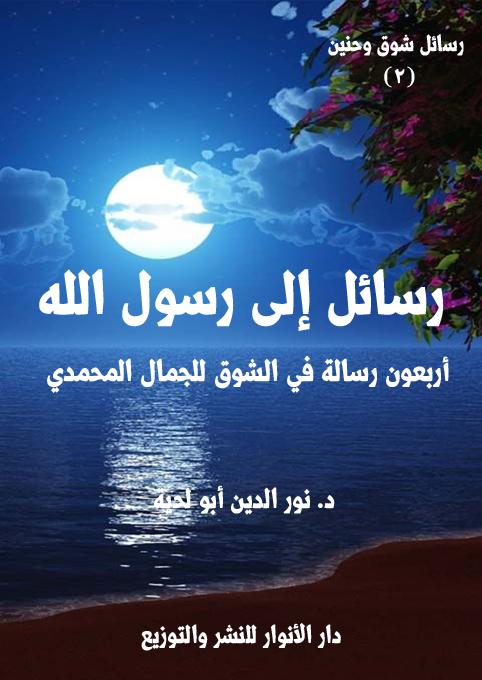

الكتاب: رسائل إلى رسول الله
الوصف: أربعون رسالة في الشوق للجمال المحمدي
السلسلة: رسائل شوق وحنين
المؤلف: أ.د. نور الدين أبو لحية
الناشر: دار الأنوار للنشر والتوزيع
الطبعة: الأولى، 1440 هـ
عدد الصفحات: 358
ISBN: 978-620-3-85925-6
لمطالعة الكتاب من تطبيق مؤلفاتي المجاني وهو أحسن وأيسر: هنا

التعريف بالكتاب
تهدف هذه الرسائل إلى ثلاثة أهداف كبرى:
أولا ـ بيان كمالات رسول الله صلى الله عليه وآله وسلم في المجالات المختلفة، فالحب لا يكون إلا بعد إدراك الكمال.
ثانيا ـ رد الشبهات والتحريفات عن رسول الله صلى الله عليه وآله وسلم، ذلك أنها تتنافى مع الكمال، وقد تسيء إليه، وقد تكون هي الحجاب الذي يحول بين القلب وبين المحبة.
ثالثا ـ التوسل برسول الله صلى الله عليه وآله وسلم لتحقيق ما يرتبط بالكمال من سلوك وأخلاق وغيرها، وقد جعلنا ذلك في خاتمة كل رسالة، مثلما يقدم للدعاء بالثناء على الله، ثم يختم بطلب الحاجات.
ولم يكن هدفنا من التوسل طلب الحاجة فقط، وإنما كان هدفنا الأكبر منه تبيين الأثر السلوكي لمحبة رسول الله صلى الله عليه وآله وسلم في كل جانب من الجوانب، لأن العقيدة التي لا تثمر عملا عقيدة الكسالى والمدعين، لا المجدين والصادقين.
وقد جمعنا في هذه الرسائل أربعين صفة من صفات رسول الله صلى الله عليه وآله وسلم، وشرحناها، وبينا أدلتها المختلفة من خلال تلك الخطابات الموجهة إليه.
رسائل إلى رسول الله (6)
هذا الكتاب محاولة للتقرب من رسول الله صلى الله عليه وآله وسلم، من خلال رسائل موجهة إليه، تخاطبه مباشرة، ومن غير حواجز، فلا حواجز ولا حجب تحول بيننا وبين رسول الله صلى الله عليه وآله وسلم غير تلك الأوهام التي صنعناها بأنفسنا، وإلا فإن رسول الله صلى الله عليه وآله وسلم أقرب إلينا منا، ويمكننا أن نتواصل معه متى نشاء.
وكيف لا يمكن ذلك، وعلاقته بأمته ـ كما يذكر في أحاديثه الكثيرة ـ علاقة ممتدة، لا منقطعة.. والقطيعة إن حصلت ليست من النبوة، وإنما من المتعاملين معها، ذلك أنها مثل الشمس، لا تحتجب إلا على من يشاء أن يحجب نفسه عنها.
وبما أن أجمل نجوى مع الله هي الحديث في تنزيهه وتقديسه وحمده؛ فإن أجمل حديث مع رسول الله صلى الله عليه وآله وسلم هو الحديث عما آتاه الله من أصناف الكمال والجمال.. حتى يكون ذلك بمثابة الترياق الذي يزيل الشبهات، والإكسير الذي يزرع المحبة في القلب.
فنحن مطالبون في علاقتنا برسول الله صلى الله عليه وآله وسلم أن تكون علاقة محبة، لا مجرد طاعة، ذلك أن المحب لا يكتفي بالطاعة الظاهرة، وبأداء التكاليف، وإنما يضيف إلى ذلك التعامل الوجداني معها، وهو ما يجعلها في أرقى مراتب الكمال.
ولهذا، فإن هذه الرسائل تهدف إلى ثلاثة أهداف كبرى:
أولا ـ بيان كمالات رسول الله صلى الله عليه وآله وسلم في المجالات المختلفة، فالحب لا يكون إلا بعد إدراك الكمال.
ثانيا ـ رد الشبهات والتحريفات عن رسول الله صلى الله عليه وآله وسلم، ذلك أنها تتنافى مع الكمال، وقد تسيء إليه، وقد تكون هي الحجاب الذي يحول بين القلب وبين المحبة.
ثالثا ـ التوسل برسول الله صلى الله عليه وآله وسلم لتحقيق ما يرتبط بالكمال من سلوك وأخلاق وغيرها،
رسائل إلى رسول الله (7)
وقد جعلنا ذلك في خاتمة كل رسالة، مثلما يقدم للدعاء بالثناء على الله، ثم يختم بطلب الحاجات.
ولم يكن هدفنا من التوسل طلب الحاجة فقط، وإنما كان هدفنا الأكبر منه تبيين الأثر السلوكي لمحبة رسول الله صلى الله عليه وآله وسلم في كل جانب من الجوانب، لأن العقيدة التي لا تثمر عملا عقيدة الكسالى والمدعين، لا المجدين والصادقين.
وقد جمعنا في هذه الرسائل أربعين صفة من صفات رسول الله صلى الله عليه وآله وسلم، وشرحناها، وبينا أدلتها المختلفة من خلال تلك الخطابات الموجهة إليه.
وتلك الصفات هي: السراج المنير.. الوسيلة العظمى.. أسوة المتألمين.. النبأ العظيم.. الرحمة المهداة.. القرآن الناطق.. العالم الراسخ.. العارف المحقق.. الإمام الممكّن.. القائد الملهم.. المبلغ الأمين.. الواعظ الخطيب.. البشير النذير.. الحكيم البليغ.. المعلم الناصح.. الشهم الشجاع.. المخلِص المخلَص.. رسول العالَمين.. النبي المعصوم.. خاتم النبيين.. المخلّص الموعود.. المؤيد بالمعجزات.. المنبأ بالنبوءات.. مجاب الدعوات.. مهبط البركات.. المستبصر المتوسم.. المبجل المكرم.. المحبوب المعظم.. المتبتل العابد.. العفيف الزاهد.. المقاوم المجاهد.. التقي النقي.. المتواضع الأبي.. المؤدب الحيي.. الذاكر النجي.. الجواد الكريم.. العفو الحليم.. الصادق الأمين.. العبقري الخبير.. الهادي البصير.
وننبه إلى أنا تعمدنا ذكر أكبر عدد من النصوص والأحاديث، لأن الهدف من الكتاب هو التعريف برسول الله صلى الله عليه وآله وسلم، وتقريبه، وتعميق الإيمان به، ولذلك كان لتلك النصوص دورها الكبير في إعطاء تلك الصورة الجميلة، لأنها وحدها من يمكنه نفي تلك الصورة المشوهة التي رسمها له أعداؤه القدامى والمحدثين، من الذين يشعرون أو لا يشعرون.
وننبه ـ كذلك ـ إلى أنا ابتعدنا في الكثير من تلك الروايات على النقل الحرفي لها، إما
رسائل إلى رسول الله (8)
بسبب احتوائها للكثير من التفاصيل التي لا تغنينا، أو لكونها تحتوي على بعض التشويهات التي نرى أنها دست على النبوة.
وهذا بناء على تصورنا للتعامل مع الحديث، والذي تحدثنا عنه بتفصيل في كتاب [سنة بلا مذاهب]، وهو عدم رمي الحديث بسبب بعض ألفاظه أو جمله، إذا ما كان فيه بعض المعاني الصحيحة، ذلك أن الجزء المرفوض قد يكون من تصرف الرواة، وليس من أصل الحديث، كما روي عن أبي هريرة أنه حدث عن رسول الله صلى الله عليه وآله وسلم أنه قال: (أفضل الصدقة ما ترك غنى، واليد العليا خير من اليد السفلى، وابدأ بمن تعول. تقول المرأة: إما أن تطعمني وإما أن تطلقني، ويقول العبد: أطعمني واستعملني، ويقول الابن: أطعمني، إلى من تدعني) (1)
وعندما سئل بعد روايته للحديث، فقيل له: يا أبا هريرة، سمعت هذا من رسول الله صلى الله عليه وآله وسلم؟ قال: (لا، هذا من كيس أبي هريرة) (2)
فالجزء الأول من الحديث صحيح، لكن الجزء الثاني، وهو قوله: (تقول المرأة: إما أن تطعمني وإما أن تطلقني، ويقول العبد: أطعمني واستعملني، ويقول الابن: أطعمني، إلى من تدعني)، فإنه واضح في كونه من تصرف الراوي، ولذلك لا يصح رمي الحديث جميعا بسبب تصرف الراوي في بعض أجزائه.
__________
(1) رواه أحمد 2/ 252 (7423) وفي 2/ 476 (10175)، والبخاري: 5355 وأبو داود: 1676...
(2) التخريج السابق.
رسائل إلى رسول الله (9)
سيدي يا رسول الله.. أيها النبأ العظيم الذي هم فيه يختلفون.
لقد بحثت في تاريخ البشرية، وقلبت صفحات عظمائها، فلاسفتهم، وعلمائهم، وقادتهم، وزعمائهم، ورجال دينهم.. فلم أجد شخصا كان له ذلك التأثير الذي كان لك على الرغم من أنك عشت في بيئة صحراوية بدوية متخلفة عن ركب الأمم التي كانت تعاصرها.
وعلى الرغم من كونك لم تكن مؤيدا بقيصر ولا بكسرى ولا بفرعون.. ولا بأي حاكم يمدك بما تتطلبه الشهرة والجاه من فنون الإشهار.
وعلى الرغم من كونك تعرضت للكثير من الهجمات من قومك الأدنين، ومن غيرهم من الأبعدين.. الذي اجتمعوا جميعا على حربك وتشويهك.. فكتبوا القصائد، ونشروا الجنود، وأعدوا كل أنواع العدة لإطفاء نورك.. ومع ذلك لم تزد الأيام نورك إلا تألقا واشتعالا ولمعانا.
ولم يكن ذلك وحده ما أثار عجبي.. وإنما ذلك التسجيل العجيب لكل مجريات حياتك.. بل حتى لمن حظي بالجلوس إليك وموالاتك، أو خسر بالابتعاد عنك ومعاداتك.. كلهم حفظت أسماؤهم وأنسابهم والكثير من تفاصيل حياتهم.
أما أنت، فقد حفظت لنا حركاتك وسكناتك.. وأقوالك وأفعالك.. حتى ابتسامتك التي كنت ترسلها كل حين.. حفظت لنا، فعرفنا متى ابتسمت، ومتى غضبت.. وما الذي فعلت، وما الذي لم تفعل.
وقد جُند لذلك جنود كثيرون من الرواة والمحدثين والعلماء في كل المجالات.. لا دور لهم إلا ذلك..
رسائل إلى رسول الله (10)
وعندما عدت لتاريخ غيرك من الزعماء والعلماء وحتى الأنبياء.. لم أجد إلا شيئا قليلا لا يكاد يذكر أمام ما هيء لك.
فموسى عليه السلام على الرغم من كونه كان محاطا بالكثير من الكتبة، لا نعلم عن حياته ـ حسب الأسفار الخمسة من التوراة ـ إلَّا قتاله وقيادته في الحرب وبسالته فيها، ثم لا نرى بعد ذلك شيئا كثيرا يتعلق بحياته، وكيفية التعامل مع أحوالها المختلفة.
وهكذا لا نجد في الأناجيل تفاصيل كثيرة ترتبط بحياة المسيح عليه السلام، وكيف كان يتعامل مع القضايا المختلفة..
وهكذا لا نجد في سيرة بوذا إلا هجرته لأهله وعياله إلى الصحاري والغابات؛ وكونه لم ير ولده الوحيد مرةً أخرى، وكونه ترك عن كاهله أعباء الحُكْم، وارتضائه للموت أخيرا طريقا للخلاص.
وهكذا عندما عدت للفلاسفة الكبار والقادة العظام لم أجد من اهتم بتفاصيل حياتهم مثلما وجدت من اهتم بكل تفاصيل حياتك.
وعندما رحت أبحث عن أكثر الأسماء شهرة وترديدا، وفي جميع أنحاء العالم، وجدت اسمك هو الاسم الوحيد الذي يردد كل يوم وعلى جميع مآذن العالم، وبصوت عال، وهو ينادي (محمد رسول الله)
أسمعه من على المنارات، وفي القنوات الفضائية، وفي البث الإذاعي.. وأسمع معه ملايين، بل ملايير الحناجر، وهي تصلي وتسلم عليك كلما ذكرت..
عندما سمعت كل هذا رحت أقرأ تلك الكلمات التي أوحاها الله إليك، وأنت في مكة المكرمة، تُكال لك كل ألوان التهم، وتُقذف بكل أنواع السباب، وتُرمى بالحجارة، ويسخر الكل منك.. لكن الله تعالى كان يقول لك حينها مطمئنا: {أَلَمْ نَشْرَحْ لَكَ صَدْرَكَ
رسائل إلى رسول الله (11)
(1) وَوَضَعْنَا عَنْكَ وِزْرَكَ (2) الَّذِي أَنْقَضَ ظَهْرَكَ (3) وَرَفَعْنَا لَكَ ذِكْرَكَ (4) فَإِنَّ مَعَ الْعُسْرِ يُسْرًا (5) إِنَّ مَعَ الْعُسْرِ يُسْرًا (6) فَإِذَا فَرَغْتَ فَانْصَبْ (7) وَإِلَى رَبِّكَ فَارْغَبْ (8)} [الشرح: 1، 8]
ثم يقول لك، وأنت في المدينة، وبعد أن تحزبت عليك كل الأحزاب، واجتمع لحربك كل الحاقدين: {يُرِيدُونَ أَنْ يُطْفِئُوا نُورَ اللَّهِ بِأَفْوَاهِهِمْ وَيَأْبَى اللَّهُ إِلَّا أَنْ يُتِمَّ نُورَهُ وَلَوْ كَرِهَ الْكَافِرُونَ (32) هُوَ الَّذِي أَرْسَلَ رَسُولَهُ بِالْهُدَى وَدِينِ الْحَقِّ لِيُظْهِرَهُ عَلَى الدِّينِ كُلِّهِ وَلَوْ كَرِهَ الْمُشْرِكُونَ} [التوبة: 32، 33]، ويقول: {يُرِيدُونَ لِيُطْفِئُوا نُورَ اللَّهِ بِأَفْوَاهِهِمْ وَاللَّهُ مُتِمُّ نُورِهِ وَلَوْ كَرِهَ الْكَافِرُونَ (8) هُوَ الَّذِي أَرْسَلَ رَسُولَهُ بِالْهُدَى وَدِينِ الْحَقِّ لِيُظْهِرَهُ عَلَى الدِّينِ كُلِّهِ وَلَوْ كَرِهَ الْمُشْرِكُونَ} [الصف: 8، 9]
لقد علمت بعد هذا كله المدد الذي كنت تُمد به.. وأنه ليس من الشرق ولا من الغرب.. ولا من العرب ولا العجم.. ولا من المحدثين ولا من الفقهاء.. وإنما من الله.. فالله هو الذي أراد لاسمك أن يقترن باسمه، حتى لا يصل إليه إلا من وصل إليك.
لقد أراد الله أن يسمع بك العالم أجمع.. وأن يبحث عنك العالم أجمع.. ذلك أن من وصل إليك وصل إلى الحقيقة والسراط المستقيم، وفاز بسعادة الأبد.
ولذلك حاول الشياطين أن يسيئوا إلى اسمك، فربطوا ذلك الشعار العظيم [محمد رسول الله] الذي أقض مضاجعهم، بأولئك المغفلين الحاقدين الذين ورثوا دين الفئة الباغية، وأصحاب الملك العضوض.
لقد راحوا يرسمون اسمك على راياتهم السوداء كسواد قلوبهم، والملطخة بالدماء، ليسيئوا إليك، وإلى القيم النبيلة التي تمثلها..
وراح غيرهم يرسمون الرسوم الساخرة، أو ينتجون الأفلام الوقحة، أو يكتبون
رسائل إلى رسول الله (12)
الروايات البذيئة.. لينزلوك عن ذلك المقام الرفيع الذي أنزلك الله إياه.
ولن يفلحوا في ذلك.. كما لم يفلح القرشيون واليهود والمنافقون ومرضى القلوب.. وكما لم تفلح كل تلك الترسانة من الرواة الذين جندهم سلاطين الفئة الباغية.
فأنت ـ يا سيدي ـ نور الله الذي سيبقى مشعا حتى تنمحي جميع الظلمات.. وحتى يهيمن دينك على الدين كله.. وحتى يتساقط أمامك كل أولئك الدجالين والمشعوذين الذين راحوا يتلاعبون بالحقائق، ويشوهونها.
سيدي رسول الله..
أنا العبد الضعيف الذي يتشرف بأن يكون خادما لنعلكم، بل للتراب الذي تمشون عليه.. أسألك أن تقربني منك، حتى أحظى بنورك الحقيقي الذي يطفئ جميع ظلماتي.. فقد راح الكثير من الدجالين يخلطون نورك بنيران الشياطين ليشوهوا جمال النور الذي جئت به.. فيجعلوا منه نيرانا يحرقون بها الحقائق، ويهدمون بها القيم.
وأسألك ـ سيدي ـ أن أعرفك كما أنت، لا كما صوروك.. فأنت الصفاء والنور والجمال.. وأنت الأخلاق الرفيعة، والقيم السامية.. وأنت الرحمة المهداة، والنعمة المسداة، وسراط الله المستقيم.. وأنت أنت..
رسائل إلى رسول الله (13)
سيدي يا رسول الله.. يا من وصفك ربك، فقال: {وَدَاعِيًا إِلَى اللَّهِ بِإِذْنِهِ وَسِرَاجًا مُنِيرًا} [الأحزاب: 46]
أنت ـ سيدي ـ سراج منير بكل المقاييس، وما وصفك ربك به حقيقة لا مجال فيها للشك، ولا للمبالغة، بل هي تصوير إلهي بديع لحقيقتك، وحقيقة الوظائف العظيمة التي وُكلت لك.. والتي يرتبط بها ذلك العالم الجميل المغيب الذي لا نراه.. لكننا بواسطتك يمكننا أن نراه ونعيشه ونتواصل معه، ونصبح جزءا منه.
فكما أن حكمة الله تعالى ولطفه بعباده ورحمته بهم اقتضت أن يجعل لهذه الأرض شمسا تمدها بالنور.. ولولاها لعاشت الأجساد في الظلمات المدلهمة، لا ترى ربيعا، ولا تسمع تغاريد العصافير، ولا تقطف ثمار الأشجار، ولا تتذوق طعما لأي شيء، كما وصف الله تعالى ذلك، فقال: {وَجَعَلْنَا سِرَاجًا وَهَّاجًا (13) وَأَنْزَلْنَا مِنَ الْمُعْصِرَاتِ مَاءً ثَجَّاجًا (14) لِنُخْرِجَ بِهِ حَبًّا وَنَبَاتًا (15) وَجَنَّاتٍ أَلْفَافًا (16)} [النبأ: 13 - 16]
فالجنات الملتفة، والنباتات المتنوعة، والثمار اللذيذة، والألوان الباهية، والنسيم العليل، والدفء الذي تستشعره الأجسام، وتنتشي له.. كل ذلك فيض من كرم تلك الشمس التي أودعها الله لتكون سراجا لعالم الأجساد.. ولذلك لا يمكن أن تقوم الحياة من دونها.
وهكذا أنت ـ يا رسول الله ـ في عالم الأرواح.. فلولاك لم نر إلا الأشباح المخيفة، والشياطين المرعبة.. ولولاك لعشنا في سجون التشاؤم المطبق، والحزن الشديد، والكآبة التي لا علاج لها.
ولولاك لم نر أشجار الحقائق الممتلئة بكل ثمار الجمال.. ولولاك لم نتمكن من قطف
رسائل إلى رسول الله (14)
أي ثمرة منها.. وكيف نقطفها، ونحن لا نهتدي إليها، ولا نراها، ولا نسمع بها.. وهل يمكن لأحد أن يهتدي لشيء، وهو يعيش في ذلك العالم المظلم الذي وصفه الله تعالى، فقال: {أَوْ كَظُلُمَاتٍ فِي بَحْرٍ لُجِّيٍّ يَغْشَاهُ مَوْجٌ مِنْ فَوْقِهِ مَوْجٌ مِنْ فَوْقِهِ سَحَابٌ ظُلُمَاتٌ بَعْضُهَا فَوْقَ بَعْضٍ إِذَا أَخْرَجَ يَدَهُ لَمْ يَكَدْ يَرَاهَا} [النور: 40]
ولذلك كنت أنت النور الذي أمدنا الله به، لنرى ربيع الحقائق، ونشم أريج عطرها الفواح الذي لم نكن لنهتدي إليه لولا ذلك الضياء الذي جعلك الله مصدرا له، {وَمَنْ لَمْ يَجْعَلِ اللَّهُ لَهُ نُورًا فَمَا لَهُ مِنْ نُورٍ} [النور: 40]
أنت سيدي منبع الأنوار الحقيقية التي لم تختلط بنيران الشياطين.. فلذلك من لجأ إليك، واحتمى بنورك، واستمد منه، واكتفى به، لم يضل عن السراط المستقيم.
وعندما يأتي في ذلك الموقف الذي تنكشف فيه الحقائق، ويرتفع التمويه يجد نفسه ممتلئا بأنوارك، فلذلك لا يرى الظلمات، ولا ترعبه الأشباح، ولا يقع في تلك الحفر الكثيرة، بل سيكون صاحب نور عظيم، وبصيرة قوية.. كما قال تعالى: {يَوْمَ تَرَى الْمُؤْمِنِينَ وَالْمُؤْمِنَاتِ يَسْعَى نُورُهُمْ بَيْنَ أَيْدِيهِمْ وَبِأَيْمَانِهِمْ} [الحديد: 12]
وكيف لا يكون كذلك، وهو لم يكن يخلط نورك بالظلمات، ولا بالنيران.. بل كان مكتفيا بك، يعيش في عالمك الممتلئ بالجمال.
أما أولئك الكذبة المخادعون، والذين لم يكتفوا بسراجك، أو رأوا أن سراجك أدنى من أن يضيء لهم الظلمات، فراحوا إلى غيرك، وخلطوا الحق بالباطل، وأكلوا الثمار المسمومة التي نهوا عن أكلها..
في ذلك الموقف الشديد.. تختلط عليهم الأمور.. ويذهب كل ذلك النور الكاذب الذي لم يكن يستمد من سراج الله الذي نصبه لعالم الأرواح، بل كان يستمد من نيران
رسائل إلى رسول الله (15)
الشياطين التي كانت تخدع البشر..
لقد ذكر الله تعالى ذلك الموقف الشديد، وحذرنا منه أبلغ تحذير، فقال: {يَوْمَ يَقُولُ الْمُنَافِقُونَ وَالْمُنَافِقَاتُ لِلَّذِينَ آمَنُوا انْظُرُونَا نَقْتَبِسْ مِنْ نُورِكُمْ قِيلَ ارْجِعُوا وَرَاءَكُمْ فَالْتَمِسُوا نُورًا فَضُرِبَ بَيْنَهُمْ بِسُورٍ لَهُ بَابٌ بَاطِنُهُ فِيهِ الرَّحْمَةُ وَظَاهِرُهُ مِنْ قِبَلِهِ الْعَذَابُ (13) يُنَادُونَهُمْ أَلَمْ نَكُنْ مَعَكُمْ قَالُوا بَلَى وَلَكِنَّكُمْ فَتَنْتُمْ أَنْفُسَكُمْ وَتَرَبَّصْتُمْ وَارْتَبْتُمْ وَغَرَّتْكُمُ الْأَمَانِيُّ حَتَّى جَاءَ أَمْرُ اللَّهِ وَغَرَّكُمْ بِاللَّهِ الْغَرُورُ (14)} [الحديد: 13، 14]
هؤلاء ـ سيدي ـ الذين أعرضوا عنك، وعن وصاياك، وراحوا يتصورون أنهم يمكنهم أن يحولوا من أهوائهم سرجا بديلة لسراجك، فخدعتهم أحوج ما كانوا إليها.
لقد كذبوا على أنفسهم في الدنيا، فلذلك كذبت عليهم أنفسهم هناك..
هناك ـ سيدي ـ يمتلئ بالحزن والأسى والألم كل من أعرضوا عن سراجك المنير، وراحوا لتلك السرج المزيفة يستضيئون بها، فأكلوا من ثمارها سموما، وربوا في حقول نفوسهم حيات وعقارب.. سرعان ما كشرت لهم عن أنيابها عندما أزيل ستار التمويه، ورأى الخلق الحقائق.
لقد ذكر الله تعالى ذلك، وحذر منه أبلغ تحذير، فقال: {إِذْ تَبَرَّأَ الَّذِينَ اتُّبِعُوا مِنَ الَّذِينَ اتَّبَعُوا وَرَأَوُا الْعَذَابَ وَتَقَطَّعَتْ بِهِمُ الْأَسْبَابُ (166) وَقَالَ الَّذِينَ اتَّبَعُوا لَوْ أَنَّ لَنَا كَرَّةً فَنَتَبَرَّأَ مِنْهُمْ كَمَا تَبَرَّءُوا مِنَّا كَذَلِكَ يُرِيهِمُ اللَّهُ أَعْمَالَهُمْ حَسَرَاتٍ عَلَيْهِمْ وَمَا هُمْ بِخَارِجِينَ مِنَ النَّارِ} [البقرة: 166، 167]
هؤلاء ـ سيدي ـ هم أولئك الذين أعرضوا عن نورك، وعن سراجك المنير، وراحوا يقيمون أندادا وأصناما وطواغيت ركنوا لها، وهجروك، وتصوروا أنها تعسفهم عندما يحتاجون إليها، فتخلت عنهم، وهم أحوج ما يكونون إليها.
رسائل إلى رسول الله (16)
سيدي رسول الله.. أنا العبد الفقير الحقير الذي تشرف بأن يكون فردا من أمتك..
أسألك أن تنقذني من كل تلك السرج الكاذبة.. فلا تطيق نفسي أن تحترق بلهيبها.
ضمني إلى نورك، واجعلني أعيش في ربيعك، وفي الحقول الجميلة التي نضجت من أنوار سراجك..
اجعلني زهرة من أزهارها.. وثمرة من ثمارها.. ونورا من أنوارها.
واجعلني أتجول في تلك الجنات الفسيحة التي تنعمت بأن تكون سراجها المنير، فحياتي التي يملؤها البرد القارس لا يمكن أن تجد لذة الدفء من دونك.
وحياتي التي تلمؤها الظلمات لا يمكن أن تبصر الجمال، وتتنعم بالتواصل معه من دون أن تكون أنت نورها وضياءها وعينها.
فاجعلني أفنى عن نفسي بك.. لأبصر العالم بعينيك.. وأعيش الحقائق بروحك..
رسائل إلى رسول الله (17)
سيدي يا رسول الله.. يا من جعلك الله الوسيلة العظمى، والحبل الممدود، وسفينة النجاة..
كيف لا نشتاق إليك، وأنت أشد ضرورة لنا من الهواء الذي نتنفسه، والماء الذي نشربه، والروح التي نعيش بها؟
بل لولاك لكانت أرواحنا مثل أجسادنا.. مجرد طين وماء وحمأ مسنون..
كيف لا نشتاق إليك، وأنت الذي أعطيت الحياة طعمها ولونها وجمالها..
فلولاك ما أزهر الربيع، وما أشرقت الشمس.. وما تبينت لنا حقائق الأشياء المخبأة في سراديب الظلمات.
لولاك لكان كل شيء مقبرة وموتا، وأشباحا مخيفة..
أنت لنا مثل العينين اللتين لا يمكن أن نرى الألوان، ولا جمال الأشياء من دونهما.
بل أين العينان منك.. وما أبعدهما عنك.. فهما وسيلتنا لذلك الجمال المحدود الذي سرعان ما يذبل.. أما أنت فوسيلتنا إلى الجمال الكامل الحقيقي الدائم الذي لا تستطيع الأيام أن تغيره، ولا الحوادث أن تبدله.
ولذلك أنت لنا العينان الحقيقيتان اللتان لا يمكن أن نرى الكون على حقيقته من دونهما.. فمن لم ير الكون بك عاش أعمى، حتى لو امتلك من أجهزة الإبصار ما يرى به جميع الأفلاك.. دقيقها وجليلها.
وأنت لنا الأذنان اللتان نسمع بهما حقائق الوجود.. ومن مصدر الوجود.. ولولاك لعشنا في عالم الصمت المطبق..
يا رسول الله.. كم يصيبنا الألم عندما نشعر بأولئك الذين تخلو حياتهم منك.. ويلهم
رسائل إلى رسول الله (18)
كيف يمكنهم أن يعيشوا، وهم لا يرون السراج المنير الذي يضيء لهم في مدلهمات الظلمات؟
وكيف يمكنهم أن يهتدوا إلى حقائق الوجود.. وهم لا يتأملون في صحيفتك التي جعلها الله مرآة صقيلة لتعرفهم بالوجود.. وحقائقه وقوانيه؟
لقد خرجت اليوم إلى المقبرة.. وكانت موحشة جدا، وعندما رأيتها، وتصورت نفسي في قبر من قبورها.. رأيت الحياة مجرد مزحة ثقيلة.. وأصابني اكتئاب وألم شديد.
لكني عندما توسلت بك.. ورحت أنظر إليها من خلالك.. بدت لي شيئا آخر تماما.. وبدا لي ذلك القبر الموحش جنة غناء.. وبرزت لي آفاق جديدة في الحياة لم يكن عقلي لولاك ليحلم بها، ولا ليعرفها، ولا ليصلها.. حتى الخيال لم يكن ليتطاول للوصول إليها.
بعد أن عدت من المقبرة، ورحت أنظر إلى الحياة كلها من عينيك الجميلتين.. رأيتها شيئا آخر تماما..
لقد كانت سابقا في عيني مفازة للتنافس على المال والجاه والسلطان.. لكنها بفضل عينيك تحولت إلى مفازة للقيم النبيلة والأخلاق الرفيعة والحقائق السامية.
كنت قبل أن أرى الحياة بعينيك أحسد كل أمير أو وزير أو ملك أو صاحب قصر فخم، أو مركب فاره.. لكني عندما رأيتها بعينيك استحالت كل تلك الأشياء مجرد لهو ولعب لا يختلف عن لهو الأطفال ولعبهم.
لقد كانت جل مطالبي من دونك خدمة ترابي ومائي وخلاياي وأنسجتي.. لكني بعد أن عرفتك ترقيت عن عالم الطين إلى عالم العقل والقلب والروح والسر وكل المعارج التي أرحل بها إلى ذلك العالم الأسمى..
بفضلك سيدي.. صرت أشعر أني أتحرك بحركة جوهرية نحو عوالم الكمال التي كنت محجوبا عنها عندما كنت بعيدا عنك، ولم تكن أنت وسيلتي، ولم تكن سفينتك مركبي،
رسائل إلى رسول الله (19)
ولا دربك دربي.
لكني بعد أن سرت خلفك، ومددت يدي إليك، وإلى حبك.. وامتطيت سفينتك.. رأيت الخلق جميعا غرقى في طوفان الأهواء، يعيشون مثل الصغار، ويموتون مثل تلك البهائم التي لا ترى الحياة إلى في المرعى إلى أن يأتي الجزار ليسلبها منها.
بفضلك سيدي تغيرت نظرتي للكون.. ولنفسي.. وللحياة.. وللعالم.. ولكل شيء..
بفضلك سيدي زالت كآبتي وتشاؤمي ويأسي.. لأن الحياة بعينيك أجمل بكثير.. هي كلها ربيع.. لأن سراجك المنير يضيء عليها..
بل يملؤها بالألوان التي لا يمكن لعيوننا أن تراها.. فلا يمكن أن نراها إلا بعينيك.. مثل ذلك الفلكي الذي لا يمكنه أن يرى الكواكب البعيدة من دون مرصاده..
وأين مرصاد الفلكي منك.. فهو لا يريه إلا حجارة في السماء، أما أنت فنرى بك من العوالم ما لا تطمع جميع مراصد الدنيا في اكتشافه.
وأنت فوق ذلك كله لا ترينا الحقائق فقط، بل تدلنا على الطريق الذي نصل به إلى السعادة الأبدية..
تلك السعادة التي تاهت عنها كل العقول التي تكبرت عن أن تنظر إلى الحياة من منظارك.
فأنت لذلك ـ سيدي ـ منارتنا التي نهتدي بها في الظلمات، وأنت سراطنا المعبد الذي يقينا من الوقوع في المهالك الكثيرة التي وضعت في غير طريقك..
وأنت الذي تمد يديك لمن شاء أن يمسك بهما، حتى يعيش معك، ومع ذلك العالم الجميل الذي دللتنا عليه، وكنت تحزن حزنا شديدا عندما ترى الخلائق معرضين عنك، مكتفين بتلك العيون التي لا يرون بها إلا المراعي والمقابر.
رسائل إلى رسول الله (20)
ولذلك ـ سيدي ـ أنت لنا الروح الحقيقية.. فلولاك لكانت أرواحنا مثل أجسادنا مجرد طين وماء وحمأ مسنون.
وأنت لنا العقل الذي نبصر به الحقائق.. ولولاك لكنا مجانين.. لأنا نرى الحقائق خلاف ما هي عليه في الواقع.
وأنت لنا القلب الطاهر الذي نعشق به الحقائق.. ولولاك لغرقنا في حمأة الحب المدنس الذي يرمينا في مستنقعات الأهواء.
ولذلك أنت لنا الحياة الحقيقية.. التي لولاها لعشنا حياة مزيفة، مثل أولئك الذين يعمرون دهرا طويلا، ويتمتعون بمتع كثيرة.. ثم يخرجون من الحياة، قبل أن يكتشفوا أجمل ما فيها..
ولذلك صدق ربك عندما اعتبرك مصدرا للحياة، فقال: {يَاأَيُّهَا الَّذِينَ آمَنُوا اسْتَجِيبُوا لِلَّهِ وَلِلرَّسُولِ إِذَا دَعَاكُمْ لِمَا يُحْيِيكُمْ} [الأنفال: 24]
فأنت سيدي ذلك الداعي الذي ينفخ الحياة الحقيقية في كل من آمن به وأحبه واتبعه.. وبقدر المحبة تكون روح الحياة الجديدة.. التي لا يمكن للإنسان أن يولد الولادة الحقيقة من دونها.
رسائل إلى رسول الله (21)
سيدي يا رسول الله.. يا أسوة كل المضحين والمتألمين والمتعبين..
أكتب هذه الرسالة إليك بعد أن أصابني بعض الإرهاق، نتيجة أعمال بسيطة، تصورت أني قمت بها في خدمة دينك.. وتوهمت معها كذبا وزورا أني قدمت بعض التضحيات أثناء ذلك.
لكني عندما تركت النظر في مرآة نفسي الأمارة بالسوء، ورحت أنظر إلى مرآتك الصقيلة، ورأيت كل تلك الآلام العظيمة التي مرت عليك طيلة حياتك.. وتلك التضحيات التي لا نزال نعيش آثارها.. استحييت من نفسي، وامتلأت خجلا من ذلك الذي سميته تعبا وألما وتضحية..
فأين تعبي وألمي وتضحيتي.. بل أين تعب الملايين وآلامهم وتضحياتهم مما حصل لك في حياتك.. أنت الذي قضيت حياتك كلها في خدمة رسالتك ومبادئك والقيم العظيمة التي جئت بها.
لقد تذكرت ـ سيدي ـ كيف أمرك ربك أن تنزع الدثار عنك، وتخرج لإنذار أولئك الأجلاف الغلاظ المستكبرين.. الذين لم يراعوا حرمتك، ولا كرامتك، ولا نبلك، ولا نبوتك.. وهم الذين كانوا يعرفون دماثة أخلاقك، وسماحة طبعك..
بمجرد أن جاءك الأمر الإلهي رحت مسرعا تنفذه من دون أي تردد، أو أي حساب لأي أذى يمكن أن تتعرض له.. مع أنك كنت تعلم أن الكل سيقف في وجهك.. وأنهم سيرددون عليك ما ردده الجهلة على أنبيائهم.
لكنك ـ سيدي ـ لم تبال بكل ما يقولونه لك.. فليقولوا: ساحر أو كاهن أو مجنون أو ابن أبي كبشة.. أو ما شاءت لهم لغتهم من ألفاظ البذاءة، وما شاءت لهم نفوسهم من سموم
رسائل إلى رسول الله (22)
الحقد.
لقد كنت مترفعا عليهم، لأنك لم تكن تستمع إلا إلى ربك، وهو يسليك بقوله: {وَلَقَدْ نَعْلَمُ أَنَّكَ يَضِيقُ صَدْرُكَ بِمَا يَقُولُونَ (97) فَسَبِّحْ بِحَمْدِ رَبِّكَ وَكُنْ مِنَ السَّاجِدِينَ (98) وَاعْبُدْ رَبَّكَ حَتَّى يَأْتِيَكَ الْيَقِينُ} [الحجر: 97 - 99]، ويقول لك: {فَتَوَلَّ عَنْهُمْ فَمَا أَنْتَ بِمَلُومٍ (54) وَذَكِّرْ فَإِنَّ الذِّكْرَى تَنْفَعُ الْمُؤْمِنِينَ} [الذاريات: 54، 55]
لم تكن تسمع إلا إلى ربك، وهو يحكي لك قصص الأنبياء، وهم يعانون مثلما تعاني، ويتألمون مثلما تتألم.. ليكون ذلك الألم، وتلك التضحية علامة الصدق الأكبر.. فهل يمكن للكاذب والمدعي أن يضحي أو يتألم أو يرضى بأن يواجه بمثل تلك المعاملات القاسية؟
ولم تكن تلك المعاملات القاسية قاصرة على الكلمات البذيئة الممتلئة بالحقد.. بل كانت تتحول كثيرا إلى أفعال، تنم عن حقد عظيم..
لقد سجل لنا الرواة بعض مشاهد تلك الآلام.. حيث ذكروا لنا أنك ـ سيدي ـ كنت تصلي بفناء الكعبة، ومع علمهم بحرمتها إلا أن بعضهم جاء إليك، وأخذ بمنكبك، ولوى ثوبه في عنقك، وخنقك خنقا شديدا (1)..
ورووا أنهم كانوا يطرحون عليك أحشاء الذبائح، وأنت تصلي.. بل كانوا يضعونها في طريقك، وأمام بيتك.. ولم تكن تملك إلا أن تقول لهم: أي جوار هذا (2)؟.. ثم تستمر في دعوتهم إلى الله، وبأسلوبك الهادئ الممتلئ بالحكمة والرحمة والتواضع.
ولم يكن ذلك ألمك الوحيد ـ سيدي ـ بل كنت تسير على قدميك المسافات الطويلة، وأنت تبشر وتنذر، وهم خلفك يستهزئون بك، ويحذرون منك.. وأنت لا تبالي بما يقولون،
__________
(1) صحيح البخاري، 4/ 1814.
(2) سبل الهدى والرشاد في سيرة خير العباد (2/ 463)
رسائل إلى رسول الله (23)
ولا ما يفعلون.
ولم تكتف في سيرك بأسواق عكاظ، ولا ذي المجاز ولا غيرها من الأسواق.. بل كنت تقطع المسافات الطويلة.. حتى أنك سرت إلى الطائف رجاء أن تجد فيهم من اللين ما لم تجده في قريش..
لكنهم استقبلوك ـ لا كما يستقبلون الدعاة عندنا بالهدايا والتحف ـ وإنما بالحجارة التي أدمت قدميك.. فرحت تفر منهم، وتشكو إلى ربك ما نزل بك من الهموم والآلام من غير ضجر ولا انزعاج.. بل كانت شكواك شكوى المحبين.. تقول له فيها: (اللهم إليك أشكو ضعف قوتي، وقلة حيلتي، وهواني على الناس، يا أرحم الراحمين، أنت رب المستضعفين، وأنت ربي، إلى من تكلني؟ إلى بعيد يتجهمني؟ أم إلى عدو ملكته أمري؟ إن لم يكن بك علي غضب فلا أبالي، ولكن عافيتك هي أوسع لي، أعوذ بنور وجهك الذي أشرقت له الظلمات، وصلح عليه أمر الدنيا والآخرة من أن تنزل بي غضبك، أو يحل علي سخطك، لك العتبى حتى ترضى، ولا حول ولا قوة إلا بك) (1)
وهكذا كانت حالك مع أولئك الأجلاف الغلاظ الذين كانوا يهمون كل حين بقتلك إلا أن الله عصمك منهم..
وكنت تعلم كل ذلك.. وتعلم كل التهديدات التي توجه لك كل حين.. وتعلم معها كل الإغراءات التي تقدم لك إن أنت تركت دعوتك، وسرت في طريقهم.. لكنك لم تفعل.. ولم تهم.. ولم يخطر على بالك.. بل كنت ترسل لهم بذلك الشعار الذي صار علما وراية لكل الأحرار: (واللَّه لو وضعوا الشمس في يميني والقمر في شمالي على أن أترك هذا
__________
(1) سيرة ابن هشام (1/ 420)
رسائل إلى رسول الله (24)
الأمر حتى يظهره اللَّه أو أهلك فيه ما تركته) (1)
ولم يكن ذلك ـ سيدي ـ ألمك الوحيد.. بل إن قومك وإمعانا في استعمال كل الوسائل لصدك عن دعوتك، راحوا يواجهونك بعشيرتك.. حيث حاصروك معهم في الشعب، ومنعوهم الأقوات أن تصلهم، حتى استبد بك وبهم الجوع الشديد.. وكنت ترى كل ذلك، وتتألم له ألما شديدا.. لكنك لم تكن لتترك دعوتك مهما كلفك الثمن..
ثم قدر الله لك أن تهاجر من تلك البلاد التي آذتك.. لتذهب إلى المدينة التي تنورت بنورك.. وتقطع في رحلتك إليها كل أنواع التعب والألم، وأنت تتخفى من تلك العيون التي تترصد لك، والسيوف التي تهم بقتلك.
وفي المدينة لم تركن للراحة.. بل كنت تواجه آلاما لا تقل عن تلك الآلام التي واجهتها في مكة.. فقد كان هناك المنافقون واليهود ومرضى القلوب.. والذين راحوا يتفنون في إيذائك.. ولم تكن تملك معهم إلا الصبر الجميل.. ولم تكن تعاملهم إلا بتلك الرحمة التي ملأت كيانك كله.
ولم يكتف الحاقدون بالكلمات يحاربونك بها.. بل كانوا يرسلون كل حين جحافل جيوشهم، لضربك وضرب الثلة المؤمنة معك.. فكنت تقطع المسافات الطويلة كل حين لصد كل عدوان، ومواجهة كل مؤامرة..
وأنت أثناء ذلك كله تسمع الكلمات الجارحة من المنافقين ومرضى القلوب.. فكنت تواجهها بالابتسامة والهدوء، والصفح الجميل، كما علمك ربك، فقال: {إِنَّ السَّاعَةَ لَآتِيَةٌ فَاصْفَحِ الصَّفْحَ الْجَمِيلَ} [الحجر: 85]
وهكذا ـ سيدي ـ كانت حياتك جميعا.. مملوءة بالمتاعب والآلام، ومع جميع أصناف
__________
(1) سبل الهدى والرشاد في سيرة خير العباد (2/ 327)
رسائل إلى رسول الله (25)
المعتدين الظالمين..
وفي الليل وعندما يركن المتعبون إلى الهدوء والراحة، أو إلى الحديث والسمر.. كنت أنت تتوجه إلى القبلة، وتفترش جبهتك، ساجدا لربك.. لا تكتفي بالركعات المحدودات، ولا بالدقائق المعدودات.. وإنما كنت تقوم أكثر الليل، لقد قال ربك يذكر ذلك عنك: {نَّ رَبَّكَ يَعْلَمُ أَنَّكَ تَقُومُ أَدْنَى مِنْ ثُلُثَيِ اللَّيْلِ وَنِصْفَهُ وَثُلُثَهُ وَطَائِفَةٌ مِنَ الَّذِينَ مَعَكَ وَاللَّهُ يُقَدِّرُ اللَّيْلَ وَالنَّهَارَ} [المزمل: 20]
هذه ـ سيدي ـ أمثلة عن بعض المتاعب والآلام التي مررت بها.. ولا يمكنني أن أعددها.. فالرواة لم يسجلوا إلا بعض مشاهداتهم..
ولو أن العقلاء تأملوا فيها.. ورأوا أنك في حياتك جميعا لم تكن سوى المضحي والمتألم الذي كان يعصب الحجر على بطنه من الجوع.. ثم عندما مات لم يترك دينارا ولا درهما.. بل كان يعيش حياة بسيطة جدا.. لو تأملوا في ذلك وحده، لعلموا مدى صدقك وإخلاصك.. وأنك لم تكن تمثل سوى الحقيقة، وبأجمل صورها.
ومما يزيد في تأكيد ذلك ـ سيدي ـ أنه كان يمكنك أن تنال ما تشاء من قومك وغيرهم إن أنت تركت دعوتك، واستسلمت لرغباتهم.. لكنك لم تفعل.. بل لم تطلب من الذين اتبعوك أو غيرهم جزاء ولا شكورا.. وإنما كانت حياتك كلها لله، ولم تكن تطلب شيئا إلا من الله.
اعذرنا ـ سيدي ـ فنحن الذين كان ينبغي لنا أن نتخذك أسوة لم نفعل.. فالدعاة عندنا أثرياء وجهاء.. تتنقل بهم السيارات الفخمة، ويملكون من كل شهوات الدنيا.. وبعضهم يملك حرسا خاصا.. والكثير منهم يتأفف لكلمة نقد بسيطة، ليس فيها تجريح ولا أذى.. في نفس الوقت الذي يتحدث فيه عنك وعن سلا الجزور التي طرحت عليك..
رسائل إلى رسول الله (26)
فاعذرنا سيدي عن سوء خلافتنا لك، واعذرنا في تشويهنا لدعوتك الممتلئة بالصدق والتضحية، والتي حولناها إلى مصيدة نصطاد بها الأموال والقلوب، لنهدم كل ما بنيته، ونقضي على كل تلك القيم الجميلة التي جئت بها.
رسائل إلى رسول الله (27)
سيدي يا رسول الله.. يا من وصفك ربك، فقال: {لَقَدْ جَاءَكُمْ رَسُولٌ مِنْ أَنْفُسِكُمْ عَزِيزٌ عَلَيْهِ مَاعَنِتُّمْ حَرِيصٌ عَلَيْكُمْ بِالْمُؤْمِنِينَ رَءُوفٌ رَحِيمٌ} [التوبة: 128]
لقد رحت أبحث عن أكبر وصف أو لقب يعبر عنك، فلم أجد مثل هذه الآية الكريمة التي تصفك، وتصف المصدر الذي صدرت منه، والمظهر الذي ظهرت به.
فأنت ـ يا سيدي يا رسول الله ـ رحمة إلهية مهداة إلى خلقه، ليخرجهم من عالم الظلمات الممتلئة بالآلام والكآبة والحزن إلى عالم الأنوار الممتلئ بكل ألوان السعادة والسرور والفرح.
أنت مثل ذلك الطبيب الذي وجد شيخا كبيرا مقعدا مرميا على الأرض، يلتف به البعوض والذباب، وتنهشه الحيات والعقارب.. وتفترسه كل ألوان الآلام.. ظاهرا وباطنا.. فراح يضع يد كرمه وشفائه عليه، فحوله من الشيخوخة إلى الشباب، ومن المرض إلى الصحة، ومن القعود إلى النشاط.. ثم أبعد عنه كل ما يؤذيه ظاهرا وباطنا.. وملأه بكل ما يسعده، ويملؤه فرحا وأملا.. فتحول من حال إلى حال.
وهذا فعلك بنا، وبكل البشرية يا سيدي يا رسول الله..
فلولاك لعاش البشر جميعا في شيخوخة الآلام، مقعدين متألمين حزانى.. تحيط بهم الشياطين، وتسقيهم من كل ألوان السموم..
ولولاك لم نعرف حقيقتنا، ولا مصيرنا.. ولا سر الكون الذي نعيش فيه، ولا سر الحياة التي نعيشها..
ولولاك لعشنا بما تمليه علينا أهواؤنا، لا بما تمليه علينا حقائق الوجود.
أنت ـ سيدي ـ هدية الله لعباده، وحبله الذي أرسله لإنقاذهم.
رسائل إلى رسول الله (28)
وأنت ـ سيدي ـ ذلك الداعي الذي سار في الأرض يبشر بما أعد الله لعباده من فضله إن هم أطاعوه.
وأنت ـ سيدي ـ ذلك الحريص الذي كان يمتلئ ألما لإعراض المعرضين، لا لأجله، وإنما لأجلهم.. فقد كنت تراهم يتهافتون في النار تهافت الفراش، وأنت تذبهم عنها، لكنهم يأبون إلا الوقوع فيها.
لقد عبرت عن ذلك بلسانك البليغ، فقلت: (مثلي كمثل رجل استوقد نارا، فلما أضاءت ما حولها جعل الفراش وهذه الدواب التي في النار يقعن فيها، وجعل يحجزهن ويغلبنه فيتقحمن فيها، فذلكم مثلي ومثلكم، أنا آخذ بحجزكم عن النار، هلم عن النار، هلم عن النار فتغلبوني تقحمون فيها) (1)
وشبهت حالك وحال قومك، فقلت: (إن مثلي ومثل ما بعثني الله به، كمثل رجل أتى قومه، فقال: يا قوم إني رأيت الجيش بعيني، وإني أنا النذير العريان فالنجاء فأطاعه طائفة من قومه، فأدلجوا فانطلقوا على مهلتهم، وكذبت طائفة منهم فأصبحوا مكانهم، فصبحهم الجيش، فأهلكهم واجتاحهم، فذلك مثل من أطاعني، واتبع ما جئت به، ومثل من عصاني، وكذب ما جئت به من الحق) (2)
كان في إمكانك ـ سيدي ـ أن تكتفي بتبليغ الرسالة، وأداء ما كلفت به كما تعود الناس أن يبلغوا الرسائل، ويؤدوا ما كلفوا به.. لكنك ـ ولكونك رحمة مهداة ـ لم تكن كذلك..
فقد كان الحزن الشديد يعتريك عند كل إعراض عنك، وعن الهدي العظيم الذي جئت به، لأنك تعلم جيدا المصير الذي يصير إليه من أعرض عنك..
__________
(1) صحيح مسلم 4/ 1789 ح (2284).
(2) صحيح مسلم 4/ 1788 ح (2283).
رسائل إلى رسول الله (29)
لقد ذكر الله تعالى ذلك عنك، ونهاك عنه، فقال: {فَلَا تَذْهَبْ نَفْسُكَ عَلَيْهِمْ حَسَرَاتٍ} [فاطر: 8]، وقال: {وَلَيَزِيدَنَّ كَثِيرًا مِنْهُمْ مَا أُنْزِلَ إِلَيْكَ مِنْ رَبِّكَ طُغْيَانًا وَكُفْرًا فَلَا تَأْسَ عَلَى الْقَوْمِ الْكَافِرِينَ} [المائدة: 68]
بل إنه شبه حالك بحال الذي يهلك نفسه من الأسف، فقال: {لَعَلَّكَ بَاخِعٌ نَفْسَكَ (1) أَلَّا يَكُونُوا مُؤْمِنِينَ} [الشعراء: 3] وقال: {فَلَعَلَّكَ بَاخِعٌ نَفْسَكَ عَلَى آثَارِهِمْ إِنْ لَمْ يُؤْمِنُوا بِهَذَا الْحَدِيثِ أَسَفًا} [الكهف: 6]
بل إنه ذكر أن حرصك الشديد عليهم، بلغ إلى درجة وددت فيها لو يجابون لكل آية يطلبونها، فقال: {وَإِنْ كَانَ كَبُرَ عَلَيْكَ إِعْرَاضُهُمْ فَإِنِ اسْتَطَعْتَ أَنْ تَبْتَغِيَ نَفَقًا فِي الْأَرْضِ أَوْ سُلَّمًا فِي السَّمَاءِ فَتَأْتِيَهُمْ بِآيَةٍ وَلَوْ شَاءَ اللَّهُ لَجَمَعَهُمْ عَلَى الْهُدَى فَلَا تَكُونَنَّ مِنَ الْجَاهِلِينَ} [الأنعام: 35] (2)
وغيرها من الآيات الكريمة التي تصور حالك، وأنت تدعوهم بكل ما أوتيت من قوة، ليعرضوا عن أهوائهم، ويتبعوا الحق الذي جئت به، لتتحقق لهم النجاة والفوز العظيم في الدنيا والآخرة.
وقد كنت ـ سيدي ـ تتحمل في سبيل ذلك كل ألوان الغلظة والجفاء التي يبدونها لك.. وكنت تسمع كل ألفاظ البذاءة والشتائم.. لكنك لم تكن تبالي بنفسك.. بل كان
__________
(1) قال الزمخشري [الكشاف عن حقائق غوامض التنزيل (3/ 298)]: (البخع: أن يبلغ بالذبح البخاع بالباء، وهو عرق مستبطن الفقار، وذلك أقصى حدّ الذبح، ولعل للإشفاق، يعنى: أشفق على نفسك أن تقتلها حسرة على ما فاتك من إسلام قومك أَلَّا يَكُونُوا مُؤْمِنِينَ لئلا يؤمنوا، أو لامتناع إيمانهم، أو خيفة أن لا يؤمنوا)
(2) قال الزمخشري في تفسيرها [الكشاف عن حقائق غوامض التنزيل (2/ 19)]: (والمراد بيان حرصه على إسلام قومه وتهالكه عليه، وأنه لو استطاع أن يأتيهم بآية من تحت الأرض أو من فوق السماء لأتى بها رجاء إيمانهم. وقيل: كانوا يقترحون الآيات فكان يودّ أن يجابوا إليها لتمادى حرصه على إيمانهم. فقيل له: إن استطعت ذلك فافعل، دلالة على أنه بلغ من حرصه أنه لو استطاع ذلك لفعله حتى يأتيهم بما اقترحوا من الآيات لعلهم يؤمنون)
رسائل إلى رسول الله (30)
حرصك عليهم، وخوفك على المصير الذي ينتظرهم يدعوك لتحمل كل شيء منهم.
لقد وصف الله تلك الرحمة العظيمة التي كانت تكسوك ظاهرا وباطنا، وأنت تتعامل مع جميع أصناف الناس، بل مع أغلظهم طباعا، فقال: {فَبِمَا رَحْمَةٍ مِنَ اللَّهِ لِنْتَ لَهُمْ وَلَوْ كُنْتَ فَظًّا غَلِيظَ الْقَلْبِ لَانْفَضُّوا مِنْ حَوْلِكَ فَاعْفُ عَنْهُمْ وَاسْتَغْفِرْ لَهُمْ وَشَاوِرْهُمْ فِي الْأَمْرِ فَإِذَا عَزَمْتَ فَتَوَكَّلْ عَلَى اللَّهِ إِنَّ اللَّهَ يُحِبُّ الْمُتَوَكِّلِينَ} [آل عمران: 159]
ولذلك كنت نعم الصاحب لهم.. تفرح لفرحهم، وتحزن لحزنهم، وتشاركهم في كل شيء.. وتعيش معهم كأحدهم.. بل كنت ـ سيدي ـ خادما لهم، تسعى في مصالحهم، وتقضي حوائجهم، بكل لين ولطف وتواضع.
هكذا كنت ـ سيدي ـ مثالا للقيم النبيلة، والأخلاق العالية التي جئت لتتممها.
فاعذرنا سيدي.. فقد أصبح الذين يدعون أنهم يهتدون بسنتك، ويحيون حياتك، من أكثر الناس قسوة، وأغلظهم طباعا..
لقد حولوا الرحمة التي جئت بها إلى سكين حادة يذبحون بها الناس.
وحولوا ذلك اللين والصفاء واللطف الذي كنت عليه صراخا وصياحا ونهيقا.. دونه نهيق الحمير.
وحولوا كل البشارات التي جئت بها، لتملأ القلوب أملا في رحمة الله وعيدا وإنذارات.. لا بالحقائق، وإنما بالزيف الذي حرفوا إليه دينك، والذي عجنوه بأحقادهم وأهوائهم.
نعتذر إليك ـ يا سيدي يا رسول الله ـ من هؤلاء الذين حذرتنا منهم، وأعلمتنا بأنهم سيشوهونك، ويشوهون الهدي العظيم الذي جئت به، فقلت: (سيخرج قوم في آخر الزمان، حدثاء الأسنان، سفهاء الأحلام، يقولون من قول خير البرية، يقرؤون القرآن، لا
رسائل إلى رسول الله (31)
يجاوز إيمانهم حناجرهم، يمرقون من الدين كما يمرق السهم من الرمية) (1)
لكن قومي لم يبالوا بتحذيرك.. بل راحوا يسمونهم أهل سنة، وأهل حديث، وأنهم السنة تمشي.. وأنه لولاهم لضاع هديك..
ولو أنهم فتحوا أعينهم على غلظتهم وقسوتهم وجفائهم وألسنتهم البذيئة وقلوبهم المملوءة بالأحقاد، لعرفوا أنه يستحيل أن تجتمع سنتك مع القسوة.. وعرفوا أن معرفتك وحبك يملآن القلوب بالرأفة والرحمة.. وأنه يستحيل أن يحل في قلب مليء بالأحقاد معرفتك وحبك..
فمعرفتك وحبك ـ سيدي ـ لا تتنزل إلا على القلوب الطاهرة الممتلئة بكل المعاني السامية.. أما من عداها، فادعاؤها للحب والمعرفة، كادعاء المجرمين والمختلسين واللصوص للشرف والنبل والكرم.
__________
(1) رواه البخاري (3611) ومسلم (1066) وأبو داود (4767) والنسائي (7/ 119)..
رسائل إلى رسول الله (32)
سيدي يا رسول الله.. أيها القرآن الحي الناطق..
لقد شاء الله برحمته، ولطفه بعباده، أن يجعلك نموذجا أسمى لكل تلك المعاني المقدسة التي تنزلت في آخر وصاياه وعهوده للبشر.. فمن شاء أن يقرأها قرأها في حروفه.. ومن شاء أن يشاهدها شاهدها في سلوكك وأخلاقك وتلك القيم النبيلة التي كنت تتحرك بها في الأرض، وتتحرك معك فيها حروف القرآن الكريم.
فإن شاء أن يرى عباد الرحمن، أولئك الذين وصفهم الله تعالى بقوله: {وَعِبَادُ الرَّحْمَنِ الَّذِينَ يَمْشُونَ عَلَى الْأَرْضِ هَوْنًا وَإِذَا خَاطَبَهُمُ الْجَاهِلُونَ قَالُوا سَلَامًا (63) وَالَّذِينَ يَبِيتُونَ لِرَبِّهِمْ سُجَّدًا وَقِيَامًا (64) وَالَّذِينَ يَقُولُونَ رَبَّنَا اصْرِفْ عَنَّا عَذَابَ جَهَنَّمَ إِنَّ عَذَابَهَا كَانَ غَرَامًا (65) إِنَّهَا سَاءَتْ مُسْتَقَرًّا وَمُقَامًا (66) وَالَّذِينَ إِذَا أَنْفَقُوا لَمْ يُسْرِفُوا وَلَمْ يَقْتُرُوا وَكَانَ بَيْنَ ذَلِكَ قَوَامًا (67)} [الفرقان: 63 - 67] إلى آخر الآيات الكريمة.. وجد كل هذه المعاني متمثلة فيك، وبدرجاتها العالية التي تصلح أسوة لجميع الخلق، وفي جميع الأزمنة.
وهكذا إن شاء أن يرى المخبتين، أولئك الذين وصفهم الله تعالى بقوله: {وَبَشِّرِ الْمُخْبِتِينَ (34) الَّذِينَ إِذَا ذُكِرَ اللَّهُ وَجِلَتْ قُلُوبُهُمْ وَالصَّابِرِينَ عَلَى مَا أَصَابَهُمْ وَالْمُقِيمِي الصَّلَاةِ وَمِمَّا رَزَقْنَاهُمْ يُنْفِقُونَ} [الحج: 34، 35]، وجدك أولهم وسيدهم، فأنت صاحب القلب الرقيق الخاشع، الذي تدمع عيناه كلما ذكر ربه.. وقد حدث صاحبك الصادق المخلص ابن مسعود أنك طلبت منه أن يقرأ عليك بعض القرآن، فقال لك: أقرأ عليك وعليك أنزل؟، فقلت له: نعم، إني أحب أن أسمعه من غيري.. فراح يقرأ من سورة النساء حتى وصل إلى قوله تعالى: {فَكَيْفَ إِذَا جِئْنَا مِنْ كُلِّ أُمَّةٍ بِشَهِيدٍ وَجِئْنَا بِكَ عَلَى هَؤُلَاءِ شَهِيدًا} [النساء:
رسائل إلى رسول الله (33)
41]، التفت إليك، فوجد عيناك تذرفان بالدموع (1).
وإن شاء أن يرى أولئك الذين وصفهم الله تعالى بقوله: {كانُوا قَلِيلًا مِنَ اللَّيْلِ مَا يَهْجَعُونَ (17) وَبِالْأَسْحَارِ هُمْ يَسْتَغْفِرُونَ (18) وَفِي أَمْوَالِهِمْ حَقٌّ لِلسَّائِلِ وَالْمَحْرُومِ} [الذاريات: 17 - 19]، وجدك في السحر.. بل قبله.. بل في أكثر الليل قائما لربك تناجيه، وتبكي بين يديه ممتلئا بكل قيم الروحانية.
وقد حدثت عائشة عنك، عندما طلب منها أن تحدثهم بأعجب شيء رأته منك، فبكت، وقالت: (كل أمره كان عجبا، أتاني في ليلتي، ثم قال: ذريني أتعبد لربي عز وجل، فقلت: والله إني لأحب قربك، وإني أحب أن تعبد لربك. فقام إلى القربة فتوضأ ولم يكثر صب الماء، ثم قام يصلي، فبكى حتى بل لحيته، ثم سجد فبكى حتى بل الأرض، ثم اضطجع على جنبه فبكى، حتى إذا أتى بلال يؤذنه بصلاة الصبح، فقال: يا رسول الله، ما يبكيك؟ وقد غفر الله لك ذنبك ما تقدم وما تأخر، فقال: (ويحك يا بلال، وما يمنعني أن أبكي وقد أنزل علي في هذه الليلة: {إِنَّ فِي خَلْقِ السَّمَاوَاتِ وَالْأَرْضِ وَاخْتِلَافِ اللَّيْلِ وَالنَّهَارِ لَآيَاتٍ لِأُولِي الْأَلْبَابِ (190) الَّذِينَ يَذْكُرُونَ اللَّهَ قِيَامًا وَقُعُودًا وَعَلَى جُنُوبِهِمْ وَيَتَفَكَّرُونَ فِي خَلْقِ السَّمَاوَاتِ وَالْأَرْضِ رَبَّنَا مَا خَلَقْتَ هَذَا بَاطِلًا سُبْحَانَكَ فَقِنَا عَذَابَ النَّارِ} [آل عمران: 190، 191]) (2)
وهكذا كنت تمثل الحقائق القرآنية بسلوكك وأخلاقك وروحانيتك.. حتى يراها الصادقون، فيزدادون طمأنينة وإيمانا.. وحتى يراها المشككون والمرتابون، فيزول عنهم كل ألوان الشك، ووساوسه إن كانوا صادقين في طلبهم.
__________
(1) البخاري- الفتح 8 (4582). ومسلم (800)
(2) البخاري- الفتح 3 (6463)، ومسلم (2816)
رسائل إلى رسول الله (34)
وكيف لا تزول وساوسهم، وهم يرونك أول من يسارع لتطبيق أحكام ربه.. فإن صام الناس وجاعوا وعطشوا.. لم تكتف أنت بذلك، وإنما تواصل صومك بعد أن يفطروا.. وجوعك بعد أن يأكلوا.
وإن انصرف الناس إلى بيوتهم ليرتاحوا انصرفت أنت إلى ربك تناجيه وتعبده، وتمكث أكثر الليل في صحبته، حتى تورمت قدماك من كثرة القيام، وأشفق عليك أصحابك من طول سهرك في عبادة ربك.
وقد حدث ابن مسعود قال: صليت مع النبي صلى الله عليه وآله وسلم ليلة، فأطال القيام حتى هممت بأمر سوء! قيل: وما هممت به؟ قال: هممت أن أجلس وأدعه (1).
وحدث حذيفة قال: صليت مع النبي صلى الله عليه وآله وسلم ذات ليلة فافتتح البقرة، فقلت: يركع عند المئة، ثم مضى. فقلت: يصلي بها في ركعة فمضى، فقلت: يركع بها، ثم افتتح النساء فقرأها، ثم افتتح آل عمران فقرأها، يقرأ مترسلا: إذا مر بآية فيها تسبيح سبح، وإذا مر بسؤال سأل، وإذا مر بتعوذ تعوذ، ثم ركع، فجعل يقول: (سبحان ربي العظيم) فكان ركوعه نحوا من قيامه، ثم قال: (سمع الله لمن حمده، ربنا لك الحمد) ثم قام طويلا قريبا مما ركع، ثم سجد، فقال: (سبحان ربي الأعلى) فكان سجوده قريبا من قيامه (2).
وهكذا كنت في كل المواطن.. أحسن ممثل للحقائق القرآنية التي لا يمكن لأحد أن يتناولها من دونك، أو يزعم أنه يمكن أن يظفر بها من غير أن يمر على بابك.. فأنت باب القرآن.. وأنت الممثل لحقائقه..
وقد عرف من عاش مع ذلك، ولذلك كان أحسن تعريف مختصر لك عندهم هو
__________
(1) البخاري 2/ 64 (1135)، ومسلم 2/ 186 (773) (204)
(2) رواه مسلم 2/ 186 (772) (203)
رسائل إلى رسول الله (35)
أنك نفس قيم القرآن وأخلاقه ومعانيه؛ فيكفي من أراد أن يراك أن يقرأ ما ورد في سور القرآن الكريم عن المؤمنين وأخلاقهم وقيمهم.
وقد سئلت عائشة عن خلقك، فقالت في كلمة مختصرة: (كان خلقه القرآن) (1)، ثم قالت للسائل: (أما تقرأ القرآن قول الله عز وجل: {وَإِنَّكَ لَعَلَى خُلُقٍ عَظِيمٍ} [القلم: 4])
وقرأ ابن مسعود الوصايا الواردة في آخر سورة الأنعام، ثم قال: (من أراد أن ينظر إلى وصية رسول الله صلى الله عليه وآله وسلم التي عليها خاتمه، فليقرأ هؤلاء الآيات) (2)
ولذلك كان القرآن الكريم أحسن معرف بك، وأفضل مؤرخ لك.. وكان المرجع الوحيد في الرد على كل الدسائس التي حاول أصحاب الملك العضوض إلصاقها بك لتشويه الدين وتحريفه، وتحويلك من ذلك المقام السامي الذي وصفك به القرآن الكريم إلى تلك الهوة السحيقة التي أنزلوك إليها بأهوائهم وأمراضهم وتدليسهم.
__________
(1) رواه مسلم: 1/ 746.
(2) تفسير ابن كثير (3/ 359)
رسائل إلى رسول الله (36)
سيدي يا رسول الله.. يا من علمه ربه من علوم كل شيء، فكانت علومه كلها لدنية وهبية، لا يحتاج علم شيء إلا وكان بين عينيه ويديه كما هو في حقيقته، لا يتطرق إليه الوهم، ولا يتسلل إليه الخطأ.
وكيف يتطرق إليه الوهم، أو يتسلل إليه الخطأ، والمعلم هو الله الذي أحاط بكل شيء علما.. والذي لا يغيب عنه شيء في الأرض ولا في السماء، ولا في الدنيا ولا في الآخرة؟
وكيف يتطرق إليه الوهم، أو يتسلل إليه الخطأ، والتلميذ هو أنت ـ يا سيدي يا رسول الله ـ يا صاحب القلب الطاهر، الذي هو كالمرآة الصافية، تتنزل عليه الحقائق، فيتقبلها كما هي، وتفيض عليه العلوم؛ فيستوعبها جميعا من غير معاناة؟
وكيف لا تكون كذلك سيدي، وأنت سيد ولد آدم.. وقد أخبر الله أن آدم عليه السلام عُلم الأسماء كلها.. وأن الملائكة سلموا له بالخلافة بسبب ذلك.. قال تعالى: {وَعَلَّمَ آدَمَ الْأَسْمَاءَ كُلَّهَا ثُمَّ عَرَضَهُمْ عَلَى الْمَلَائِكَةِ فَقَالَ أَنْبِئُونِي بِأَسْمَاءِ هَؤُلَاءِ إِنْ كُنْتُمْ صَادِقِينَ (31) قَالُوا سُبْحَانَكَ لَا عِلْمَ لَنَا إِلَّا مَا عَلَّمْتَنَا إِنَّكَ أَنْتَ الْعَلِيمُ الْحَكِيمُ (32) قَالَ يَاآدَمُ أَنْبِئْهُمْ بِأَسْمَائِهِمْ فَلَمَّا أَنْبَأَهُمْ بِأَسْمَائِهِمْ قَالَ أَلَمْ أَقُلْ لَكُمْ إِنِّي أَعْلَمُ غَيْبَ السَّمَاوَاتِ وَالْأَرْضِ وَأَعْلَمُ مَا تُبْدُونَ وَمَا كُنْتُمْ تَكْتُمُونَ} [البقرة: 31 - 33]
فهذه الآيات الكريمة تشير إلى أن منصب الخلافة الرفيع، والذي كنت أنت ممثله الأعلى، ونموذجه الأسمى، يقتضي توفر علوم كثيرة جدا إلى الدرجة التي سماها الله تعالى [الْأَسْمَاءَ كُلَّهَا]، بل إلى الدرجة التي عجزت الملائكة عليهم السلام أن يعرفوها.. وهم من هم.. فإذا كان هذا عظمة العلم الذي لقن لآدم عليه السلام، فكيف بالعلم الذي لقن لك يا سيدي يا رسول الله؟
رسائل إلى رسول الله (37)
وكيف لا تكون كذلك، وقد أخبر الله تعالى أنه علم إبراهيم عليه السلام علوم الكون، وأراه حقائقها عيانا لا تلقينا، فقال: {وَكَذَلِكَ نُرِي إِبْرَاهِيمَ مَلَكُوتَ السَّمَاوَاتِ وَالْأَرْضِ وَلِيَكُونَ مِنَ الْمُوقِنِينَ} [الأنعام: 75]
فهذه الآية الكريمة تشير إلى أن علوم الأنبياء عليهم الصلاة والسلام علوم رؤية ومشاهدة، وليست علوم تلقين.. لذلك لا يعتريها الخطأ، ولا يصيبها الوهم، ولا يدركها القصور.. فهل يمكن أن يكون ذلك لإبراهيم عليه السلام، ثم لا يكون لك، وأنت سيد الأنبياء جميعا، بل سيد الخلق جميعا؟
وهل يمكن أن يحصل ذلك، وقد أخبر الله تعالى أن من هم دونك بكثير، ومن هم دون إبراهيم عليه السلام، وغيره من الأنبياء، ومن الذين أوتوا بعض علم الكتاب، استطاعوا أن يقهروا كل القوانين الكونية التي نعرفها، وأن يطلعوا على القوانين الخفية فيها، ويستخدموها، فقال عن صاحب سليمان عليه السلام: {قَالَ الَّذِي عِنْدَهُ عِلْمٌ مِنَ الْكِتَابِ أَنَا آتِيكَ بِهِ قَبْلَ أَنْ يَرْتَدَّ إِلَيْكَ طَرْفُكَ} [النمل: 40] فإذا كان هذا علم صاحب من أصحاب سليمان عليه السلام، وهو علم مرتبط ببعض الكتاب، فكيف بعلمك يا سيدي يا رسول الله، وهو علم بكل الكتاب؟
وهل يمكن أن يحصل ذلك، وقد أخبر الله تعالى أن مصدر علمك لدني، وأنك لا تحتاج إلى أستاذ من البشر، يلقنك الحقيقة والأوهام المرتبطة بها، قال تعالى ـ يذكرك ـ: {وَأَنْزَلَ اللَّهُ عَلَيْكَ الْكِتَابَ وَالْحِكْمَةَ وَعَلَّمَكَ مَا لَمْ تَكُنْ تَعْلَمُ وَكَانَ فَضْلُ اللَّهِ عَلَيْكَ عَظِيمًا} [النساء: 113]؟
بل إنك ـ يا سيدي يا رسول الله ـ أخبرت بذلك عن نفسك، فقلت ـ مخاطبا أصحابك، ومعهم الأمة جميعا ـ: (إنِّي أرى ما لا ترَون، وأسمع ما لا تسمعون، إنَّ السماء
رسائل إلى رسول الله (38)
أطت، وحقَّ لها أن تئط، ما فيها موضع أربع أصابع إلا وملك واضع جبهته ساجدًا لله، والله لو تعلمون ما أعلم لضحكتم قليلاً ولبكيتم كثيرًا، وما تلذَّذتم بالنساء على الفرش، ولخرجتم إلى الصعدات تجأرون إلى الله) (1)
فمن تأمل هذا الحديث العظيم اكتفى به.. فأنت الصادق الأمين، تشهد لنفسك بما آتاك الله من فضله، بأن علومك أكبر من أن يستوعبها أهل جيلك أو غيرهم، لذلك كنت ترفق بهم، فلا تلقي لهم من العلم إلا ما يمكن أن يفهموه، وتستوعبه عقولهم، ولا يكون فتنة لهم.
وقد شهد أصحابك لك بذلك، فقد أخبر أبو ذر عن بعض العلوم التي كنت تحدثهم عنها، فقال: (ولقد تَرَكَنا رسول الله صلى الله عليه وآله وسلم وما يُقَلِّب طائر بجناحيه في السماء إلا ذكرنا منه عِلمًا) (2)
وحدث أبو زيد الأنصاري قال: (صلى بنا رسول الله صلى الله عليه وآله وسلم صلاة الصبح، ثم صعد المنبر، فخطبنا حتى حضرت الظهر، ثم نزل فصلى العصر، ثم صعد المنبر، فخطبنا حتى غابت الشمس، فحدثنا بما كان وما هو كائن، فأعلمنا أحفظنا) (3)
وحدث حذيفة قال: (قام فينا رسول الله صلى الله عليه وآله وسلم قائما، فما ترك شيئا يكون في مقامه ذلك إلى قيام الساعة إلا حدثه حفظه من حفظه ونسيه من نسيه، قد علمه أصحابي هؤلاء وإنه ليكون الشيء فأذكره كما يذكر الرجل وجه الرجل إذا غاب عنه ثم إذا رآه عرفه) (4)
وهكذا وردت الروايات الكثيرة عنك، تخبر عن الحقائق العلمية التي كنت تبثها إلى
__________
(1) رواه الترمذي وقال: حديث حسن.
(2) تفسير عبد الرزاق 1/ 200) وتفسير الطبري (11/ 348)
(3) رواه ابن سعد.
(4) رواه أبو داود.
رسائل إلى رسول الله (39)
الأمة، وفي المجالات المختلفة النفسية والاجتماعية.. بل والطبية والفلكية والجيولوجية وغيرها.. وما غاب عنا أكثر بكثير..
وكلها تتناسب مع مرتبتك العظمى التي بوأك الله إياها، فأنت ـ يا سيدي يا رسول الله ـ الإنسان الكامل الذي جعله الله قدوة ونموذجا للبشرية جميعا.. وعلوم الإنسان الكامل لا تحدها التخصصات، ولا تقيدها.. لأنها إن كانت كذلك كانت علامة جهل كبير.. فالمتخصص مقيد في سجن اختصاصه، ولذلك لا يفسر الأشياء إلا على ضوئها.. فالمسجون في سجن علم الاجتماع في سجن مدرسة من مدارسه يبني مواقفه على أساسها.. والمسجون في سجون علم النفس، والمسجون في سجون التخصصات المختلفة.. حتى التخصصات الدقيقة منها..
أما علومك أنت يا سيدي يا رسول الله، فهي تختلف عن تلك العلوم جميعا، لأنها تستقي من محيط صبت فيه جميع بحار العلوم والمعارف، أو كانت هي مصدر جميع العلوم والمعارف؛ فعلومك ـ يا سيدي يا رسول الله ـ علوم ربانية تنبع من بحار علم الله الواسع، كما شهد لذلك قوله تعالى: {لَكِنِ اللَّهُ يَشْهَدُ بِمَا أَنْزَلَ إِلَيْكَ أَنْزَلَهُ بِعِلْمِهِ وَالْمَلائِكَةُ يَشْهَدُونَ وَكَفَى بِاللَّهِ شَهِيداً} (النساء:166)
فهل يمكن أن ينزل الله عليك شيئا من القرآن الكريم، ثم يحجب عنك علومه ومعارفه.. معاذ الله، وكيف يكون ذلك، وأنت المكلف ببيان القرآن الكريم، وهل يمكن أن تبين ما لا تعلم تفاصيل علومه؟
وما دمت كذلك ـ سيدي ـ وما دام القرآن الكريم حاويا لأصول علوم كل شيء، كما قال تعالى: {وَنَزَّلْنَا عَلَيْكَ الْكِتَابَ تِبْيَاناً لِكُلِّ شَيْءٍ وَهُدىً وَرَحْمَةً وَبُشْرَى لِلْمُسْلِمِينَ} (النحل: 89)، فأنت ـ بلا شك ولا ريب ـ تحمل فروع تلك الأصول، وحقائق تلك المعاني،
رسائل إلى رسول الله (40)
وتفسير تلك المجملات.
لقد غابت كل هذه الحقائق عن المستغرقين في عوالم أنفسهم الأمارة بالسوء؛ فراحوا يتوهمون أن قابليتك للعلوم تشبه قابليتهم، وأن قدرتهم المحدودة تشبه قدرتك.. وأنك لذلك لست بتلك الأوصاف التي وصفك بها ربك، أو وصفت بها نفسك.
وقد دعاهم إلى هذا ما يرونه من العلوم الكثيرة.. والتي ألفت فيها آلاف.. بل عشرات الآلاف من المراجع الضخمة.. وقد جعلهم ذلك يتوهمون أنهم إن نسبوا لك ما ذكره القرآن الكريم عنك من الرسوخ في العلم؛ فإن ذلك يستدعي أن تكون حافظا لكل تلك المراجع..
ما أعظم وهمهم ـ سيدي ـ فتلك المراجع الكثيرة يمكن تلخيص ما يفيد منها في كلمات معدودات.. هم يرون ذلك.. ويعلمون أن كل العلوم، وعلى مدار تاريخها الطويل، والممتلئ بالكثير من الأوهام، تخرج بقوانين ونظريات محدودة، تعبر عنها بكلمات أو رموز معدودة.
هم يعلمون أن المعادلة التي تنص على العلاقة بين كتلة جسيم وطاقته، والتي تعتبر الطاقة مساوية للكتلة مضروبة في مربع سرعة الضوء.. كتب من أجل الوصول إليها آلاف الأوراق، وبذل من الجهود ـ طيلة تاريخ البشرية ـ ما بذل من أجل التحقق منها.. ولم يكن ذلك في علم واحد.. بل في علوم كثيرة.. ولهذا فإن من وصل إليها لن يكون مضطرا للتعرف على كل تلك التفاصيل التي أدت إليها.
وهكذا يمكن أن يكتفي من يريد أن يصل إلى حقائق علم الفلك جميعا، بعيدا عن كل الأوهام التي تسربت إليها عبر التاريخ أن يشاهد فلما واحدا يريه المجرات والنجوم والكواكب وغيرها.. ليبز بعلمه حينها كل من مر في التاريخ، وهو متعلق بأوهام كثيرة.
رسائل إلى رسول الله (41)
فإذا كان هذا حال من يشاهد فلما.. فكيف بمن كان قلبه مرآة ومرصدا يرى الكون والإنسان والمجتمع وكل شيء كما هو بالفعل، لا كما يوصف له.. وهل يحتاج المبصر لشرح أو توضيح أو إطالة تفصيل.. وهل الخبر كالعيان؟
ليت الأمر توقف عند هؤلاء.. بل إن بعضهم ممن يزعمون أنهم يعرفوك، راحوا يشكلون على هذا الوصف فيك.. ويضربون جميع تلك الآيات القرآنية، والأحاديث القطعية، بحديث وضعه أعداؤك الذي آلمهم ألا تكون مثلهم في جهلهم وضلالهم، حيث رووا أنك لما قدمت المدينة، وجدتهم يلقحون النخل، فقلت: (ما تصنعون؟) قالوا: كنا نصنعه، فقلت: (لعلكم لو لم تفعلوا كان خيرا)، فتركوه، فتأثرت محاصيلهم لذلك، فذكروا ذلك لك، فقلت: (إنما أنا بشر، إذا أمرتكم بشيء من دينكم فخذوا به، وإذا أمرتكم بشيء من رأيي فإنما أنا بشر) (1)
ولم يكتفوا ـ لجهلهم ـ بهذه الرواية، بل عضدوها بالروايات الكثيرة، وذكروا أن الحادثة متعددة، أي أنك مررت على ناس متعددين، وأخبرتهم جميعا بأن التأبير لا منفعة فيه.. ثم تبين للجميع أن أخذهم بنصيحتك أضر بهم، فكنت أنت سبب ما حصل لهم ولمحاصيلهم، وفي أول دخولك للمدينة.
فهل يعقل هذا، وهل يعقل أن تكون أول نصيحة تقدمها للفلاحين نصيحة تضر بهم، وبمنتوجهم الذي يعتمدون عليه في حياتهم؟
لقد راح كل أولئك يتعلقون بهذه الرواية المدسوسة عنك، ليشيعوا بين الناس مسلمهم وغير مسلمهم، بأن علومك غير المرتبطة بالشريعة، هي نفس علوم قومك، وأن الأخطاء التي كانت لديهم، كانت لديك.
__________
(1) رواه مسلم..
رسائل إلى رسول الله (42)
لقد قال بعض المعاصرين يذكر ذلك، ولا يستحيي منه: (لا يجب أن يكون اعتقاده صلى الله عليه وآله وسلم في أمور الدنيا مطابقا للواقع، بل قد يقع الخطأ في ذلك الاعتقاد قليلا أو كثيرا، بل قد يصيب غيره حيث يخطئ هو صلى الله عليه وآله وسلم.. وليس في ذلك حطّ من منصبه العظيم الذي أكرمه الله به؛ لأن منصب النبوة مُنصب على العلم بالأمور الدينية: من الاعتقاد في الله وملائكته وكتبه ورسله واليوم الآخر، ومن الأمور الشرعية. أما إن اعتقد دواء معينا يشفي من مرض معين، فإذا هو لا يشفي منه، أو أن تدبيرا زراعيا أو تجاريا أو صناعيا يؤدي إلى هدف معين، فإذا هو لا يؤدي إليه، أو يؤدي إلى عكسه، أو أن تدبيرا عسكريا أو إداريا سينتج مصلحة معينة، أو يدفع ضررا معينا، فإذا هو لا يفعل، فإن ذلك الاعتقاد لا دخل له بالنبوة، بل هو يعتقده من حيث هو إنسان، له تجاربه الشخصية، وتأثراته بما سبق من الحوادث، وما سمع أو رأى من غيره؛ مما أدى إلى نتائج معينة. فكل ذلك يؤدي إلى أن يعتقد كما يعتقد غيره من البشر، ثم قد ينكشف الغطاء فإذا الأمر على خلاف ما ظن أو اعتقد) (1)
وقال آخر، وهو من القدامى، يتهم ما جاءت به الروايات عنك في حفظ الصحة، والنصائح العظيمة المرتبطة بها: (الطب المنقول في الشرعيات من هذا القبيل، وليس من الوحي في شيء، وإنما هو أمر كان عادياً للعرب، ووقع في ذكر أحوال النبي صلى الله عليه وآله وسلم من نوع ذكر أحواله التي هي عادة وجبلة، لا من جهة أن ذلك مشروع على ذلك النحو من العمل، فإنه صلى الله عليه وآله وسلم إنما بعث ليعلمنا الشرائع، ولم يُبعث لتعريف الطب ولا غيره من العاديات. وقد وقع له في شأن تلقيح النخل ما وقع، فقال: (أنتم أعلم بأمور دنياكم...)؛ فلا ينبغي أن يُحمل شيء من الطب الذي وقع في الأحاديث المنقولة على أنه مشروع، فليس هناك ما يدل عليه، اللهم إذا استعمل على جهة التبرك وصدق القصد الإيماني، فيكون له أثر عظيم النفع، وليس ذلك
__________
(1) انظر ملفا بعنوان [الطب النبوي.. رؤى نقدية أحاديث “الطب النبوي). هل يُحتج بها] على إسلام أون لاين وغيره من المواقع.
رسائل إلى رسول الله (43)
في الطب المزاجي) (1)
وقال آخر: (أما أحواله صلى الله عليه وآله وسلم في أمور الدنيا؛ فنحن نسبرها على أسلوبها المتقدم بالعقد والقول والفعل؛ أما العقد منها، فقد يعتقد في أمور الدنيا الشيء على وجه ويظهر خلافه، أو يكون منه على شك أو ظن بخلاف أمور الشرع - ثم ذكر حديث تأبير النخل - ثم قال: وهذا على ما قررناه فيما قاله من قبل نفسه في أمور الدنيا وظنه من أحوالها لا ما قاله من قبل نفسه واجتهاده في شرع شرعه وسنة سنها.. فمثل هذا وأشباهه من أمور الدنيا التي لا مدخل فيها لعلم ديانة، ولا اعتقادها ولا تعليمها، يجوز عليه فيها ما ذكرناه، إذ ليس في هذا كله نقيصة ولا محطة، وإنما هي أمور اعتيادية يعرفها من جربها وجعلها همه وشغل نفسه بها، والنبي صلى الله عليه وآله وسلم مشحون القلب بمعرفة الربوبية، ملآن الجوانح بعلوم الشريعة، مقيد البال بمصالح الأمة الدينية والدنيوية) (2)
وغيرها من الأقوال الكثيرة التي ألغي بها القرآن الكريم تعلقا بالحديث الذي يسمونه حديث [تأبير النخل]، والذين محوا به كل ما ورد في القرآن الكريم من أنك لا تنطق عن الهوى، وكل معارفك وعلومك لدنية.
ولو أنهم اكتفوا بقراءة قوله تعالى في حقك: {وَمَا يَنْطِقُ عَنِ الْهَوَى (3) إِنْ هُوَ إِلَّا وَحْيٌ يُوحَى} [النجم: 3، 4]، لعلموا أن هذه الآيات وحدها كافية لتكذيب كل رواية تخالفها، لكنهم لا يرجعون للقرآن، بل ينسخون معانيه بما يصلهم من الروايات التي دسوها عليك، حتى يقللوا من شأنك.
ولو أنهم رجعوا إلى الأحاديث التي يعتبرونها نفسها، لوجدوا الحقيقة، وعلموا أنه
__________
(1) مقدمة ابن خلدون: ص 493.
(2) الشفا بتعريف حقوق المصطفى: 2/ 183 - 185.
رسائل إلى رسول الله (44)
يستحيل عليك أن تقول شيئا يخالفه الواقع، وكيف يكون ذلك، وهل ذلك إلا الكذب المحض؟
لو أنهم ـ يا سيدي يا رسول الله ـ رجعوا لتلك الرواية التي حدث بها عبد الله بن عمرو قال: كنت أكتب كل شيء أسمعه من رسول الله صلى الله عليه وآله وسلم أريد حفظه فنهتني قريش وقالوا: أتكتب كل شيء؟ ورسول الله صلى الله عليه وآله وسلم بشر يتكلم في الغضب والرضا، فأمسكت عن الكتاب، فذكرت ذلك لرسول الله صلى الله عليه وآله وسلم، فأومأ بإصبعه إلى فيه فقال: (اكتب فوالذي نفسي بيده ما يخرج منه إلا حق) (1)
هل رأيت سيدي المصدر الذي أخذوا منه ذلك الموقف، إنها قريش التي استكبرت عليك، وعادتك، وبعد أن رأت انتصاراتك المتوالية، لم تجد إلا أن تتبعك، وفي قلبها كل تلك الأحقاد عليك؟
لا نملك ـ يا سيدي يا رسول الله ـ إلا أن نحزن على تلك العقول التي لم تعرفك.. والتي امتلأت بالأوهام والجهل الذي حجبها عن أن تستوعب فضل الله عليك..
فنسألك ـ يا سيدي يا رسول الله ـ يا من يجير من التجأ إليه، ولا يرد من استغاث به، أن تجيرنا من تلك الفهوم، وأن تحفظ عقولنا وتغيثها من أن تتسرب إليها تلك الأوهام، حتى نزداد حبا لك، وتقديرا لما وهبك الله من فضله العظيم.
__________
(1) رواه أبو داود.
رسائل إلى رسول الله (45)
سيدي يا رسول الله.. يا أعرف الخلق بالله، وأعلمهم به، وأقربهم منه، وأكثرهم ذكرا له، وأهداهم في الدلالة عليه.
ما عسى مثلي أن يتحدث عن معرفة مثلك بالله، وبحقائق الوجود، وأنت الذي قلت لأولئك الذين أرادوا أن يتخذوا لسلوك طريق المعرفة منهجا غير منهجك: (ما بال أقوام يتنزهون عن الشيء أصنعه فوالله إني لأعلمهم بالله، وأشدهم له خشية) (1)
وكيف لا تكون كذلك، وأنت الذي تنزل عليك القرآن الكريم، وهو دائرة المعارف الكبرى لكل حقائق الوجود.. وما تنزلت عليك آية إلا وقد عشتها، وذقتها، وتنزل عليك من فهمها ومعانيها وأسرارها ما لا تطيقه الخلائق؟
وكيف لا تكون كذلك، وأنت الذي كنت تبصر بعيني بصرك وبصيرتك ما لا يطيق غيرك أن يبصره، أو يدركه، وقد كنت تقول في ذلك: (أرى مالا ترون، وأسمع مالا تسمعون، أطّت السّماء وحقّ لها أن تئطّ، ما فيها موضع أربع أصابع إلّا وملك واضع جبهته لله ساجدا)، ثم عقبت على ذلك بقولك: (والله لو تعلمون ما أعلم لضحكتم قليلا، ولبكيتم كثيرا، وما تلذّذتم بالنّساء على الفرش، ولخرجتم إلى الصّعدات تجأرون إلى الله) (2)
وكيف لا تكون ذلك، وأنت الذي سماك الله عبدا.. ولا ينال حقيقة العبودية إلا من نال شرف المعرفة بالله.. فكمال العبودية دليل على كمال المعرفة.
وكيف لا تكون كذلك، وأنت الذي أراك الله من آياته الكبرى، وعرج بك في
__________
(1) رواه البخاري- الفتح 13 (7301) واللفظ له. ومسلم (2356)
(2) الترمذي (2312) وقال: حديث حسن واللفظ له، وابن ماجة (4190) وقال محقق جامع الأصول (4/ 13): إسناده حسن. وأحمد في المسند (5/ 173)
رسائل إلى رسول الله (46)
السموات العلى، وما بعدها، كما قال تعالى: {وَالنَّجْمِ إِذَا هَوَى (1) مَا ضَلَّ صَاحِبُكُمْ وَمَا غَوَى (2) وَمَا يَنْطِقُ عَنِ الْهَوَى (3) إِنْ هُوَ إِلَّا وَحْيٌ يُوحَى (4) عَلَّمَهُ شَدِيدُ الْقُوَى (5) ذُو مِرَّةٍ فَاسْتَوَى (6) وَهُوَ بِالْأُفُقِ الْأَعْلَى (7) ثُمَّ دَنَا فَتَدَلَّى (8) فَكَانَ قَابَ قَوْسَيْنِ أَوْ أَدْنَى (9) فَأَوْحَى إِلَى عَبْدِهِ مَا أَوْحَى (10) مَا كَذَبَ الْفُؤَادُ مَا رَأَى (11) أَفَتُمَارُونَهُ عَلَى مَا يَرَى (12) وَلَقَدْ رَآهُ نَزْلَةً أُخْرَى (13) عِنْدَ سِدْرَةِ الْمُنْتَهَى (14) عِنْدَهَا جَنَّةُ الْمَأْوَى (15) إِذْ يَغْشَى السِّدْرَةَ مَا يَغْشَى (16) مَا زَاغَ الْبَصَرُ وَمَا طَغَى (17) لَقَدْ رَأَى مِنْ آيَاتِ رَبِّهِ الْكُبْرَى (18)} [النجم: 1 - 18]
فهذه الآيات الكريمة تدل على أن معارفك بالله، والملائكة، والأنبياء، وجميع حقائق الوجود، معارف مشاهدة وعيان، لا لبس فيها.. وليست مجرد معلومات ألقيت إليك من غير أن تكون قد رأيتها أو عشتها.
ولهذا، فإن من ذكر رؤيتك لله لم يكن كاذبا في ذلك؛ فلا يمكنك أن تكون دليلا على الله وأنت لم تره.. وكيف لا تراه أنت، وقد قال تلميذك الأكبر الإمام علي لمن سأله: هل رأيت ربك حين عبدته؟ فقال: (ويلك ما كنت أعبد ربّا لم أره)، قال: وكيف رأيته؟ فقال: (ويلك لا تدركه العيون في مشاهدة الأبصار، ولكن رأته القلوب بحقائق الإيمان) (1)
وكيف لا تراه، وأنت الذي ذكرت مقام الإحسان الذي هو دون مقامك بكثير، فقلت لمن سألك عنه: (أن تعبد الله كأنّك تراه، فإن لم تكن تراه فإنّه يراك) (2)
وكيف لا تكون معارفك كلها معارف رؤية وشهود، وتلاميذك الذين هم أدنى منك بكثير كانوا يرزقون رؤية بعض ما ترى، وقد روي عن صاحبك الحارث بن مالك
__________
(1) أصول الكافي، 1، 98..
(2) البخاري- الفتح 1 (50) واللفظ له. ومسلم (90)
رسائل إلى رسول الله (47)
الأنصاري قال: مررت بالنبي صلى الله عليه وآله وسلم فقال: (كيف أصبحت يا حارث؟) قال: أصبحت مؤمنا حقا. فقال: (انظر ما تقول؟ فإن لكل شيء حقيقة، فما حقيقة إيمانك؟) فقال: قد عزفت نفسي عن الدنيا، وأسهرت لذلك ليلي، واطمأن نهاري، وكأني أنظر إلى عرش ربي بارزا، وكأني أنظر إلى أهل الجنة يتزاورون فيها، وكأني أنظر إلى أهل النار يتضاغون فيها. فقال: (يا حارث عرفت فالزم) (1)
لم تكن معارفك ـ سيدي يا رسول الله ـ معارف قاصرة عليك، بل كنت تبثها بأبلغ عبارة، وأجمل بيان، حتى يعيش من يسمع كلماتك الحقائق كما هي من غير تبديل ولا تحريف.
وقد ذكر بعض صحابتك تأثير كلماتك فيهم، فقال: (يا رسول الله، نكون عندك تذكّرنا بالنّار والجنّة، حتّى كأنّا رأي عين، فإذا خرجنا من عندك، عافسنا الأزواج والأولاد والضّيعات، نسينا كثيرا)، فقال رسول الله صلى الله عليه وآله وسلم: (والّذي نفسي بيده إن لو تدومون على ما تكونون عندي، وفي الذّكر، لصافحتكم الملائكة على فرشكم وفي طرقكم) (2)
ولهذا، فإن الثروة العظيمة من كلماتك الممتلئة بالأنوار، وأدعيتك ومناجياتك التي تدل على كل حقائق الوجود ومعانيه لا يمكن مقارنتها بكل تراث البشرية.. فلو جمعنا ما كتب في جميع الديانات، وما تنزلت به جميع الكتب المقدسة، وما تفوه به كل القديسين على مدار التاريخ سابقه ولاحقه، ما وصل إلى جزء بسيط من تلك الثروة العظيمة التي لا نزال نتنور بنورها، ونتزود بمعانيها.
ولو قارنا ما تركته لنا من حيث المعنى بما جاءت به كل الديانات، وما ذكره كل
__________
(1) مصنف ابن أبي شيبة 6/ 170 ح (30425)، المعجم الكبير للطبراني 3/ 266 ح (3367)
(2) مسلم (2750)
رسائل إلى رسول الله (48)
القديسين.. لوجدنا الفروق الهائلة العظيمة.. فأنت كنت تغترف من البحر الذي لم يكدر، والمنبع الذي لم يبدل..
ولو أضفنا إلى تلك الثروة العرفانية العظيمة التي تركتها ما تركه لنا ورثتك وعترتك الذين لم ينهلوا إلا من منهلك العذب.. لما كان لغيرك ظهور معك.. وهل يمكن للكواكب البعيدة أن تظهر مع الشمس الساطعة التي لا يحجبها شيء؟
لقد رحت ـ سيدي ـ أتأمل كلماتك وأدعيتك وحديثك عن ربك وحديثك عن الوجود، فعشت معان سامية لا يمكن أن يعبر عنها إلا من ذاقها من كأسك، فأنت الذي تسقي أمتك من حوضك في الدنيا قبل أن تسقيهم في الآخرة.. ومن لم يشرب من حوضك في الدينا، فلن يشرب منه في الآخرة.
ما عساي أن أقول لك ـ سيدي رسول الله ـ وأنا أرى أمتك تعرض عن كثير مما تركته لهم من معارف صافية خالصة نابعة من بحر حقائق الوجود المقدس.. إلى أنهار مدنسة بالأهواء، ممتلئة بوحي الشيطان.
لقد تركوا ـ سيدي ـ أدعيتك ومناجياتك التي قلتها، أو قالها عترتك الطاهرون الوارثون لك، واخترعوا كثيرا من الأدعية البديلة.. وبألفاظ ركيكة، وبمعاني ممتلئة بالغموض.. ليتقربوا بها إلى الله، فلم يزدادوا منه إلا بعدا.. فما عرف الله من لم يعرفك، وما عرف الله من سلك غير سبيلك، وما عرف الله من زهد فيما جئت به، وراح يطلب الحكمة من غير مدنها ولا أبوابها.
يا سيدي يا رسول الله.. هم لم يكتفوا بذلك.. بل راحوا إلى الإسرائيليات والغنوصيات الشرقية والغربية.. ولكل من هب ودب ينهلون منه حقائق الوجود، وكأن المعارف التي جئتهم بها نقية خالصة لم تكن كافية لتروي ظمأهم المعرفي.. فراحوا يمزجون
رسائل إلى رسول الله (49)
العسل المصفى الذي جئتهم به بمياه المستنقعات المكدر.. فاختلط الدين عليهم.. وأصبحت المعرفة بالله مجموعة من الطلاسم التي تصرف عن الله أكثر مما تعرف به، أو تقرب إليه.
يا سيدي يا رسول الله.. فأسألك أن تنقذني من كل تلك الأوهام التي نشرها المؤثرون لغيرك، حتى تكون أنت أستاذي ودليلي وشيخي..
وأسألك أن تزج بي في بحر المعارف الخالصة النقية التي جئت بها، ودعوت إليها، حتى لا يتسرب إلى عقلي، ولا إلى قلبي، ولا إلي حقيقتي تلك الأهواء الممزوجة بوساوس الشياطين.. فأنت صاحب الشفاعة العظمى، والجاه العظيم.. لا ترد من سألك، ولا تخيب من طلبك.. ولا تصد من استجار بك.. بل تؤويه وتطعمه وتسقيه من طعامك الذي ذكرته، فقلت: (وأيكم مثلي؟ إني أبيت يطعمني ربي ويسقيني) (1)
__________
(1) البخاري- الفتح 13 (7241) واللفظ له، ومسلم (1104)
رسائل إلى رسول الله (50)
سيدي يا رسول الله.. يا من بوأه الله بعد النبوة والرسالة منصب الإمامة الإلهية الرفيع، ومكن له في الأرض، ونشر اسمه في العالمين، فصار إمام العالم ظاهرا وباطنا، من عرفه واتبعه وسلك سبيله وصلى خلفه كان من الناجين الفائزين السابقين، ومن راح يبحث عن غيره، أو رضي بسواه بدلا كان كأولئك الذين طلبوا الذلة بعد العزة، والسراب بعد الماء، والظلمات بعد النور.
وكيف لا يكون أمرهم كذلك، وقد أخبر الله تعالى عن الرسل عليهم السلام، وأنهم مع مكانتهم الرفيعة، أخذ عليهم الميثاق باتباعك، قال تعالى: {وَإِذْ أَخَذَ اللَّهُ مِيثَاقَ النَّبِيِّينَ لَمَا آتَيْتُكُمْ مِنْ كِتَابٍ وَحِكْمَةٍ ثُمَّ جَاءَكُمْ رَسُولٌ مُصَدِّقٌ لِمَا مَعَكُمْ لَتُؤْمِنُنَّ بِهِ وَلَتَنْصُرُنَّهُ قَالَ أَأَقْرَرْتُمْ وَأَخَذْتُمْ عَلَى ذَلِكُمْ إِصْرِي قَالُوا أَقْرَرْنَا قَالَ فَاشْهَدُوا وَأَنَا مَعَكُمْ مِنَ الشَّاهِدِينَ (81) فَمَنْ تَوَلَّى بَعْدَ ذَلِكَ فَأُولَئِكَ هُمُ الْفَاسِقُونَ} [آل عمران: 81، 82]، وقد ورد في تفسيرها عن تلميذك الأكبر الإمام علي قوله: (ما بعث الله نبيا من الأنبياء إلا أخذ عليه الميثاق، لئن بَعَث محمدًا وهو حَيّ ليؤمنن به ولينصرنه، وأمَرَه أن يأخذ الميثاق على أمته: لئن بعث محمد صلى الله عليه وآله وسلم، وهم أحياء ليؤمِنُنَّ به ولينصرُنَّه) (1)
ولهذا كان التبشير بك، والدعوة لاتباعك جزءا من دعوات الرسل عليهم الصلاة والسلام، وقد أخبر الله تعالى عن المسيح عليه السلام قوله لقومه: {يَابَنِي إِسْرَائِيلَ إِنِّي رَسُولُ اللَّهِ إِلَيْكُمْ مُصَدِّقًا لِمَا بَيْنَ يَدَيَّ مِنَ التَّوْرَاةِ وَمُبَشِّرًا بِرَسُولٍ يَأْتِي مِنْ بَعْدِي اسْمُهُ أَحْمَدُ} [الصف: 6]
__________
(1) تفسير ابن جرير الطبري (2/ 236)، وتفسير ابن كثير (1/ 386)، وتفسير البغوي (1/ 322)
رسائل إلى رسول الله (51)
ولا يزال في أناجيلهم إلى اليوم قول المسيح عليه السلام موصياً تلاميذه: (إن كنتم تحبونني، فاحفظوا وصاياي، وأنا أطلب من الآب فيعطيكم معزياً آخر، ليمكث معكم إلى الأبد، روح الحق الذي لا يستطيع العالم أن يقبله، لأنه لا يراه ولا يعرفه، وأما أنتم فتعرفونه لأنه ماكث معكم، ويكون فيكم.. إن أحبني أحد يحفظ كلامي، ويحبه أبي وإليه نأتي، وعنده نصنع منزلاً.. الذي لا يحبني لا يحفظ كلامي، والكلام الذي تسمعونه ليس لي، بل للآب الذي أرسلني، بهذا كلمتكم وأنا عندكم، وأما المعزي الروح القدس الذي سيرسله الآب باسمي فهو يعلمكم كل شيء، ويذكركم بكل ما قلته لكم.. قلت لكم الآن قبل أن يكون، حتى متى كان تؤمنون، لا أتكلم أيضاً معكم كثيراً، لأن رئيس هذا العالم يأتي، وليس له فيّ شيء) (يوحنا 14/ 15 - 30)
ولهذا كنت أنت إمام الأنبياء الذين تشرفوا بلقائك، وقد ورد في حديث الإسراء قولك: (وقد رأيتني في جماعة من الأنبياء.. فحانت الصلاة فأممتهم) (1)
ولهذا ورد في الأحاديث الكثيرة أنك في ذلك الموقف الشديد الذي تقفه الخلائق يوم الحساب، وبعد أن يجهدوا للبحث عمن يكون إمامهم وقائدهم وواسطتهم إلى الله للشفاعة بتعجيل الحساب، تكون أنت إمام ذلك الموقف وسيده.. ولو أنهم بادروا إليك من أول الحساب لما ظلوا فيه لحظة واحدة.
لقد كنت تغضب سيدي عندما ترى من يريد أن يأتم بغيرك، أو ينهل الحقائق والقيم من سواك، ولم يكن غضبك لنفسك، فأنت أرفع وأعظم من أن تغضب لها، وإنما كان غضبك لترك المنبع الصافي الممتد لمصدر الحقيقة، والاغتراف من الروافد الصغيرة، الممتلئة بالدنس، وقد روي أن بعضهم جاءك، فقال: (يا رسول الله، إني مررتُ بأخٍ لي من قُرَيْظَة،
__________
(1) مسلم (172)
رسائل إلى رسول الله (52)
فكتب لي جَوَامعَ من التوراة، ألا أعرضها عليك؟)، فقلت له: (لو أن موسى كان حيا ما وسعه إلا أن يتبعنى) (1)
كان غضبك سيدي كغضب الطبيب من المريض الذي يترك العلاج عنده، ويذهب إلى المشعوذين والدجالين ليدمر صحته باتباعهم، وترك من جعلهم الله واسطة لحفظ صحته، وعلاج أدوائه.
ولذلك كنت أنت يا رسول الله ولا تزال ترياقا يعالج كل هموم الأمة ومشاكلها.. وكنت ولا تزال الإكسير الأحمر الذي يحول حالها من أسوئها إلى أحسنها.. وكنت أنت المنقذ والمغيث للأمة والمخلص لها من كل الأزمات.
وقد شهد لك بذلك من عرفوك ولو لم يتبعوا سبيلك، وقد قال المفكر والأديب الإنجليزي [جورج برنارد شو] عنك: (ما أحوج العالم الى محمد ليحل مشاكل العالم وهو يحتسي فنجان قهوة)
وقال [ليتسين] مخاطباً لك بأبيات من الشعر يقول فيها: (يا ابن مكة ويا نسل الأكرمين.. يا معيد مجد الآباء والأمهات.. يا مخلص العالم من ذا العبودية.. إن العالم ليفتخر بك.. ويشكر الله على تلك المنحة العزيزة.. ويقدر لك مجهوداتك كلها.. يا نسل الخليل إبراهيم.. يا من منحت السلام الى العالم.. ووفقت بين قلوب البشر.. وجعلت الخلاص شعارك.. يا من قلت في شريعتك: إنما الأعمال بالنيات.. لك منا جزيل الشكر)
وقال [ساديو لويس]: (لم يكن محمد نبي العرب بالرجل البشير للعرب فحسب. بل للعالم. لو أنصفه الناس. لأنه لم يأت بدين خاص بالعرب. وأن تعاليمه الجديرة بالتقدير والإعجاب تدل على أنه عظيم في دينه. عظيم في أخلاقه. عظيم في صفاته. وما أحوجنا الى
__________
(1) رواه أحمد (3/ 387، رقم 15195) قال الهيثمى (1/ 174): رواه أحمد، وأبو يعلى، والبزار.
رسائل إلى رسول الله (53)
رجال للعالم أمثال محمد نبي المسلمين)
لكن الكثير من أمتك سيدي ـ مع كل هذا الكمال والجمال الذي كنت عليه، وجئت به ـ أعرضوا عنك، وراحوا يعملون أهواءهم، ويقتبسون من الشرق والغرب، ويخلطون ذلك ببعض هديك كما يفعل من يخلط السم بالعسل.. فأوهمهم العسل أنهم على هديك، وأنك إمامهم لكن السم كان يسري في حقائقهم ليدمرها، ويشوهك، ويشوه هديك.
لقد ذكرت سيدي ذلك، وحذرت منه، ودعوت إلى صفاء المنبع، فقلت: (والّذي نفسي بيده لقد جئتكم بها بيضاء نقيّة لا تسألوهم عن شيء فيخبروكم بحقّ فتكذّبوا به أو بباطل فتصدّقوا به، والّذي نفسي بيده لو أنّ موسى صلّى الله عليه وسلّم كان حيّا ما وسعه إلّا أن يتّبعني) (1)
وقد أخبرت سيدي عن ذلك الدخن الذي يختلط فيه هديك بغيره، فقلت لمن سألك: (هل بعد ذلك الشّرّ من خير؟)، فأجبته قائلا: (نعم، وفيه دخن)، فسئلت: وما دخنه؟ فقلت: (قوم يستنّون بغير سنّتي، ويهدون بغير هديي، تعرف منهم وتنكر) (2)
ولذلك كنت تحذر من البدع، واتباعها، وتعتبرها أكبر من يصرف الناس عن إمامتك، ليتخذ الناس بعدك أئمة جهلة يضلون ويُضلون، وكنت تقول: (من أحدث في أمرنا هذا ما ليس منه فهو ردّ) (3)
بل إن القرآن نطق بذلك، ودعا إليه، وحذر من تركك إلى غيرك، وقد ورد فيه قوله تعالى: {وَأَنَّ هَذَا صِرَاطِي مُسْتَقِيمًا فَاتَّبِعُوهُ وَلَا تَتَّبِعُوا السُّبُلَ فَتَفَرَّقَ بِكُمْ عَنْ سَبِيلِهِ ذَلِكُمْ وَصَّاكُمْ بِهِ لَعَلَّكُمْ تَتَّقُونَ} [الأنعام: 153]
__________
(1) رواه أحمد (3/ 387)، والدارمي برقم (441)
(2) مسلم (1847)
(3) البخاري الفتح 5 (2697) واللفظ له. ومسلم (1718)
رسائل إلى رسول الله (54)
وقد حدث ابن مسعود عن تفسيرك للآية، واستعمالك لبيانها ما يوضحها أحسن توضيح، فقال: خط لنا رسول الله صلى الله عليه وآله وسلم يوما خطا فقال: (هذا سبيل الله)، ثم خط خطوطا عن يمين الخط ويساره وقال: (هذه سُبل، على كل سبيل منه شيطان يدعوه، ثم تلا: {وَأَنَّ هَذَا صِرَاطِي مُسْتَقِيمًا فَاتَّبِعُوهُ وَلَا تَتَّبِعُوا السُّبُلَ فَتَفَرَّقَ بِكُمْ عَنْ سَبِيلِهِ ذَلِكُمْ وَصَّاكُمْ بِهِ لَعَلَّكُمْ تَتَّقُونَ} [الأنعام: 153] يعني الخطوط التي عن يمينه ويساره) (1)
فهذا الحديث يبين أن سبيل الحق واحد، وسبل الشيطان متعددة، وأن الحق قد يختلط بالباطل حتى يتوهم الناس أنه الحق.. ويبين فوق ذلك كله أنك أنت مصدر الحق وإمامه.. ومن ينهل الحق من غيرك ضل.
ولهذا كان ورثتك الصادقون يحذرون من أولئك الذين تركوك، وراحوا يأتمون بغيرك، وقد قال الإمام علي، لمن رآهم يهجرونك، ويتبعون غيرك: (أيُّها الناس إنّما بَدْءُ وقوع الفتن، أهواءٌ تُتَّبع، وأحكام تُبتدع، يُخالف فيها كتاب الله، يتولى فيها رجال رجالاً، فلو أنّ الباطل خلص لم يُخف على ذي حجى، ولو أنّ الحق خلص لم يكن اختلاف، ولكن يؤخذ من هذا ضغث ومن هذا ضغث فيمزجان فيجيئان معاً فهنالك استحوذ الشيطان على أوليائه، ونجا الذين سبقت لهم من الله الحسنى) (2)
وقال: (إنّ من أبغض الخلق إلى الله عزّ وجلّ لرجلين: رجل وكلّه الله إلى نفسه فهو جائر عن قصد السبيل، مشغوف بكلام بدعة، قد لهج بالصوم والصلاة فهو فتنة لمن أفتتن به، ضال عن هَدي من كان قبله، مضل لمن اقتدى به في حياته وبعد موته، حمّال خطايا غيره، رهنٌ بخطيئته) (3)
__________
(1) أحمد (1/ 435، 465) رقم (4141)، (4436) والحاكم (2/ 318)
(2) الكافي، 1/ 55.
(3) الكافي، 1/ 55.
رسائل إلى رسول الله (55)
وقال: (وأما أهل السُنّة فالمتمسكون بما سنّه الله لهم ورسوله، وإن قلّوا، وأما أهل البدعة فالمخالفون لأمر الله تعالى وكتابه ولرسوله، والعاملون برأيهم وأهوائهم، وإنْ كثروا، وقد مضى منهم الفوج الأول، وبقيت أفواج، وعلى الله فضُّها واستئصالها عن جدبة الأرض) (1)
وسأله رجل عن السُنّة، والبدعة، والفرقة والجماعة، فقال: (أمّا السُنّة: فسنّة رسول الله صلى الله عليه وآله وسلم وأمّا البدعة، فما خالفها، وأمّا الفرقة، فأهل الباطل وإنْ كثروا، وأمّا الجماعة، فأهل الحق وإن قلّوا) (2)
فنسألك يا سيدي يا رسول الله، يا عظيم الجاه، بما لك من وسيلة عند الله، أن تجعلنا من المؤتمين بك في كل شؤوننا، وأن نسير على هديك، وعلى سراطك المستقيم الذي لم يغير ولم يبدل، حتى نلقاك، وأنت راض عنا، فرح بنا، لتسقينا بيدك الشريفة ماء الاستقامة والطهارة الذي لا نضل ولا نظمأ بعده أبدا.
__________
(1) كنز العمال، 16/ 184 | 44216.
(2) تحف العقول، 211.
رسائل إلى رسول الله (56)
سيدي يا رسول الله.. أيها القائد الملهم الحكيم الذي استطاع من غير جيوش جرارة، ولا إرث حضاري عريق، أن يخرج أمة من البدو والأعراب، وفي فيافي ومفازات مجدبة قاحلة، من كل آثار التخلف والبداوة، إلى كل قيم التقدم والحضارة.. وفي سنين معدودات، على الرغم من كل ألوان المواجهات التي تعرض لها.. ولم يكتف بذلك، بل استطاع أن يؤسس لدولة صارت لها القدرة على مواجهة أكبر الإمبراطوريات وتحديها.
ولم يحصل ـ سيدي ـ مثل هذا في التاريخ جميعا.. لا للقادة التاريخيين، ولا للأنبياء والمرسلين.. وكان ذلك وحده كافيا للعقول الجادة الصادقة أن تبحث عن سر ذلك المدد الإلهي الذي أمددت به، والإلهام العظيم الذي ألهمك الله إياه، لتسير في ركاب النصر، متحديا كل العقبات إلى أن بلغت أمتك أوجها بين الأمم.. وكان ذلك كله بقيادتك الحكيمة.
وقد كان في إمكان الأمة لو التزمت هديك، ولم تخالف وصاياك، أن تنشر علم الهداية في الأرض جميعا، ومن غير جيوش ولا سيوف.. لكن داء الأمم من قبلها تسرب إليها، فخالفت ما عاهدتك عليه، فحاق بها ما نزل بكل المخالفين لرسلهم، وكنت البريء، وكانوا الضحايا.
لا أزال أذكر سيدي كيف كنت في مكة المكرمة، وبين قومك الممتلئين بالقسوة، وأنت تقول لهم، بعد أن عرضوا عليك أن تملكهم، وتقودهم بما يرغبون، لا بما ترغب الحقيقة مخاطبا عمك الولي الصالح: (يا عم والله لو وضعوا الشمس في يميني والقمر في
رسائل إلى رسول الله (57)
شمالي على أن أترك هذا الأمر حتى يظهره الله أو أهلك فيه ما تركته) (1)
ولا أزال أردد معها ما أنزل الله عليك حينها يأمرك بأن تخاطب الكافرين، وتتبرأ من كل الجرائم التي يدعونك إلى تأييدها حتى تنال القبول عندهم، قال تعالى: {قُلْ يَاأَيُّهَا الْكَافِرُونَ (1) لَا أَعْبُدُ مَا تَعْبُدُونَ (2) وَلَا أَنْتُمْ عَابِدُونَ مَا أَعْبُدُ (3) وَلَا أَنَا عَابِدٌ مَا عَبَدْتُمْ (4) وَلَا أَنْتُمْ عَابِدُونَ مَا أَعْبُدُ (5) لَكُمْ دِينُكُمْ وَلِيَ دِينِ (6} [الكافرون: 1 - 6]
لقد كنت حينها ـ سيدي ـ وكان أتباعك في منتهى الضعف والفاقة والحاجة، وكانوا يُضربون بكل السياط، ويُسلط عليهم كل ألوان البلاء.. لكنك كنت تأبى أن تضحي بالمبادئ من أجل المصالح.. أو أن تبيع شريعة الله بشريعة الأهواء.
كان بعض المشركين حينها قد رأى فيك مخايل النجابة والعبقرية، وعلم أنه سيكون لك شأن عظيم، وأن دعوتك ستنتصر؛ فلذلك راح يبتهل الفرصة، ويقول لصاحبه، وهو يحاوره: (والله، لو أني أخذت هذا الفتى من قريش، لأكلت به العرب)، ثم راح يساومك في تلك الأوقات الصعبة، قائلا: (أرأيت إن نحن بايعناك على أمرك، ثم أظهرك الله على من خالفك، أيكون لنا الأمر من بعدك؟)، فقلت له، بكل هدوء، مع أنك محتاجا لمن ينصرك، ويعينك على قومك المناوئين لك: (الأمر إلى الله يضعه حيث يشاء)، فقال لك: (أفتهدف نحورنا للعرب دونك، فإذا أظهرك الله كان الأمر لغيرنا! لا حاجة لنا بأمرك) (2)
وهكذا كنت ـ سيدي ـ تحمي دعوتك من كل المندسين والانتهازيين الذين يريدون تشويه المبادئ لحساب المصالح.. لا كما يفعل أولئك القادة الذين يتركون كل قيمهم من أجل مصالح محدودة.
__________
(1) الروض الأنف (3/ 45)
(2) سيرة ابن هشام (1/ 424)
رسائل إلى رسول الله (58)
ولم يكن هذا الجانب الفريد في قيادتك.. بل كنت مدرسة للقيادة، وفي أجمل صورها، وأكمل معانيها.. ولو أن البشر جميعا تخلوا عن كل ما درسوه في القيادة، وراحوا يتأملون حياتك، وكيف كنت ولا تزال القائد المخلص، لنهلوا القيادة من أعذب مواردها.
إنهم يرون القادة، يتبجحون، ويستكبرون، وقد يصلون إلى بعض أهدافهم المحدودة، بعد أن يذيقوا من كان معهم أصناف الهوان.. لكنهم عندما يتأملون قيادتك الحكيمة، يرون تواضعك لأصحابك، ورأفتك بهم، ومخالطتك لهم، وكأنك أحدهم، لا تتميز عنهم بشيء، وقد قال بعضهم يصفك: (والله ما كان رسول الله صلى الله عليه وآله وسلم تغلق دونه الأبواب، ولا يقوم دونه الحجاب، ولا يغدى عليه بالجفان، ولا يراح بها عليه، ولكنه كان بارزا، من أراد أن يلقى نبي الله صلى الله عليه وآله وسلم لقيه، كان يجلس على الأرض، ويطعم ويلبس الغليظ، ويركب الحمار، ويردف خلفه، ويلعق يده) (1)
ووصفك آخر، فقال: كانت في رسول الله صلى الله عليه وآله وسلم خصال ليست في الجبارين، كان لا يدعوه أحمر، ولا أسود، إلا أجابه، وكان ربما وجد تمرة ملقاة فيأخذها، فيرمي بها إلى فيه، وإنه ليخشى أن تكون من الصدقة، وكان يركب الحمار عريا، ليس عليه شيء) (2)
وعندما لقيك بعضهم، وتوهم أنك تشبه كل القادة والزعماء أصابته رعدة، فقلت له مهدئا: (هون عليك، فإني لست بملك، إنما أنا ابن امرأة من قريش كانت تأكل القديد) (2)
وعندما رآك بعض الأعراب جاثيا على ركبتيك، كما يجثو العبيد، مع أنك كنت حينها في قمة قوتك، قال لك: يا رسول الله ما هذه الجلسة؟ فقلت: (إن الله عز وجل جعلني عبدا كريما، ولم يجعلني جبارا عنيدا) (3)
__________
(1) رواه أحمد في الزهد، وابن عساكر ـ وقال: هذا حديث مرسل ـ وقد جاء معناه في الأحاديث المسندة.
(2) رواه ابن سعد.
(3) رواه ابن ماجه.
رسائل إلى رسول الله (59)
لقد أشفق حينها بعض أصحابك عليك من كثرة ازدحام الناس ومخالطتهم، وقال لك: (يا رسول الله إني أراهم قد آذوك، وآذاك غبارهم، فلو اتخذت عريشا تكلمهم فيه)، فقلت له: (لا أزال بين أظهرهم يطئون عقبى وينازعوني ثوبي، ويؤذيني غبارهم، حتى يكون الله هو الذي يرحمني منهم) (1)
ولهذا كنت تعتبر الحجاب نوعا من الاستبداد، وقد قلت محذرا من يتولون القيادة في أمتك من الاحتجاب عن الرعية: (من ولاه الله شيئاً من أمور المسلمين، فاحتجب دون حاجتهم وخلتهم وفقرهم، احتجب الله دون حاجته وخلته وفقره يوم القيامة) (2)
وهم يرون القادة ـ مع ضعفهم وقصورهم ـ يستبدون بالرأي، ولا يشاورون رعيتهم، ولا من يكونون معهم.. لكنهم يرونك بخلاف ذلك؛ فمع أن الله تعالى أمدك بإلهامه ووحيه.. ومع أنك في ذاتك في قمة العبقرية والحكمة إلا أنك كنت تستشيرهم، وتنزل عند رأيهم، ولو خالف رأيك، وقد قال الله تعالى يثني عليك بذلك، ويدعوك إلى الاستمرار عليه، حتى يكون ذلك قدوة لكل القادة: {فَبِمَا رَحْمَةٍ مِنَ اللَّهِ لِنْتَ لَهُمْ وَلَوْ كُنْتَ فَظًّا غَلِيظَ الْقَلْبِ لَانْفَضُّوا مِنْ حَوْلِكَ فَاعْفُ عَنْهُمْ وَاسْتَغْفِرْ لَهُمْ وَشَاوِرْهُمْ فِي الْأَمْرِ فَإِذَا عَزَمْتَ فَتَوَكَّلْ عَلَى اللَّهِ إِنَّ اللَّهَ يُحِبُّ الْمُتَوَكِّلِينَ} [آل عمران: 159]
وقد نزلت هذه الآية الكريمة بعد غزوة أحد، والتي خالفت فيها رأيك، ونزلت فيها عند رأيهم، وكان ذلك سبب ما حصل من انتكاسة، وكأنها تقول لك: (استمر على مشاورتهم، ولا تتراجع بسبب ما حصل.. ففي ذلك الخير والبركة، وإن جاءت النتيجة في إحدى المرات على غير ما تحب، فالعبرة بالعاقبة)
__________
(1) رواه ابن إسحاق الزجاجي في تاريخه.
(2) رواه أبو داود، والترمذي.
رسائل إلى رسول الله (60)
ولذلك تروي كتب السيرة والسنن الكثير من مشاوراتك؛ فقد شاورتهم في غزوة بدر، قبل القتال، وفى أثنائه، وبعده. ولم تدخل المعركة إلا بعد أن اطمأننت على رضا جمهورهم.
وشاورتهم في غزوة أحد؛ فنزلت إلى رأى الأكثرية التي تخالف رأيك، وخرجت إلى المشركين، مع أنك كنت ترى البقاء والقتال داخل المدينة.
وشاورتهم في الخندق، وقد أشار عليك حينها سلمان الفارسي بالاقتداء بما كان الفرس يفعلونه للدفاع في الحرب، وقال لك: (يا رسول الله كنا بفارس إذا حوصرنا خندقنا علينا)؛ ففعلت ما ذكره، ورحت كواحد من الناس تشتغل بالحفر معهم، وكلما صعب عليهم الحفر في موضع، انتدبوك لتقوم بذلك.
لقد كانت تلك الغزوة التي اجتمعت فيها كل الأحزاب لتستأصل الإسلام من جذوره، أعظم دليل على قيادتك الحكيمة للأمة، فقد أنقذت المسلمين من تلك المؤامرة بصبرك وحكمتك، وارتد المشركون والمنافقون واليهود وغيرهم ممن تألبوا عليك فارغي الوفاض، لا يقدرون على شيء.. بل زادت مهابتك في قلوبهم، فلم يتجرؤوا على أن يجتمعوا مجددا.
لقد ذكر الله تعالى تلك المواقف الحرجة التي مر بها المسلمون، وكيف كنت السبب في خلاصهم، فقال: {إِذْ جَاءُوكُمْ مِنْ فَوْقِكُمْ وَمِنْ أَسْفَلَ مِنْكُمْ وَإِذْ زَاغَتِ الْأَبْصَارُ وَبَلَغَتِ الْقُلُوبُ الْحَنَاجِرَ وَتَظُنُّونَ بِاللَّهِ الظُّنُونَا (10) هُنَالِكَ ابْتُلِيَ الْمُؤْمِنُونَ وَزُلْزِلُوا زِلْزَالًا شَدِيدًا (11) وَإِذْ يَقُولُ الْمُنَافِقُونَ وَالَّذِينَ فِي قُلُوبِهِمْ مَرَضٌ مَا وَعَدَنَا اللَّهُ وَرَسُولُهُ إِلَّا غُرُورًا (12) وَإِذْ قَالَتْ طَائِفَةٌ مِنْهُمْ يَاأَهْلَ يَثْرِبَ لَا مُقَامَ لَكُمْ فَارْجِعُوا وَيَسْتَأْذِنُ فَرِيقٌ مِنْهُمُ النَّبِيَّ يَقُولُونَ إِنَّ بُيُوتَنَا عَوْرَةٌ وَمَا هِيَ بِعَوْرَةٍ إِنْ يُرِيدُونَ إِلَّا فِرَارًا} [الأحزاب: 10 - 13]
رسائل إلى رسول الله (61)
وهكذا كان الجميع يتذرعون للفرار من المعركة.. لكنك بحكمتك استطعت أن تنتصر، ومن غير سفك للدماء.
وفوق ذلك كله كانت قيادتك لمجتمع متنوع، فيه كل أصناف التمييز والطبقية والعنصرية، ومع ذلك استطعت أن تملأ حياتهم بالانسجام، وأن تخلصهم من تلك العصبيات، وأن تنشر بينهم قيم الأخوة، لقد ذكر الله تعالى ذلك، فقال: {وَاعْتَصِمُوا بِحَبْلِ اللَّهِ جَمِيعًا وَلَا تَفَرَّقُوا وَاذْكُرُوا نِعْمَتَ اللَّهِ عَلَيْكُمْ إِذْ كُنْتُمْ أَعْدَاءً فَأَلَّفَ بَيْنَ قُلُوبِكُمْ فَأَصْبَحْتُمْ بِنِعْمَتِهِ إِخْوَانًا وَكُنْتُمْ عَلَى شَفَا حُفْرَةٍ مِنَ النَّارِ فَأَنْقَذَكُمْ مِنْهَا كَذَلِكَ يُبَيِّنُ اللَّهُ لَكُمْ آيَاتِهِ لَعَلَّكُمْ تَهْتَدُونَ} [آل عمران: 103]
لقد استطعت ـ سيدي ـ في ظل قيادتك الحكيمة أن تمحو كل تلك الفوارق الاجتماعية التي كانت تملأ حياة المجتمعات جميعا، فقد كنت تردد عليهم كل حين: (إن الله قد أذهب عنكم عبية الجاهلية وفخرها بالآباء، مؤمن تقى وفاجر شقى، أنتم بنو آدم وآدم من تراب، ليدعن رجال فخرهم بأقوام إنما هم فحم من فحم جهنم، أو ليكونن أهون على الله من الجعلان التى تدفع بأنفها النتن) (1)
وهكذا كانت قيادتك ـ سيدي ـ على خلاف قيادة غيرك، ممتلئة بالتواضع والرحمة واللطف والقيم.. وفوق ذلك كله كانت ممتلئة بالزهد والعفاف والنبل.. فلم تكن تطلب من وراء تلك الخدمات العظيمة التي قدمتها للأمة أي أجر.. وقد أمرك الله تعالى أن تقول: {لا أَسْأَلُكُمْ عَلَيْهِ أَجْراً إِنْ هُوَ إِلَّا ذِكْرَى لِلْعَالَمِينَ) (الأنعام:90)، وأن تقول: {مَا أَسْأَلُكُمْ عَلَيْهِ مِنْ أَجْرٍ إِلَّا مَنْ شَاءَ أَنْ يَتَّخِذَ إِلَى رَبِّهِ سَبِيلاً} (الفرقان:57)، وأن تقول: {مَا أَسْأَلُكُمْ عَلَيْهِ مِنْ أَجْرٍ وَمَا أَنَا مِنَ الْمُتَكَلِّفِينَ} (صّ:86)
__________
(1) رواه أحمد (2/ 523، رقم 10791)، وأبو داود (4/ 331، رقم 5116)، والبيهقى (10/ 232، رقم 20851). وأخرجه أيضا: الترمذى (5/ 735، رقم 3956)
رسائل إلى رسول الله (62)
ولهذا اعتبر من أدلة صدقك لكل المناوئين والمشككين، عفافك عن الأموال والمصالح، قال تعالى: {أَمْ تَسْأَلُهُمْ أَجْراً فَهُمْ مِنْ مَغْرَمٍ مُثْقَلُونَ} (الطور:40)، وقال: {أَمْ تَسْأَلُهُمْ خَرْجاً فَخَرَاجُ رَبِّكَ خَيْرٌ وَهُوَ خَيْرُ الرَّازِقِينَ} (المؤمنون:72)
فأنت ـ سيدي ـ لم تكن لتنال على تلك الوظيفة الخطيرة التي كلفت بها، والتي جعلتك مشغولا في كل الأوقات، لا ترتاح ليل نهار، أي أجر سوى الأجر الذي أعده الله لك.
بل إن الله تعالى فوق ذلك أمر بأن تعيش جميع حياتك ـ مهما فتح الله عليك من الدنيا ـ بتواضع وزهد وبعد عن الملذات التي يتهافت عليها الناس، قال تعالى: {لا تَمُدَّنَّ عَيْنَيْكَ إِلَى مَا مَتَّعْنَا بِهِ أَزْوَاجاً مِنْهُمْ وَلا تَحْزَنْ عَلَيْهِمْ وَاخْفِضْ جَنَاحَكَ لِلْمُؤْمِنِينَ} (الحجر:88)، وقال تعالى: {وَلا تَمُدَّنَ عَيْنَيْكَ إِلَى مَا مَتَّعْنَا بِهِ أَزْوَاجاً مِنْهُمْ زَهْرَةَ الْحَيَاةِ الدُّنْيَا لِنَفْتِنَهُمْ فِيهِ وَرِزْقُ رَبِّكَ خَيْرٌ وَأَبْقَى} (طه:131)
هذه سيدي بعض ملامح قيادتك للأمة.. وهي كافية لأن تجعلك أسوة صالحة للقيادة الحكيمة، التي لا تريد جزاء ولا شكورا، وإنما تهدف إلى تحقيق العدل والرحمة، ونشر الخير والبركة.
ولو أن الأمة استنت بسنتك.. لما حصل لها هذا التخلف والاستبداد الذي نعانيه، ذلك أنها تركتك، وتركت وصاياك، وراحت تستن بسنة كسرى وقيصر، وحولت دينك من دين العدالة إلى دين الجور، ومن دين الرحمة إلى دين الاستبداد والقسوة.
فنسألك يا سيدي يا رسول الله، وأنت وسيلتنا العظمى، أن تكون أنت قائدنا وقدوتنا، حتى لا تمزقنا الطوائف، ولا تشتتنا المذاهب، ولا تفرقنا الملل.
واجعلنا سيدي تحت لوائك في الدنيا والآخرة، حتى ننال شرف الجندية ضمن
رسائل إلى رسول الله (63)
جنودك الذين لا ينقطعون، وفي جميع الأزمنة.
ونعوذ بك أن نفرق صف أمتك، أو نخلفك فيها بسوء، أو نسيء إلى تعاليمك المقدسة، أو يدب إلينا داء الأمم من قبلنا.. إنك تجير من استجار بك، وتحمي من التجأ إليك، وتجيب من سألك، فجاهك العظيم عند الله، ومقامك الرفيع عنده أرفع من أن يرد يدي خائبتين.
رسائل إلى رسول الله (64)
سيدي يا رسول الله.. يا من اختاره الله لتبليغ آخر كلماته المقدسة للبشر، فبلغها كما سمعها، لم يغير ولم يبدل.. وبلغها لكل الناس بجميع طبقاتهم، فلم يستثن منهم أحدا.. وبلغها في كل الظروف اللينة والقاسية.. وكان أمينا في كل ذلك.. فلم تختلط كلماته بكلمات الله، ولا الهدي الذي نطق به بالهدي الذي أنزل عليه مع أن المنبع واحد، والسراج واحد.
ولو أن أولئك المتحذلقين المدعين للعقلانية، صدقوا مع عقولهم، واكتفوا منك بهذا الباب من أبواب الدلالة عليك، لأوصلهم إليك، ولكان مقدمة لهم ليعرفوك.
فلو أنهم نظروا إلى الظروف التي كانت تتنزل عليك فيها كلمات ربك، وقارنوها بالظروف التي كتب فيها كل العباقرة ما كتبوه لوجدوا أن الكلمات التي بلغتها يستحيل أن تكون من عندك.
فالعباقرة أو من يظنون أنفسهم كذلك، كانوا يكتبون كلماتهم في ظل التمجيد والتعظيم والتقديس، بينما كنت تبلغ كلمات ربك، وأنت محاط بأولئك القساة الذين كانوا يسخرون منك ومنها، ويستعملون كل وسائل الإيذاء والتنفير التي وصفها الله تعالى بقوله: {وَقَالَ الَّذِينَ كَفَرُوا لَا تَسْمَعُوا لِهَذَا الْقُرْآنِ وَالْغَوْا فِيهِ لَعَلَّكُمْ تَغْلِبُونَ} [فصلت: 26]، وبقوله: {وَقَالَ الَّذِينَ كَفَرُوا إِنْ هَذَا إِلَّا إِفْكٌ افْتَرَاهُ وَأَعَانَهُ عَلَيْهِ قَوْمٌ آخَرُونَ فَقَدْ جَاءُوا ظُلْمًا وَزُورًا (4) وَقَالُوا أَسَاطِيرُ الْأَوَّلِينَ اكْتَتَبَهَا فَهِيَ تُمْلَى عَلَيْهِ بُكْرَةً وَأَصِيلًا} [الفرقان: 4، 5]
وقد كان الوحي حينها يتنزل عليك بكل أصناف الحجج التي ترد عليهم، وتبين لهم أن مصدر الكلمات التي جئتهم بها من الله، وليس من عندك، قال تعالى: {قُلْ أَنْزَلَهُ الَّذِي يَعْلَمُ السِّرَّ فِي السَّمَاوَاتِ وَالْأَرْضِ إِنَّهُ كَانَ غَفُورًا رَحِيمًا} [الفرقان: 6]، وقال: {فَلَا أُقْسِمُ بِمَا تُبْصِرُونَ (38) وَمَا لَا تُبْصِرُونَ (39) إِنَّهُ لَقَوْلُ رَسُولٍ كَرِيمٍ (40) وَمَا هُوَ بِقَوْلِ شَاعِرٍ
رسائل إلى رسول الله (65)
قَلِيلًا مَا تُؤْمِنُونَ (41) وَلَا بِقَوْلِ كَاهِنٍ قَلِيلًا مَا تَذَكَّرُونَ (42) تَنْزِيلٌ مِنْ رَبِّ الْعَالَمِينَ (43) وَلَوْ تَقَوَّلَ عَلَيْنَا بَعْضَ الْأَقَاوِيلِ (44) لَأَخَذْنَا مِنْهُ بِالْيَمِينِ (45) ثُمَّ لَقَطَعْنَا مِنْهُ الْوَتِينَ (46) فَمَا مِنْكُمْ مِنْ أَحَدٍ عَنْهُ حَاجِزِينَ} [الحاقة: 38 - 47]
وغيرها من الآيات الكريمة التي تخبر أنك مبلغ عن الله، وأن الذي جئت به ليس من عندك.. وقد كان في إمكانك ـ سيدي لو كنت كما يذكرون ـ أن تنسب تلك الكلمات إليك، وحينها سينبهرون بك، وببلاغتك المعجزة، وسيصبحون جميعا من أتباعك، وليس أولئك العبيد والفقراء فقط.. وحينها كان يمكن أن يتوجوك بتاج الملك عليهم..
وهذا وحده كاف للعقول في كونك رسولا لله، وأن ما جئت به ليس من عندك.. وإلا فإنهم لو لاحظوا كل الشعراء والأدباء والفلاسفة وغيرهم، وحرصهم على نسبة كل كلمة أو جملة إليهم، وفرحهم بما يكتبونه أو يذكرونه، لعرفوا أنه يستحيل أن تكون تلك الكلمات النورانية المعجزة من عندك.
وكيف تكون من عندك، وهي تدعوك، وفي تلك الظروف القاسية، أن تترك الأمر لله، ليعذبهم، أو يرحمهم، لأنك مجرد مبلغ عن الله، ولست مكلفا بهدايتهم أو السيطرة عليهم، قال تعالى: {إِنَّا أَنْزَلْنَا عَلَيْكَ الْكِتَابَ لِلنَّاسِ بِالْحَقِّ فَمَنِ اهْتَدَى فَلِنَفْسِهِ وَمَنْ ضَلَّ فَإِنَّمَا يَضِلُّ عَلَيْهَا وَمَا أَنْتَ عَلَيْهِمْ بِوَكِيلٍ} (الزمر:41)، وقال: {وَالَّذِينَ اتَّخَذُوا مِنْ دُونِهِ أَوْلِيَاءَ اللَّهُ حَفِيظٌ عَلَيْهِمْ وَمَا أَنْتَ عَلَيْهِمْ بِوَكِيلٍ} (الشورى:6)، وقال: {نَحْنُ أَعْلَمُ بِمَا يَقُولُونَ وَمَا أَنْتَ عَلَيْهِمْ بِجَبَّارٍ فَذَكِّرْ بِالْقُرْآنِ مَنْ يَخَافُ وَعِيدِ} (قّ:45)، وقال: {لَسْتَ عَلَيْهِمْ بِمُصَيْطِرٍ} (الغاشية:22)، وغيرها من الآيات الكريمة التي تنزع عنك كل مسؤولية على العباد، وتجعل الأمر لله وحده.
ولو أنهم ـ سيدي ـ نظروا في تلك الآيات التي تدعوك لمقابلة سخرية الساخرين
رسائل إلى رسول الله (66)
واستهزاءهم بالعفو والصفح والحلم، لعلموا أن الأمر خارج عن عالم البشرية، وأن الذي قال تلك الكلمات أقدس من أن تؤثر فيه البيئة أو الظروف المختلفة.. فقد كان القرآن حينها ينزل ليقول لك: {وَقِيلِهِ يَارَبِّ إِنَّ هَؤُلَاءِ قَوْمٌ لَا يُؤْمِنُونَ (88) فَاصْفَحْ عَنْهُمْ وَقُلْ سَلَامٌ فَسَوْفَ يَعْلَمُونَ} [الزخرف: 88، 89]، ويقول: {وَلَقَدْ نَعْلَمُ أَنَّكَ يَضِيقُ صَدْرُكَ بِمَا يَقُولُونَ (97) فَسَبِّحْ بِحَمْدِ رَبِّكَ وَكُنْ مِنَ السَّاجِدِينَ (98) وَاعْبُدْ رَبَّكَ حَتَّى يَأْتِيَكَ الْيَقِينُ} [الحجر: 97 - 99]
ولو أنهم ـ سيدي ـ تأملوا في تلك الآيات التي تعاتبك، بل تشتد عليك، لعلموا أنه يستحيل أن يعاتب الشخص نفسه، وبتلك الشدة، وقد قالت عائشة تخبر عن بعض تلك الآيات، وأنها دليل على كونك لم تكتم شيئا من الوحي الذي أنزل عليك: (لو كان رسول الله صلى الله عليه وآله وسلم كاتما شيئا مما أنزل الله عليه، لكتم هذه الآية على نفسه: {وَإِذْ تَقُولُ لِلَّذِي أَنْعَمَ اللَّهُ عَلَيْهِ وَأَنْعَمْتَ عَلَيْهِ أَمْسِكْ عَلَيْكَ زَوْجَكَ وَاتَّقِ اللَّهَ وَتُخْفِي فِي نَفْسِكَ مَا اللَّهُ مُبْدِيهِ وَتَخْشَى النَّاسَ وَاللَّهُ أَحَقُّ أَنْ تَخْشَاهُ فَلَمَّا قَضَى زَيْدٌ مِنْهَا وَطَرًا زَوَّجْنَاكَهَا لِكَيْ لَا يَكُونَ عَلَى الْمُؤْمِنِينَ حَرَجٌ فِي أَزْوَاجِ أَدْعِيَائِهِمْ إِذَا قَضَوْا مِنْهُنَّ وَطَرًا وَكَانَ أَمْرُ اللَّهِ مَفْعُولًا} [الأحزاب: 37]) (1)
وقد جاء بعدها قوله تعالى: {مَا كَانَ عَلَى النَّبِيِّ مِنْ حَرَجٍ فِيمَا فَرَضَ اللَّهُ لَهُ سُنَّةَ اللَّهِ فِي الَّذِينَ خَلَوْا مِنْ قَبْلُ وَكَانَ أَمْرُ اللَّهِ قَدَرًا مَقْدُورًا} [الأحزاب: 38]، وهو يدل على أنك ـ سيدي ـ لحرصك على إيمان الناس كنت تتمنى أن توافقهم في بعض ما يطلبونه من الشؤون الخاصة بك، حتى لا يكون ذلك فتنة لهم.
لكن الله تعالى كان ينهاك عن ذلك، ويخبرك أن الفتنة ضرورية للتمحيص، حتى يتبين الصادق من الكاذب، كما قال تعالى: {وَإِذْ قُلْنَا لَكَ إِنَّ رَبَّكَ أَحَاطَ بِالنَّاسِ وَمَا جَعَلْنَا
__________
(1) رواه أحمد (43/ 166)، والترمذي (3208)
رسائل إلى رسول الله (67)
الرُّؤْيَا الَّتِي أَرَيْنَاكَ إِلَّا فِتْنَةً لِلنَّاسِ وَالشَّجَرَةَ الْمَلْعُونَةَ فِي الْقُرْآنِ وَنُخَوِّفُهُمْ فَمَا يَزِيدُهُمْ إِلَّا طُغْيَانًا كَبِيرً} [الإسراء: 60]
ولذلك ورد في القرآن الكريم بعض الشؤون الخاصة بك، والتي لا يزال الناس يُمحصون بها.. فالله تعالى في القرآن الكريم يعاتبك قائلا: {يَاأَيُّهَا النَّبِيُّ لِمَ تُحَرِّمُ مَا أَحَلَّ اللَّهُ لَكَ تَبْتَغِي مَرْضَاتَ أَزْوَاجِكَ وَاللَّهُ غَفُورٌ رَحِيمٌ (1) قَدْ فَرَضَ اللَّهُ لَكُمْ تَحِلَّةَ أَيْمَانِكُمْ وَاللَّهُ مَوْلَاكُمْ وَهُوَ الْعَلِيمُ الْحَكِيمُ (2) وَإِذْ أَسَرَّ النَّبِيُّ إِلَى بَعْضِ أَزْوَاجِهِ حَدِيثًا فَلَمَّا نَبَّأَتْ بِهِ وَأَظْهَرَهُ اللَّهُ عَلَيْهِ عَرَّفَ بَعْضَهُ وَأَعْرَضَ عَنْ بَعْضٍ فَلَمَّا نَبَّأَهَا بِهِ قَالَتْ مَنْ أَنْبَأَكَ هَذَا قَالَ نَبَّأَنِيَ الْعَلِيمُ الْخَبِيرُ} [التحريم: 1 - 3]
ويقول لك فيه: {يَاأَيُّهَا النَّبِيُّ إِنَّا أَحْلَلْنَا لَكَ أَزْوَاجَكَ اللَّاتِي آتَيْتَ أُجُورَهُنَّ وَمَا مَلَكَتْ يَمِينُكَ مِمَّا أَفَاءَ اللَّهُ عَلَيْكَ وَبَنَاتِ عَمِّكَ وَبَنَاتِ عَمَّاتِكَ وَبَنَاتِ خَالِكَ وَبَنَاتِ خَالَاتِكَ اللَّاتِي هَاجَرْنَ مَعَكَ وَامْرَأَةً مُؤْمِنَةً إِنْ وَهَبَتْ نَفْسَهَا لِلنَّبِيِّ إِنْ أَرَادَ النَّبِيُّ أَنْ يَسْتَنْكِحَهَا خَالِصَةً لَكَ مِنْ دُونِ الْمُؤْمِنِينَ قَدْ عَلِمْنَا مَا فَرَضْنَا عَلَيْهِمْ فِي أَزْوَاجِهِمْ وَمَا مَلَكَتْ أَيْمَانُهُمْ لِكَيْلَا يَكُونَ عَلَيْكَ حَرَجٌ وَكَانَ اللَّهُ غَفُورًا رَحِيمًا} [الأحزاب: 50]
وغيرها من الآيات الكريمة التي كان يمكن ألا ينزل فيها القرآن الكريم، ولكن الله شاء أن يتنزل بها، حتى تكون فتنة وتمحيصا لأولئك الذين يزعمون أنهم يُعملون عقولهم، ثم يعطلونها بما تشاء لهم أهواؤهم، كما قال تعالى عنهم: {وَنُنَزِّلُ مِنَ الْقُرْآنِ مَا هُوَ شِفَاءٌ وَرَحْمَةٌ لِلْمُؤْمِنِينَ وَلَا يَزِيدُ الظَّالِمِينَ إِلَّا خَسَارًا} [الإسراء: 82]، وقال: {وَإِذَا مَا أُنْزِلَتْ سُورَةٌ فَمِنْهُمْ مَنْ يَقُولُ أَيُّكُمْ زَادَتْهُ هَذِهِ إِيمَانًا فَأَمَّا الَّذِينَ آمَنُوا فَزَادَتْهُمْ إِيمَانًا وَهُمْ يَسْتَبْشِرُونَ (124) وَأَمَّا الَّذِينَ فِي قُلُوبِهِمْ مَرَضٌ فَزَادَتْهُمْ رِجْسًا إِلَى رِجْسِهِمْ وَمَاتُوا وَهُمْ كَافِرُونَ (125) أَوَلَا يَرَوْنَ أَنَّهُمْ يُفْتَنُونَ فِي كُلِّ عَامٍ مَرَّةً أَوْ مَرَّتَيْنِ ثُمَّ لَا يَتُوبُونَ وَلَا هُمْ يَذَّكَّرُونَ}
رسائل إلى رسول الله (68)
[التوبة: 124 - 126]
ولذلك كنت المبلغ عن الله الأمين في تبليغك؛ فلم تراع حرصك على إيمان الناس، وإنما راعيت ما كُلفت به، حتى لو كنت خائفا من أن يكون ذلك فتنة لبعض من اتبعوك، وقد قال الله تعالى يأمرك بالبلاغ في شأن إمامة الإمام علي من بعدك: {يَا أَيُّهَا الرَّسُولُ بَلِّغْ مَا أُنْزِلَ إِلَيْكَ مِنْ رَبِّكَ وَإِنْ لَمْ تَفْعَلْ فَمَا بَلَّغْتَ رِسَالَتَهُ وَاللَّهُ يَعْصِمُكَ مِنَ النَّاسِ إِنَّ اللَّهَ لا يَهْدِي الْقَوْمَ الْكَافِرِينَ} (المائدة:67)
وحين نزلت عليك هذه الآية الكريمة، وكنت تعلم أن تبليغ ما كلفت بتبليغه سيكون فتنة عظيمة، لكنك فعلت تنفيذا لأمر الله.. وقد ورد في الحديث المتواتر أنك بعد نزولها عليك طلبت أن يقام لك من حدائج الإبل، فصعدت عليه، ثم قلت: (إنّي أوشك أن أدعى فأجيب، وإنّي مسئول، وأنتم مسئولون، فما ذا أنتم قائلون؟)، فقالوا: نشهد أنّك قد بلّغت، ونصحت وجهدت فجزاك الله خيرا.. ثم قلت لهم: (ألستم تشهدون أن لا إله إلاّ الله، وأنّ محمّدا عبده ورسوله، وأنّ جنّته حقّ، وأنّ ناره حقّ، وأنّ الموت حقّ، وأنّ السّاعة آتية لا ريب فيها، وأنّ الله يبعث من في القبور...)، فقالوا: بلى نشهد بذلك، فقلت: (اللهمّ اشهد)، ثم قلت: (إنّي فرط على الحوض، وأنتم واردون عليّ الحوض، وإنّ عرضه ما بين صنعاء وبصرى، فيه أقداح عدد النّجوم من فضّة، فانظروا كيف تخلّفوني في الثّقلين؟.. الثّقل الأكبر كتاب الله، طرف بيد الله عزّ وجلّ، وطرف بأيديكم فتمسّكوا به لا تضلّوا، والآخر الأصغر عترتي، وإنّ اللّطيف الخبير نبّأني أنّهما لن يتفرّقا حتّى يردا عليّ الحوض، فسألت ذلك لهما ربّي، فلا تقدّموهما فتهلكوا، ولا تقصروا عنهما فتهلكوا)
ثمّ أخذت يد الإمام علي بيدك الشريفة، ثم رفعتها، حتى بان بياض إبطيهما، ثم قلت مخاطبا الجموع الكثيرة: ((أيّها النّاس، من أولى النّاس بالمؤمنين من أنفسهم؟)، فأجابوا: الله
رسائل إلى رسول الله (69)
ورسوله أعلم، فقلت: (إنّ الله مولاي، وأنا مولى المؤمنين، وأنا أولى بالمؤمنين من أنفسهم، فمن كنت مولاه فعليّ مولاه)، ثم كررت ذلك، وأكدته، ثم ختمه بقوله: (اللهمّ وال من والاه، وعاد من عاداه، وأحبّ من أحبّه، وأبغض من أبغضه، وانصر من نصره، واخذل من خذله، وأدر الحقّ معه حيث دار، ألا فليبلّغ الشّاهد الغائب) (1)
لقد كنت تعلم تأثير ذلك في الناس، وخاصة في القرشيين الذين كانوا يتوهمون أن الإمامة منصب دنيوي، وأنه كما كان لبني هاشم النبوة، كان لغيرهم من القرشيين الإمامة، لكنك مع ذلك بلغت أمر الله، ولو أنك كنت تعلم أنهم لن ينفذوه..
ولذلك أثنى الله تعالى عليك، وأنك كنت المبلغ لكل حقائق الدين وقيمه، وبأحسن صورة، قال تعالى: {الَّذِينَ يُبَلِّغُونَ رِسَالَاتِ اللَّهِ وَيَخْشَوْنَهُ وَلَا يَخْشَوْنَ أَحَدًا إِلَّا اللَّهَ وَكَفَى بِاللَّهِ حَسِيبًا} [الأحزاب: 39]
هذه بعض جوانب أمانتك في التبليغ، وحرصك عليه.. ولا يمكننا أن نحيط بها جميعا.. فقد كنت القرآن الناطق الذي لم يكتف بتبليغ الكلمات، وإنما أعطى النموذج الدال عليها، والشارح لها.. فكانت حياتك كلها بلاغا عن الله، وبكل جزئياتها وتفاصيلها.
وكانت كذلك على الرغم من ثقل التكليف الذي كلفت به، والذي جعلك لا ترتاح ليلا ولا نهارا.. وقد قال تعالى يخبر عن تلك المشقة التي كنت تلقاها، والتعب الذي كان يصيبك: {يَاأَيُّهَا الْمُزَّمِّلُ (1) قُمِ اللَّيْلَ إِلَّا قَلِيلًا (2) نِصْفَهُ أَوِ انْقُصْ مِنْهُ قَلِيلًا (3) أَوْ زِدْ عَلَيْهِ وَرَتِّلِ الْقُرْآنَ تَرْتِيلًا (4) إِنَّا سَنُلْقِي عَلَيْكَ قَوْلًا ثَقِيلًا (5) إِنَّ نَاشِئَةَ اللَّيْلِ هِيَ أَشَدُّ وَطْئًا وَأَقْوَمُ قِيلًا} [المزمل: 1 - 6]
لقد كان ذلك البلاغ الذي كلفت به غير خاص بالخلق فقط، وإنما كان يبدأ بك، بل
__________
(1) ما أوردناه هنا هو من روايات متفرقة وردت في الصحاح والسنن وغيرها، انظر: صحيح مسلم (2408) والترمذي (3788) واللفظ له. وغيرهما كثير.
رسائل إلى رسول الله (70)
كانت أشد التكاليف تتنزل عليك، وتعفي غيرك، فمع أن غيرك من المؤمنين أعفي من قيام الليل إلا أنك كنت مطالبا به على الرغم من تعبك الطويل في النهار، ومشقة الأعمال الكثيرة التي كنت تقوم بها.. لقد قال تعالى يأمرك بذلك: {وَمِنَ اللَّيْلِ فَتَهَجَّدْ بِهِ نَافِلَةً لَكَ عَسَى أَنْ يَبْعَثَكَ رَبُّكَ مَقَامًا مَحْمُودًا} [الإسراء: 79]
وكنت لذلك تسهر أكثر الليل قائما لله إلى أن تفطرت قدماك.. ثم إذا استيقظ الناس لصلاة الفجر كنت أولهم، بل موقظهم.. ثم تقضي بعد ذلك سائر النهار في تلك الأعباء الكثيرة التي كلفت بها.. وفي وسط مملوء بالمعاندين والمنافقين والمشاغبين الذين لا يكاد أحد يطيقهم، وهم متفرقون، لكنك أطقتهم وهم مجتمعون.
ولم تكن تطلب من ذلك التعب الكبير جزاء ولا شكورا، بل إن الوحي كان يتنزل عليك حينها ليأمرك بالزهد في كل المتاع، قال تعالى: {وَلَا تَمُدَّنَّ عَيْنَيْكَ إِلَى مَا مَتَّعْنَا بِهِ أَزْوَاجًا مِنْهُمْ زَهْرَةَ الْحَيَاةِ الدُّنْيَا لِنَفْتِنَهُمْ فِيهِ وَرِزْقُ رَبِّكَ خَيْرٌ وَأَبْقَى} [طه: 131]
وحينما اشتكى أزواجك تلك الحال التي كانوا يعيشون عليها من الفاقة، وطلبوا منك تحسين وضعية معيشتهم أنزل الله عليك قوله: {يَاأَيُّهَا النَّبِيُّ قُلْ لِأَزْوَاجِكَ إِنْ كُنْتُنَّ تُرِدْنَ الْحَيَاةَ الدُّنْيَا وَزِينَتَهَا فَتَعَالَيْنَ أُمَتِّعْكُنَّ وَأُسَرِّحْكُنَّ سَرَاحًا جَمِيلًا (28) وَإِنْ كُنْتُنَّ تُرِدْنَ اللَّهَ وَرَسُولَهُ وَالدَّارَ الْآخِرَةَ فَإِنَّ اللَّهَ أَعَدَّ لِلْمُحْسِنَاتِ مِنْكُنَّ أَجْرًا عَظِيمًا} [الأحزاب: 28، 29]
وقد ورد في التفسير أنها بمجرد أن أنزلت عليك، رحت تدعوهن ليخيرنك أو يخيرن زهرة الحياة الدنيا، فاخترنك جميعا.. وهل يمكن لعاقل أن يختار غيرك.
فأسألك ـ يا سيدي يا رسول الله ـ أن تتوسل إلى الله بأن أكون وارثا لك في البلاغ؛ فأصبر كما صبرت، وأدعو كما دعوت، وأتحمل كما تحملت، ولا ألين كما لم تلن.. حتى أكون
رسائل إلى رسول الله (71)
من أهل قولك: (نضر الله عبدا سمع مقالتي هذه فحملها، فرب حامل الفقه فيه غير فقيه، ورب حامل الفقه إلى من هو أفقه منه) (1)
وحتى أحشر مع الذين وصفهم الله تعالى بأنهم لا يخافون فيه لومة لائم.. وحتى أكون تحت لواء الصادقين معك يوم القيامة.. فلا ينال شرف الدخول تحت ذلك اللواء في الآخرة إلا من كان تحته في الدنيا.
وأسألك ألا أكون من الذين يبلغون ما لا يفهمون، أو يدعون إلى ما لا يستوعبون، أو يخالفون بأفعالهم ما يبلغونه بأقوالهم، حتى لا يكون بلاغي فتنة وتشويها لدينك ورسالتك.. فإنك يا سيدي يا رسول الله لا ترد من استجار بك، أو طلب شفاعتك..
__________
(1) رواه أحمد (21/ 60)، وابن ماجه (236)، والبيهقي في الشعب (7514)
رسائل إلى رسول الله (72)
سيدي يا رسول الله.. يا من جعل الله كلماتك البليغة ترياقا للقلوب، وشفاء للصدور، ومحركا للجوارح.. فلا يسمعها صادق إلا تخلى عن كسله، وأخذ كتابه بقوة، وتحول من متمرد معارض إلى مؤمن مسالم.
لقد رحت أتأمل كلماتك ومواعظك التي بلغتنا، وقارنتها بكل مواعظ البلغاء والخطباء والأئمة، من المسلمين وغيرهم، فوجدت أنك ملك الخطباء والوعاظ، وأصدقهم، وأكثرهم تأثيرا.
ووجدت أن كلماتك لا تبليها الأيام، ولا تؤثر فيها السنون، ولا يجعلها التكرار مملة، بل هي دائمة الجدة والحياة، وتؤثر في كل الأوقات.. لأن معانيها تنبع من بحر الحقيقة الذي لم تكدره دلاء الأهواء والوساوس.
وكيف لا تكون مواعظك كذلك، وأنت الذي لم تعظ إلا بالإذن الإلهي الخاص، الذي دعاك إليه ربك، فقال: {وَعِظْهُمْ وَقُلْ لَهُمْ فِي أَنْفُسِهِمْ قَوْلاً بَلِيغاً} (النساء:63)، والله ما دعاك لذلك إلا بعد علمه بتوفر كل القدرات المرتبطة به لديك..
ولذلك لم تكن مواعظك سيدي مطربة للآذان ببلاغتها فقط، وإنما كانت مطربة أيضا للأرواح والأنفس، حيث تتسلل إليها بكل رفق، لأنها تنطلق من تلك المعرفة اللدنية التي وهبك الله، والتي جعلتك ترى الحقيقة الإنسانية أمامك بكل لطائفها وجوانبها، فتخاطبها جميعا، لتثير أشواقها لسلوك طريق الحقيقة المستقيم.
وكيف لا تكون مواعظك كذلك، وأنت الذي تنزل عليك القرآن الكريم بحروفه ومعانيه، والقرآن الكريم هو كتاب المواعظ الأكبر، الذي يخاطب كل اللطائف، وبجميع اللغات التي تفهمها، كما قال تعالى يصفه: {يَا أَيُّهَا النَّاسُ قَدْ جَاءَتْكُمْ مَوْعِظَةٌ مِنْ رَبِّكُمْ
رسائل إلى رسول الله (73)
وَشِفَاءٌ لِمَا فِي الصُّدُورِ وَهُدىً وَرَحْمَةٌ لِلْمُؤْمِنِينَ} (يونس:57)، وقال: {وَلَقَدْ أَنْزَلْنَا إِلَيْكُمْ آيَاتٍ مُبَيِّنَاتٍ وَمَثَلاً مِنَ الَّذِينَ خَلَوْا مِنْ قَبْلِكُمْ وَمَوْعِظَةً لِلْمُتَّقِينَ} (النور:34)، وقال: {هَذَا بَيَانٌ لِلنَّاسِ وَهُدىً وَمَوْعِظَةٌ لِلْمُتَّقِينَ} (آل عمران:138)
وكيف لا تكون مواعظك كذلك، وأنت الذي اجتمعت لديك كل المعاني والأدوات التي لم تجتمع للخطباء جميعا.. فأنت مثل ذلك الذي يصف شيئا يراه، ويدعو إليه، عن عيان، لا عن سماع، ولذلك كانت مواعظك ممتلئة بالحياة، وقد عبرت عن ذلك، فقلت: (إن اللّه لم يحرم حرمة إلا وقد علم أنه سيطلعها منكم مطلع، ألا وإني آخذ بحجزكم أن تهافتوا في النار كتهافت الفراش والذباب) (1)
بل إن الله تعالى وصفك بذلك، ووصف معه حرصك الشديد على إيمان الناس وصلاحهم، لأنك ترى رأي العين النيران التي يقحمون فيها أنفسهم، قال تعالى: {لَقَدْ جَاءَكُمْ رَسُولٌ مِنْ أَنْفُسِكُمْ عَزِيزٌ عَلَيْهِ مَا عَنِتُّمْ حَرِيصٌ عَلَيْكُمْ بِالْمُؤْمِنِينَ رَءُوفٌ رَحِيمٌ} [التوبة: 128]
وكيف لا تكون كذلك، وأنت عين من عيون رحمة الله لعباده، بل أنت الرحمة الكبرى، بل شمس الرحمة التي تفيئ إلى دفئها جميع الخلائق؟
ولذلك كانت كلماتك ترياقا يعالج النفوس، ومعراجا تعرج به الأرواح، وإكسيرا تتحرك فيه الذوات أسمى حركة جوهرية عرفها الوجود..
لا أزال أذكر سيدي تلك الموعظة البليغة التي وعظت بها شابا صغيرا هو ابن عمك ابن عباس.. وقد ملأني ذلك انبهارا وإعجابا وتأثرا؛ فأنت تعظ الجميع، وفي كل المحال، ولا يعنيك أن تنصب لك المنابر، أو يجتمع الناس حولك..
__________
(1) رواه أحمد، وأبو يعلى، مجمع الزوائد ومنبع الفوائد (7/ 210)
رسائل إلى رسول الله (74)
لقد ذكر ابن عباس موعظتك له، فقال: كنت خلف النبي صلى الله عليه وآله وسلم يوما فقَالَ: (يا غلام إني أعلمك كلمات: احفظ اللَّه يحفظك، احفظ اللَّه تجده تجاهك، إذا سألت فاسأل اللَّه، وإذا استعنت فاستعَنْ باللَّه، واعلم أن الأمة لو اجتمعت عَلَى أن ينفعوك بشيء لم ينفعوك إلا بشيء قد كتبه اللَّه لك، وإن اجتمعوا عَلَى أن يضروك بشيء لم يضروك إلا بشيء قد كتبه اللَّه عليك، رفعت الأقلام وجفت الصحف) (1)
ما أجمل هذه الكلمات، وأعظم تأثيرها، فهي تتسلل إلى النفوس والقلوب لتملأها بالحكمة والجد.. فهي لا تذكر المطالب فقط، وإنما تعد بالمواهب.. لعلمها أن النفس الإنسانية مثل ذلك التاجر الذي لا ينشط إلا حيث يجد الأرباح، ولا يتكاسل إلا حيث يفقدها..
ولذلك ذكرت له أن كل معاملة يعامل به الإنسان ربه، سيعامله ربه بها.. فإن حفظ الله حفظه.. وإن سأل الله أجابه.. وإن توكل على الله أعانه.. وإن رجا الله حقق رجاءه.. وإن خاف الله أمنه من كل مخافة.. وهكذا كان يمكن لابن عباس، ولكل من سمع هذه الموعظة البليغة أن يبحر فيها إلى معاني كثيرة جدا، لا تفيد عقله فقط.. إنما تفيد قلبه وروحه ونفسه وكل لطائفه، لتحركها جميعا نحو شمس الحقيقة، وتجعله مقبلا عليها برغبته وكليته.
وهكذا كانت كل مواعظك، ولذلك كان الجالسون إليك، أو إلى مواعظك التي لا نزال نحفظها، لا يجدون أنفسهم إلا وأعينهم تفيض من الدمع مما عرفوا من الحق.
وقد وصف بعض أصحابك ذلك، فقال: (وعظنا رسول الله صلى الله عليه وآله وسلم موعظة بليغة،
__________
(1) رواه أحمد (1/ 307)، والترمذي (2518) مختصرا، وقال حديث حسن صحيح، وفي رواية غير الترمذي: (احفظ الله تجده أمامك، تعرف إلى الله في الرخاء يعرفك في الشدة، واعلم أن ما أخطأك لم يكن ليصيبك، وما أصابك لم يكن ليخطئك، واعلم أن النصر مع الصبر، وأن الفرج مع الكرب، وأن مع العسر يسرا).
رسائل إلى رسول الله (75)
ذرفت منها العيون، ووجلت منها القلوب..) (1)
وهو لا يريد من كونها بليغة ما يتوهمه المتكلفون والمتنطعون والمتقعرون من كثرة محسناتها البديعية، وسجعها، وغريب ألفاظها، فأنت أبعد الناس عن ذلك، وبلاغتك التي استفدتها من الوحي المنزل عليك أعظم من أن تسجن نفسها في سجون الألفاظ والتراكيب.. ولذلك كانت بلاغة موعظتك في قدرتها على التوصل إلى إفهام المعاني، وإيصالها إلى قلوب السامعين بأحسن صورة وأجملها وأحلاها وأكثرها تأثيرا.
أما ذلك التكلف الممقوت الذي راح بعض الخطباء يشوه به المعاني التي جئت بها، فقد كنت تنهى عنه، وتحذر منه، وقد قلت في ذلك: (إنّ الله عزّ وجلّ يبغض البليغ من الرّجال الّذي يتخلّل بلسانه تخلّل البقرة بلسانها) (2)
وكنت تعتبر أولئك المتكلفين المتنطعين أبعد الناس عنك، وعن الهدي الذي جئت به، وقد قلت في ذلك: (إن من أحبكم إليّ وأقربكم مجلساً مني يوم القيامة: أحاسنكم أخلاقاً، وإن أبغضكم إليّ، وأبعدكم مني يوم القيامة الثرثارون، والمتشدقون، والمتفيهقون) (3)
ولذلك كانت مواعظك ـ سيدي ـ مرسلة سهلة بسيطة، ولكنها مع ذلك عميقة دقيقة، لا يمكن تغيير لفظة عن محلها، ولا تبديلها بأخرى.
وكانت لذلك قصيرة يمكن لمن شاء أن يحفظها، ليرددها كل حين ويتأثر لمعانيها.. فالكلام الطويل يؤثر بعضه على بعض، وينسخ بعضه بعضا، وقد ورد في الحديث أنك لم تكن تطيل الخطبة يوم الجمعة، وقد ذكر ذلك آخر، فقال: (إن النبي صلى الله عليه وآله وسلم كان يحدث حديثاً
__________
(1) رواه أبو داود (4607)، وابن ماجة (42)، أحمد (4/ 126، 127)، الحاكم (1/ 96/ 97).
(2) أبو داود (5005) واللفظ له، الترمذي (2853) وقال: حديث حسن غريب من هذا الوجه.
(3) رواه أحمد (6/ 446) وأبو داود (4799)
رسائل إلى رسول الله (76)
لو عدّه العادّ لأحصاه) (1)
وكنت سيدي في مواعظك تنتهج ما أمرك به القرآن الكريم من الموازنة بين التبشير والإنذار؛ فأنت المبشر النذير الذي يعرف النفوس ودوافعها، فيحركها بكل لطف، لتهذب نفسها بنفسها، وبلين ولطف من غير إكراه وعنف.
وكنت سيدي في مواعظك تستعمل كل ما آتاك الله من الأساليب.. فتقص عليهم القصص، وتذكر لهم الأمثال، وتبين لهم أنواع العبر التي يمكن أن يعتبروا بها.
وأنت في ذلك تنفذ ما أمرك به ربك من تلك الأساليب التي لا يزال البشر يعتبرونها أرقى أساليب التأثير والتربية، وقد قال لك ربك: {فَاقْصُصِ الْقَصَصَ لَعَلَّهُمْ يَتَفَكَّرُونَ} (لأعراف:176)
بل إن الله تعالى هو الذي تولى تعليمك فن القصص التربوي، فقال: {نَحْنُ نَقُصُّ عَلَيْكَ أَحْسَنَ الْقَصَصِ بِمَا أَوْحَيْنَا إِلَيْكَ هَذَا الْقُرْآنَ وَإِنْ كُنْتَ مِنْ قَبْلِهِ لَمِنَ الْغَافِلِينَ} (يوسف:3)، وأخبر عن تأثير القصص في نفس المتلقي، فقال: {وَكُلّاً نَقُصُّ عَلَيْكَ مِنْ أَنْبَاءِ الرُّسُلِ مَا نُثَبِّتُ بِهِ فُؤَادَكَ} (هود:120)
وهكذا كنت تضرب في مواعظك الأمثال، وتعبر لهم عن معانيها، تأدبا بما علمك ربك؛ فالقرآن الكريم هو مدرسة الأمثال الكبرى، وأنت تلميذه الأكبر، ولذلك لا غرابة أن تكون أمثالك مدرسة لهذا الفن العظيم من فنون المواعظ.
لست أدري ما أقول لك سيدي.. وكيف أشكو لك حال المواعظ بعدك، وكيف تحولت إلى بضاعة يتاجر بها المتكلفون المتنطعون لاستدرار العواطف من غير أن يكون لها تأثير حقيقي.. حيث يكون همهم ذلك التأثير العاطفي المحدود الذي لا ينبني عليه أي
__________
(1) رواه البخاري (4/ 231) ومسلم (7/ 167)
رسائل إلى رسول الله (77)
عمل.. بخلاف مواعظك سيدي، والتي تصف الداء والدواء.. وتتسلل إلى النفوس والقلوب والجوارح، وتملأ الحياة بالحركة الإيجابية النافعة الممتدة، التي لا يتوقف تأثيرها على تلك اللحظات المحدودة.
فأسألك ـ يا سيدي يا رسول الله ـ وأتوسل بك إلى ربي أن يجعلني من المستنين بسنتك في الوعظ والهداية.. حتى تكون كلماتي دواء لا داء.. وترياقا لا سما.. ومعراجا يصعد بالإنسان، لا هاوية يسقط فيها.. فإن قوما من الواعظين الذين زعموا أنهم يستنون بسنتك راحوا يعظون باسمك؛ فملأوا الدنيا خرابا، وملأوا حياة الناس شقاء.. وشوهوك وشوهوا دينك أعظم تشويه.
رسائل إلى رسول الله (78)
سيدي يا رسول الله.. يا من أرسله الله ليحمل أعظم الحقائق للبشر، وأكثرها تعلقا بسعادتهم وشقاوتهم، فكان البشير الذي يبشر بالسعادة وأبوابها ومفاتيحها في الدنيا والآخرة، وكان النذير الذي يحذر من كل ما يحرم من السعادة، ويجلب الشقاء، وفي كل الشؤون، وكل الأزمنة.
لقد تأملت كل المبشرين والمنذرين في الدنيا؛ فوجدتهم أقزاما بجنبك، وبجنب ما جئت به.. فالطبيب يبشرنا بالصحة، ويحذرنا من المرض.. لكن الصحة سرعان ما تتهدم، والمرض سرعان ما يتغلب.. والنشوة التي حصلت بها البشارة سرعان ما تزول.
والأستاذ يبشرنا بالنجاح، ويحذرنا من الرسوب.. لكن نشوة النجاح تذهب مع الأيام.. والسرور الذي صاحبها يتلاشى.. ولا تبقى منه إلا الذكريات التي قد تنسى حلاوتها، وقد تتحول إلى مرارة.
وهكذا.. فإن كل المبشرين أو المنذرين غيرك.. يبشرون بشؤون قاصرة محدودة.. أو ينذرون من أمور يفيد إنذارهم فيها زمنا محدودا، لا ممدودا.. ولذلك يتلاشى التبشير والإنذار بتلاشيها.
أما أنت يا سيدي يا رسول الله.. فتبشيرك وإنذارك يمتد للأبد.. فأنت جئت لذلك الإنسان البسيط المحدود الذي ينظر إلى تعاقب الليل والنهار كل حين، لينتظر اللحظات التي يحل عليه فيها العجز والمرض والموت.. وهو ممتلئ بالخوف منها.. ومن المصير الذي سيصير إليه..
جئت إليه لتخبره أنه لا داعي لكل تلك الآلام.. فما يعيشه في الدنيا ليس سوى مرحلة اختبار.. وأنه بعد نجاحه في الاختبار سيتحول إلى عالم مملوء بالجمال، تتحقق له فيه
رسائل إلى رسول الله (79)
كل الأمنيات.. فالفقير يغتني.. والمريض يشفى.. والشيخ يصير شابا.. والمبتلى يصير معافى.. والذي فقد أحبابه يعودون إليه.. والذي فقد مسكنه أو لم يجد أين يلجأ سيجد القصور في تلك الدار التي لا يصيبها الموت، ولا الفناء.. ولا تنزل بأرضها الزلازل.. ولا تتنزل من سمائها حمم البراكين.
ولم تأت لتخبره بذلك فقط.. وإنما جئت تذكره بالطريق المستقيم المختصر الذي يوصله إلى تلك المحال الشريفة الممتلئة بالسعادة من غير معاناة ولا ألم.
وجئت لتخبره بالعقبات التي تقف بينه وبين تلك المحال السعيدة.. والشقاوة التي تنتظره إن هو لم يتجاوزها، أو سكن إليها، أو سكن إلى أعدائه ووسوستهم.
وكل هذه المعاني لا يمكن أن تكون لغيرك ـ سيدي. فكل المبشرين أو المنذرين السائرين على غير طريقك، لم يتجاوزوا هذه الدنيا، وما يرتبط بها من سعادة ورفاه.. ولذلك كانت بشاراتهم وإنذاراتهم محدودة قاصرة، لا تلبي حاجات النفس التي لا تنتهي.. وطمعها الذي لا يملؤه إلا الخلود.
لذلك كنت ـ سيدي ـ باب السعادة الأكبر.. فمن وصل إليك دخل مدينة السعادة التي لن يخرج منها أبدا..
ولا أقصد بالسعادة ـ سيدي ـ سعادة الآخرة فقط.. بل سعادة الدنيا أيضا.. فأنت لم تبشرنا بالجنان فقط، وإنما بشرتنا بربنا.. وأخبرتنا أننا لسنا مهملين على هذه الأرض، وإنما لنا رب رحيم كريم لطيف، نحن نأوي إلى كنفه، ونأكل من رزقه، وننهل من خيره، فكل مفاتيح سعادتنا بيده.. فلذلك كانت صلتنا به هي الجنة، وكان تواصلنا معه هو الحياة الحقيقية التي لا يحلم بها من لم يعرفه، أو يعرف لذة وصاله.
سيدي يا رسول الله.. لم تكن تلك المعاني العظيمة التي ملأت قلوبنا بشارة بها مجرد
رسائل إلى رسول الله (80)
أماني أو أحلام أو أفكار فيلسوف، أو خيالات أديب.. وإنما كانت حقائق مؤيدة بالمعجزات الباهرة، والدلائل الواضحة.. فأنت لم تكن تنطق من عند نفسك، وإنما من وحي ربك.
فربك هو الذي أمرك بأن تخبر عبادك عنه، وتعرفهم به.. وربك هو الذي قال لك: {نَبِّئْ عِبَادِي أَنِّي أَنَا الْغَفُورُ الرَّحِيمُ وَأَنَّ عَذَابِي هُوَ الْعَذَابُ الْأَلِيمُ} (الحجر:49 ـ 50)، وهو الذي قال لك: {عَذَابِي أُصِيبُ بِهِ مَنْ أَشَاءُ وَرَحْمَتِي وَسِعَتْ كُلَّ شَيْءٍ} (لأعراف:156)، وهو الذي قال لك: {وَإِذْ تَأَذَّنَ رَبُّكُمْ لَئِنْ شَكَرْتُمْ لَأَزِيدَنَّكُمْ وَلَئِنْ كَفَرْتُمْ إِنَّ عَذَابِي لَشَدِيدٌ} (ابراهيم:7)
ولذلك كان من وظائفك التي ندبك لها، وسماك بها، كونك بشيرا ونذيرا، قال تعالى: {إِنَّا أَرْسَلْنَاكَ بِالْحَقِّ بَشِيراً وَنَذِيراً وَلا تُسْأَلُ عَنْ أَصْحَابِ الْجَحِيمِ} (البقرة:119)، وقال: {وَمَا أَرْسَلْنَاكَ إِلَّا كَافَّةً لِلنَّاسِ بَشِيراً وَنَذِيراً وَلَكِنَّ أَكْثَرَ النَّاسِ لا يَعْلَمُونَ} (سبأ:28)، وقال على لسانك: {إِنْ أَنَا إِلَّا نَذِيرٌ وَبَشِيرٌ لِقَوْمٍ يُؤْمِنُونَ} (لأعراف:188)، وقال: {أَلَّا تَعْبُدُوا إِلَّا اللَّهَ إِنَّنِي لَكُمْ مِنْهُ نَذِيرٌ وَبَشِيرٌ} (هود:2)
وهكذا، فإن كل تفاصيل البشارات والإنذارات التي جئت بها، والتي تملأ الدنيا والآخرة بالسعادة الحقيقية لم يكن مصدرها إلا الله.. فالله هو الذي أعطاك البشارة، وهو الذي أعلمك بمصير المبشرين، وبالإعمال التي عليهم القيام بها ثمنا للبشارة.. قال تعالى: {وَبَشِّرِ الَّذِينَ آمَنُوا وَعَمِلُوا الصَّالِحَاتِ أَنَّ لَهُمْ جَنَّاتٍ تَجْرِي مِنْ تَحْتِهَا الْأَنْهَارُ كُلَّمَا رُزِقُوا مِنْهَا مِنْ ثَمَرَةٍ رِزْقاً قَالُوا هَذَا الَّذِي رُزِقْنَا مِنْ قَبْلُ وَأُتُوا بِهِ مُتَشَابِهاً وَلَهُمْ فِيهَا أَزْوَاجٌ مُطَهَّرَةٌ وَهُمْ فِيهَا خَالِدُونَ} (البقرة:25)، وقال: {إِنَّ اللَّهَ اشْتَرَى مِنَ الْمُؤْمِنِينَ أَنْفُسَهُمْ وَأَمْوَالَهُمْ بِأَنَّ لَهُمُ الْجَنَّةَ يُقَاتِلُونَ فِي سَبِيلِ اللَّهِ فَيَقْتُلُونَ وَيُقْتَلُونَ وَعْداً عَلَيْهِ حَقّاً فِي التَّوْرَاةِ وَالْأِنْجِيلِ وَالْقُرْآنِ وَمَنْ أَوْفَى بِعَهْدِهِ مِنَ اللَّهِ فَاسْتَبْشِرُوا بِبَيْعِكُمُ الَّذِي بَايَعْتُمْ بِهِ وَذَلِكَ هُوَ الْفَوْزُ الْعَظِيمُ}
رسائل إلى رسول الله (81)
(التوبة:111)، وقال: {التَّائِبُونَ الْعَابِدُونَ الْحَامِدُونَ السَّائِحُونَ الرَّاكِعُونَ السَّاجِدُونَ الْآمِرُونَ بِالْمَعْرُوفِ وَالنَّاهُونَ عَنِ الْمُنْكَرِ وَالْحَافِظُونَ لِحُدُودِ اللَّهِ وَبَشِّرِ الْمُؤْمِنِينَ} (التوبة:112)
وغيرها من الآيات الكريمة التي تبين حقيقة البشارة، ومظاهرها، ووسائطها التي تكفل تحققها، أو التي لا تتحقق من دونها.. ولذلك لم تكن بشاراتك مجرد نشوة أو فرح زائل، وإنما كانت مصدرا لهمة عظيمة، وتغيير يرتبط بالحياة جميعا..
ولهذا كان المؤمنون بك، الصادقون معك، لا يفرحون بشيء كما يفرحون بتلك البشارات التي تزفها إليهم، لتنسيهم كل همومهم.. فقد كانت سلوى آل ياسر لمواجهة ما أعد لهم الطواغيت من عذاب هو ما ذكرته لهم، وأنت ترى عظيم ما يعانونه.. لقد قلت لهم: (صبرا آل ياسر إن موعدكم الجنة) (1).. فما إن سمعوها منك حتى طارت نفوسهم شوقا إلى الجنة، وخرجوا من الدنيا، وهم يبتسمون.
وفي معركة بدر، حين اشتدّ البلاء على المسلمين، ورأيت قلة عددهم، وضعف عتادهم، كانت جائزتك العظمى التي حولت كل واحد منهم إلى جبل من جبال العزيمة، وحصن من حصون القوة قولك لهم: (قوموا إلى جنة عرضها السموات والأرض، والذي نفس محمد بيده لا يقاتلهم اليوم رجل فيقتل صابراً محتسباً مقبلاً غير مدبر، إلا أدخله الله الجنة) (2)
حينها هزت البشرى قلوب أصحابك؛ فقام عمير بن الحمام، وقال مندهشا: (عرضها السموات والأرض؟)، فقلت: (نعم)، فقال، والفرحة تكاد تطير به: (بخ بخ)، فقلت: (ما
__________
(1) رواه الحاكم 3/ 388.
(2) رواه البخاري (فتح الباري 7/ 306 الحديث 3985)
رسائل إلى رسول الله (82)
يحملك على قولك بخ بخ؟)، قال: (رجاء أن أكون من أهلها)، فقلت مبشرا، وقد علمت صدقه: (فإنك من أهلها)
فتقدم الرجل حين سمع تلك البشارة ممتلئا سرورا؛ فكسر جفن سيفه، وأخرج تمرات فجعل يأكل منهن، ثم ألقى بقيتهن من يده، وهو يقول: (لئن أنا حييت حتى آكلهن إنها لحياة طويلة)، ثم تقدم فقاتل حتى قتل.
وهكذا عندما كنت في مكة المكرمة، حيث فقدت الناصر والمعين.. ولم يكن بجوارك إلا عمك، كنت تذهب إلى أسواق عكاظ ومجنة، وفي المواسم، وأنت تخاطب الناس قائلا: (من يؤويني؟ من ينصرني؟ حتى أبلغ رسالة ربي وله الجنة) (1).. فقد كانت الجنة هي بشارتك لهم.. لا الدنيا.. ولا الرفاه.. ولا أي شيء آخر.. وهل هناك شيء أفضل من الجنة؟ وهل هناك طريق للرفاه والحياة السعيدة أفضل من الإيمان بالجنة؟
وهكذا عندما رحل إليك السبعون الذين التقوا بك في شعب العقبة، وقالوا: (يا رسول الله علام نبايعك؟)، فقلت: (تبايعونني على السمع والطاعة في النشاط والكسل، والنفقة في العسر واليسر، وعلى الأمر بالمعروف والنهي عن المنكر، وأن تقولوا في الله لا تخافوا في الله لومة لائم، وعلى أن تنصروني فتمنعوني إذا قدمت عليكم مما تمنعون منه أنفسكم وأزواجكم وأبناءكم)، فقالوا: (يا رسول الله إن بيننا وبين الرجال حبالاً وإنا قاطعوها، وإنا نأخذك على مصيبة الأموال وقتل الأشراف، فما لنا بذلك يا رسول الله إن نحن وفينا؟)، فقلت: (الجنة)، فقالوا: (ابسط يدك)، فبسطت يدك الشريفة، وبايعوك (2).
وهكذا كنت تحفز على كل أعمال الخير بتلك البشارات العظيمة التي أتاحها الله لك..
__________
(1) رواه أحمد (22/ 347)
(2) رواه أحمد (25/ 93)
رسائل إلى رسول الله (83)
فحولت من المجتمع المسلم إلى مجتمع صالح من غير أن تقدم لهم أي جائزة مادية، أو تعدهم بأي وعود كاذبة.. بل كان وعدك الأعظم، وبشارتك الكبرى جنة الله التي لا يشقى من دخل إليها.
لقد كنت تحثهم على شد العزم على العمل الصالح، وتقول لهم: (من خاف أدلج، ومن أدلج بلغ المنزل ألا أن سلعة الله غالية ألا إن سلعة الله الجنة) (1)
ولهذا كانت تلك الجائزة أعظم محفز للصلاح والتقوى وتجاوز كل العقبات، وتحدي كل الهموم، فمن يعلم أن مصيره الجنة جد واجتهد وضحى ونسي كل شيء في سبيلها..
حتى أنك استطعت سيدي أن تهذب أولئك الجفاة الغلاظ من الأعراب بسبب ذكرك للجنة، وحديثك عنها، وعن النعيم الذي أعد فيها.. وقد روي أن بعض الأعراب جاءك، فقال: (ما ثمن الجنة؟)، فقلت: (لا إله إلا الله) (2).. وجاء أعرابي آخر فقال: (يا رسول دلني على عمل إذا عملته دخلت الجنة)، فقلت: (تعبد الله ولا تشرك به شيئا وتقيم الصلاة وتؤتي الزكاة المفروضة وتصوم رمضان)، فقال: (والذي نفسي بيده لا أزيد على هذا شيئا أبدا ولا أنقص منه)، فلما ولى قلت: (من سره أن ينظر إلى رجل من أهل الجنة فلينظر إلى هذا) (3)
وهكذا استطعت أن تهذب أمة من الناس.. لا في ذلك الجيل فقط.. بل في الأجيال جميعا بتلك البشارات الإلهية التي أتاحها الله لك.. وبتلك الإنذارات التي ملأت القلوب بالمخافة والحذر والحيطة، وجعلتها تلجأ إلى التقوى والاستقامة، لتقهر كل دواعي النفس الأمارة.
__________
(1) رواه الترمذي رقم (2452)
(2) رواه أبو نعيم الأصبهانى في صفة الجنة (48)
(3) رواه البخاري (1397)، ومسلم (14)
رسائل إلى رسول الله (84)
فيا سيدي يا رسول الله.. يا وسيلة الله العظمى لعباده.. فكما بشرت أصحابك وأحبابك.. فبشرنا.. وكما ملأت قلوبهم بالسرور، فاملأ قلوبنا.. وارزقنا رؤيتك في الدنيا والآخرة.. فروحك الجميلة، ونورك الساطع، وسراجك المنير أعظم بشارة تتلقاها قلوبنا.. فمن رآك في الدنيا رآك في الآخرة.. ومن سعد بك هنا سعد بك هناك.. فاجعلنا من السعداء بك في الدارين.. لنعيش معك وفي صحبتك ننهل من بشاراتك ونتهذب بإنذاراتك..
واجعلنا يا وسيلة الله العظمى.. ويا صاحب المقام المحمود.. من الذي ورثوا منك البشارة والنذارة.. فصاروا من المبشرين المنذرين على أقدام الرسل وأوصيائهم وأوليائهم.. حتى لا تميل بنا الأهواء، ولا تزج بنا البدع فيما حذرتنا منه.
واجعلنا يا وسيلة الله العظمى من الذي يعطون للبشارة حقها.. فمن وفى للبشارة نالها، ومن قصر في الوفاء أو فرط فيه كان من الخاسرين.. فنعوذ بك من ذلك، ونسألك أن نكون من الناجين السعداء الفائزين..
رسائل إلى رسول الله (85)
سيدي يا رسول الله.. يا من آتاه الله فصاحة اللسان، وبلاغة البيان، واختصر له الكلام اختصارا.. فصارت كلماته دررا، يحفظها الحكماء، ويتتلمذ عليها العقلاء، ويجتنون من أطايبها كل فنون الحكمة.. فأنت سيد الحكماء، وأنت معلمهم وأستاذهم ومربيهم.
وكيف لا تكون كذلك ـ سيدي ـ وقد أخبر الله تعالى أن من فضائله عليك تعليمك الحكمة، من غير أستاذ تفد عليه، ولا معلم تتذلل بين يديه.. بل كان الله هو معلمك الذي أغناك عن كل معلم، قال تعالى: {وَأَنْزَلَ اللَّهُ عَلَيْكَ الْكِتَابَ وَالْحِكْمَةَ وَعَلَّمَكَ مَا لَمْ تَكُنْ تَعْلَمُ وَكَانَ فَضْلُ اللَّهِ عَلَيْكَ عَظِيمًا} [النساء: 113]
وكيف لا تكون كذلك ـ سيدي ـ وقد أخبر الله تعالى أن من أوتي الحكمة أوتي خيرا كثيرا، وهل هناك من أوتي الخير الكثير مثلك، قال تعالى: {يُؤْتِي الْحِكْمَةَ مَنْ يَشَاءُ وَمَنْ يُؤْتَ الْحِكْمَةَ فَقَدْ أُوتِيَ خَيْرًا كَثِيرًا وَمَا يَذَّكَّرُ إِلَّا أُولُو الْأَلْبَابِ} [البقرة: 269]
وكيف لا تكون كذلك ـ سيدي ـ وأنت الذي أمرت بالدعوة إلى الله بالحكمة، وهل يمكن أن يأمرك الله بأمر ليس في طاقتك، قال تعالى: {ادْعُ إِلَى سَبِيلِ رَبِّكَ بِالْحِكْمَةِ وَالْمَوْعِظَةِ الْحَسَنَةِ} [النحل: 125]
وكيف لا تكون كذلك ـ سيدي ـ وأنت الذي ذكر الله من وظائفك تعليم الحكمة، فأنت لست حكيما فقط، وإنما معلم الحكماء، قال تعالى ذاكرا دعاء جدك إبراهيم عليه السلام: {رَبَّنَا وَابْعَثْ فِيهِمْ رَسُولًا مِنْهُمْ يَتْلُو عَلَيْهِمْ آيَاتِكَ وَيُعَلِّمُهُمُ الْكِتَابَ وَالْحِكْمَةَ وَيُزَكِّيهِمْ إِنَّكَ أَنْتَ الْعَزِيزُ الْحَكِيمُ} [البقرة: 129]
ولهذا، فإنك سيدي ـ كما ذكرت عن نفسك ـ مدينة الحكمة، وأميرها، ومعلمها، وأستاذها، ومن شاء أن يلقن الحكمة، فإنه لا يمكن أن يجدها في غير مدينتك ولا
رسائل إلى رسول الله (86)
مدرستك، لقد قلت في ذلك: (أنا مدينة الحكمة، وعلي بابها، فمن أرادها آتاها من بابها) (1)
ولذلك كانت كلمات الإمام علي ـ لطول صحبته لك، وتلمذته على يديك ـ من أفضل مصادر الحكمة، وأوثقها، وأجملها.. وعندما تعجب بعضهم من كلامه، وقال له: (يا أمير المؤمنين أفنبي أنت؟)، فقال له الإمام علي: (ويلك، إنما أنا عبد من عبيد محمد صلى الله عليه وآله وسلم) (2)
لقد رجعت ـ سيدي ـ إلى كلماتك التي لم يؤثر فيها تدليس المدلسين، ولا عبث العابثين.. تلك التي تنورت بنور القرآن.. وحفظت كما حفظ الذكر الحكيم.. ولم تمتد إليها يد اللصوص والأمراء.. فوجدتها ممتلئة بالحكمة.. كافية لأن تكون زادا للعقلاء لينهلوا منها كل ما يفيدهم في دنياهم وأخراهم، فالكلمة الواحدة من كلماتك، تغني من تدبرها عن الأسفار الكثيرة.
وكيف لا تكون كذلك سيدي، وقد قلت عن نفسك، وما وهبك الله من القدرة على التعبير عن الحقائق، وفي أخصر عبارة: (أعطيت جوامع الكلم واختصر لى الكلام اختصارا) (3)
لا أزال أحفظ سيدي من كلماتك تلك التي اختصرت فيها أسباب هلاك المجتمعات وانحرافها وتسلط المستبدين عليها، حيث قلت: (يا معشر المهاجرين خمس إذا ابتليتم بهنّ، وأعوذ باللّه أن تدركوهنّ: لم تظهر الفاحشة في قوم قطّ، حتّى يعلنوا بها إلّا فشا فيهم الطّاعون والأوجاع الّتي لم تكن مضت في أسلافهم الّذين مضوا، ولم ينقصوا المكيال والميزان، إلّا أخذوا بالسّنين وشدّة المؤونة، وجور السّلطان عليهم، ولم يمنعوا زكاة أموالهم إلّا منعوا القطر من السّماء، ولولا البهائم لم يمطروا، ولم ينقضوا عهد اللّه وعهد رسوله، إلّا
__________
(1) الشريعة للآجري (4/ 2069).
(2) التوحيد: 174/ 3.
(3) رواه البيهقى فى شعب الإيمان (2/ 160، رقم 1436)، وروى أوله البخاري 6/ 90، ومسلم رقم (523)
رسائل إلى رسول الله (87)
سلّط اللّه عليهم عدوّا من غيرهم فأخذوا بعض ما في أيديهم، وما لم تحكم أئمّتهم بكتاب اللّه، ويتخيّروا ممّا أنزل اللّه، إلّا جعل اللّه بأسهم بينهم) (1)
لقد رحت أتأمل هذه الكلمات الخمس، فوجدتها الترياق الذي يعالج كل المصائب والمشاكل التي وقع فيها البشر.. ولو عملوا بها، لصلحت أحوالهم جميعا.. لكنهم يعرضون عنها، ليذهبوا لأولئك الذين يضلونهم باسم الحكمة والعلم والدراسات العلمية.
وهكذا وجدت الكثير من درر الحكمة الواردة عنك، والتي ترتبط بسنن الله في المجتمعات، والتي تجعل المتأمل لها، المتدبر في معانيها، عالما من علماء الاجتماع الحقيقي لا المزيف، ذلك الذي اختلط فيه الحق بالباطل، والعلم بالأهواء.
ومن أمثلة ذلك سيدي تلك الحكمة العظيمة التي تبين فيها سبب هلاك المجتمعات، فقد قلت: (اتقوا الظلم؛ فإن الظلم ظلماتٌ يوم القيامة، واتقوا الشح فإن الشح أهلك من كان قبلكم؛ حملهم على أن سفكوا دماءهم واستحلوا محارمهم) (2)، ثم فسرت ذلك في حديث آخر، فقلت: (إياك والشح، فإنما هلك من كان قبلكم بالشح، أمرهم بالبخل فبخلوا، وأمرهم بالقطيعة فقطعوا، وأمرهم بالفجور ففجروا) (3)
فلو أن البشر جميعا التزموا بهذه الحكمة، وساروا على منهاجها، لما حصل الاستعمار والاستبداد والاستغلال والظلم؛ فكل ذلك نتيجة البخل الذي امتلأت به تلك النفوس التي لا تشبع، والتي راحت تسرق خبز غيرها، وتقهرهم، وتسخرهم لمصالحها.
ولو أن الخلق التزموا بتلك الحكم العظيمة التي تأمر فيها بالتحكم في اللسان، وعدم
__________
(1) ابن ماجه (2/ 1332، رقم 4019)، وأبو نعيم (8/ 333)، والحاكم (4/ 583، رقم 8623)، والبيهقى فى شعب الإيمان (3/ 197، رقم 3315)، وابن عساكر (35/ 260)
(2) رواه أبو داود والحاكم.
(3) رواه البخاري.
رسائل إلى رسول الله (88)
إتاحة الفرصة له ليعبر عما يريد من غير ضوابط تحكمه، لوقوا أنفسهم من فتن كثيرة، ومفساد لا نهاية لها.. فقد كنت تردد كل حين، وعلى مسمع كل الأجيال قائلا: (الصمت حكم وقليل فاعله) (1).. (الصمت زين للعالم وستر للجاهل) (2).. (الصمت سيد الأخلاق، ومن مزح استخف به) (3).. (قولوا خيرا تغنموا، واسكتوا عن شر تسلموا) (4).. (من صمت نجا) (5).. (رحم الله من حفظ لسانه، وعرف زمانه، واستقامت طريقته) (6).. (من كثر كلامه كثر سقطه، ومن كثر سقطه كثر كذبه، ومن كثر كذبه كثرت ذنوبه، ومن كثرت ذنوبه كانت النار أولى به) (7).. (من كف لسانه عن اعراض المسلمين أقال الله عثرته يوم القيامة) (8).. (لا تدخل حلاوة الايمان قلب امرئ حتى يترك بعض الحديث خوف الكذب وإن كان صادقا، ويترك المراء وإن كان محقا) (9).. (لا تقل بلسانك إلا معروفا، ولا تبسط يدك إلا إلى خير) (10).. (كلّ كلام ابن آدم عليه لا له إلّا أمر بمعروف، أو نهي عن منكر، أو ذكر اللّه) (11).. (لا تكثروا الكلام بغير ذكر اللّه، فإنّ كثرة الكلام بغير ذكر اللّه
__________
(1) رواه القضاعي والديلمي في مسند الفردوس.
(2) رواه أبو الشيخ.
(3) رواه الديلمي في مسند الفردوس.
(4) رواه القضاعي.
(5) رواه أحمد والترمذي.
(6) رواه الحاكم في تاريخه.
(7) رواه العسكري في الامثال.
(8) رواه الديلمي.
(9) رواه الديلمي.
(10) رواه البخاري في التاريخ، وابن أبي الدنيا في الصمت والبغوي والباوردي وابن السكن وابن قانع وابن منده والبيهقي في الشعب وأبو نعيم وتمام وغيرهم.
(11) رواه الترمذي وقال: حديث حسن غريب، وابن ماجة.
رسائل إلى رسول الله (89)
قسوة للقلب، وإنّ أبعد النّاس من اللّه القلب القاسي) (1).. (من حسن إسلام المرء تركه ما لا يعنيه) (2).. (من يضمن لي ما بين لحييه وما بين رجليه أضمن له الجنّة) (3).. وغيرها من الحكم الكثيرة التي تحفظ من يلتزم بها من كل المصائب التي يجلبها له لسانه، كما تلقنه كل الثمار الطيبة للسان الذي التزم عبودية ربه، فلم ينطق إلا بما يرضيه.
وهكذا نجد ـ سيدي ـ درر حكمك في كل المجالات النفسية والاجتماعية والاقتصادية والروحية.. وكل ما يخطر بالبال، وما لا يخطر بالبال.. ومن اكتفى بها وقي من كل تلك التلبيسات التي ينصح بها من لا يعرفون حقيقة الإنسان، ولا روحه، ولا نفسه، ولا مصيره.. فينصحونه باقتحام الحياة بكل جرأة متخليا عن كل القيم.. لكنك سيدي تهدم كل ذلك بتلك المبادئ الأخلاقية العظيمة التي أسست لها، والتي تقوم على الحياء، ورعاية مشاعر الآخرين.. لقد قلت في ذلك: (استحيوا من اللّه حقّ الحياء) (4)، ثم فسرت ذلك بقولك: (الاستحياء من اللّه حقّ الحياء: أن تحفظ الرّأس وما وعى، والبطن وما حوى، ولتذكر الموت والبلى، ومن أراد الآخرة ترك زينة الدّنيا، فمن فعل ذلك فقد استحيا من اللّه حقّ الحياء)
وهكذا كانت حكمك تحض على الكرم والترفع، وتنهى عن الأنانية وكل ما يرتبط بها، فقد كنت تقول: (إنّ اللّه كريم يحبّ الكرم، ويحبّ معالي الأخلاق، ويكره سفسافها) (5)
وهكذا كانت حكمك تحض على مخالطة الناس، والصبر على أذاهم، فقد كنت
__________
(1) رواه الترمذي واللفظ له وقال: هذا حديث حسن غريب، والبيهقي.
(2) رواه مالك في الموطأ والترمذي وقال: هذا حديث غريب، وابن ماجة.
(3) رواه البخاري واللفظ له. والترمذي.
(4) رواه الترمذي وقال: غريب، ورواه أحمد والحاكم والبيهقي. وقال الحاكم: صحيح وأقره الذهبي.
(5) رواه الحاكم واللفظ له وقال: صحيح الإسناد، ورواه الطبراني في الكبير.
رسائل إلى رسول الله (90)
تقول: (المؤمن مألف مألوف حيي ولا خير فيمن لا يألف ولا يؤلف، وخير الناس أنفعهم للناس) (1)، وتقول: (إنّ أحبّكم إليّ أحاسنكم أخلاقا، الموطّئون أكنافا، الّذين يألفون ويؤلفون، وإنّ أبغضكم إليّ المشّاءون بالنّميمة المفرّقون بين الأحبّة الملتمسون للبراء العيب) (2)، وتقول: (مثل المؤمنين في توادهم وتراحمهم وتعاطفهم مثل الجسد إذا اشتكى منه عضو تداعى له سائر الجسد بالسهر والحمى) (3)
وهكذا كانت حكمك تحض على الرفق واللين، حيث كنت تردد كل حين: (إنّ الرّفق لا يكون في شيء إلّا زانه، ولا ينزع من شيء إلّا شانه) (4).. وتقول: (اللّهمّ من ولي من أمر أمّتي شيئا فشقّ عليهم فاشقق عليه، ومن ولي من أمر أمّتي شيئا فرفق بهم فارفق به) (5).. وتقول: (إنّ اللّه إذا أراد بأهل بيت خيرا دلّهم على باب الرّفق) (6).. وتقول: (ألا أخبركم بمن يحرم على النّار، وبمن تحرم عليه النّار، على كلّ قريب هيّن سهل) (7).. وتقول: (يسّروا ولا تعسّروا وسكّنوا ولا تنفّروا) (8).. وتقول: (من أعطي حظّه من الرّفق فقد أعطي حظّه من الخير، ومن حرم حظّه من الرّفق حرم حظّه من الخير) (9).. وتقول: (من يحرم الرّفق يحرم الخير) (10)
__________
(1) رواه الديلمي في الفردوس.
(2) رواه الطبراني في الصغير والأوسط والبزار.
(3) رواه البخاري ومسلم.
(4) رواه مسلم.
(5) رواه مسلم.
(6) رواه أحمد والبزار.
(7) رواه الترمذي، وقال: حديث حسن غريب.
(8) رواه البخاري ومسلم.
(9) رواه الترمذي، وقال: حديث حسن صحيح.
(10) رواه مسلم.
رسائل إلى رسول الله (91)
وهكذا كانت حكمك تحض على الإحسان، وفي كل المجالات، حيث كنت تقول: (إنّ اللّه كتب الإحسان على كلّ شيء فإذا قتلتم فأحسنوا القتلة، وإذا ذبحتم فأحسنوا الذبح، وليحدّ أحدكم شفرته وليرح ذبيحته) (1)
وهكذا كانت حكمك ـ سيدي ـ كافية لمن يريد أن يسير على سراطك المستقيم، الذي لم ينحرف ذات اليمين، ولا ذات الشمال، ذلك السراط الذي ارتضاه الله لعباده، ولم يقبل منهم المرور على غيره.
وهي جميعا مدرسة في الأخلاق والآداب والسياسة والحضارة.. ولا تلتزم أمة بها إلا، وترقت.. ولا نفس بها إلا تطهرت.. ولا مجتمع بها إلا كان مجتمعا متكافلا متناصرا متراحما ممتلئا بالحكمة.
فأسألك سيدي، وأتوسل بك إلى الله تعالى أن أكون من أولئك الذين تتلمذوا على كلماتك وهديك، فصار لهم من الحكمة ما يصلحون به شؤون دينهم ودنياهم.. حتى تتحكم عقولهم في نفوسهم، ويتحكم دينهم في دنياهم.
وأسألك سيدي أن ترفع درجتي حتى أكون من الدعاة إلى الله بالحكمة والموعظة الحسنة، أولئك الذين ساروا على هديك، وهدي ورثتك؛ فصارت لهم من حكمة القول والفعل والتدبير ما يجعلهم دعاة إلى الله على بصيرة، لا على هوى، وعلى هدى، لا على ضلالة.
وأسألك سيدي أن ينالني بعض فضل الله عليك في البلاغة التي تيسر لي تبليغ الحكمة، والدعوة إليها، حتى يفهمني قومي، وحتى أبلغ لهم دين الله بما ييسر بلوغه لعقولهم وقلوبهم وأرواحهم.. فأنت وسيلة الله العظمى، وباب رحمته الأكبر.
__________
(1) رواه مسلم.
رسائل إلى رسول الله (92)
سيدي يا رسول الله.. يا معلم المعلمين، وأستاذ الأساتذة، وحكيم الحكماء.. يا من لا يتتلمذ على يديه صادق إلا ونال كل فنون العلم والحكمة والأدب والصلاح.
يا من لا يزال تعليمه مستمرا عبر الأجيال في مدرسته التي لا يتخرج منها إلا المخلصون والمخلَصون.. أولئك الذين استناروا بنور النبوة، واهتدوا بهديها.. فارتفعوا من ذلك التثاقل إلى الأرض والطين، وسموا بأرواحهم إلى آفاق السماء السامية.
وكيف لا تكون كذلك سيدي، وأنت صاحب الإذن الإلهي في أن تكون معلما، وأن يجثو بين يديك كل الخلق تلاميذ ومريدين.. وقد قال ربك مخبرا عن فضله على العباد بجعلك معلما لهم: {لَقَدْ مَنَّ اللَّهُ عَلَى الْمُؤْمِنِينَ إِذْ بَعَثَ فِيهِمْ رَسُولًا مِنْ أَنْفُسِهِمْ يَتْلُو عَلَيْهِمْ آيَاتِهِ وَيُزَكِّيهِمْ وَيُعَلِّمُهُمُ الْكِتَابَ وَالْحِكْمَةَ وَإِنْ كَانُوا مِنْ قَبْلُ لَفِي ضَلَالٍ مُبِينٍ} [آل عمران: 164]
ودعانا إلى شكر هذه النعمة العظيمة بإتاحة الفرصة لنا لتكون أنت معلمنا وأستاذنا ومربينا، قال تعالى: {كَمَا أَرْسَلْنَا فِيكُمْ رَسُولًا مِنْكُمْ يَتْلُو عَلَيْكُمْ آيَاتِنَا وَيُزَكِّيكُمْ وَيُعَلِّمُكُمُ الْكِتَابَ وَالْحِكْمَةَ وَيُعَلِّمُكُمْ مَا لَمْ تَكُونُوا تَعْلَمُونَ (151) فَاذْكُرُونِي أَذْكُرْكُمْ وَاشْكُرُوا لِي وَلَا تَكْفُرُونِ} [البقرة: 151، 152]
وقد أخبرت عن نفسك بأن وظيفتك العظمى التي جئت بها، ليست ذلك العنف الذي توهمه المحجوبون عنك، وإنما وظيفتك التعليم، وكل ما يرتبط به من إصلاح وتربية، وقد ورد في الحديث أنك دخلت المسجد يوما، فإذا أنت بحلقتين، إحداهما يقرؤون القرآن، ويدعون الله، والأخرى يتعلمون ويعلمون، فقلت: (كل على خير، هؤلاء يقرؤون القرآن، ويدعون الله، فإن شاء أعطاهم، وإن شاء منعهم، وهؤلاء يتعلمون ويعلمون، وإنما بعثت
رسائل إلى رسول الله (93)
معلما)، ثم جلست معهم (1).
وقد كنت لذلك ـ سيدي ـ قدوة لكل المعلمين، بل مدرسة في فن التربية والتعليم، ولو أنهم تركوا أهواءهم، واتبعوك فيها، لما رسب تلميذ، ولا فشل أستاذ.
لقد رحت أبحث عن منهجك في التعليم، وسر قدرتك على تحويل أولئك البدو البسطاء، الذين كان هم أحدهم قاصرا على غنائم يغنمها، أو سلب يحصل عليه، أو طعام يأكله، فوجدت عجبا عجابا.. فأنت أخرجتهم من تلك الحال من غير أن تعدهم بأي وعود مرتبطة بدنياهم، بل اكتفيت معهم بتلك الوعود الإلهية العظيمة التي رفعت هممهم.
لقد كان ذلك أول ما شد انتباهي في تعليمك.. فتلك الدوافع السامية التي وفرتها لتلاميذك، وفي كل الأزمنة، هي التي جعلتهم يضحون بكل راحتهم ومتعهم في سبيل التحصيل والتعلم، مع أنهم لا يحصلون من جراء ذلك على شهادة يفتخرون بها، أو مال يكسبونه، أو مناصب تضمن لهم حياة مستقرة.
فقد ربطت لهم العلم بالله، حتى يتجردوا عن الأهواء.. وربطت جوائزه بفضل الله حتى لا يصبح العلم وسيلة لتحقيق المآرب والمصالح المحدودة..
ولذلك كنت تعتبر المتعلم والعالم في أقصى درجات الصلاح.. وأن مدادهم كدماء الشهداء، وسهرهم كقيام القائمين، وصوم الصائمين..
وقد كنت تقول لهم مرغبا في التعلم: (تعلموا العلم، فإن تعلمه لله خشية وطلبه عبادة، ومذاكرته تسبيح، والبحث عنه جهاد، وتعليمه لمن لا يعلمه صدقة، وبذله لأهله قربة لانه معالم الحلال والحرام ومنار سبل أهل الجنة، وهو الأنيس في الوحشة، والصاحب في الغربة، والمحدث في الخلوة، والدليل على السراء والضراء، والسلاح على الأعداء والزين
__________
(1) رواه ابن ماجه برقم 229.
رسائل إلى رسول الله (94)
عند الأخلاء، يرفع الله به أقواما فيجعلهم في الخير قادة قائمة تقتص آثارهم ويقتدى بفعالهم، وينتهى إلى رأيهم، ترغب الملائكة في خلتهم، وبأجنحتها تمسحهم، ويستغفر لهم كل رطب ويابس، وحيتان البحر وهوامه، وسباع البر وأنعامه لأن العلم حياة القلوب من الجهل، ومصابيح الأبصار من الظلم، يبلغ العبد بالعلم منازل الأخيار والدرجات العلى في الدنيا والآخرة، التفكر فيه يعدل الصيام، ومدارسته تعدل القيام، به توصل الأرحام وبه يعرف الحلال من الحرام، وهو إمام العمل، والعمل تابعه، يلهمه السعداء، ويحرمه الأشقياء) (1)
وكنت تخبرهم أنه يمكن بالتعلم أن ينالوا كل المناصب الإلهية الشريفة التي وفرها الله لعباده، لينالوا أنواع الجزاء العظيم.. فقد كنت تقول لهم: (أفضل العبادة الفقه، وأفضل الدين الورع) (2)، وتقول: (فضل العلم خير من فضل العبادة، وخير دينكم الورع) (3)، وتقول: (قليل العلم خير من كثير العبادة، وكفى بالمرء فقها إذا عبد الله، وكفى بالمرء جهلا إذا أعجب برأيه) (4)، وتقول: (ما عبد الله بشيء أفضل من فقه في دين ولفقيه واحد أشد على الشيطان من ألف عابد، ولكل شيء عماد وعماد هذا الدين الفقه) (5)
وعندما رأيت حرص بعض أصحابك على النوافل، ابتغاء لأجرها العظيم، قلت له ناصحا: (لأن تغدو فتعلم آية من كتاب الله خير لك من أن تصلي مائة ركعة، ولأن تغدو فتعلم بابا من العلم عمل به أو لم يعمل به خير لك من أن تصلي ألف ركعة) (6)
__________
(1) رواه ابن عبد البر في كتاب العلم.
(2) رواه الطبراني في معاجيمه الثلاثة.
(3) الطبراني في الأوسط، والبزار بإسناد حسن.
(4) الطبراني في الأوسط.
(5) الدارقطني والبيهقي.
(6) ابن ماجه بإسناد حسن.
رسائل إلى رسول الله (95)
وعندما رأيت آخر حريصا على الصدقات، أخبرته أن تعليم العلم لا يختلف عن الصدقات، وقلت له: (أفضل الصدقة أن يتعلم المرء المسلم علما ثم يعلمه أخاه المسلم) (1)
ويروى أنه ذكر عندك رجلان: أحدهما عابد والآخر عالم، فقلت: (فضل العالم على العابد كفضلي على أدناكم)، ثم قلت: (إن الله وملائكته، وأهل السموات والأرض حتى النملة في جحرها، وحتى الحوت ليصلون على معلم الناس الخير) (2)
وهكذا كنت تخبرهم أن العلم ـ لفضله العظيم ـ يحتاج إلى الصبر والاجتهاد، وقد يتطلب الغربة والرحلة، وكل أنواع المتاعب، وقد كان من كلماتك في هذا قولك: (يا أيها الناس إنما العلم بالتعلم، والفقه بالتفقه، ومن يرد الله به خيرا يفقهه في الدين، و{إِنَّمَا يَخْشَى اللَّهَ مِنْ عِبَادِهِ الْعُلَمَاءُ} [فاطر: 28]) (3)، وقولك: (من سلك طريقا يلتمس فيه علما سهل الله له طريقا إلى الجنة، وإن الملائكة لتضع أجنحتها لطالب العلم رضا بما يصنع، وإن العالم ليستغفر له من في السموات ومن في الأرض حتى الحيتان في الماء، وفضل العالم على العابد كفضل القمر على سائر الكواكب، وإن العلماء ورثة الأنبياء، إن الأنبياء لم يورثوا دينارا ولا درهما إنما ورثوا العلم فمن أخذه أخذ بحظ وافر) (4)، وقولك: (ما من رجل تعلم كلمة، أو كلمتين، أو ثلاثا، أو أربعا، أو خمسا مما فرض الله عز وجل فيتعلمهن ويعلمهن إلا دخل الجنة) (5)
وعندما جاءك بعضهم، وأخبرك أنه جاء يطلب العلم، قمت إليه فرحا مسرورا،
__________
(1) رواه ابن ماجه بإسناد حسن.
(2) الترمذي، وقال: حديث حسن صحيح.
(3) الطبراني في الكبير.
(4) أبو داود والترمذي وابن ماجه وابن حبان في صحيحه والبيهقي.
(5) أبو نعيم.
رسائل إلى رسول الله (96)
وقلت له: (مرحبا بطالب العلم، إن طالب العلم تحفه الملائكة بأجنحتها، ثم يركب بعضهم بعضا حتى يبلغوا السماء الدنيا من محبتهم لما يطلب) (1)
بل إنك سيدي كنت تخبر أن العلم لا حدود لطلبه، وأنه من المهد إلى اللحد، ولذلك كان أشرف الموت أن يموت المؤمن، وهو يطلب العلم، وقد كان من ترغيبك في هذا قولك: (من جاءه أجله وهو يطلب العلم لقي الله ولم يكن بينه وبين النبيين إلا درجة النبوة) (2)، وقولك: (من طلب علما فأدركه كتب الله له كفلين من الأجر، ومن طلب علما فلم يدركه كتب الله له كفلا من الأجر) (3)
بل إنك سيدي كنت تعتبر العلم من الأعمال التي لا ينقطع أجرها، ولو بعد الموت.. وقد كنت تقول لكل طالبي العلم: (إذا مات ابن آدم انقطع عمله إلا من ثلاث: صدقة جارية، أو علم ينتفع به، أو ولد صالح يدعو له) (4)، وكنت تقول لهم: (إن مما يلحق المؤمن من عمله وحسناته بعد موته علما علمه ونشره وولدا صالحا تركه أو مصحفا ورثه، أو مسجدا بناه أو بيتا لابن السبيل بناه، أو نهرا أجراه، أو صدقة أخرجها من ماله في صحته وحياته تلحقه من بعد موته) (5)
لقد كانت هذه الأحاديث، وما تتضمنه من الترغيب في طلب العلم، ومهما اختلفت الظروف سببا في قيام أكبر حضارة علمية عرفها التاريخ، وهي تلك الحضارة المستندة لتلك التعليمات المقدسة التي كنت تبثها في تلك الأمة الأمية التي لم تكن تعطي العلم أي قيمة.
__________
(1) أحمد والطبراني بإسناد جيد واللفظ له، وابن حبان في صحيحه، والحاكم وقال: صحيح الإسناد.
(2) الطبراني في الأوسط.
(3) الطبراني في الكبير.
(4) مسلم وغيره.
(5) ابن ماجه بإسناد حسن والبيهقي، ورواه ابن خزيمة في صحيحه مثله.
رسائل إلى رسول الله (97)
ولا تزال سيدي كلماتك حاضرة في كل الأجيال، يسمع لها كل الصادقين الذي يضحون بكل أهوائهم ومتعهم في سبيل أن ينالوا فضل المتعلمين والعلماء الذي وعدت به، وأخبرت عنه.
ولم يكن ذلك فقط ـ سيدي ما جئت به ـ بل إنك وضعت منظومة كاملة للتعليم، لا يتبعها صادق إلا وتحقق بالتلمذة الحقيقية، وأول مظاهر تلك المنظومة احترام العلوم، كل العلوم.. لأنها جميعا تؤدي إلى الله، وتهذب النفس، وتخدم المجتمع.. ولذلك كنت تعلم أصحابك من علوم كل شيء، وقد حدث بعضهم عنك قال: (ولقد تركنا رسول اللّه صلى الله عليه وآله وسلم، وما يقلب طائر جناحيه في السماء إلا ذكر لنا منه علماً) (1)
ومن أركان تلك المنظومة تلك الآداب التي كنت تدعو المتعلمين والمعلمين إليها، حتى لا يكون التعليم منفرا، وحتى لا يكون المعلم سببا لأي عقد نفسية يسببها لتلاميذه.. وقد روي في الحديث عن بعض أصحابك قال: (بينا أنا أصلي مع رسول الله صلى الله عليه وآله وسلم إذ عطس رجل من القوم فقلت: يرحمك الله، فرماني القوم بأبصارهم، فقلت: واثكل أمياه، ما شأنكم تنظرون إلي؟ فجعلوا يضربون بأيديهم على أفخاذهم. فلما رأيتهم يصمتونني، لكني سكت فلما صلى رسول الله صلى الله عليه وآله وسلم، فبأبي هو وأمي، ما رأيت معلما قبله ولا بعده أحسن تعليما منه، فوالله ما كهرني، ولا ضربني، ولا شتمني، بل قال: إن هذه الصلاة لا يصلح فيها شيء من كلام الناس، إنما هي التسبيح والتكبير وقراءة القرآن) (2)
ولذلك كنت تقول لهم: (إن الله لم يبعثني معنتًا ولا متعنتًا، ولكن بعثني معلمًا وميسِّرًا) (3)
وقد كنت ـ لأجل تحقيق ذلك ـ تمارس كل أساليب التعليم الذي يوصل المعلومة إلى
__________
(1) رواه ابن جرير وأحمد وعبد الرزاق، واللفظ لأحمد.
(2) رواه مسلم رقم (537)، وأبو داود رقم (930) و(931)
(3) رواه مسلم برقم 1478.
رسائل إلى رسول الله (98)
العقل والنفس بكل هدوء.. وقد كان من ذلك تلك الأسئلة التي كنت تحفز بها عقولهم، لتعلمهم كيف يفكرون، ويعتبرون، فلا علم من دون تفكر ولا اعتبار..
فقد كنت تقول لهم متسائلاً: (أتدرون ما الغيبة) (1).. (أتدرون من المفلس) (2).. (أتدرون ما أخبارها؛ فإن أخبارها أن تشهد على كل عبد أو أمة بما عمل على ظهرها، أن تقول علي عمل كذا وكذا، في يوم كذا وكذا، فهذه أخبارها) (3).. (أتدرون ما هذه الريح؟ هذه ريح الذين يغتابون الناس) (4)
وكنت تلغز لهم أحيانا، حتى يتوفر لهم جو المنافسة في طلب العلم، وحتى يختلط العلم عندهم بالتسلية والمرح، ومن أمثلة ذلك قولك لهم: (إن من الشجر شجرة لا يسقط ورقها وإنما مثلها مثل المسلم فأخبروني ما هي؟) (5)
وكنت تستعمل معهم كل وسائل التوضيح الممكنة، ومن أمثلة ذلك استعمالك للغة الجسد، فقد كنت تقول لهم، وأنت تشير بالسبابة والوسطى: (أنا وكافل اليتيم كهاتين) (6)، وكنت تقول لهم، وأنت تشير بيدك إلى المشرق: (الفتنة من هاهنا من حيث يطلع قرن الشيطان) (7)
وكنت أحيانا في سبيل توضيح المعلومة تستعمل الرسم للتبسيط والتيسير، وقد حدث بعض أصحابك قال: (خط رسول الله صلى الله عليه وآله وسلم خطا مربعا، وخط خطا في الوسط خارجا
__________
(1) رواه مسلم وأبو داود وغيرهما.
(2) رواه مسلم وغيره.
(3) رواه الترمذي وأحمد والحاكم.
(4) رواه أحمد.
(5) رواه البخاري.
(6) رواه البخاري وأبو داود.
(7) رواه مسلم.
رسائل إلى رسول الله (99)
منه، وخط خططا صغارا، إلى هذا الذي في الوسط، من جانبه الذي في الوسط، فقال: (هذا الإنسان، وهذا أجله محيط به ـ أو قد أحاط به ـ وهذا الذي هو خارج أمله، وهذه الخطط الصغار: الأعراض، فإن أخطأه هذا، نهشه هذا، وإن أخطأه هذا، نهشه هذا) (1)
وكنت تقص عليهم القصص، وتضرب لهم الأمثال التي تبسط لهم الحقائق، ومن ذلك قولك لهم: (مثل القائم في حدود الله والواقع فيها كمثل قوم استهموا على سفينة فكان بعضهم أسفلها وكان بعضهم أعلاها، وكان الذين في أسفلها إذا استقوا من الماء مروا على من فوقهم فقالوا: لو أنا خرقنا في نصيبنا خرقاً فلم نؤذ من فوقنا، فإن أخذوا على أيديهم نجوا ونجوا جميعاً، وإن تركوهم وما أرادوا هلكوا جميعاً) (2)
وهكذا كنت تستعمل كل ما أمكنك وتوفر لديك من فنون البيان والتيسير والتوضيح، حتى تصل المعلومة إلى العقول والقلوب بكل يسر وسهولة..
ولم تكن تكتفي بإيصال المعلومات المجردة، وإنما كنت تنصح المتعلمين، وتربيهم، وتهذب نفوسهم، حتى لا يكون العلم سببا لهلاكهم، وحتى ينالوا العلم النافع الذي لا ينال أجر المتعلمين والعلماء والمعلمين إلا من توفر لديه.
فأسألك يا سيدي يا رسول الله، وأتوسل بك إلى ربي أن يجعلني من المتعلمين في مدرستك، ومن كل علومها وآدابها ومعارفها، حتى أنال شرف التخرج منها، بشهادتك العظمى التي فيها توقيعك السامي، والتي لا تعدلها أي شهادة في الدنيا.
وأسألك، وأتوسل بك إلى ربي أن يجعلني من معلمي الخير، السائرين على قدمك، المهتدين بهديك، أولئك الذين نفعهم العلم، ولم يضرهم، وأصلح نفوسهم، ولم يفسدها،
__________
(1) رواه البخاري 14/ 11 و12، والترمذي رقم (2456)
(2) رواه البخاري.
رسائل إلى رسول الله (100)
وقربهم منك، ولم يبعدهم.. إنك أنت الوسيلة العظمى، فلا يرد من توسل بك، ولا يخيب من توجه إلى الله بوجهك، وبجاهك.
رسائل إلى رسول الله (101)
سيدي يا رسول الله.. أيها الشهم الشجاع الذي اكتملت فيه كل أركان الشخصية القوية بجميع معانيها؛ فصار أنموذجها الأمثل، وقدوتها الأعلى، وأسوتها الحسنة.
عندما أتأمل مواقفك طيلة حياتك، وخاصة في تلك الفترة التي كلفت فيها بأعظم رسالة، وبين أشرس قوم، وفي أحلك ظروف.. أعلم يقينا أن القلب الذي استطاع تحمل تلك التكاليف الثقيلة لا يمكن إلا أن يكون في قمة الشجاعة والقوة.. وإلا فمن يجرؤ على مواجهة أقوام تجذر فيهم الشرك، وكل عادات الجاهلية، بذلك التحدي، وبتلك الدعوات التي جعلتهم ينهضون جميعا على بكرة أبيهم لمواجهته.
ولو أن أولئك المشككين المخدوعين عن الحقيقة، تأملوا في هذه الناحية وحدها، لهدتهم إليك، ولعرفوا أن {اللَّهُ أَعْلَمُ حَيْثُ يَجْعَلُ رِسَالَتَهُ} [الأنعام: 124]، فيستحيل على من كان كاذبا أو مخدوعا أو مخادعا أن يتجرأ على تلك الدعوات التي لن ينال منها إلا المواجهة والحرب والتشويه والتشويش.. مع أنه يمكن أن ينال كل أغراضه بمجرد أن يسمع قومه فصاحته وبلاغته وحكمته.
فالمواجهة ـ يا سيدي يا رسول الله ـ والشجاعة الأدبية المرتبطة بها أعظم من الشجاعة التي يبرزها المحاربون في حربهم، أو الشجعان في منازلاتهم..
ولذلك قلت مبينا عظم شهادة من قال كلمة الحق عند سلاطين الجور: (من أعظم الجهاد كلمة عدل عند سلطان جائر) (1)
لا تزال ذكريات شجاعتك في هذا الجانب ترد على خاطري، وتملؤني بالنشوة، وأنا
__________
(1) الترمذى (2174) وأبو داود (4344)
رسائل إلى رسول الله (102)
أشعر بأن ذلك الحبيب العظيم الذي امتلأ قلبي حبا له وشوقا إليه، ليس عارفا، ولا عالما، ولا عابدا، ولا عبقريا فقط.. وإنما هو فوق ذلك يتربع على عرش الشجاعة الذي لا ينافسه فيه أحد.
فالشجاعة التي واجهت بها المشركين واليهود والمنافقين.. وكل المناوئين.. لم يكن ليجسر على الإقدام عليها غيرك.. وغير من اهتدى بهديك.
لا أزال أذكر سيدي ذلك الموقف الذي وقفته على الصفا، وأنت تعلم خطورته، وتأثيره في قومك الحريصين على أصنامهم وأوثانهم.. لقد رحت تناديهم بكل قوة، وتقول لهم: (أرأيتم لو أخبرتكم أنّ خيلا بالوادي تريد أن تغير عليكم أكنتم مصدّقي)، قالوا: نعم، ما جرّبنا عليك إلّا صدقا.. فقلت لهم: (فإنّي نذير لكم بين يدي عذاب شديد)، حينها قام عمك أبو لهب غاضبا، وهو يقول: (تبّا لك سائر اليوم، ألهذا جمعتنا؟) (1)
لكن ذلك الموقف لم يؤثر فيك.. بل ظللت تنادي فيهم.. وهم يرمونك بالحجارة، ويحرضون الأطفال والمجانين عليك.. وأنت لا تبالي بهم.. ولا بسخريتهم.. ولا برميهم لك بكل أصناف السباب.
وعندما لم تجد منهم آذانا صاغية رحت تسير المسافات الطويلة إلى الطائف، وأنت تعلم أن قسوتهم وغلظتهم لا تقل عن قومك.. وواجهتهم بشجاعة، وطرحت لهم بكل قوة ما كلفك الله به.. وقابلت بكل شجاعة ما واجهوك به.. وعندما اضطررت إلى الشكوى، لتنفس عن قلبك بعض حزنك عليهم، لم تشك لهم كما يفعل الجبناء، وإنما شكوت إلى الله.. لا ما زجك فيه من بلاء.. وإنما شكوت له تقصيرك في حقه..
ولم تقتصر مواقف شجاعتك على ذلك، بل كانت كل حياتك مواقف شجاعة
__________
(1) البخاري- فتح الباري 8/ 360، 609 (الاحاديث رقم 4770، 4971)
رسائل إلى رسول الله (103)
وبطولة نادرة.. وكيف لا تكون كذلك، وأنت الذي جعلت العرب جميعا مشغولين بك.. وبكيفية مواجهتك، وأنت فرد واحد.. ومعك الكثير من المستضعفين.
ولم تكن شجاعتك قاصرة على شجاعة الكلمة.. بل كانت تشمل كل أنواع الشجاعة ومجالاتها.. حتى الحربية منها.. فأنت في كل الحروب التي فرضت عليك كنت المقبل لا المدبر.. والثابت لا المتولي.. حتى كان الشجعان والأبطال يلوذون بك، ويحتمون، وقد قال بعضهم يذكر ذلك: (كنا إذا حمي البأس (القتال)، واحْمرَّت الحَدَق، اتقينا برسول الله صلى الله عليه وآله وسلم، فما يكون أحد أقرب إلى العدو منه) (1)
وقال بعض أصحابك يصف شجاعتك: (كان النبي صلى الله عليه وآله وسلم أحسن الناس وأشجع الناس، ولقد فزع أهل المدينة ليلة، فخرجوا نحو الصوت، فاستقبلهم النبي صلى الله عليه وآله وسلم، وقد استبرأ الخبر وهو على فرس لأبى طلحة عُرْي (مجرد من السرج)، وفي عنقه السيف، وهو يقول: لم تراعوا، لم تراعوا (لا تخافوا ولا تفزعوا)، وقال عن الفرس: (وجدناه بحرا، وإنه لبحر)، قال الراوي: (وكان الفرس قبل ذلك يبطأ، فما سبق بعد ذلك) (2)
وقال آخر: (ما رأيتُ أشجع ولا أنْجد (أسرع في النجدة) من رسول الله صلى الله عليه وآله وسلم) (3)
وكيف لا تكون كذلك سيدي، وأنت القرآن الناطق الذي تمثلت فيه حروف قوله تعالى: {وَكَأَيِّنْ مِنْ نَبِيٍّ قَاتَلَ مَعَهُ رِبِّيُّونَ كَثِيرٌ فَمَا وَهَنُوا لِمَا أَصَابَهُمْ فِي سَبِيلِ اللَّهِ وَمَا ضَعُفُوا وَمَا اسْتَكَانُوا وَاللَّهُ يُحِبُّ الصَّابِرِينَ (146) وَمَا كَانَ قَوْلَهُمْ إِلَّا أَنْ قَالُوا رَبَّنَا اغْفِرْ لَنَا ذُنُوبَنَا وَإِسْرَافَنَا فِي أَمْرِنَا وَثَبِّتْ أَقْدَامَنَا وَانْصُرْنَا عَلَى الْقَوْمِ الْكَافِرِينَ} [آل عمران: 146، 147]،
__________
(1) رواه الطيالسى، وابن أبى شيبة، وأحمد، وأبو عبيدة فى الغريب، والنسائى، وأبو يعلى، والحاكم، وابن جرير وصححه، والحارث، والبيهقى فى الدلائل، [كنز العمال 35463]
(2) رواه والبخاري (2820) و(2866) و(2908) و(3040) و(6033)، ومسلم (2307) (48)
(3) الشفا بتعريف حقوق المصطفى - وحاشية الشمني (1/ 116)
رسائل إلى رسول الله (104)
فهذه الآيات الكريمة، وإن كانت تصف أتباع الأنبياء، فأنت أولى بها.. وكيف لا تكون كذلك، وأنت سيد الأنبياء، وسيد أتباعهم، ونموذجهم الأمثل، وقدوتهم العظمى.
وكيف لا تكون كذلك، وأنت صاحب الإيمان العظيم الذي يرى الحقائق رأي العين، فلذلك لا يؤثر فيه ذلك البهرج الكاذب الذي يؤثر في الجبناء.. فيملأهم بالمخافة والرهبة.
وكيف لا تكون كذلك، والله تعالى هو الذي أمرك بالثبات والغلظة على أولئك الذين يجاوزون حدودهم، فيظلمون الناس، ويعتدون على الحرمات، قال الله تعالى: {يَاأَيُّهَا النَّبِيُّ جَاهِدِ الْكُفَّارَ وَالْمُنَافِقِينَ وَاغْلُظْ عَلَيْهِمْ وَمَأْوَاهُمْ جَهَنَّمُ وَبِئْسَ الْمَصِيرُ} [التوبة: 73]
ولذلك، فإنك ـ سيدي ـ كما كنت لينا رحيما لطيفا بالمؤمنين والمسالمين والصالحين، كنت في نفس الوقت شديدا على الطغاة والمجرمين والمحاربين.. فاكتملت لك بذلك الإنسانية في أجمل جوانبها.. واكتملت لك الشهامة في أروع صورها.
فقد كنت تحفظ شجاعتك بشهامتك، فلا تظلم، ولا تعتدي، وإنما تكتفي بمواجهة من يظلم المستضعفين، أو يريد التسلط عليهم..
ولهذا كنت في كل حروبك التي فرضت عليك، صاحب شهامة ونبل، تكتفي بقتال من قاتلك، وبحرب من حاربك، من دون أن تجاوز الحدود التي أتاحها الله لك.
وقد شهد لك كل أصحابك بأنك في غزواتك جميعا كنت البطل الأكبر، ففي غزوة بدر وأحد وغيرهما كنت أنت القائد، الذي يقدم على غمار الموت، بشجاعة وبطولة، حتى شُجَّ وجهك، وكُسِرت رَباعيتُك.
وفي يوم حُنَيْن ثبت في وجه الآلاف من هوازن، بعد أن تفرق عنك الناس خوفاً واضطراباً من الكمين المفاجيء الذي تعرضوا له.. وقد وصف بعض صحابتك ثباتك،
رسائل إلى رسول الله (105)
فقال لمن سأله: (أكنتم وليتم يوم حنين؟): (أشهد على نبي الله صلى الله عليه وآله وسلم ما ولَّى، ولكنه انطلق أخِفَّاء من الناس وحُسَّر (من لا سلاح معهم) إلى هذا الحي من هوازن وهم قوم رماة، فرموهم برشق من نبل كأنها رِجْل (قطيع) من جراد فانكشفوا، فأقبل القوم إلى رسول الله صلى الله عليه وآله وسلم وأبو سفيان بن الحارث يقود به بغلته، فنزل ودعا واستنصر وهو يقول: أنا النبي لا كذب، أنا ابن عبد المطلب) (1)
وذكر صحابي آخر بعض مواقف شجاعتك، فقال: (غزونا مع رسول الله صلى الله عليه وآله وسلم غَزَاة قِبَلَ نَجْد، فأَدركنا رسول الله صلى الله عليه وآله وسلم في القائلة في واد كثير العِضَاهِ (شجر فيه شوك)، فنزل رسول الله صلى الله عليه وآله وسلم تحت شجرة فَعلّق سيفه بِغُصْن مِن أغصانها، وتفرّق الناس في الوادي يستظلون بالشجر، فقال رسول الله: إِنَّ رجلا أتاني وأنا نائم فأخذ السيف فاستيقظت وهو قائم على رأسي، والسيف صَلْتا (مسلولا) في يده فقال: مَن يَمْنَعُكَ مني؟ قلت: الله، فشامَ السيف (رده في غِمْده)، فها هو ذا جالِس، ثم لم يعرِض له رسول الله صلى الله عليه وآله وسلم) (2)
وما ذلك ـ سيدي ـ إلا لمعرفتك بالله.. فيستحيل أن تجتمع المعرفة مع الجبن.. فأول علامات العارف بالله شجاعته.. وكيف لا يكون شجاعا، وهو يرى الله في كل شيء.. ويرى قوة الله في كل محل، ولذلك كنت تردد متأسفا: (انتدب الله لمن خرج في سبيله لا يخرجه إلّا إيمان بي وتصديق برسلي أن أرجعه بما نال من أجر أو غنيمة، أو أدخله الجنّة. ولولا أن أشقّ على أمّتي ما قعدت خلف سريّة، ولوددت أنّي أقتل في سبيل الله ثمّ أحيا، ثمّ أقتل ثمّ أحيا، ثمّ أقتل) (3)
بالإضافة إلى ذلك كله ـ سيدي ـ اتفق كل من رآك وعرفك وصحبك على تلك القوة
__________
(1) رواه البخاري (2930)، ومسلم (1776) (78) (79)
(2) رواه البخاري (2910) و(2913) و(4134)، ومسلم ص 1787 (14)
(3) البخاري- الفتح 1 (36) ومسلم (1876)
رسائل إلى رسول الله (106)
التي كنت عليها.. والتي عجز من كان يزعم لنفسه القوة على مجاراتك فيها.. وكيف لا تكون كذلك، وقوة الجسد من قوة القلب.. وقوة القلب من قوة الروح.. وقوة الروح من صلتها بربها.. وأنت أعظم المتصلين بالله، والمتواصلين معه.. فلذلك تجلى عليك باسمه القوي، فلم يغلبك أحد.
وقد ورد في الحديث أن رجلا من العرب كان يطلق عليه ركانة، ولم يكن أحد يستطيع مواجهته، أو منازلته، وعندما سمع بك، طلب أن يصارعك، فاستجبت لطلبه، وسرعان ما صرعته، فلم يصدق عينه، فطلب الإعادة، فصرعته مرة ثانية، فقال: عاودني، فصرعته الثالثة، فقال: (يا محمد، ما وضع ظهري إلى الأرض أحد قبلك، وما كان أحد أبغض إليَّ منك، وأنا أشهد أن لا إله إلا الله وأنك رسول الله صلى الله عليه وآله وسلم) (1)
ولهذا كان الصحابة يلجؤون عليك عند كل شدة، أو ثقل ينوء بهم، فقد روي أنهم يوم حفر الخندق في غزوة الأحزاب، عجزوا عن كسر صخرة عظيمة عرضت لهم في طريق الحفر، فاستنجدوا بك، فأخذت المعول، وضربتها حتى عادت كثيباً أهيل، أو كالرمل الذي لا يتماسك.
فأسألك ـ يا سيدي يا رسول الله بجاهك العظيم عند الله ـ أن أنال حظا من شجاعتك وقوتك، فلا ألين مع الطغاة، ولا أسكن للظلمة، ولا أخاف في الله لومة لائم.. بل أكون شهما شجاعا أقف مع المستضعفين المظلومين، كما كنت تقف، وكما دعوتنا أن نقف.. إنك
__________
(1) من الروايات الواردة للحديث أن يزيد بن ركانة جاء إلى النبي (ومعه ثلثمائة من الغنم فقال: يا محمَّد، هل لك أن تصارعني؟ قال (: وما تجعل لي إن صرعتك؟ قال: مائة من الغنم، فصارعه، فصرعه، ثم قال: هل لك في العود؟ فقال (: وما تجعل لي؟ قال: مائة أخرى، فصارعه، فصرعه، وذكر الثالثة، فقال: يا محمَّد، ما وضع جنبي في الأرض أحد قبلك، وما كان أحد أبغض إلي منك وأنا أشهد أن لا إله إلا الله وأنك رسول الله، فقام عنه ورد عليه غنمه) [رواه الخطيب وصححه الألباني في إرواء الغليل (1501)]
رسائل إلى رسول الله (107)
أنت صاحب الوسيلة العظمى، والجاه العظيم.
رسائل إلى رسول الله (108)
سيدي يا رسول الله.. أيها المخلِص المخلَص.. يا من توجهت إلى الله بكليتك؛ فلم يختلط توجهك إليه بغيره.. فقابلك الله بكرمه ولطفه بتخليصك الخلاص كله.. فكنت الحافظ لله.. وكان الله الحافظ لك.
سيدي.. لو أن جميع أولئك المشتبهين في شأنك لاحظوا تلك الحرب المعلنة عليك من طرف أولئك الجفاة الغلاظ، من المشركين واليهود والمنافقين وجفاة الأعراب.. ورأوك وأنت تسير بينهم خال من كل سلاح، وليس معك أي حرس، لعلموا أنك محفوظ من الله، وأن تركهم لك، أو عدم قدرتهم على إيذائك ليس رغبة منهم في ذلك، وإنما لأن الأمر كان خارجا من أيديهم.
وقد أخبر الله تعالى أنه حفظك بذلك الحفظ الخاص، لتكمل دينك، وتؤدي رسالتك، ويتم نعمته على عباده بك، قال تعالى: {يَاأَيُّهَا الرَّسُولُ بَلِّغْ مَا أُنْزِلَ إِلَيْكَ مِنْ رَبِّكَ وَإِنْ لَمْ تَفْعَلْ فَمَا بَلَّغْتَ رِسَالَتَهُ وَاللَّهُ يَعْصِمُكَ مِنَ النَّاسِ إِنَّ اللَّهَ لَا يَهْدِي الْقَوْمَ الْكَافِرِينَ} [المائدة: 67]
وأخبر أن كيد كل أعدائك سيرتد عليهم، لأن الله تعالى تولى حفظك، ولن يستطيع أحد أن يواجه الله، قال تعالى: {إِنَّهُمْ يَكِيدُونَ كَيْدًا (15) وَأَكِيدُ كَيْدًا (16) فَمَهِّلِ الْكَافِرِينَ أَمْهِلْهُمْ رُوَيْدًا} [الطارق: 15 - 17]
ولذلك كنت تتحرك في القيام بأعباء دعوتك بكل حرية على الرغم من التضييق الشديد الذي ضيقوا به عليك، وعلى عشيرتك، وحصارهم لك ولهم.. ولكنهم مع ذلك لم يستطيعوا خنق صوتك، ولا القضاء المبرم عليك.
ولذلك اكتفوا بالسخرية والاستهزاء.. وكل أسلحة الضعفاء.. ومع ذلك، فقد
رسائل إلى رسول الله (109)
كفاك الله شأنهم، وسرعان ما ارتدت سخريتهم واستهزاؤهم عليهم، كما وعدك ربك بذلك، فقال: {إِنَّا كَفَيْنَاكَ الْمُسْتَهْزِئِينَ (95) الَّذِينَ يَجْعَلُونَ مَعَ اللَّهِ إِلَهًا آخَرَ فَسَوْفَ يَعْلَمُونَ (96)} [الحجر: 95، 96]
وهذه سنة الله مع عباده المخلَصين، كما قال تعالى: {وَلَقَدِ اسْتُهْزِئَ بِرُسُلٍ مِنْ قَبْلِكَ فَحَاقَ بِالَّذِينَ سَخِرُوا مِنْهُمْ مَا كَانُوا بِهِ يَسْتَهْزِئُونَ (10) قُلْ سِيرُوا فِي الْأَرْضِ ثُمَّ انْظُرُوا كَيْفَ كَانَ عَاقِبَةُ الْمُكَذِّبِينَ} [الأنعام: 10، 11]
وقد ذكر أصحابك بعض ما حصل لأولئك الساخرين والمستهزئين والمؤذين لك.. ومنها ما حصل للوليد بن المغيرة، والأسود بن عبد يغوث، والأسود بن المطلب، والحارث بن عيطلة السهمي، فقد رووا أنه لما أكثروا الاستهزاء بك أتاك جبريل، فأراك الوليد، ثم أومأ إلى أكحله، وقال: كفيته.. ثم أراك الأسود بن المطلب فأومأ إلى عينيه، وقال: كفيته.. ثم أراك الأسود بن عبد يغوث، فأومأ إلى رأسه، وقال: كفيته..
ثم تبين بعد ذلك سر تلك الإشارات، ذلك أنه مر بالوليد رجل من خزاعة، وهو يريش نبلا له، فأصاب أكحله، فقطعها.. وأما الأسود بن المطلب فنزل تحت سمرة، فجعل يقول: يا بني ألا تدفعون عني فجعلوا يقولون: ما نرى شيئا، وهو يقول: قد هلكت ها هو ذا أطعن بالشوك في عيني، فلم يزل كذلك حتى عميت عيناه.. وأما الأسود بن عبد يغوث فخرج في رأسه قروح فمات منها.. وأما الحارث فأخذه الماء الأصفر في بطنه حتى خرج من فيه فمات منها.. أما العاص فركب إلى الطائف على حمار فربض على شبرقة، فدخل في أخمص قدمه شوكة فقتلته (1).
وهكذا رووا أن رجلا كان يجلس إليك، فإذا تكلمت بشيء اختلج بوجهه، وهو
__________
(1) رواه أبو نعيم والبيهقي وصححه الضياء في المختارة، سبل الهدى والرشاد في سيرة خير العباد (10/ 254)
رسائل إلى رسول الله (110)
يسخر منك بذلك، فقلت له: (كن كذلك)، فلم يزل يختلج حتى مات (1).
ورووا أنك مررت على ناس بمكة، فجعلوا يغمزون في قفاك، ويقولون: هذا الذي يزعم أنه نبي، ومعه جبريل، فغمز جبريل، فوقع مثل الظفر في أجسادهم فصارت قروحا حتى نتنوا، فلم يستطع أحد أن يدنو منهم (2).
ورووا أن عدوك اللدود أبا جهل قال: هل يعفر محمد وجهه بين أظهركم؟ فقيل: نعم، فقال: واللات والعزى، لئن رأيته يفعل ذلك لأطأن على رقبته، أو لأعفرن وجهه في التراب.. ثم إنه أتاك، وأنت تصلي ليطأ على رقبتك، لكنه ارتد على عقبه فجأة، وهو ينكص على عقبيه، ويتقي بيديه، فقيل له: ما لك؟ فقال: إن بيني وبينه خندقا من نار، وهولا وأجنحة.. وقد قلت حينها تذكر ما حصل له: (لو دنا لاختطفته الملائكة عضوا عضوا) (3)
وقد روي أنه نزل عليك حينها آخر سورة العلق، والتي يقول الله تعالى فيها متوعدا: {كَلَّا لَئِنْ لَمْ يَنْتَهِ لَنَسْفَعًا بِالنَّاصِيَةِ (15) نَاصِيَةٍ كَاذِبَةٍ خَاطِئَةٍ (16) فَلْيَدْعُ نَادِيَهُ (17) سَنَدْعُ الزَّبَانِيَةَ (18) كَلَّا لَا تُطِعْهُ وَاسْجُدْ وَاقْتَرِبْ} [العلق: 15 - 19]
ورووا أن بعض أعدائك قال: (يا معشر قريش، إن محمدا قد أبى إلا ما ترون من عيب ديننا، وشتم آبائنا، وتسفيه أحلامنا، وسب آلهتنا، وإني لأعاهد الله لأجلسن له غدا بحجر فإذا سجد في صلاته فضحت به رأسه، فليصنع بعد ذلك بنو عبد مناف ما بدا لهم)، فلما أصبح أخذ حجرا، واقترب منك، وأنت تصلي، وقد غدت قريش، فجلسوا في أنديتهم ينظرون، فلما سجدت احتمل الحجر، ثم أقبل نحوك حتى إذا دنا منك رجع فارا منتقعا لونه، قد يبست يداه على حجره، حتى قذف الحجر من يده، فعندما سألوه عن سر ما فعله،
__________
(1) رواه أبو الشيخ وابن مردويه والبيهقي، سبل الهدى والرشاد في سيرة خير العباد (10/ 254)
(2) رواه البزار والطبراني، سبل الهدى والرشاد في سيرة خير العباد (10/ 255)
(3) رواه أحمد والنسائي، سبل الهدى والرشاد في سيرة خير العباد (10/ 255).
رسائل إلى رسول الله (111)
قال: (لما قمت إليه عرض لي فحل من الإبل، فو الله ما رأيت مثل هامته ولا قصرته، ولا أنيابه لفحل قط، فهم أن يأكلني)، وقد قلت حينها مبينا سر ما حصل له: (ذاك جبريل، لو دنا مني لأخذه) (1)
ورووا أنه لما نزلت سورة المسد، أقبلت أم جميل، امرأة أبي لهب، ولها ولولة، وفي يديها فهر، وهي تقول: (مذمما أبينا، ودينه قلينا، وأمره عصينا)، وأنت جالس في المسجد مع بعض أصحابك، فقال لك: (لقد أقبلت هذه، وأنا أخاف أن تراك)، فقلت له مطمئنا: (إنها لن تراني)، فراحت تصرخ: أين الذي هجاني وهجا زوجي؟.. فسألها من معك عن رؤيتها لك، فقالت: (أتهزأ بي والله، ما أرى عندك أحدا)، ثم انصرفت، فسئلت عن سر عدم رؤيتها لك، فقال: (حال بيني وبينها جبريل، يسترني بجناحيه حتى ذهبت) (2)
وهكذا كنت محجوبا عن كل أعدائك الذين يتربصون بك.. وكيف لا تكون كذلك، وأنت القرآن الناطق، وقد قال الله تعالى فيك وفيه: {وَإِذَا قَرَأْتَ الْقُرْآنَ جَعَلْنَا بَيْنَكَ وَبَيْنَ الَّذِينَ لَا يُؤْمِنُونَ بِالْآخِرَةِ حِجَابًا مَسْتُورًا} [الإسراء: 45]
وقد روي أن نفرا من قومك تواصوا بك ليقتلوك، منهم أبو جهل والوليد بن المغيرة وغيرهما، فبينما أنت قائم تصلي، سمعوا قراءتك، فأرسلوا إليك الوليد ليقتلك، فانطلق حتى انتهى إلى المكان الذي تصلي فيه، فجعل يسمع قراءتك ولا يراك، فرجع إليهم فأعلمهم بذلك، فأتاك من بعده أبو جهل والوليد ونفر منهم، فلما انتهوا إلى الصوت، فإذا الصوت من خلفهم، فينتهون إليه فيسمعونه أيضاً من خلفهم، ثم انصرفوا ولم يجدوا إليك
__________
(1) رواه ابن إسحاق وأبو نعيم والبيهقي، سبل الهدى والرشاد في سيرة خير العباد (10/ 255)
(2) رواه أبو يعلى وابن حبان والحاكم، وصححه ابن مردويه، والبيهقي، سبل الهدى والرشاد في سيرة خير العباد (10/ 256)
رسائل إلى رسول الله (112)
سبيلا (1).
وغيرها من الروايات الكثيرة المتواترة، والتي دل عليها، وعلى صحتها قوله تعالى: {وَجَعَلْنَا مِنْ بَيْنِ أَيْدِيهِمْ سَدًّا وَمِنْ خَلْفِهِمْ سَدًّا فَأَغْشَيْنَاهُمْ فَهُمْ لَا يُبْصِرُونَ} [يس: 9]
وقد روي في سبب نزولها أن بعض المشركين وقفوا أمام بيتك، يريدون قتلك، فخرجت عليهم، وأحدهم يقول لأصحابه: (إن محمدا يزعم أنكم إن تابعتموه كنتم ملوكا، فإذا متم بعثتم بعد موتكم، وكانت لكم جنان خير من جنان الأردن وأنكم إن خالفتموه كان لكم منه ذبح، ثم بعثتم بعد موتكم وكانت لكم نار تعذبون بها)، فالتفت إليهم من غير أن يشعروا بك، فوضعت التراب على رؤوسهم، وأنت تقرأ بداية سورة يس، ولم يفطنوا لأنفسهم إلا بعد أن تساقط التراب من على رؤوسهم (2).
وهكذا شملك الله بحفظه في أشد الظروف صعوبة، مثلما حصل لجدك إبراهيم عليه السلام عندما صارت النار بردا وسلاما عليه، ليستطيع أداء الوظيفة التي كلف بها.
وعندما هاجرت إلى المدينة أرسلوا في طلبك حيا أو ميتا.. لكن الله نصرك عليهم، وأيدك بحفظه.. كما ذكر ذلك قوله تعالى: {وَإِذْ يَمْكُرُ بِكَ الَّذِينَ كَفَرُوا لِيُثْبِتُوكَ أَوْ يَقْتُلُوكَ أَوْ يُخْرِجُوكَ وَيَمْكُرُونَ وَيَمْكُرُ اللَّهُ وَاللَّهُ خَيْرُ الْمَاكِرِينَ} [الأنفال: 30]
وأمام الغار، حصل الموقف الذي أرخ له قوله تعالى: {إِلَّا تَنْصُرُوهُ فَقَدْ نَصَرَهُ اللَّهُ إِذْ أَخْرَجَهُ الَّذِينَ كَفَرُوا ثَانِيَ اثْنَيْنِ إِذْ هُمَا فِي الْغَارِ إِذْ يَقُولُ لِصَاحِبِهِ لَا تَحْزَنْ إِنَّ اللَّهَ مَعَنَا فَأَنْزَلَ اللَّهُ سَكِينَتَهُ عَلَيْهِ وَأَيَّدَهُ بِجُنُودٍ لَمْ تَرَوْهَا وَجَعَلَ كَلِمَةَ الَّذِينَ كَفَرُوا السُّفْلَى وَكَلِمَةُ اللَّهِ هِيَ الْعُلْيَا وَاللَّهُ عَزِيزٌ حَكِيمٌ} [التوبة: 40]
__________
(1) رواه البيهقي، سبل الهدى والرشاد في سيرة خير العباد (10/ 257)
(2) انظر الروايات الواردة في ذلك في: تفسير ابن كثير (6/ 564)
رسائل إلى رسول الله (113)
لقد مكثت حينها في غار ثور ثلاثة أيام حتى لو أن أحدهم نظر إلى قدميه لأبصر تحتهما، وحينها امتلأ صاحبك المرافق لك حزنا، فقلت له بكل هدوء، وأنت تعلم أن الله لن يضيعك: {لَا تَحْزَنْ إِنَّ اللَّهَ مَعَنَا} [التوبة: 40] (1)
لقد كان ذلك الموقف يشبه كثيرا موقف نبي الله موسى عندما كان فرعون خلفه، والبحر أمامه، فقال له أصحابه: {إِنَّا لَمُدْرَكُونَ} [الشعراء: 61]، فرد عليهم بكل هدوء: {كَلَّا إِنَّ مَعِيَ رَبِّي سَيَهْدِينِ} [الشعراء: 62]
وعندما ذهبت إلى المدينة، وزاد أعداؤك، بعد أن انضم إليهم اليهود والمنافقون، وأعلنت كل الحروب عليك، وجرت الكثير من محاولات اغتيالك، فشلت جميعا..
ومن تلك المحاولات ما أشار إليه قوله تعالى: {أَفَكُلَّمَا جَاءَكُمْ رَسُولٌ بِمَا لَا تَهْوَى أَنْفُسُكُمُ اسْتَكْبَرْتُمْ فَفَرِيقًا كَذَّبْتُمْ وَفَرِيقًا تَقْتُلُونَ} [البقرة: 87]، فقد روي أنك ذهبت إليهم لبعض الأمور بناء على المعاهدة التي كانت بين المسلمين وبينهم، فأجلسوك في حائط لهم ثم عزموا على قتلك، بقذف رحى عظيمة من فوق الحائط، لكن الله تعالى عصمك من شرهم، وأحبط كيدهم، وأبلغك بعزمهم ففارقت موضعك، وكان ذلك من أسباب جلائهم عن المدينة كما ذكر الله تعالى ذلك في سورة الحشر.
لقد رأى بعض الصحابة حينها أو بعدها أن يتخذوا لك حرسا يحرسك، بعد أن كثر المنافقون والمتربصون بك من البلاد المختلفة.. لكن الله تعالى أنزل عليك قوله {وَاللهُ يَعْصِمُكَ مِنَ النَّاسِ} [المائدة:67]، فصرفت الحرس عنك، وما حاجتك إليهم، وأنت في حفظ الله.
وهكذا كان أعداؤك يخططون كل حين لقتلك.. لكن محاولاتهم جميعا باءت
__________
(1) البخاري برقم (3653) مسلم برقم (2381)
رسائل إلى رسول الله (114)
بالفشل.. ومنها تلك المحاولة التي قام بها الطلقاء، ومن معهم من المنافقين الذين أجمعوا على أن يقتلوك، فلما أردت أن تسلك العقبة أرادوا أن يسلكوها معك، ليدفعوك عن راحلتك في الوادي، فأخبرك الله تعالى بمكرهم، فلما بلغت تلك العقبة، طلبت أن ينادى في الناس: إن رسول الله صلى الله عليه وآله وسلم أخذ العقبة فلا يأخذها أحد، واسلكوا بطن الوادي، فإنه أسهل لكم وأوسع، فسلك الناس بطن الوادي إلا النفر الذين مكروا بك؛ فلما سمعوا ذلك استعدوا وتلثموا، وسلكت العقبة، وأمرت عمار بن ياسر أن يأخذ بزمام الناقة ويقودها، وأمرت حذيفة بن اليمان أن يسوق من خلفه، فبينا كنت تسير من العقبة إذ سمعت حسّ القوم قد غشوك، فنفّروا ناقتك حتى سقط بعض متاعك.. فأمرت حذيفة أن يردهم، فرجع حذيفة إليهم، ومعه محجن، فجعل يضرب وجوه رواحلهم ويقول: (إليكم إليكم يا أعداء الله تعالى).. حينها علم القوم أنك قد اطّلعت على مكرهم، فانحطوا من العقبة مسرعين حتى خالطوا الناس، وأقبل حذيفة إليك، فقلت له: اضرب الراحلة يا حذيفة، وامش أنت يا عمار، فأسرعوا حتى استوى بأعلاها، وخرجت من العقبة تنتظر الناس (1).
وهكذا باءت كل محاولاتهم بالفشل إلى أن أذن الله لبعض كيدهم أن يصل إليك، لا لينهي الدور الذي كلفت به، فتموت قبل أن تكمل رسالة ربك، وإنما ليختم لك بالشهادة التي كنت تتمنى أن يختم لك بها..
فقد روي أن امرأة يهودية أتت إليك بشاة مسمومة، فأكلت منها، فجيء بها إليك، فسألتها عن ذلك، فقالت: أردت قتلك، فقلت لها: (ما كان الله ليسلطك على ذاك) (2)
وبالفعل لم يسلطها الله على ذلك، فقد كان ذلك السم شديدا، ويقتل من تناوله في
__________
(1) روى الحادثة أحمد عن أبي الطّفيل، والبيهقي عن حذيفة، وابن سعد عن جبير بن مطعم وابن أبي حاتم وأبو الشيخ عن الضحاك والبيهقي عن عروة، والبيهقي عن ابن إسحاق، وغيرهم، سبل الهدى والرشاد في سيرة خير العباد (5/ 466)
(2) رواه البخاري (2474) ومسلم (2190)
رسائل إلى رسول الله (115)
نفس اللحظة التي يتناوله فيها.. لكن الله شاء ألا يفعل ذلك بك في تلك اللحظة التي لم تكتمل فيها دعوتك..
وعندما اكتملت دعوتك، وأذن لأجلك أن ينتهي، بعد أن علم الله شوقك الشديد للقائه.. أذن لذلك السم أن يعاود مفعوله من جديد، ليختم لك بالشهادة، كما أشرت إلى ذلك بقولك: (ما أزال أجد ألم الطعام الذى أكلت بخيبر، فهذا أوان وجدت انقطاع أبهرى من ذلك السم) (1)
هذه بعض مظاهر حفظ الله لك مما حفظه لنا المؤرخون.. ولا يمكننا ـ سيدي ـ أن نحيط بها جميعا.. فقد كانت حياتك كلها في كنف الله.. وكان جميع شياطين الإنس والجن يتربصون بك.. ولذلك كنت محفوظا في كل ثانية من أن يتسرب إليك منهم ما يحول بينك وبين أدائك لرسالتك العظيمة.
فأسألك ـ سيدي ـ وأتوسل بك إلى الله أن أنال من ثمرات حفظ الله لك، ما يحفظني من كل سوء.. حتى لا أستسلم لأهواء المحرفين والمبدلين والمغيرين، أو أركن لتخويفهم وإرهابهم، بل أوقن بما أوصيتنا به في وصاياك العظيمة حين قلت: (إن العباد لو اجتمعوا على أن ينفعوك بشيء لم يكتبه الله لك، لم يقدروا على ذلك، ولو اجتمعوا على أن يضروك بشيء لم يكتبه الله عليك، لم يقدروا على ذلك، جفت الأقلام، وطويت الصحف) (2)
وأتوسل بك إلى الله ـ سيدي ـ أن يحفظ قلوبنا من أن تندس إليها الأهواء، أو تملأها الشياطين بوساوسها، أو تغير عليها جنود الخوف والفزع، فتمنعها من أداء ما كلفت به من واجبات.. إنك أنت الوسيلة العظمى، وصاحب الجاه العظيم.
__________
(1) رواه البخاري (4165)
(2) رواه أحمد (1/ 293) (2669) وفي (1/ 303) (2763) والترمذي (2516)
رسائل إلى رسول الله (116)
سيدي يا رسول الله.. أيها المبعوث رحمة للعالمين.. يا من جعله الله الوسيلة لتحقيق كل غايات الوجود الإنساني.. فكنت السبيل الوحيد للانتصار على جميع الشياطين.. حتى يظهر بك الحق على الباطل.. وينتصر بك النور على الظلمات.. ويظهر دينك على الدين كله.. وبك تتحقق جميع أحلام الأنبياء والشهداء والأولياء..
لقد ذكر الله تعالى عالمية رسالتك، وأنك كنت المدخر للبشر، لتكون خاتمة عقد النبوة، فلا نبي بعدك، وكل من ادعى النبوة بعدك كذاب، وكل من اتبع غيرك ـ بعد علمه بك ـ كافر وضال.. فلا يقبل الله بأن يؤتى من غير بابك.
وكيف يقبل الله ممن سمع بك، ثم أعرض عنك، وقد أخذ ربك الميثاق على أنبيائه بلزوم اتباعك في حال كان زمنهم مطابقا لزمانك، قال الله تعالى: {وَإِذْ أَخَذَ اللَّهُ مِيثَاقَ النَّبِيِّينَ لَمَا آتَيْتُكُمْ مِنْ كِتَابٍ وَحِكْمَةٍ ثُمَّ جَاءَكُمْ رَسُولٌ مُصَدِّقٌ لِمَا مَعَكُمْ لَتُؤْمِنُنَّ بِهِ وَلَتَنْصُرُنَّهُ قَالَ أَأَقْرَرْتُمْ وَأَخَذْتُمْ عَلَى ذَلِكُمْ إِصْرِي قَالُوا أَقْرَرْنَا قَالَ فَاشْهَدُوا وَأَنَا مَعَكُمْ مِنَ الشَّاهِدِينَ (81) فَمَنْ تَوَلَّى بَعْدَ ذَلِكَ فَأُولَئِكَ هُمُ الْفَاسِقُونَ} [آل عمران: 81، 82]
وقد قال الإمام علي في بيانها وتفسيرها: (ما بعث الله نبيا من الأنبياء إلا أخذ عليه الميثاق، لئن بَعَث محمدًا وهو حَيّ ليؤمنن به ولينصرنه، وأمَرَه أن يأخذ الميثاق على أمته: لئن بعث محمد صلى الله عليه وآله وسلم، وهم أحياء ليؤمِنُنَّ به ولينصرُنَّه) (1)
وقد ذكرت سيدي ذلك، وحذرت من الدجالين الذين قد يغرون الناس على أنفسهم، ويوهموهم بجواز اتباع غيرك.. لقد قلت في ذلك: (والذي نفسي بيده، لا يسمع
__________
(1) تفسير ابن جرير الطبري (2/ 236)، وتفسير ابن كثير (1/ 386)، وتفسير البغوي (1/ 322)
رسائل إلى رسول الله (117)
بي رجلٌ من هذه الأمة، ولا يهودي ولا نصراني، ثم لم يؤمن بي، إلا كان من أهل النار) (1)
وفي حديث آخر، قلت: (أعطيت خمسا لم يعطهن أحد قبلي).. ثم ذكرت منها: (وكان النبي يبعث إلى قومه خاصة، وبعثت إلى الناس عامة) (2)
وفي الحديث الصحيح المعروف أن بعض أصحابك أتاك بكتاب أصابه من بعض أهل الكتب، فقرأه، فغضبت غضبا شديدا، ثم قلت: (والذي نفسي بيده لقد جئتكم بها بيضاء نقية، لا تسألوهم عن شيء فيخبروكم بحق فتكذبوا به أو بباطل فتصدقوا به، والذي نفسي بيده لو أن موسى صلى الله عليه وسلم كان حيا ما وسعه إلا أن يتبعني) (3)، فكيف يطالب الأنبياء عليهم السلام بوجوب اتباعك، ثم لا تؤمر أممهم بذلك؟
وما لنا نعود إلى الأحاديث التي نراهم يسارعون إلى تكذيبها من غير مبرر إلا الأهواء المجردة، ونترك القرآن الكريم الذي صرح بذلك، وفي مواضع كثيرة، فالله تعالى أخبر أن رسالتك إلى كافة الناس بخلاف رسائل سائر الرسل، والتي ذكر أنها لأقوامهم خاصة.. ولو أنهم قرؤوها وتدبروها لعادوا إلى رشدهم، وكفوا عن غيرهم، وتضليلهم للخلق.
لقد قال الله تعالى ينص على عالمية رسالتك التي تقتضي وجوب اتباعك وطاعتك في كل ما جئت به: {وَمَا أَرْسَلْنَاكَ إِلَّا كَافَّةً لِلنَّاسِ بَشِيرًا وَنَذِيرًا وَلَكِنَّ أَكْثَرَ النَّاسِ لَا يَعْلَمُون} [سبأ: 28]، وكونك بشيرا ونذيرا لكل الخلق يدل على أن كل البشارات أو الإنذارات التي نطقت بها، أو نطق به القرآن الكريم، وفي آحاد الأعمال تنطبق على الخلق جميعا، وليس على الأمة التي حظيت باتباعك.. فالكل مسؤول عن اتباعك.
__________
(1) رواه مسلم: ج 1، ص 134، ح 240.
(2) رواه البخاري 1/ 369 و370، ومسلم رقم (521)
(3) رواه أحمد (3/ 387).
رسائل إلى رسول الله (118)
والله تعالى يدعوك لأن تخبر الناس جميعا، بأنهم مكلفون باتباعك، وأنه لا مناص لهم من ذلك، حتى لو بعث أنبياء الديانات التي ينتمون إليها؛ فإنهم لا يجوز لهم اتباعهم، بل عليهم اتباعك، لقد قال الله تعالى يدعوك لذكر ذلك لهم: {قُلْ يَا أَيُّهَا النَّاسُ إِنِّي رَسُولُ اللَّهِ إِلَيْكُمْ جَمِيعاً الَّذِي لَهُ مُلْكُ السَّمَاوَاتِ وَالْأَرْضِ لا إِلَهَ إِلَّا هُوَ يُحْيِي وَيُمِيتُ فَآمِنُوا بِاللَّهِ وَرَسُولِهِ النَّبِيِّ الْأُمِّيِّ الَّذِي يُؤْمِنُ بِاللَّهِ وَكَلِمَاتِهِ وَاتَّبِعُوهُ لَعَلَّكُمْ تَهْتَدُونَ} (لأعراف:158)
فالآية الكريمة لا تأمرهم بمجرد الإيمان بك، وإنما تضيف إليه وجوب اتباعك، مع أن مجرد الإيمان بك كاف في وجوب اتباعك؛ فيستحيل على من يعلم أنك رسول الله، وأن الشريعة التي جئت بها هي شريعة الله المعبرة عن مراضيه أن يتركها لغيرها من الشرائع التي شهد القرآن الكريم بتحريفها وتبديلها.
وهكذا نجد الآيات الكثيرة المخبرة عن كونك رسولا ورحمة للعالمين، قال تعالى: {تَبَارَكَ الَّذِي نَزَّلَ الْفُرْقَانَ عَلَى عَبْدِهِ لِيَكُونَ لِلْعَالَمِينَ نَذِيراً} (الفرقان:1)، وقال: {إِنْ هُوَ إِلَّا ذِكْرَى لِلْعَالَمِينَ} (الأنعام: 90)، وقال: {وَمَا هُوَ إِلَّا ذِكْرٌ لِلْعَالَمِينَ} (القلم:52)، وقال: {وَمَا أَرْسَلْنَاكَ إِلَّا رَحْمَةً لِلْعَالَمِينَ} [الأنبياء:107]
وغيرها من الآيات الكريمة التي لا يفهم منها إلا كون رسالتك شاملة للعالمين جميعا.. وفي كل الأجيال.. ولكل البشر.. ولأصحاب كل الأديان.. ولا عذر لأحدهم بعدم اتباعك بعد سماعه بك، واطلاعه على ما جئت به.
سيدي يا رسول الله.. يا رحمة الله للعالمين.. لقد ترك أولئك الدجالون المشاغبون كل هذه النصوص الصريحة الواضحة، وراحوا يتعلقون بالمتشابهات من النصوص، والتي دل القرآن الكريم نفسه على معانيها..
لقد فعلوا مثلما فعل المجسمة وغيرهم الذين تعلقوا بنصوص متشابهة تحتمل معاني
رسائل إلى رسول الله (119)
متعدد، وراحوا يفرضون عليها المعنى الذي يريدون، من دون أن يحاولوا الجمع بين النصوص كما هو الأصل في التعامل مع النصوص المقدسة عند التعارض.
ومن تلك النصوص التي راحوا يستدلون بها ما ورد في القرآن الكريم من دعوة أهل الكتاب لإقامة التوراة والإنجيل، كقوله تعالى: {قُلْ يَا أَهْلَ الْكِتَابِ لَسْتُمْ عَلَى شَيْءٍ حَتَّى تُقِيمُوا التَّوْرَاةَ وَالْإِنْجِيلَ وَمَا أُنْزِلَ إِلَيْكُمْ مِنْ رَبِّكُمْ} [المائدة: 68]، وقد توهموا أن هذه الآية الكريمة تدعو أهل الكتاب للعمل بكتبهم، وعدم العودة للقرآن الكريم، الذي جعله الله مهيمنا على كل الكتب.
وقد غفلوا عن أن تلك الآية الكريمة قد عقبت مباشرة بما يزيل الفهم السيء الذي قد يفهم منها؛ فالله تعالى عقبها بقوله: {وَلَيَزِيدَنَّ كَثِيرًا مِنْهُمْ مَا أُنْزِلَ إِلَيْكَ مِنْ رَبِّكَ طُغْيَانًا وَكُفْرًا فَلَا تَأْسَ عَلَى الْقَوْمِ الْكَافِرِينَ} [المائدة: 68]، حيث اعتبرهم كافرين لإعراضهم عما أنزل من القرآن الكريم.
وبذلك فإن الذي يقيم التوراة والإنجيل مضطر معهما لإقامة القرآن الكريم، حتى لا يكون من الذين قال الله تعالى فيهم: {أَفَتُؤْمِنُونَ بِبَعْضِ الْكِتَابِ وَتَكْفُرُونَ بِبَعْضٍ فَمَا جَزَاءُ مَنْ يَفْعَلُ ذَلِكَ مِنْكُمْ إِلَّا خِزْيٌ فِي الْحَيَاةِ الدُّنْيَا وَيَوْمَ الْقِيَامَةِ يُرَدُّونَ إِلَى أَشَدِّ الْعَذَابِ} [البقرة: 85]
فإذا فعلوا ذلك، وأقاموا القرآن الكريم نتيجة إيمانهم به مثل إيمانهم بكتبهم، ونتيجة إيمانهم بك، ذلك أنه لا يمكن الإيمان بك دون الإيمان بما أنزل عليه.. حينها يصبح الإيمان المجرد عن الاتباع لغوا، وهو ما ينقض كل الأصول التي اعتمدوا عليها.
ولو أنهم ـ سيدي ـ تركوا كبرياءهم وغرورهم ـ وعادوا إلى القرآن الكريم الذي يتوهمون أنهم يستندون إليه في دعواهم، وسألوه عن نوع الإقامة التي طلبها الله تعالى منهم،
رسائل إلى رسول الله (120)
لعلموا أنها ما ورد في كتبهم من تلك الوصايا التي أمر بها القرآن الكريم، والتي لا يمكن تنفيذها إلا بتلك الشرائع التي جئت بها.
ولو أنهم رجعوا لكتبهم، وكانوا صادقين في رجوعهم، لعلموا أنه لا يمكن إقامة كتبهم من دون اتباعك؛ فأول ما يجدونه فيها تلك البشارات التي امتلأت بها، والتي تدعو إلى وجوب اتباعك، وهي كثيرة جدا، وقد أشار إليها القرآن الكريم في مواضع منه، كقوله تعالى: {الَّذِينَ يَتَّبِعُونَ الرَّسُولَ النَّبِيَّ الْأُمِّيَّ الَّذِي يَجِدُونَهُ مَكْتُوبًا عِنْدَهُمْ فِي التَّوْرَاةِ وَالْإِنْجِيلِ يَأْمُرُهُمْ بِالْمَعْرُوفِ وَيَنْهَاهُمْ عَنِ الْمُنْكَرِ وَيُحِلُّ لَهُمُ الطَّيِّبَاتِ وَيُحَرِّمُ عَلَيْهِمُ الْخَبَائِثَ وَيَضَعُ عَنْهُمْ إِصْرَهُمْ وَالْأَغْلَالَ الَّتِي كَانَتْ عَلَيْهِمْ فَالَّذِينَ آمَنُوا بِهِ وَعَزَّرُوهُ وَنَصَرُوهُ وَاتَّبَعُوا النُّورَ الَّذِي أُنْزِلَ مَعَهُ أُولَئِكَ هُمُ الْمُفْلِحُونَ} [الأعراف: 157]
بل أخبر القرآن الكريم أنه قد ورد في الكتاب المقدس من التفاصيل المرتبطة بك ما يجعلهم موقنين بك، غير شاكين فيك، كما قال تعالى: {الَّذِينَ آتَيْنَاهُمُ الْكِتَابَ يَعْرِفُونَهُ كَمَا يَعْرِفُونَ أَبْنَاءَهُمْ وَإِنَّ فَرِيقًا مِنْهُمْ لَيَكْتُمُونَ الْحَقَّ وَهُمْ يَعْلَمُونَ} [البقرة: 146]
ولو أن أولئك المجادلين المشاغبين الذين توهموا أنه يمكن إقامة الدين من دون اتباعك، رجعوا إلى القرآن الكريم، واستمعوا بوعي لما ورد فيه من الإخبار عن التحريفات التي حصلت في كتب جميع الأديان، وأن أهل الكتاب كانوا يشترون بتحريفها ثمنا قليلا، لعلموا أنه لا يمكن أن يأمر الله باتباع كتب محرفة.. فهل يعقل أن يأمر الله تعالى أهل الكتاب بأن يقيموا ما حرف من كتابهم، قال تعالى: {أَفَتَطْمَعُونَ أَنْ يُؤْمِنُوا لَكُمْ وَقَدْ كَانَ فَرِيقٌ مِنْهُمْ يَسْمَعُونَ كَلَامَ اللَّهِ ثُمَّ يُحَرِّفُونَهُ مِنْ بَعْدِ مَا عَقَلُوهُ وَهُمْ يَعْلَمُونَ} [البقرة: 75]
ولو أن أولئك المجادلين المشاغبين كلفوا أنفسهم بالعودة إلى تلك الكتب التي يدّعون أنه يمكن لأهل الكتاب أن يكتفوا بها عن اتباعك، لرأوا فيها من الطامات
رسائل إلى رسول الله (121)
والخرافات والخزعبلات والأساطير ما يتنافى مع دين الله.. فهل يمكن أن يطالبوا بالإيمان بكل ذلك؟.. هل يمكن أن نعتبر تلك الكتب بعد ذلك، ثم نطلب من أهل الكتاب إقامتها، وأن يضيفوا إليها فقط الاعتراف بكونك مجرد رسول لا يجب اتباعه؟
إن هؤلاء سيدي لم يفهموا الغرض من تلك الآيات الكريمة، لأنهم حكموا أهواءهم فيها.. ولو أنهم عادوا للراسخين في العلم الذين يحكمون المحكم على المتشابه لعلموا أن المراد منها غير ما فهموه.
فالله تعالى في تلك الآية الكريمة يدعو أهل الكتاب للعودة لكتابهم ليتمثلوا القيم النبيلة الموجودة فيه، ويتمثلوا ما ورد فيه من أوامر باتباعك.. وهي لا تعني بذلك اكتفاؤهم بما فيها عن اتباعك.
بل إن مثل ذلك مثل من يخاطب سياسيا يراه قد انحرف عن مشروعه الذي طرحه، بالعودة إلى مشروعه، والعمل بما فيه، مما كان قد وعد به، وذلك لا يعني أن مشروعه معصوم، أو أنه كاف، وإنما هو نوع من التنزل في مخاطبة الآخر، كما قال تعالى في مخاطبة المشركين: {قُلْ لَا تُسْأَلُونَ عَمَّا أَجْرَمْنَا وَلَا نُسْأَلُ عَمَّا تَعْمَلُونَ} [سبأ: 25]، فهل يمكن الاستدلال بهذه الآية الكريمة على أن المسلمين كانوا مجرمين؟
ومثل ذلك تنزل إبراهيم عليه السلام مع الملك، عندما قال له {رَبِّيَ الَّذِي يُحْيِي وَيُمِيتُ} [البقرة: 258]، فجادله الملك، وقال: {أَنَا أُحْيِي وَأُمِيتُ} [البقرة: 258]، حينها لم يشأ إبراهيم عليه السلام أن يناقشه في ذلك، وإنما انتقل به لدليل آخر.. وهو لا يعني إقراره بأن الملك يحيي ويميت.
وهكذا نجدهم يستدلون بما ورد في القرآن الكريم من النصوص الدالة على نجاة غير المسلمين، كقوله تعالى: {إِنَّ الَّذِينَ آمَنُوا وَالَّذِينَ هَادُوا وَالنَّصَارَى وَالصَّابِئِينَ مَنْ آمَنَ
رسائل إلى رسول الله (122)
بِاللَّهِ وَالْيَوْمِ الْآخِرِ وَعَمِلَ صَالِحًا فَلَهُمْ أَجْرُهُمْ عِنْدَ رَبِّهِمْ وَلَا خَوْفٌ عَلَيْهِمْ وَلَا هُمْ يَحْزَنُونَ} [البقرة: 62]، وقوله: {إِنَّ الَّذِينَ آمَنُوا وَالَّذِينَ هَادُوا وَالصَّابِئُونَ وَالنَّصَارَى مَنْ آمَنَ بِاللَّهِ وَالْيَوْمِ الْآخِرِ وَعَمِلَ صَالِحًا فَلَا خَوْفٌ عَلَيْهِمْ وَلَا هُمْ يَحْزَنُونَ} [المائدة: 69]
مع أن هذه الآيات الكريمة لا يمكن فهمها إلا في ضوء النصوص الأخرى الكثيرة الدالة على كفر من أشرك بالله من اليهود والنصارى كقوله تعالى: {لَقَدْ كَفَرَ الَّذِينَ قَالُوا إِنَّ اللَّهَ هُوَ الْمَسِيحُ ابْنُ مَرْيَمَ} [المائدة: 17]، وقوله: {لَقَدْ كَفَرَ الَّذِينَ قَالُوا إِنَّ اللَّهَ هُوَ الْمَسِيحُ ابْنُ مَرْيَمَ وَقَالَ الْمَسِيحُ يَا بَنِي إِسْرَائِيلَ اعْبُدُوا اللَّهَ رَبِّي وَرَبَّكُمْ إِنَّهُ مَنْ يُشْرِكْ بِاللَّهِ فَقَدْ حَرَّمَ اللَّهُ عَلَيْهِ الْجَنَّةَ وَمَأْوَاهُ النَّارُ وَمَا لِلظَّالِمِينَ مِنْ أَنْصَارٍ} [المائدة: 72]، وقوله: {لَقَدْ كَفَرَ الَّذِينَ قَالُوا إِنَّ اللَّهَ ثَالِثُ ثَلَاثَةٍ وَمَا مِنْ إِلَهٍ إِلَّا إِلَهٌ وَاحِدٌ وَإِنْ لَمْ يَنْتَهُوا عَمَّا يَقُولُونَ لَيَمَسَّنَّ الَّذِينَ كَفَرُوا مِنْهُمْ عَذَابٌ أَلِيمٌ} [المائدة: 73]، وغيرها من الآيات الكريمة التي تنص على كفر من أشرك بالله تعالى، أو لم يتبعك أو كذبك.
ولو أنهم آمنوا بهذه الآيات جميعا، لعلموا أن القرآن الكريم لا يتحدث عمن رأوك وعاصروك وسمعوا بك أو جاءوا من بعدك، فأولئك يجب عليهم الإيمان بك واتباعك، وإنما يتحدث عمن لم يتشرفوا برؤيتك، أو لم يسمعوا بك لأسباب زمانية أو مكانية خارجة عن قدراتهم.
أما الزمانية؛ فلكونهم في أزمنة سبقت الإسلام، ولم يعرفوا دينا إلا تلك الديانات، فهم غير مكلفين إلا بها.. وأما المكانية؛ فهو كونهم في أقصى الأرض، ولم يتهيأ لهم أن يسمعوا بالإسلام، فهم غير مؤاخذين بسبب ذلك.
ولو أنهم تواضعوا، ورجعوا إلى الأسلوب القرآني في التعبير، لوجدوا الله تعالى يقول عند حديثه عن بني إسرائيل: {وَمِنْ قَوْمِ مُوسَى أُمَّةٌ يَهْدُونَ بِالْحَقِّ وَبِهِ يَعْدِلُونَ} [الأعراف:
رسائل إلى رسول الله (123)
159]، فهذه الآية الكريمة لا تقصد وجودهم في كل الأزمنة، وإنما تقصد وجودهم في الأزمنة السابقة قبل رسالتك، لأنه بعد إرسال الله لك صار على الجميع وجوب اتباعك.
ولو أن هؤلاء المجادلين استمعوا بوعي وتدبر لما ورد في القرآن الكريم في نصارى نجران المسالمين الذي تعاملت معهم بكل سماحة ولطف، ولكنك مع ذلك لم تسكت عن كفرهم وجحودهم عن اتباعك، بل دعوتهم إلى المباهلة، التي نص عليها قوله تعالى: {فَمَنْ حَاجَّكَ فِيهِ مِنْ بَعْدِ مَا جَاءَكَ مِنَ الْعِلْمِ فَقُلْ تَعَالَوْا نَدْعُ أَبْنَاءَنَا وَأَبْنَاءَكُمْ وَنِسَاءَنَا وَنِسَاءَكُمْ وَأَنْفُسَنَا وَأَنْفُسَكُمْ ثُمَّ نَبْتَهِلْ فَنَجْعَلْ لَعْنَتَ اللَّهِ عَلَى الْكَاذِبِينَ} [آل عمران: 61]
وقد ورد في تلك الآيات التي تخاطبهم قوله تعالى: {يَا أَهْلَ الْكِتَابِ لِمَ تَكْفُرُونَ بِآيَاتِ اللَّهِ وَأَنْتُمْ تَشْهَدُونَ} [آل عمران: 70]، وقوله لهم: {يَا أَهْلَ الْكِتَابِ لِمَ تَلْبِسُونَ الْحَقَّ بِالْبَاطِلِ وَتَكْتُمُونَ الْحَقَّ وَأَنْتُمْ تَعْلَمُونَ} [آل عمران: 71]
وهكذا ورد في القرآن الكريم الآيات الكثيرة التي تخبر عن الموقف الحقيقي من أهل الكتاب، وهو الموقف الذي يبين ضلالهم عن الحق، وكفرهم بسبب عدم اتباعهم لك، في نفس الوقت الذي تأمر فيه بالسماحة معهم، وتأليف قلوبهم..
ولا تعارض بين الأمرين، فالقول بكفرهم وجحودهم للحق، لا يقتضي المعاملة السيئة لهم؛ فقد تعاملت مع وفد نجران بكل سماحة وأدب، ولكنك مع ذلك لم تداهنهم ولم تجاملهم، ولم تنزل إلى رغباتهم، بل بينت لهم حقيقة ضلالهم، ودعوتهم إلى المباهلة عند جحودهم لها.
ولو أن هؤلاء المشاغبين والمجادلين والمنفرين من اتباعك، رجعوا إلى الكتب التي يصورون أنها تعوض القرآن، والأنبياء الذين يتوهمون أنهم يعوضونك، لوجدوا غير ما كانوا يظنون..
رسائل إلى رسول الله (124)
ذلك أن كل البشارات التي تبشر بك في تلك الكتب تخبر أن رسالتك للعالمين، وأن على اليهود والنصارى وغيرهم وجوب اتباعك، ذلك أن كل الشرائع تنسخ بشريعتك، وقد ورد في إنجيل متى [5/ 17 - 18] قول المسيح عليه السلام: (لا تظنوا أني جئت لأنقض الناموس أو الأنبياء، ما جئت لأنقض بل لأكمل، فإني الحق أقول لكم: إلى أن تزول السماء والأرض لا يزول حرف واحد أو نقطة واحدة من الناموس حتى يكون الكل)، فهذا المبشر به هو الكل الذي له الكل، وهو أنت يا سيدي يا رسول الله.
لقد قال هذا في نفس الوقت الذي قال فيه عن نفسه كما جاء في إنجيل متى [15/ 24]: (لم أرسل إلا إلى خراف بيت إسرائيل الضالة)؟
ولهذا جاء اليهود إلى المدينة المنورة، لأنهم كانوا يترقبون مجيئك إليها بحسب ما تدل عليه كتبهم، والتي تأمرهم بوجوب اتباعك، كما قال تعالى مخبرا عن ذلك: {وَلَمَّا جَاءَهُمْ كِتَابٌ مِنْ عِنْدِ اللَّهِ مُصَدِّقٌ لِمَا مَعَهُمْ وَكَانُوا مِنْ قَبْلُ يَسْتَفْتِحُونَ عَلَى الَّذِينَ كَفَرُوا فَلَمَّا جَاءَهُمْ مَا عَرَفُوا كَفَرُوا بِهِ فَلَعْنَةُ اللَّهِ عَلَى الْكَافِرِينَ} (البقرة:89)
فهذه الآية الكريمة تنص على أن اليهود كانوا من قبل مجيئك بالقرآن الكريم يستنصرون بمجيئك على أعدائهم من المشركين إذا قاتلوهم، وقد نقل لنا المؤرخون ـ بالأسانيد الصحيحة ـ أقوالهم الدالة على ذلك.. فقد كانوا يقولون: إنه سيبعث نبي في آخر الزمان نقتلكم معه قتل عاد وإرم.
وقد نقل بعضهم شهادة عنه في ذلك، فقال: فينا والله، وفيهم ـ يعني في الأنصاروفي اليهود الذين كانوا جيرانهم ـ نزلت هذه الآية ـ يقصد الاية السابقة ـ كنا قد علوناهم دهرًا في الجاهلية، ونحن أهل شرك، وهم أهل كتاب، فكانوا يقولون: (إن نبيًا من الأنبياء يبعث الآن نتبعه، قد أظل زمانه، نقتلكم معه قتل عاد وإرم)، فلما بعث الله رسوله من قريش
رسائل إلى رسول الله (125)
واتبعناه كفروا به.. فذلك قوله تعالى: {فَلَمَّا جَاءَهُمْ مَا عَرَفُوا كَفَرُوا بِهِ فَلَعْنَةُ اللَّهِ عَلَى الْكَافِرِينَ} (النساء: 155)
وقد ذكر المؤرخون بعض المحاجة التي أقامها أهل المدينة على جيرانهم من اليهود، فذكروا أن معاذ بن جبل، وبشر بن البراء بن مَعْرُور، قالا: (يامعشر يهود، اتقوا الله وأسلموا، فقد كنتم تستفتحون علينا بمحمد صلى الله عليه وآله وسلم ونحن أهل شرك، وتخبروننا بأنه مبعوث، وتصفُونه لنا بصفته)، فقال سَلام بن مِشْكم أخو بني النضير: (ما جاءنا بشيء نعرفه، وما هو بالذي كنا نذكر لكم فأنزل الله في ذلك من قولهم: {وَلَمَّا جَاءَهُمْ كِتَابٌ مِنْ عِنْدِ اللَّهِ مُصَدِّقٌ لِمَا مَعَهُمْ وَكَانُوا مِنْ قَبْلُ يَسْتَفْتِحُونَ عَلَى الَّذِينَ كَفَرُوا فَلَمَّا جَاءَهُمْ مَا عَرَفُوا كَفَرُوا بِهِ فَلَعْنَةُ اللَّهِ عَلَى الْكَافِرِينَ} (البقرة:89) (1)
فيا سيدي يا رسول الله.. يا رحمة الله للعالمين.. ويا وسيلته العظمى.. أتوسل بك إلى ربي أن يوفقني لأن أبلغ دينك للعالمين.. فلو سمعوا به، وعرفوا حقيقته الجميلة، وقيمه النبيلة، لتهافتوا عليه، ولدخلوا فيه أفواجا.. وهل يمكن أن تقارن تلك الديانات المحرفة الممتلئة بالخرفات بدينك الممتلئ بالطهارة والعقلانية والأخلاق العالية والقيم الرفيعة.
واقبلني سيدي في جملة أتباعك الصادقين المخلصين الذين لم يخلطوا دينك بأي هوى أو فلسفة أو هرطقة أو زندقة.. حتى يكون ديني هو دينك، أبيض نقيا صافيا كما أنزله عليك ربك.. إنك أنت الوسيلة العظمى.. وأنت رحمة الله للعالمين.
__________
(1) انظر: السيرة النبوية لابن هشام (1/ 547) وتفسير الطبري (2/ 233).
رسائل إلى رسول الله (126)
سيدي يا رسول الله.. أيها النبي المعصوم الذي عصم الله جسده من أن يتسلط عليه أعداؤه.. وعصم نفسه من أن تتسلط عليها الوساوس.. وعصم روحه من أن تتسلط عليها الأهواء.. وعصم حقيقته من أن ينطفئ نورها، أو يخبو سراجها.
لقد أذن الله لك ـ سيدي ـ بكل هذه الأنواع من العصمة رحمة بعباده، حتى تكون علم هداية يهتدون بك.. وسراج إنارة يطفئون بك الظلمات..
وهو لم يأذن لذلك، إبعادا لك عن التكليف، وإلا لم تكن قدوة لخلقه.. وإنما فعل ذلك لعلمه بك، وبطهارة نفسك، وسمو روحك، وكرم معدنك..
فعصمتك ـ سيدي ـ موهبة وكسب.. ولم تكن موهبة إلا بعد أن كانت كسبا.. فقد كلفك الله كما كلف خلقه جميعا، واختبرك كما اختبرهم، وعندما نجحت في كل أنواع البلاء التي ابتليت بها، أنزل عليك سرابيل عصمته وحفظه.. فصرت كتلك الشمس التي لا تحجبها الغيوم.. وكتلك الأنوار التي لا تطفئها الظلمات.
ما عساي سيدي أقول في عصمتك.. وحياتك كلها ممتلئة بالتقوى والطهارة والصلاح من صغرك الباكر.. إلى أن توفاك الله تعالى، ونفسك أطهر من ماء المزن، وقلبك أبيض من الثلج، وأخلاقك أرق من النسيم العليل.
لكني سيدي ممتلئ هما وحزنا من تلك الحروب التي شنها أعداؤك من المدلسين والمشوهين والمحرفين والناكثين والقاسطين عليك.. حيث راحوا يدسون في الأحاديث المروية عنك، ما يشوه جمال عصمتك، وعظمة طهارتك.
وكأنهم ـ سيدي ـ لم يقرؤوا كل ما ورد من شهادات التزكية الإلهية في حقك.. فقد زكى الله تعالى عقلك، فقال: {مَا ضَلَّ صَاحِبُكُمْ وَمَا غَوَى} [النجم: 2]، فلذلك لم يكن
رسائل إلى رسول الله (127)
عقلك لينسى أو يغفل أو تعتريه تلك الأخطاء التي تعتري العقول.
وزكى لسانك، فقال: {وَمَا يَنْطِقُ عَنِ الْهَوَى} [النجم: 3]، فلذلك لم يكن لسانك إلا طاهرا في الرضا والغضب، وفي كل الأحوال، فقد تقدس أن يكون فاحشا أو بذيئا أو مغتابا أو أن يقع فيما تقع فيه الألسن من أصناف الخطايا.
وزكى فؤادك، فقال: {مَا كَذَبَ الْفُؤَادُ مَا رَأَى} [النجم: 11]، فلذلك كانت مداركك أدق المدارك، وعلومك أوثق العلوم..
وزكى بصرك، فقال: {مَا زَاغَ الْبَصَرُ وَمَا طَغَى} [النجم: 17]، ولذلك كنت أعظم الناس أدبا، وأزكاهم خلقا..
وزكى كل حركاتك في الدعوة إلى الله، فقال: {قُلْ هَذِهِ سَبِيلِي أَدْعُو إِلَى اللَّهِ عَلَى بَصِيرَةٍ أَنَا وَمَنِ اتَّبَعَنِي وَسُبْحَانَ اللَّهِ وَمَا أَنَا مِنَ الْمُشْرِكِينَ} [يوسف: 108]، ولذلك يستحيل أن يقع الخطأ في أي سلوك سلكته، أو دعوة دعوتها.
وزكى أخلاقك، واعتبرها عظيمة، فقال: {وَإِنَّكَ لَعَلَى خُلُقٍ عَظِيمٍ} [القلم: 4]، وهل هناك شهادة أعظم من هذه الشهادة التي شهد لك بها ربك العظيم.
وهكذا زكاك في كل جوانبك.. فصرت ممثلا للحقيقة والقيم الطاهرة أحسن تمثيل، ولولا ذلك لاحتج المحتجون بأن الحقيقة والقيم أعظم من أن تنفذ، لأن من تنزلت عليه لم ينفذها كما ينبغي أن تنفذ.
ولذلك كانت الجرأة على عصمتك ليست جرأة على شخصك فقط، وإنما هي جرأة على القيم نفسها، وكأن الله كلفنا بما لا نطيق..
وهي جرأة على القرآن الكريم الذي تنزل عليك وحيه ومعناه، فصرت مثاله الناطق، وأنموذجه الحي المتحرك.. ذلك أن اختلاف سلوكك معه يؤثر فيك وفيه.. وذلك
رسائل إلى رسول الله (128)
مستحيل.
وهي جرأة على الله تعالى الذي أمر بالاقتداء بك، واتخاذك أسوة حسنة في كل شيء، فقال: {لَقَدْ كَانَ لَكُمْ فِي رَسُولِ اللَّهِ أُسْوَةٌ حَسَنَةٌ لِمَنْ كَانَ يَرْجُو اللَّهَ وَالْيَوْمَ الْآخِرَ وَذَكَرَ اللَّهَ كَثِيرًا} [الأحزاب: 21].. وهل يمكن أن يأمرنا الله بأن نتأسى بمن تقع منه الأخطاء والهفوات والذنوب؟
لقد رحت ـ سيدي ـ أذكر هذا لقومي، فاتهموني بالبدعة، واعتبروا القول بعصمتك المطلقة نوعا من الغلو والمبالغة.. وعندما ذكرت لهم ما ذكره الله تعالى في حقك.. راحوا يضربون القرآن الكريم بما يروونه من الأحاديث التي تحط من شأنك، حتى أنهم اتهموك بأنك قد تسب أو تلعن أو تضرب من لا يستحق ذلك.. ومعاذ الله أن يكون لسانك بذيئا، أو أن تلعن من لا يستحق اللعن.. أو تعاقب من لا يستحق العقوبة.
ولم يكتفوا بذلك ـ سيدي ـ بل راحوا يتهمونك في عقلك.. وأن اليهود استطاعوا أن يسحروك، ويؤثروا في مداركك العقلية، فتعتقد الأشياء على خلاف ما هي عليه..
وعندما قرأت عليهم ما ورد في القرآن الكريم من تنزيهك عن السحر.. وذكرت لهم أن الله تعالى أخبر أن اتهامك بالسحر ليست سوى مقولة المشركين، وقرأت عليهم قوله تعالى: {وَلَوْ نَزَّلْنَا عَلَيْكَ كِتَابًا فِي قِرْطَاسٍ فَلَمَسُوهُ بِأَيْدِيهِمْ لَقَالَ الَّذِينَ كَفَرُوا إِنْ هَذَا إِلَّا سِحْرٌ مُبِينٌ} [الأنعام: 7]، وقوله، وهو يرسم مشهدا من مشاهد المواجهة بين دين الله ودين الشياطين: {وَإِذَا تُتْلَى عَلَيْهِمْ آيَاتُنَا بَيِّنَاتٍ قَالُوا مَا هَذَا إِلَّا رَجُلٌ يُرِيدُ أَنْ يَصُدَّكُمْ عَمَّا كَانَ يَعْبُدُ آبَاؤُكُمْ وَقَالُوا مَا هَذَا إِلَّا إِفْكٌ مُفْتَرًى وَقَالَ الَّذِينَ كَفَرُوا لِلْحَقِّ لَمَّا جَاءَهُمْ إِنْ هَذَا إِلَّا سِحْرٌ مُبِينٌ} [سبأ: 43]، وقوله، وهو يحكي اتهام المحاربين لك بأنك كنت خاضعا لتأثير السحر: {نَحْنُ أَعْلَمُ بِمَا يَسْتَمِعُونَ بِهِ إِذْ يَسْتَمِعُونَ إِلَيْكَ وَإِذْ هُمْ نَجْوَى إِذْ يَقُولُ
رسائل إلى رسول الله (129)
الظَّالِمُونَ إِنْ تَتَّبِعُونَ إِلَّا رَجُلًا مَسْحُورًا} [الإسراء: 47]
بعد أن ذكرت لهم هذه الآيات وغيرها، راحوا يصمون آذانهم، ويذكرون لي تلك الرواية التي تتفق العقول على تنزيهك عنها.. وعندما أخبرتهم أنها منافية للقرآن.. ومنافية لحجج العقول.. راحوا يتهمونني في ديني، وأنني أتجرأ على الحديث الذي رواه رجال كبار كالبخاري ومسلم وأحمد وابن ماجة والنسائي والبيهقي وغيرهم (1)
وعندما ذكرت لهم أن هؤلاء بشر، قد يخطئون وقد يصيبون، وأن الرواة الذين رووا عنهم، قد يغفلون أو يتسرب إليهم المدلسون، فيدسوا في السنة ما ليس منها.. ولذلك كان الحكَم هو القرآن الكريم.
عندما ذكرت لهم هذا عبسوا، واعتبروني منكرا للسنة، مع أني أتعبد الله بقراءة أحاديثك، كما أتعبد بقراءة القرآن الكريم.. وما نفيت من السنة إلا ما رأيته مخالفا لكتاب الله، ومخالفا لكل تلك القيم التي جئت بها.. ولم أجز لنفسي أن أتبع راويا أو مجموعة رواة، ثم أحطم من خلالهم كل تلك الثوابت التي رسخها القرآن الكريم في نفسي عنك.
لم يقبلوا هذا مني.. فقلت لهم: ألا تعلمون أن الله تعالى قال لنبيه صلى الله عليه وآله وسلم: {وَمِمَّنْ حَوْلَكُمْ مِنَ الْأَعْرَابِ مُنَافِقُونَ وَمِنْ أَهْلِ الْمَدِينَةِ مَرَدُوا عَلَى النِّفَاقِ لَا تَعْلَمُهُمْ نَحْنُ نَعْلَمُهُمْ سَنُعَذِّبُهُمْ مَرَّتَيْنِ ثُمَّ يُرَدُّونَ إِلَى عَذَابٍ عَظِيمٍ} [التوبة: 101].. ثم قلت لهم: ألا يمكن أن يكون في أولئك الرواة من وثقهم الموثقون من غير معرفة كاملة بهم، فدسوا في الإسلام ما ليس منه؟
فرفضوا ما ذكرت لهم، وظلوا على تعلقهم بأنك سحرت، وأنه صار يخيلُ إليك أنك
__________
(1) الحديث رواه البخاري رقم (5766) في الطب، باب السحر، وباب هل يستخرج السحر، وباب السحر وفي الجهاد باب هل يعفى الذمي إذا سحر، وفي الأدب باب قول الله تعالى: {إِنَّ اللّهَ يَأْمُرُ بِالْعَدْلِ وَالإِحْسَانِ}، ومسلم رقم (2189) في السلام، باب السحر، ورواه أيضاً أحمد والنسائي وابن سعد والحاكم وعبد بن حميد وابن مردويه، والبيهقي في ((دلائل النبوة)) وغيرهم.
رسائل إلى رسول الله (130)
فعلت الشيء مع أنك لم تفعله.. وهي حالة خطيرة جدا بالنسبة لإنسان عادي، فكيف بنبي، فكيف بخاتم الأنبياء وسيدهم؟
إنهم ـ سيدي ـ لم يدركوا أن ذلك الشيء الذي يخيل إليك أنك فعلته مع أنك لم تفعله قد يرتبط بتبليغ الدين.. وليس في الحديث الذي يروونه ما ينفي ذلك.. وبذلك يكون جزء مهم من الدين لم يصل إلينا بسبب أنك ـ تعاليت عن ذلك علوا عظيما ـ كنت تتوهم أنك بلَّغته مع أنك لم تبلغه..
ولو أنهم ـ سيدي ـ رجعوا لتلك النصوص التي تقدسك وتنزهك وتخبر عن عصمتك المطلقة، لاكتفوا بها.
لو أنهم قرؤوا قول الله تعالى الواضح الدقيق الدال على أن حياتك كلها دعوة وبلاغ عن الله: {مَا ضَلَّ صَاحِبُكُمْ وَمَا غَوَى (2) وَمَا يَنْطِقُ عَنِ الْهَوَى (3) إِنْ هُوَ إِلَّا وَحْيٌ يُوحَى (4)} [النجم: 2 - 4] لكفوا عن غلوهم وتعظيمهم للحديث، وهجرهم للقرآن الكريم.
بل إنهم لو رجعوا للسنة نفسها، لوجدوا الحديث الذي يرويه عمرو بن شعيب عن أبيه عن جده، والذي يقول فيه: قلت: يا رسول الله اكتب كل ما أسمع منك؟ قال: نعم، قلت: في الرضا والغضب؟ قال: (نعم فإني لا أقول في ذلك كله إلا حقا) (1)
ولو أنهم سيدي رجعوا لتلك الأحاديث الكثيرة التي تخبر عن كشف الله لك لكل ما حولك كشفا واضحا، بحيث لا يستطيع أحد أن يتجرأ عليك.. لاكتفوا بها.. وردوا بها تلك الرواية الهزيلة التي تسيء إليك.
لو أنهم عادوا لما يروونه من أن رجلا جاءك، فقال: من أنت؟ فقلت: (أنا نبي)، فقال: وما نبي؟ قلت: (رسول الله)، فقال: متى تقوم الساعة؟ قلت: (غيب ولا يعلم الغيب الا
__________
(1) رواه الترمذي.
رسائل إلى رسول الله (131)
الله)، فقلت: أرني سيفك، فأعطيته سيفك، فهزه، ثم رده عليك، فقلت له: (أما إنك لم تكن تستطيع ذلك الذي أردت) (1).. ثم قلت لأصحابك: (إن هذا أقبل، فقال: آتيه، فاسأله ثم آخذ السيف، فاقتله ثم أغمد السيف) (2)
وهكذا كنت تخبر أصحابك بما يحدثون به أنفسهم من التعرض لك، فعن شيبة بن عثمان قال: لما فتح رسول الله صلى الله عليه وآله وسلم مكة، قلت: أسير مع قريش إلى هوازن، بحنين فعسى أن اختلطوا أن أصيب غرة من محمد فأكون أنا الذي قمت بثأر قريش كلها، وأقول: لو لم يبق من العرب والعجم أحد إلا أتبع محمدا ما أتبعه أبدا، فكنت مرصدا لما خرجت له لا يزداد الأمر في نفسي إلا قوة، فلما اختلط الناس، اقتحم رسول الله صلى الله عليه وآله وسلم عن بغلته، فدنوت منه، ورفعت سيفي حتى كدت أسوره، فرفع لي شواط من نار كالبرق كاد يمحشني فوضعت يدي على بصري خوفا عليه فالتفت إلي رسول الله صلى الله عليه وآله وسلم وقال: (ادن مني)، فدنوت فمسح صدري، وقال: (اللهم أعذه من الشيطان) فو الله لهو حينئذ أحب الي من سمعي وبصري ونفسي، وأذهب الله ما كان بي، فقال: (يا شيبة، الذي أراد الله بك خيرا مما أردت بنفسك؟) ثم حدثني بما اضمرت في نفسي! فقلت: بأبي أشهد أن لا اله الا الله، وأنك رسول الله، استغفر لي يا رسول الله، قال: (غفر الله لك) (3)
ومثل ذلك ما يروونه عن عمير بن وهب أنه جاء يريد قتلك، فسألته: ما جاء بك يا عمير؟ فقال: جئت لهذا الأسير الذي في أيديكم فأحسنوا فيه؛ فقلت له: فما بال السيف في عنقك؟ فقال: قبحها الله من سيوف، وهل أغنت عنا شيئا؟ فقلت: اصدقني، ما الذي جئت له؟ فقال: ما جئت إلا لذلك، فقلت له: (بل قعدت أنت وصفوان بن أمية في الحجر،
__________
(1) رواه الحاكم وصححه والطبراني.
(2) رواه الطبراني.
(3) رواه ابن سعد وابن عساكر.
رسائل إلى رسول الله (132)
فذكرتما أصحاب القليب من قريش، ثم قلت: لولا دين علي وعيال عندي لخرجت حتى أقتل محمدا، فتحمّل لك صفوان بدَيْنك وعيالك، على أن تقتلني له، والله حائل بينك وبين ذلك)؛ فاندهش عمير حينها، وقال: (أشهد أنك رسول الله، قد كنا يا رسول الله نكذبك بما كنت تأتينا به من خبر السماء، وما ينزل عليك من الوحي، وهذا أمر لم يحضره إلا أنا وصفوان، فوالله إني لأعلم ما أتاك به إلا الله، فالحمد لله الذي هداني للإسلام، وساقني هذا المساق، ثم شهد شهادة الحق)، فقلت: (فقهوا أخاكم في دينه، وأقرئوه القرآن، وأطلقوا له أسيره) (1)
وهكذا حماك الله تعالى من حوادث كثيرة كان يمكن أن تودي بك، ولكن الله تعالى أنبأك عنها قبل أن تقع.. وهذا ما يهدم كل الأسس التي قام عليها ذلك الحديث الذي يشوهك أعظم تشويه..
عندما ذكرت لهم هذا، وقلت لهم: هل كان الله يخبر نبيه صلى الله عليه وآله وسلم عن كل تلك الحوادث، ويخبره مباشرة عما يكاد له، من غير حاجة إلى ملاك أو غيره.. إلا في حديث السحر.. فهل كان للسحرة من الكيد والقدرة على التخفي ما لم يستطع رسول الله صلى الله عليه وآله وسلم أن يطلع عليه؟
لم يجدوا ما يجيبون به إلا ما تعودوا أن يجيبوا به من يخالفهم برميه بالبدعة والزندقة، وإنكار السنة، وكأن كل تلك الأحاديث، لم تكن من السنة، ولا كل تلك المعاني القرآنية التي تتحدث عنك لم تكن من السنة.
هذا سيدي غيض من فيض من إساءتهم لك.. وأنا أبرأ إلى الله من كل حديث يشوهك، أو كل راو يسيء إليك.. فلأن أضحي بكل دواوين الدنيا أهون علي من أن أضحي بشعرة منك.
__________
(1) سيرة ابن هشام: 1/ 662.
رسائل إلى رسول الله (133)
فأتوسل بك ـ سيدي يا رسول الله ـ إلى ربي أن يحفظني، ويحفظ أخلاقي ونفسي وروحي وقلبي وجسدي.. حتى أمتلئ بالطهارة والصفاء والنبل.. وحتى أكون صالحا لاتباعك، وتكون أنت قدوتي وأسوتي.
وأسألك أن أكون من الذابين عنك، المدافعين عن القيم التي جئت بها، فأعظم الجهاد المنافحة عنك وعن أخلاقك الطاهرة التي هي مراد الله من عباده.
رسائل إلى رسول الله (134)
سيدي يا رسول الله.. يا من جعلك الله الخاتم الذي تنتهي به النبوة، والكمال الذي تنتهي إليه مسيرة شرائعها.. فجعل دينك مهيمنا على الأديان، وكتابك مصححا لما انحرف من الكتب، وشريعتك ناسخة للشرائع، وهديك موضحا للسراط المستقيم الذي تفرقت به الأهواء.. فمن اقتبس الدين منك اهتدى، ومن مال لغيرك ضل..
سيدي لقد دلت كل الدلائل القطعية على خاتميتك للنبوة، ونصت عليها كل البشارات التي بشرت بها الأنبياء؛ فكلها اتفقت على أنك الخاتم، وأنك الخلاصة، وأن كل من ادعى النبوة بعدك ضل.. ولم يجادل في ذلك إلا أولئك الذين حسدوك، وتوهموا أن ختمك للنبوة يحول بينهم وبين المناصب الإلهية التي يمنون نفوسهم الأمارة بها.
ولو أنهم سيدي سلموا لله تعالى الخلق والاختيار.. لعلموا أن الله تعالى ابتلاهم بك، كما ابتلى من أمرهم بالسجود لآدم.. أما الملائكة الطاهرون، أصحاب المناصب الرفيعة، فسلموا.. وأما الشيطان ذلك الذي لم يعرف أسرار الاختيار الإلهي؛ فراح يجادل فيه.
وكذلك حصل لمن راح يجادل في ختمك للأنبياء، وخاتميتك للنبوة، فقد توهموا أنك سددت أبواب الكمال عنهم، ولم يعلموا أنك فتحتها لهم، وأنه ليس على من يريد أن يلج باب أي منصب إلهي، أو يرقى سلم أي كمال إلا أن يتبعك، ويسير على سراطك المستقيم، ويحتذي حذو سنتك الشريفة.
هم لم يعلموا ـ سيدي ـ أن البشر بعد أن جئتهم استغنوا بك عن أن يتنزل إليهم الأنبياء، مثلما يستغني المريض الذي يجد الطبيب الذي يعالج كل أدوائه، ويشفي كل أسقامه..
أو مثلما يكتفي التلميذ بالأستاذ الذي يشرح له كل دروسه، أو يوضح له كل ما
رسائل إلى رسول الله (135)
يريده من حقائق، ويربيه على كل ما يصلح من قيم.
هم لم يعلموا ـ سيدي ـ أن لكل شيء نهاية ينتهي إليها.. وأن النبوة مثل سائر الأشياء.. قد انتهت بك إلى الكمال الذي لا كمال بعده.. ولذلك جعلك الله النهر الذي تجتمع عنده كل الروافد.. فمن شرب منه شرب منها جميعا، ومن سبح فيه سبح فيها جميعا.
ولو أنهم ـ سيدي ـ تأملوا قولك: (مثلي في النبيين كمثل رجل بنى دارًا فأحسنها وأكملها، وترك فيها موضع لَبنة لم يَضَعها، فجعل الناس يطوفون بالبنيان ويعجبون منه، ويقولون: لو تمَّ موضع هذه اللبنة؟ فأنا في النبيين موضع تلك اللبنة) (1) لعلموا أن الله تعالى هو الذي تولى بناء دار النبوة، وهو أعلم بمواضع كل لبنة من لبناتها.. وكما أن الدار إذا اكتملت لا تحتاج إلى المزيد من اللبنات؛ فكذلك النبوة.
فالنبوة منصب إلهي دعت إليه حاجة الخلق إلى هداية التشريع.. فإذا بلغت هداية التشريع إلى أجمل صورها، وأكملها، وحفظت بكل أساليب الحفظ ووسائله.. لم يكن هناك حاجة إليها.. بل إن رحمة الله في عدم حاجتهم إليها.. لأن الأمر قد استقر حينها على الشريعة التي تصلح للخلق جميعا.
إن الأمر في ذلك ـ سيدي ـ يشبه ذلك المريض الذي يسعى للأطباء.. وهو يتمنى من كل قلبه أن يجد الطبيب الذي يكفيه كل أدوائه، ويعالج كل ما نزل به.. وحين يجده، سيمتلئ فرحا، وسيكتفي به، لأنه يعلم أنه لن يحتاج إلى التعب في البحث عن طبيب جديد، ولن يبتلى في طريق البحث بالدجالين والكذابين والمدعين.
لقد كنت تذكر ذلك سيدي كل حين، وتربطه بالدجالين الذين يدّعون النبوة، أو يدّعون وظائفها؛ فيحسبون أن لهم الحق في تحليل ما حرمت، أو تحريم ما أحللت، أو تعديل
__________
(1) رواه أحمد (21281)
رسائل إلى رسول الله (136)
ما شرعت.. من غير أن يسموا أنفسهم أنبياء.. وإن كانوا يزعمون لأنفسهم نفس أفعال الأنبياء.
لقد ذكرت هؤلاء، فقلت: (لا تقوم الساعة حتى تلحق قبائل من أمتي بالمشركين وحتى يعبدوا الأوثان، وإنه سيكون في أمتي ثلاثون كذابون كلهم يزعم أنه نبي، وأنا خاتم النبيين، لا نبي بعدي) (1)
وروي عنك في حديث آخر قولك: (في أمتي كذابون ودجالون، سبعة وعشرون، منهم أربع نسوة، وإني خاتم النبيين، لا نبي بعدي) (2)
صدقت ـ يا سيدي يا رسول الله ـ فقد رأينا بأعيننا أمثال هؤلاء الدجالين الذين يتوهمون أنهم يستدركون على ما جئت به.. بل رأينا من يسخر بمن يلتزم بما نص عليه ظاهر الكتاب الذي أنزل عليك، والبيان الذي كلفت بتبليغه.. ويعتقد أن ذلك الالتزام نصيب العوام.. لا الخواص.. وأن الكمال في تلك الفهوم الجديدة التي تُبدل بها الحقائق، ويُعبث فيها بالقيم.
ولو سلموا لك، وعلموا أنك الخاتم، وأن شريعتك لا تنقض أبدا، وأن الزمان لا يزيد حقائقها إلا جلاء ووضوحا.. لهداهم الله إلى تلك الأسرار التي تنطوي عليها، والكمال الذي توصل إليه.
لقد غفلوا عن ذلك ـ سيدي ـ وراحوا يتوهمون أن أولئك الدجالين الذي ارتقوا تلك المناصب الرفيعة.. هم الأولى بالاتباع، وهم الأحق بالانتساب إليهم.
لقد رأيت بعضهم يخالف هديا من هديك.. فرحت أعرض عليه قولك، وأدعمه بما
__________
(1) رواه الترمذي 2219، وأبي داود 4252.
(2) رواه أحمد 22849..
رسائل إلى رسول الله (137)
ورد في كتاب الله مما يدل عليه.. فراح يقول لي: لكن شيخي وأستاذي يرفض هذا، وأنا لا أسلم إلا بما يقوله شيخي وأستاذي.
هل رأيت سيدي كيف استبدلوك بغيرك.. وكيف وضعوا الحجب بينهم وبينك.. وكيف وضعوا لأنفسهم شريعة جديدة هي أبعد الشرائع عن شريعتك.
لقد رأيت بعضهم يفتي بحرق الكنائس وإيذاء أهلها.. فذكرت له سماحتك ولطفك مع المخالفين لك في الدين، وقرأت له قوله تعالى: {وَلَوْلَا دَفْعُ اللَّهِ النَّاسَ بَعْضَهُمْ بِبَعْضٍ لَهُدِّمَتْ صَوَامِعُ وَبِيَعٌ وَصَلَوَاتٌ وَمَسَاجِدُ يُذْكَرُ فِيهَا اسْمُ اللَّهِ كَثِيرًا وَلَيَنْصُرَنَّ اللَّهُ مَنْ يَنْصُرُهُ إِنَّ اللَّهَ لَقَوِيٌّ عَزِيزٌ} [الحج: 40]، وقوله: {لَا يَنْهَاكُمُ اللَّهُ عَنِ الَّذِينَ لَمْ يُقَاتِلُوكُمْ فِي الدِّينِ وَلَمْ يُخْرِجُوكُمْ مِنْ دِيَارِكُمْ أَنْ تَبَرُّوهُمْ وَتُقْسِطُوا إِلَيْهِمْ إِنَّ اللَّهَ يُحِبُّ الْمُقْسِطِينَ} [الممتحنة: 8]
وذكرت له كيفية تعاملك مع وفد نجران.. وكيف أذنت لهم في الصلاة في مسجدك.. فغضب غضبا شديدا، وقال: (أأنت أعلم بالسنة من شيخي الذي كتب رسالة في هذا.).. ثم راح يسرد لي أقوال من يراهم علماء، وهم ليسوا سوى مناوئين للهدي الذي جئت به، والسماحة التي وصفت بها شريعتك.
لم يكن الأمر قاصرا على هؤلاء سيدي، وليته كان قاصرا عليهم.. بل إن الكثير استبدلوا النسبة لك بالنسبة لمشايخهم.. فصرت لا تكاد تُذكر بينهم.. ولو أنهم اكتفوا بنسبتهم لك، وانتماءهم لدينك، لتوحدت صفوفهم، واجتمعت كلمتهم.. وعلموا أنهم حتى لو اختلفوا فأنت تجمعهم.. ولو تفرقت بهم بعض السبل، فأنت الملاذ الذي يحتمون به من أوزار الفرقة والخلاف والشقاق.
ولم يكن الأمر قاصرا على هؤلاء أيضا سيدي.. بل ظهر من يجادل في قوله تعالى:
رسائل إلى رسول الله (138)
{مَا كَانَ مُحَمَّدٌ أَبَا أَحَدٍ مِنْ رِجَالِكُمْ وَلَكِنْ رَسُولَ اللَّهِ وَخَاتَمَ النَّبِيِّينَ وَكَانَ اللَّهُ بِكُلِّ شَيْءٍ عَلِيمًا} [الأحزاب: 40]، ويؤوله بما شاء له هواه.. ابتغاء أن يلغي خاتميتك، حتى أن بعضهم راح يصور لأتباعه أنك الخاتم الذي يوضع في الأصبع، أو الخاتم الذي توقع به التواقيع.. لا ما أراده الله من كونك النبي الذي تنتهي به الأنبياء، فلا شريعة بعد شريعتك، ولا نبوة بعد نبوتك.
ولو أن هؤلاء رجعوا لتلك النصوص الكثيرة التي تذكر هذا المعنى، وتحذر من كل دعوى ترتبط به، لعادوا إلى وعيهم، وساروا خلفك.. فالله ابتلاهم بك، بل شرفهم بك.. لكنهم أبوا التشريف.
لقد ورد في الحديث عنك أنك خرجت يوما على أصحابك كالمودع، وأنت تقول: (أنا محمد النبي الأمي ـ ثلاث مرات ـ ولا نبي بعدي؛ أوتيت فواتح الكلم وخواتمه وجوامعه) (1)
بل إنك قلت لتلميذك الأكبر، الإمام علي، بعد أن أشدت به، وبينت فضله ومكانته، وأنه السراط المستقيم الذي لا يزيغ ولا يزل عن هديك: (أما ترضى يا علي أن أكون أخاك؟.. أنت أخي في الدنيا والآخرة) (2).. ثم قلت له: (أنت مني بمنزلة هارون من موسى إلا أنه لا نبي بعدي) (3)
فإن كانت هذه هي المرتبة التي وصل إليها الإمام علي، وهو أشرف هذه الأمة، وأكرمها على الله.. وهو الذي تمثلت فيه كل القيم النبوية.. فكيف يدعي النبوة غيره، أو
__________
(1) رواه أحمد (11/ 180)
(2) المستدرك للحاكم 3/ 14، سنن الترمذي (6/ 80)
(3) ابن أبي شيبة 12/ 60 و14/ 545، والبخاري (4416)، ومسلم (2404) (31)، والبزار (1170)، والنسائي في الكبرى (8141)، والخصائص (56)
رسائل إلى رسول الله (139)
كيف يتوهم أحد من الناس أنه يمكن أن يستدرك على النبوة، وهو لم يبلغ جزءا بسيطا من مرتبة ذلك التلميذ الأكبر للنبوة، والذي كان يقول لمن سأله: (يا أمير المؤمنين أفنبي أنت؟)، فقال له الإمام علي: (ويلك، إنما أنا عبد من عبيد محمد صلى الله عليه وآله وسلم) (1)
سيدي يا رسول الله.. يا وسيلة الله العظمى.. أتوسل بك إلى الله أن يحفظني من كل أولئك الدجالين الذين يريدون إبعادي عنك.. أو الانضمام للواء غير لوائك.. أو الفرح بنسبة غير الانتساب إليك.
فاجعلني من شيعتك وأنصارك والمتبعين لسنتك وهديك.. حتى لا تضل بي الأهواء، ولا تختلف علي الطرق.
وأسألك سيدي، وأتوسل بك إلى الله أن أحفظ وصاياك، وأركب السفينة النجاة التي أمرتنا بركوبها.. فمن لم يركبها غرق في طوفان الفتن، واستهواه أصحاب الرايات، وابتعد عن رايتك، ومن لم يتشرف بالدخول تحت لوائك لم يتشرف الشرب من حوضك.. فنستعيذ بالله متوسلين بك من ذلك.. إنك أنت صاحب الوسيلة العظمى والمقام المحمود.
__________
(1) التوحيد: 174/ 3.
رسائل إلى رسول الله (140)
سيدي يا رسول الله.. أيها المخلّص الموعود الذي بشرت به الأنبياء، وحن له الأولياء، وتحركت قلوب كل الأجيال شوقا إليه.. بل تمنت الأنبياء أن تكون من أمته، وتظفر بصحبته، وتلقى الله، وهي في ركابه.
فأنت الهدية الكبرى التي أعدها الله للبشرية، ووعدها بها، ليقضى بها على كل التحريفات والتغييرات التي حصلت للأديان، وتسربت إليها من لدن معسكر الشيطان.
سيدي.. لو أن كل أصحاب الأديان، تخلوا عن أنانيتهم وحرصهم على مصالحهم، وراحوا إلى كتبهم يستنطقونها، ويسألونها عنك، لوجدوك أقرب إليهم من المسلمين أنفسهم.. فقد أقام الله الحجة عليهم من كتبهم.. فمن شاء أن يجدك فيها وجدها، ومن شاء أن يتبع هواه، ويغض الطرف عنك فعل، ولم يكن إلا ملوما، لأنه أعرض عنك، وأعرض عن الحجج التي أقامها الله لك، وفي الكتب التي يقدسها.
وقد أخبر الله تعالى عن أولئك الصادقين الذين أسرعوا إليك بمجرد علمهم بك، بعد أن رأوا فيك كل ما ورد في كتبهم، فقال مثنيا عليهم: {الَّذِينَ يَتَّبِعُونَ الرَّسُولَ النَّبِيَّ الْأُمِّيَّ الَّذِي يَجِدُونَهُ مَكْتُوبًا عِنْدَهُمْ فِي التَّوْرَاةِ وَالْإِنْجِيلِ يَأْمُرُهُمْ بِالْمَعْرُوفِ وَيَنْهَاهُمْ عَنِ الْمُنْكَرِ وَيُحِلُّ لَهُمُ الطَّيِّبَاتِ وَيُحَرِّمُ عَلَيْهِمُ الْخَبَائِثَ وَيَضَعُ عَنْهُمْ إِصْرَهُمْ وَالْأَغْلَالَ الَّتِي كَانَتْ عَلَيْهِمْ فَالَّذِينَ آمَنُوا بِهِ وَعَزَّرُوهُ وَنَصَرُوهُ وَاتَّبَعُوا النُّورَ الَّذِي أُنْزِلَ مَعَهُ أُولَئِكَ هُمُ الْمُفْلِحُونَ} [الأعراف: 157]
ومنهم عبد الله بن سلام ذلك الذي بمجرد أن رآك، وسمع حديثك، وقارنه بما ورد في كتب اليهود، علم أنك النبي الموعود، وقد قال يحدث عن نفسه: (أول ما قدم رسول الله صلى الله عليه وآله وسلم المدينة انجفل (أسرع) الناس إليه، فكنت فيمن جاءه، فلمّا تأملت وجهه، واستثبته
رسائل إلى رسول الله (141)
علمت أنّ وجهه ليس بوجه كذاب!، وكان أول ما سمعت من كلامه أن قال: أيها الناس! أفشوا السّلام، وأطعموا الطعام، وصلوا بالليل والناس نيام، تدخلوا الجنة بسلام)
ولم يكتف بذلك، بل راح يسألك بالعلم الذي لا يجده إلا في كتبهم؛ فلما رأى أنك الموعود الحقيقي، راح يشهد لك بالنبوة، ويقول لك: (يا رسولَ اللهِ، إن اليهود قوم بُهْت، فاسألهم عنِّي قبل أن يعلموا بإسلامي)
فلما جاء اليهود، وقلت لهم: أي رجل عبد الله بن سلام فيكم؟!، قالوا: خيرنا وابن خيرنا، وأفضلنا وابن أفضلنا.. فقلت لهم ـ لتقيم الحجة عليهم بمن يعتبرونه حبرهم وعالمهم المفضل ـ: أرأيتم إن أسلم عبد الله بن سلام؟!.. فقالوا: أعاذه الله من ذلك.. وحينها خرج إليهم عبد الله وهو يقول: (أشهد أن لا إله إلا الله، وأن محمدا رسول الله)، حينها تغير موقفهم منه وقالوا: (شرُّنا وابن شرِّنا)، وتنقصوه، فقال عبد الله بن سلام: (هذا ما كنتُ أخاف يا رسولَ الله)
ولم يكن عبد الله بن سلام هو الوحيد الذي تواضع للحق الذي رآه وسمعه وقرأه في كتبه التي يقدسها، وإنما يوجد أمثاله الكثير من الذين كانوا أئمة في أديانهم، لكنهم عندما رأوك في كتبهم راحوا يخلعون ثوب العناد، ويتبعونك.
لقد أنزل الله تعالى في عبد الله بن سلام وغيره من الذين تركوا العناد، واتبعوك قوله: {لَيْسُوا سَوَاءً مِنْ أَهْلِ الْكِتَابِ أُمَّةٌ قَائِمَةٌ يَتْلُونَ آيَاتِ اللَّهِ آنَاءَ اللَّيْلِ وَهُمْ يَسْجُدُونَ (113) يُؤْمِنُونَ بِاللَّهِ وَالْيَوْمِ الْآخِرِ وَيَأْمُرُونَ بِالْمَعْرُوفِ وَيَنْهَوْنَ عَنِ الْمُنْكَرِ وَيُسَارِعُونَ فِي الْخَيْرَاتِ وَأُولَئِكَ مِنَ الصَّالِحِينَ (114) وَمَا يَفْعَلُوا مِنْ خَيْرٍ فَلَنْ يُكْفَرُوهُ وَاللَّهُ عَلِيمٌ بِالْمُتَّقِينَ} [آل عمران: 113 - 115]
بل إنه أثنى على كل من فعل ذلك، وفي كل الأجيال ثناء عظيما، فقال: {وَلَتَجِدَنَّ
رسائل إلى رسول الله (142)
أَقْرَبَهُمْ مَوَدَّةً لِلَّذِينَ آمَنُوا الَّذِينَ قَالُوا إِنَّا نَصَارَى ذَلِكَ بِأَنَّ مِنْهُمْ قِسِّيسِينَ وَرُهْبَانًا وَأَنَّهُمْ لَا يَسْتَكْبِرُونَ (82) وَإِذَا سَمِعُوا مَا أُنْزِلَ إِلَى الرَّسُولِ تَرَى أَعْيُنَهُمْ تَفِيضُ مِنَ الدَّمْعِ مِمَّا عَرَفُوا مِنَ الْحَقِّ يَقُولُونَ رَبَّنَا آمَنَّا فَاكْتُبْنَا مَعَ الشَّاهِدِينَ} [المائدة: 82، 83]
أما المعاندون، الذين رددوا ما ردد المشركون حين قالوا: {لَوْلَا نُزِّلَ هَذَا الْقُرْآنُ عَلَى رَجُلٍ مِنَ الْقَرْيَتَيْنِ عَظِيمٍ} [الزخرف: 31]، والذين رد الله تعالى عليهم بقوله: {أَهُمْ يَقْسِمُونَ رَحْمَتَ رَبِّكَ نَحْنُ قَسَمْنَا بَيْنَهُمْ مَعِيشَتَهُمْ فِي الْحَيَاةِ الدُّنْيَا وَرَفَعْنَا بَعْضَهُمْ فَوْقَ بَعْضٍ دَرَجَاتٍ لِيَتَّخِذَ بَعْضُهُمْ بَعْضًا سُخْرِيًّا وَرَحْمَتُ رَبِّكَ خَيْرٌ مِمَّا يَجْمَعُونَ} [الزخرف: 32]، فقد أبوا التسليم لك، لا لكون الصفات الواردة في كتبهم لا تنطبق عليك، وإنما لكونهم كانوا يرغبون أن تكون من قوم غير القوم الذين ظهرت فيهم..
لقد أشار القرآن الكريم إلى هؤلاء المعاندين، فقال: {وَلَمَّا جَاءَهُمْ كِتَابٌ مِنْ عِنْدِ اللَّهِ مُصَدِّقٌ لِمَا مَعَهُمْ وَكَانُوا مِنْ قَبْلُ يَسْتَفْتِحُونَ عَلَى الَّذِينَ كَفَرُوا فَلَمَّا جَاءَهُمْ مَا عَرَفُوا كَفَرُوا بِهِ فَلَعْنَةُ اللَّهِ عَلَى الْكَافِرِينَ (89) بِئْسَمَا اشْتَرَوْا بِهِ أَنْفُسَهُمْ أَنْ يَكْفُرُوا بِمَا أَنْزَلَ اللَّهُ بَغْيًا أَنْ يُنَزِّلَ اللَّهُ مِنْ فَضْلِهِ عَلَى مَنْ يَشَاءُ مِنْ عِبَادِهِ فَبَاءُوا بِغَضَبٍ عَلَى غَضَبٍ وَلِلْكَافِرِينَ عَذَابٌ مُهِينٌ (90) وَإِذَا قِيلَ لَهُمْ آمِنُوا بِمَا أَنْزَلَ اللَّهُ قَالُوا نُؤْمِنُ بِمَا أُنْزِلَ عَلَيْنَا وَيَكْفُرُونَ بِمَا وَرَاءَهُ وَهُوَ الْحَقُّ مُصَدِّقًا لِمَا مَعَهُمْ قُلْ فَلِمَ تَقْتُلُونَ أَنْبِيَاءَ اللَّهِ مِنْ قَبْلُ إِنْ كُنْتُمْ مُؤْمِنِينَ} [البقرة: 89 - 91]
وقد ذكر المؤرخون الكثير من الروايات التي تبين سر قدوم اليهود لبلاد العرب، وخصوصا للمدينة المنورة، لعلمهم أنها البلاد التي ستهاجر إليها، ولذلك أسرعوا إليها، ليستأثروا بك من دون الناس.. لكنهم ـ لحسدهم وبغيهم وكبرهم ـ راحوا يحاربونك، مثلما حارب إبليس آدم حسدا وكبرا.
لقد حدث بعضهم قال: (قدم علينا رجل من الشام، من يهود يقال له ابن الهيبان
رسائل إلى رسول الله (143)
فأقام عندنا، واللَّه ما رأينا رجلا قط لا يصلي الخمس خيرا منه، فقدم علينا قبل مبعث النبي صلى الله عليه وآله وسلم بسنين، فكنا إذا قحطنا وقل علينا المطر نقول: يا ابن الهيبان اخرج فاستق لنا. فيقول: لا واللَّه حتى تقدموا أمام مخرجكم صدقة. فنقول: كم؟ فيقول: صاع من تمر أو مدين من شعير. فنخرجه ثم يخرج إلى ظاهر حرتنا ونحن معه فيستقي فو اللَّه ما يقوم من مجلسه حتى تمر السحاب. قد فعل ذلك غير مرة ولا مرتين ولا ثلاثة. فحضرته الوفاة فاجتمعنا إليه فقال: يا معشر يهود ما ترونه أخرجني من أرض الخمر والخمير إلى أرض البؤس والجوع؟ قالوا: أنت أعلم. قال: فإنه إنما أقدمني هذه البلدة أتوكف خروج نبي قد أظل زمانه هذه البلاد مهاجرة فأتبعه فلا تسبقن إليه إذا خرج يا معشر يهود.. ثم مات. فلما كانت الليلة التي فتحت فيها قريظة قال أولئك الفتية ـ وكانوا شبابا أحداثا ـ يا معشر يهود واللَّه إنه الذي ذكر لكم ابن الهيبان. فقالوا: ما هو به. قالوا: بلى واللَّه إنها لصفته. ثم نزلوا فأسلموا وخلوا أموالهم وأولادهم وأهاليهم في حصن مع المشركين، فلما فتح رد ذلك عليهم) (1)
وحدث آخر قال: حضرت سوق بصرى فإذا راهب في صومعته يقول: سلوا أهل هذا الموسم هل فيهم أحد من أهل الحرم؟ فقلت: نعم أنا. قال: هل ظهر أحمد؟ قلت: ومن أحمد؟ قال: ابن عبد الله بن عبد المطلب، هذا شهره الذي يخرج فيه وهو آخر الأنبياء مخرجه من الحرم ومهاجرة إلى نخل وحرّة وسباخ، فإياك أن تسبق إليه. قال الراوي: فوقع في قلبي ما قال. فقدمت مكة فقلت: هل كان من حدث؟ قالوا: (نعم محمد بن عبد الله الأمين تنبأ) (2)
وحدث ثالث، فقال: واللَّه لقد علمت أن محمدا رسول اللَّه صلى الله عليه وآله وسلم قبل أن يبعث، فقيل
__________
(1) رواه البيهقي، انظر: سبل الهدى والرشاد في سيرة خير العباد (2/ 192)
(2) رواه ابن سعد والبيهقي، سبل الهدى والرشاد في سيرة خير العباد (2/ 193)
رسائل إلى رسول الله (144)
له: وكيف ذاك؟ قال: فزعنا إلى كاهن لنا في أمر نزل بنا، فقال الكاهن: أقسم بالسماء ذات الأبراج والأرض ذات الأدراج والريح ذات العجاج إن هذا لإمراج ولقاح ذي نتاج. قالوا: وما نتاجه؟ قال: ظهور نبي صادق بكتاب ناطق وحسام ذالق، قالوا: أين يظهر وإلام يدعو؟ قال: يظهر بصلاح ويدعو إلى فلاح ويعطل الأقداح، وينهى عن الراج والسفاح وعن كل أمر قباح، قالوا: ممن هو؟ قال من ولد الشيخ الأكرم حافر زمزم ومطعم الطير المحرّم والسباع الضرم. قالوا: وما اسمه؟ قال: محمد، وعزه سرمد، وخصمه مكمد (1).
وقال رابع: (إن مما دعانا إلى الإسلام، مع رحمة الله تعالى وهداه لنا، لما كنا نسمع من رجال يهود، وكنا أهل شرك أصحاب أوثان، وكانوا أهل كتاب، عندهم علم ليس لنا، وكانت لا تزال بيننا وبينهم شرور، فإذا نلنا منهم بعض ما يكرهون، قالوا لنا: إنه قد تقارب زمان نبي يبعث الآن نقتلكم معه قتل عاد وإرم فكنا كثيرا ما نسمع ذلك منهم. فلما بعث الله رسوله صلى الله عليه وآله وسلم أجبناه، حين دعانا إلى الله تعالى، وعرفنا ما كانوا يتوعدوننا به، فبادرناهم إليه، فآمنا به، وكفروا به، ففينا وفيهم نزل هؤلاء الآيات من البقرة: {وَلَمَّا جَاءَهُمْ كِتَابٌ مِنْ عِنْدِ اللَّهِ مُصَدِّقٌ لِمَا مَعَهُمْ وَكَانُوا مِنْ قَبْلُ يَسْتَفْتِحُونَ عَلَى الَّذِينَ كَفَرُوا فَلَمَّا جَاءَهُمْ مَا عَرَفُوا كَفَرُوا بِهِ فَلَعْنَةُ اللَّهِ عَلَى الْكَافِرِينَ} [البقرة: 89]) (2)
وقال خامس: (كان لنا جار من اليهود بالمدينة فخرج علينا قبل البعثة بزمان فذكر الحشر والجنة والنار، فقلنا له: وما آية ذلك؟ قال خروج نبي يبعث من هذه البلاد ـ وأشار إلى مكة ـ فقالوا متى يقع ذلك؟ قال فرمى بطرفه إلى السماء وأنا أصغر القوم، فقال: إن يستنفد هذا الغلام عمره يدركه. قال فما ذهبت الأيام والليالي حتى بعث الله تعالى نبيه، وهو
__________
(1) سبل الهدى والرشاد في سيرة خير العباد (2/ 192)
(2) سيرة ابن هشام ت السقا (1/ 211)
رسائل إلى رسول الله (145)
حي ـ أي اليهودي ـ فآمنَّا به وكفر هو بغياً وحسداً) (1)
وقال سادس: (كنا ويهود فينا كانوا يذكرون نبيا يبعث بمكة اسمه أحمد، ولم يبق من الأنبياء غيره، وهو في كتبنا، وما أخذ علينا منه، وصفته كذا وكذا، حتى يأتوا على نعته قال: وأنا غلام وما أرى أحفظ، وما أسمع أعي، إذ سمعت صياحا من ناحية بني عبد الأشهل، فأرى قوما فزعوا وخافوا أن يكون أمر حدث، ثم خفي الصوت، ثم عاد، فصاح، ففهمنا صياحه: يا أهل يثرب، هذا كوكب أحمد الذي ولد به. قال: فجعلنا نعجب من ذلك، ثم أقمنا دهرا طويلا، ونسينا ذلك، فهلك قوم، وحدث آخرون، وصرت رجلا كبيرا، فإذا مثل ذلك الصياح: يا أهل يثرب، قد خرج أحمد وتنبأ، وجاءه الناموس الأكبر الذي كان يأتي موسى عليه السلام، فلم ألبث أن سمعت أن بمكة رجلا خرج يدعي النبوة، وخرج من خرج من قومنا، وتأخر من تأخر، وأسلم فتيان منا أحداث، ولم يقض لي أن أسلم، حتى قدم رسول الله صلى الله عليه وآله وسلم المدينة) (2)
وقال سابع: (جئت بني عبد الأشهل يوما، لأتحدث فيهم، ونحن يومئذ في هدنة من الحرب، فسمعت يوشع اليهودي يقول: أظل خروج نبي، يقال له أحمد يخرج من الحرم، فقال له خليفة بن ثعلبة الأشهلي كالمستهزئ به: ما صفته؟ قال: رجل ليس بقصير، ولا بالطويل، في عينيه حمرة، يلبس الشملة، ويركب الحمار، سيفه على عاتقه، وهذا البلد مهاجره. قال: فخرجت إلى قومي بني خدرة، وأنا يومئذ أتعجب مما قال، فأسمع رجلا يقول: ويوشع يقول هذا وحده، كل يهود يثرب تقول هذا؟ قال أبي مالك بن سنان: فخرجت حتى جئت بني قريظة، فأجد جمعا، فتذاكروا النبي صلى الله عليه وآله وسلم، فقال الزبير بن باطا: قد
__________
(1) ه البخاري في "التاريخ الكبير" 4/ 68 - 69، والطبراني في "الكبير" (6327)، والحاكم 3/ 417 - 418، وأبو نعيم في "الدلائل" (34).
(2) دلائل النبوة لأبي نعيم الأصبهاني (ص: 77)
رسائل إلى رسول الله (146)
طلع الكوكب الأحمر الذي لم يطلع إلا بخروج نبي وظهوره، ولم يبق أحد إلا أحمد، وهذه مهاجره قال أبو سعيد: فلما قدم رسول الله صلى الله عليه وآله وسلم المدينة أخبره أبي هذا الخبر، فقال رسول الله صلى الله عليه وآله وسلم: (لو أسلم الزبير وذووه من رؤسائهم كلهم له تبع) (1)
وهكذا ورد في الأخبار الكثيرة المتواترة ما يدل على سبب تركهم لبلاد الشام ذات الجو الطيب، والغنى الوافر، وهجرتهم إلى تلك الصحارى القاحلة.. وكل ذلك طلبا لك، لعلمهم بأنها البلاد التي ستظهر فيها.
لقد رحت ـ سيدي ـ أطالع الكتب المقدسة التي تتبناها الأديان جميعا.. فوجدت البشارة بك واضحة ظاهرة لا ينكرها إلا الجاحدون.. وكان من أكبر أدلة انطباقها عليك أن الذين استخرجوها، وفسروها، وبينوا انطباقها عليك رجال من أهل تلك الأديان (2).
وعندما طرحت عني كل جلابيب التقليد، وقيوده، ورحت أقرؤها بعقل المحقق المدقق، وجدت الأمر كما ذكروا، فهي تذكرك، بل تسميك في بعض المواضع باسمك الذي يعرفك به الناس.. لكن الجاحدين راحوا يحتالون على ذلك بأصناف الحيل حتى يصرفوا تلك البشارات عنك.
لقد وجدت في التوراة التي يتبناها اليهود والنصارى جميعا، وفي سفر التكوين وصية يعقوب عليه السلام لبنيه قبل وفاته.. عندما طبقتها بحروفها وكلماتها على من يمكن أن تصدق عليه، لم أجد غيرك سيدي، لقد ورد في سفر التكوين (49/ 10): (ثم دعا يعقوب بنيه، وقال اجتمعوا أبارك فيكم، وأخبركم بما ينالكم في آخر هذه الأيام، اجتمعوا واسمعوا ذلك يا بني يعقوب، واقبلوا من إسرائيل أبيكم.. لا يزول القضيب من يهوذا، والرسم من
__________
(1) دلائل النبوة لأبي نعيم الأصبهاني (ص: 79)
(2) هم كثيرون جدا، أشرت إليهم في كتابي [قلوب مع محمد (] ومنهم علي بن ربن الطبري، وهو مسيحي هدته دراسة الموضوعية الصادقة للكتاب المقدس إلى الإسلام، وقد ذكرت بعض ما ذكره من بشارات في كتابي [أنبياء يبشرون بمحمد (]
رسائل إلى رسول الله (147)
تحت أمره، إلى أن يجئ شيلوه، وإليه تجتمع الشعوب) (1)
إن هذه النبوة ـ سيدي ـ لا يمكن أن تنطبق على أحد غيرك.. فالتعابير المجازية الواردة فيها تدل على أنك تجمع بين الحكم والنبوة، وأنك صاحب الصولجان والشريعة، وأنك تملك حق التشريع والتنفيذ، وتخضع لك الشعوب.. وهذا لم يتحقق في التاريخ لنبي، أو مدعي نبوة غيرك.
فلا يمكن أن تنطبق هذه البشارة على موسى عليه السلام، لأنه أول منظم لأسباط بني إسرائيل، ولا في حق داود عليه السلام، لأنه أول ملك فيهم.
وهكذا وجدت بشارة موسى عليه السلام بك، فقد ورد في التوراة أنه عندما نزل من جبل الطور بعد ما كلمه ربه قال مخاطباً بني إسرائيل: (قال لي الرب: قد أحسنوا في ما تكلموا، أقيم لهم نبياً من وسط إخوتهم مثلك، وأجعل كلامي في فمه، فيكلمهم بكل ما أوصيه به، ويكون أن الإنسان الذي لا يسمع لكلامي الذي يتكلم به باسمي أنا أطالبه، وأما النبي الذي يطغى فيتكلم باسمي كلاماً لم أوصه أن يتكلم به، أو الذي يتكلم باسم آلهة أخرى، فيموت ذلك النبي. وإن قلت في قلبك: كيف نعرف الكلام الذي لم يتكلم به الرب؟ فما تكلم به النبي باسم الرب ولم يحدث ولم يصِر، فهو الكلام الذي لم يتكلم به الرب، بل بطغيان تكلم به النبي، فلا تخف منه) (التثنية 18/ 17 - 22)
وهذه البشارة لا يمكن أن تنطبق على غيرك، ولذلك ذكرها كل المهتدين إليك من الذين خرجوا من التقليد، وقرؤوا كتبهم بعين الإنصاف.
وكيف لا يفعلون ذلك واليهود مجمعون على أن جميع الأنبياء الذين كانوا في بني إسرائيل من بعد موسى لم يكن فيهم مثله.. فلا أحد من أنبياء بني إسرائيل أتى بشرع خاص
__________
(1) شرحنا هذه النبوة وغيرها بتفصيل في كتاب [أنبياء يبشرو بمحمد (]
رسائل إلى رسول الله (148)
تتبعه عليه الأمم من بعده.. فهذه الصفة لا تنطبق إلا عليك، لأنك من إخوتهم العرب، وقد جئت بشريعة ناسخة لجميع الشرائع السابقة، وتبعتك الأمم عليها، فأنت في هذه النواحي تشبه موسى عليه السلام.
بالإضافة إلى هذا، فإن تلك البشارة تنص على أن النبي الذي يقيمه الله لبني إسرائيل ليس من نسلهم، ولكنه من إخوتهم، وكل نبي بعث من بعد موسى عليه السلام كان من بني إسرائيل وآخرهم عيسى عليه السلام، فلم يبق رسول من إخوتهم سواك.
بالإضافة إلى هذا، فإن الكتاب المقدس ينص على أن إسماعيل وذريته كانوا يسمون إخوة لبني إبراهيم عليه السلام، لأن الله قال في التوراة لهاجر ـ حسب رواية العهد القديم ـ عن ابنها إسماعيل: (بأنه قبالة إخوته ينصب المضارب) كما دعى إسحاق وذريته إخوة لإسماعيل وذريته.
وهكذا يصيح كل حرف وكلمة في تلك البشارة بالدلالة عليك.. لكن لا يمكن أن يرى ذلك غير الصادقين المخلصين الباحثين عن الحقيقة المتجردين لها.
وهكذا وجدت نبي الله إشعيا يبشر بك، بل يؤرخ لك؛ فسفره مملوء بالحديث عنك، ومن قرأه بعين التجرد رآك في كل حرف من حروفه..
لقد قال في بعض بشاراته عنك: (قال لي السيد: اذهب أقم الحارس، ليخبر بما يرى، فرأى ركاباً أزواج فرسان، ركاب حمير، ركاب جمال، فأصغى إصغاء شديداً، ثم صرخ كأسد: أيها السيد أنا قائم على المرصد دائماً في النهار، وأنا واقف على المحرس كل الليالي، وهوذا ركاب من الرجال، أزواج من الفرسان. فأجاب وقال: سقطت، سقطت بابل وجميع تماثيل آلهتها المنحوتة كسرها إلى الأرض.. يا دياستي وبني بيدري، ما سمعته من رب الجنود إله إسرائيل أخبرتكم به، وحي من جهة دومة. صرخ إلي صارخ من سعير: يا حارس ما
رسائل إلى رسول الله (149)
من الليل، يا حارس ما من الليل. قال الحارس: أتى صباح وأيضا ليل، إن كنتم تطلبون فاطلبوا. ارجعوا تعالوا، وحي من جهة العرب: ستبيتين في صحاري بلاد العرب يا قوافل الددانيين، فاحملوا يا أهل تيماء الماء للعطشان، واستقبلوا الهاربين بالخبز، لأنهم قد فروا من السيف المسلول، والقوس المتوتر، ومن وطيس المعركة. لأنه هذا ما قاله لي الرب: في غضون سنة مماثلة لسنة الأجير يفنى كل مجد قيدار، وتكون بقية الرماة الأبطال من أبناء قيدار، قلة. لأن الرب إله إسرائيل قد تكلم) (إشعيا 21/ 6 – 17)
إن كل حرف من هذه النبوءة يشير إليك، ويدل عليك، ولا يمكن فهمه ولا فهم مصاديقه إلا بتطبيقها عليك (1).
أما المسيح عليه السلام، فقد امتلأت الأناجيل التي وصلتنا بالحديث عنك، وكلها تبشر بك، ليتحقق فيها مصداق قوله تعالى: {وَإِذْ قَالَ عِيسَى ابْنُ مَرْيَمَ يَابَنِي إِسْرَائِيلَ إِنِّي رَسُولُ اللَّهِ إِلَيْكُمْ مُصَدِّقًا لِمَا بَيْنَ يَدَيَّ مِنَ التَّوْرَاةِ وَمُبَشِّرًا بِرَسُولٍ يَأْتِي مِنْ بَعْدِي اسْمُهُ أَحْمَدُ فَلَمَّا جَاءَهُمْ بِالْبَيِّنَاتِ قَالُوا هَذَا سِحْرٌ مُبِينٌ} [الصف: 6]
لقد ورد في إنجيل يوحنا قول المسيح موصياً تلاميذه بك: (إن كنتم تحبونني، فاحفظوا وصاياي، وأنا أطلب من الآب فيعطيكم معزياً آخر، ليمكث معكم إلى الأبد، روح الحق الذي لا يستطيع العالم أن يقبله، لأنه لا يراه ولا يعرفه، وأما أنتم فتعرفونه لأنه ماكث معكم، ويكون فيكم.. إن أحبني أحد يحفظ كلامي، ويحبه أبي وإليه نأتي، وعنده نصنع منزلاً.. الذي لا يحبني لا يحفظ كلامي، والكلام الذي تسمعونه ليس لي، بل للآب الذي أرسلني، بهذا كلمتكم وأنا عندكم، وأما المعزي الروح القدس الذي سيرسله الآب باسمي فهو يعلمكم كل شيء، ويذكركم بكل ما قلته لكم.. قلت لكم الآن قبل أن يكون،
__________
(1) هناك تفاصيل كثيرة مرتبطة بهذه النبوة، أعرضنا عن ذكرها هنا لطولها، يمكن العودة إليها في كتابي: أنبياء يبشرون بمحمد ((ص: 159)،فما بعدها.
رسائل إلى رسول الله (150)
حتى متى كان تؤمنون، لا أتكلم أيضاً معكم كثيراً، لأن رئيس هذا العالم يأتي، وليس له فيّ شيء) (يوحنا 14/ 15 – 30)
وفي إنجيل متى ولوقا، نقرأ المسيح عليه السلام وهو يصفك بدقة لحوارييه، لقد قال لهم: (اسمعوا مثلاً آخر، كان إنسان رب بيت، غرس كرماً، وأحاطه بسياج، وحفر فيه معصرة وبنى برجاً، وسلمه إلى كرامين وسافر.. ولما قرب وقت الإثمار أرسل عبيده إلى الكرامين ليأخذ أثماره، فأخذ الكرامون عبيده، وجلدوا بعضاً وقتلوا بعضاً ورجموا بعضاً، ثم أرسل إليهم أيضاً عبيداً آخرين أكثر من الأولين، ففعلوا بهم كذلك.. فأخيراً أرسل إليهم ابنه قائلاً: يهابون ابني، وأما الكرامون فلما رأوا الابن قالوا فيما بينهم: هذا هو الوارث، هلموا نقتله ونأخذ ميراثه، فأخذوه وأخرجوه خارج الكرم، وقتلوه.. فمتى جاء صاحب الكرم ماذا يفعل بأولئك الكرامين؟ قالوا له: أولئك الأردياء يهلكهم هلاكاً ردياً، ويسلم الكرم إلى كرامين آخرين يعطون الأثمار في أوقاتها.. قال لهم يسوع: أما قرأتم قط في الكتب: الحجر الذي رفضه البناؤون هو قد صار رأس الزاوية، من قبل الرب كان هذا، وهو عجيب في أعيننا، لذلك أقول لكم: إن ملكوت الله ينزع منكم ويعطى لأمة تعمل أثماره، ومن سقط على هذا الحجر يترضض، ومن سقط هو عليه يسحقه.. ولما سمع رؤساء الكهنة والفريسيون أمثاله عرفوا أنه تكلم عليهم) (متى 21/ 33 - 45)، (لوقا 20/ 9 - 19)
وفي إنجيل متى قال المسيح متحدثا عن تأخر زمان ظهورك عن النبوات السابقة، وأن ذلك لن يمنع عظيم الأجر والثواب لأمتك: (فإن ملكوت السماوات يشبه رجلاً رب بيت خرج مع الصبح ليستأجر فَعَلة لكرمه، فاتفق مع الفعلة على دينار في اليوم وأرسلهم إلى كرمه، ثم خرج نحو الساعة الثالثة، ورأى آخرين قياماً في السوق بطالين، فقال لهم:
رسائل إلى رسول الله (151)
اذهبوا أنتم أيضاً إلى الكرم فأعطيكم ما يحق لكم، فمضوا.. وخرج أيضاً نحو الساعة السادسة والتاسعة وفعل ذلك.. ثم نحو الساعة الحادية عشرة خرج ووجد آخرين قياماً بطالين، فقال لهم: لماذا وقفتم ههنا، كلَّ النهار بطالين؟ قالوا له: لأنه لم يستأجرنا أحد. قال لهم: اذهبوا أنتم أيضاً إلى الكرم فتأخذوا ما يحق لكم.. فلما كان المساء قال صاحب الكرم لوكيله: ادع الفعلة وأعطهم الأجرة مبتدئاً من الآخرين إلى الأولين.. فجاء أصحاب الساعة الحادية عشرة وأخذوا ديناراً ديناراً، فلما جاء الأولون ظنوا أنهم يأخذون أكثر، فأخذوا هم أيضاً ديناراً ديناراً، وفيما هم يأخذون تذمروا على رب البيت قائلين: هؤلاء الآخرون عملوا ساعة واحدة، وقد ساويتهم بنا نحن الذين احتملنا ثقل النهار والحر.. فأجاب وقال لواحد منهم: يا صاحب ما ظلمتك، أما اتفقت معي على دينار؟ فخذ الذي لك واذهب، فإني أريد أن أعطي هذا الأخير مثلك. أو ما يحل لي أن أفعل ما أريد بمالي أم عينك شريرة لأني أنا صالح! هكذا يكون الآخرون أولين، والأولون آخرين، لأن كثيرين يُدعَون، وقليلون ينتخبون) (متى 20/ 1 - 16)
إن المسيح عليه السلام ـ من خلال هذا المثال ـ يهيء النفوس لتقبلك، وأنك مع كونك خاتم الرسل إلا أن الله برحمته وهب لك ولأمتك من الفضل ما لم ينله غيركم.. فالآخرون هم الأولون السابقون كما قال المسيح.
لقد أشرت إلى هذا ـ سيدي رسول الله ـ فقلت: (نحن الآخرون السابقون) (1)، وضربت عليه مثالا لا يختلف كثيرا عن مثال المسيح، فقلت مخاطبا أمك ـ مبشرا بما أعد الله
__________
(1) هذا هو نص الحديث: (إن الله أدرك بي في الأجل المرجو واختارني اختيارا فنحن الاخرون ونحن السابقون يوم القيامة، وإني قائل قولا غير فخر: ابراهيم خليل الله وموسى صفي الله وأنا حبيب الله، ومعي لواء الحمد يوم القيامة، وإن الله وعدني في أمتي وأجارهم من ثلاث: لا يفنيهم بسنة، ولا يستأصلهم عدو، ولا يجمعهم على ضلالة) رواه الدارمي، وابن عساكر عن عمرو بن قيس.
رسائل إلى رسول الله (152)
لها من الأجر العظيم إن هي صدقت في اتباعك ـ: (مثلكم ومثل أهل الكتابين كمثل رجل استأجر أجراء فقال: من يعمل لي غدوة إلى نصف النهار على قيراط؟ فعملت اليهود، ثم قال: من يعمل لي من نصف النهار إلى صلاة العصر على قيراط، فعملت النصارى، ثم قال من يعمل لي من العصر إلى أن تغيب الشمس على قيراطين؟ فأنتم هم. فغضبت اليهود والنصارى فقالوا: مالنا أكثر عملاً وأقل عطاءً؟ قال: هل نقصتكم من حقكم؟ قالوا: لا. قال: فذلك فضلي أوتيه من أشاء) (1)
وغيرها من البشارات الكثيرة التي لا تنطبق إلا عليك، ومن أكبر دلائل ذلك تسليم الأحبار والرهبان الصادقين لها، واتباعهم لك.
بل إنني ـ سيدي ـ عندما تركت كتب اليهود والنصارى، ورحت أقرأ غيرها من الأسفار المقدسة لأهل الأديان المختلفة، وجدتك فيها، ليقيم الله الحجة عليهم بك، وفي مصادرهم التي يعتمدونها.
لقد قرأت سيدي في كتاب (أدروافيدم أدهروويدم) وهو كتاب مقدس عند الهندوس.. وفي [الجزء العشرين منه، الفصل 127، الفقرة 1 - 3] هذه البشارة: (أيها الناس اسمعوا وعوا يبعث المحمد بين أظهر الناس.. وعظمته تحمد حتى في الجنة ويجعلها خاضعة له وهو المحامد)
وقرأت في (بفوشيا برانم) بهوشى برانم.. [في الجزء 3، الفصل 3، العبارة 5 وما بعدها] هذه البشارة: (في ذلك الحين يبعث أجنبي مع أصحابه باسم محامد الملقب بأستاذ العالم، والملك يطهره بالخمس المطهرات).. فهذا نص صريح لا يمكن انطباقه إلا عليك، وفي قوله (الخمس المطهرات) إشارة إلى الصلوات الخمس التي يتطهر بها المسلم من ذنوبه
__________
(1) رواه مالك والبخاري والترمذي.
رسائل إلى رسول الله (153)
كل يوم (1).
وقرأت في كتاب (بفوشيا برانم)، وصف لأصحابك.. حيث ذكر أنهم (الذين يختتنون، ولا يربون القزع، ويربون اللحى، وهم مجاهدون، وينادون الناس للدعاء بصوت عال، ويأكلون أكثر الحيوانات إلا الخنزير، ولا يستعملون الدرباء (2) للتطهير، بل الشهداء هم المتطهرون، ويسمون بمسلي (3) بسبب أنهم يقاتلون من يلبس الحق بالباطل، ودينهم هذا يخرج منا، وأنا الخالق)
وقرأت في بعض كتب الزرادشتيين: (إن أمة زرادشت حين ينبذون دينهم يتضعضعون، وينهض رجل في بلاد العرب يهزم أتباعه فارس، ويخضع الفرس المتكبرين، وبعد عبادة النار في هياكلهم يولون وجوههم نحو كعبة إبراهيم التي تطهرت من الأصنام، ويومئذ يصبحون هم أتباع النبي رحمة للعالمين، وسادة لفارس ومديان وطوس وبلخ (4).. وإن نبيهم ليكونن فصيحاً يتحدث بالمعجزات) (5)
هذا بعض ما حفظ لنا من بشارات، وهي كثيرة جدا.. فكل الأنبياء والأولياء والأصفياء، كانوا يشيرون إليك، ويتحدثون عنك، ويبشرون بك..
فوا بشرانا بأن حظينا بأن نكون من أمتك، ونحظى باتباعك.. فأسألك يا سيدي يا رسول الله.. يا وسيلة الله العظمى.. أن تجعلني من الصادقين في اتباعهم لك، حتى لا أكون كأولئك الجاحدين الذين عرفوك، واستيقنوا بنبوتك، ولكن كبرهم حال بينهم وبينك.
__________
(1) انظر: كتاب التيارات الخفية في الديانات الهندية القديمة لمؤلفه: تى محمد.
(2) الدرباء نبات يخرج به الهنود الدم من جسم الإنسان ويعدون هذا العمل تطهيراً من الخطايا.
(3) أي يسمون بالمسلمين، دخل عليها شئ من التحريف.
(4) وهي الأماكن المقدسة للزرادشتيين ومن جاورهم.
(5) محمد في الأسفار العالمية: 47.
رسائل إلى رسول الله (154)
وأسألك ـ سيدي ـ وأتوسل بك إلى الله، أن يرزقني من التواضع والتسليم ما يجعلني بين يديك كالريشة في مهب الريح يحركها حيث يشاء، أو كالميت بين يدي الغسال، لا يملك شيئا من أمره.. حتى أتحقق بما ذكره الله تعالى، فقال: {وَمَا كَانَ لِمُؤْمِنٍ وَلَا مُؤْمِنَةٍ إِذَا قَضَى اللَّهُ وَرَسُولُهُ أَمْرًا أَنْ يَكُونَ لَهُمُ الْخِيَرَةُ مِنْ أَمْرِهِمْ وَمَنْ يَعْصِ اللَّهَ وَرَسُولَهُ فَقَدْ ضَلَّ ضَلَالًا مُبِينًا} [الأحزاب: 36]
رسائل إلى رسول الله (155)
سيدي يا رسول الله.. يا من أيده الله بالمعجزات الباهرات، والخوارق الواضحات، والآيات البينات، حتى يثبت لكل العقول، وكل الأجيال أنك النبي الذي جعل الله في الإيمان به واتباعه خلاص البشرية، وسعادتها، وصلاحها، في الدنيا والآخرة.
لقد رحت سيدي إلى دواوين الوراقين أبحث في كل الأديان، عن معجزات تشبه المعجزات التي جئت بها، والدلائل التي دل الله بها عليك؛ فلم أجد عشر معشار ما أتيت به..
وليس ذلك عجيبا.. فقد كان الأنبياء يبعثون إلى أقوام محدودين، وأزمنة محدودة، أما أنت فقد جئت للبشر جميعا، باختلاف طباعهم وعقولهم ومشاربهم.. ولكل الأزمنة متقدمها، ومتأخرها.. ولذلك كنت بحاجة إلى كل أصناف البينات، حتى يقيم الله الحجة بك على خلقه.. فقد جرت سنة الله ألا يترك رسله من غير آيات تدل عليهم، حتى لا يزاحمهم في ذلك الكذابون والمدعون والدجالون.
لقد أشرت سيدي إلى عظمة ما آتاك الله من آيات بينات، مقارنة بالرسل عليهم الصلاة والسلام، فقلت: (ما من الأنبياء نبي إلا أعطي من الآيات ما مثله آمن عليه البشر، وإنما كان الذي أوتيته وحيا أوحاه الله إلي؛ فأرجو أن أكون أكثرهم تابعا يوم القيامة) (1)
فرجاؤك سيدي لأن يكون أتباعك أكثر من سائر الأنبياء عليهم السلام يدل على امتداد حجتك لأكثر البشر والعقول والأزمنة..
يؤسفني ـ سيدي ـ أن أذكر لك بأن بعض قومي راحوا يقرؤون حديثك هذا على خلاف ما قصدته؛ فقد توهموا أن القرآن الكريم هو معجزتك الوحيدة، وأن كل المعجزات
__________
(1) رواه البخاري ومسلم.
رسائل إلى رسول الله (156)
التي جرت للأنبياء من قبلك، والتي خرقت لهم بها ما يعرفه الناس من قوانين لم تتحقق لك.
وقد وهموا في ذلك؛ فأنت لم ترد الحديث عن تلك المعجزات الحسية التي لم يشاهدها إلا قومك.. وإنما أردت المعجزة الممتدة التي يراها كل الأجيال.. وهي المعجزة الوحيدة الباقية على الأرض.. ذلك أن كل معجزات الأنبياء ذهبت بذهابهم، ولم يشاهدهم إلا قومهم، أو الذين طالبوا بها.. أما من عداهم؛ فصار إيمانهم بها تقليدا لا رؤية، أو نتيجة تلك الأخبار المتواترة عنهم، لا عن حقيقة عاينوها بأنفسهم.
لذلك كان حديثك عن معجزتك الخالدة الدائمة لكل العصور، وليس عن سائر المعجزات والكرامات والخوارق التي هيأها الله لك كما هيأها لغيرك من الأنبياء، وما ذلك على الله ببعيد..
ولم يكتفوا بذلك ـ سيدي ـ بل راحوا إلى بعض آيات القرآن الكريم يفهمونها على غير المراد منها، ليضربوا بها مئات الأحاديث التي تنقل معجزاتك الحسية..
لقد راحوا يستدلون بقوله تعالى: {قُلْ إِنِّي عَلَى بَيِّنَةٍ مِنْ رَبِّي وَكَذَّبْتُمْ بِهِ مَا عِنْدِي مَا تَسْتَعْجِلُونَ بِهِ إِنِ الْحُكْمُ إِلَّا لِلَّهِ يَقُصُّ الْحَقَّ وَهُوَ خَيْرُ الْفَاصِلِينَ} [الأنعام: 57]، وراحوا يفهمون من قول الله تعالى: {مَا عِنْدِي مَا تَسْتَعْجِلُونَ بِهِ} [الأنعام: 57] أن مرادك منها نفي ما طلبوه من معجزات أو خوارق.. والأمر ليس كذلك؛ فهذه الآية تنص على تلك الطلبات الساخرة الكثيرة التي كان المشركون يطالبونك بها بأن يعجل الله عقوبته لهم، لكي يكون ذلك دليلا على نبوتك.
وقد أشار إلى هذا المعنى آيات كثيرة، كقوله تعالى: {{وَيَقُولُونَ مَتَى هَذَا الْوَعْدُ إِنْ كُنْتُمْ صَادِقِينَ (71) قُلْ عَسَى أَنْ يَكُونَ رَدِفَ لَكُمْ بَعْضُ الَّذِي تَسْتَعْجِلُونَ} [النمل: 71،
رسائل إلى رسول الله (157)
72]، وقوله: {قُتِلَ الْخَرَّاصُونَ (10) الَّذِينَ هُمْ فِي غَمْرَةٍ سَاهُونَ (11) يَسْأَلُونَ أَيَّانَ يَوْمُ الدِّينِ (12) يَوْمَ هُمْ عَلَى النَّارِ يُفْتَنُونَ (13) ذُوقُوا فِتْنَتَكُمْ هَذَا الَّذِي كُنْتُمْ بِهِ تَسْتَعْجِلُونَ} [الذاريات: 10 - 14]، وغيرها من الآيات الكريمة التي تذكر طلب المشركين منك تعجيل العذاب.
ولهذا عقب الله تعالى تلك الآية الكريمة بقوله: {قُلْ لَوْ أَنَّ عِنْدِي مَا تَسْتَعْجِلُونَ بِهِ لَقُضِيَ الْأَمْرُ بَيْنِي وَبَيْنَكُمْ وَاللَّهُ أَعْلَمُ بِالظَّالِمِينَ} [الأنعام: 58] أي: لو كان مرجع ما تستعجلون به إلي، لأوقعت بكم ما تستحقونه من ذلك.
وقد أشار إلى هذا المعنى آيات أخرى كثيرة، كقوله تعالى: {وَإِذْ قَالُوا اللَّهُمَّ إِنْ كَانَ هَذَا هُوَ الْحَقَّ مِنْ عِنْدِكَ فَأَمْطِرْ عَلَيْنَا حِجَارَةً مِنَ السَّمَاءِ أَوِ ائْتِنَا بِعَذَابٍ أَلِيمٍ (32) وَمَا كَانَ اللَّهُ لِيُعَذِّبَهُمْ وَأَنْتَ فِيهِمْ وَمَا كَانَ اللَّهُ مُعَذِّبَهُمْ وَهُمْ يَسْتَغْفِرُونَ} [الأنفال: 32، 33]
ولذلك كان من رحمة الله تعالى عدم استجابة الله لهم بتعجيل عذابهم، وإلا انتفى مقصود رسالتك، وانتهت وظيفتها عند هذا المطلب الذي طلبوه..
وقد ورد في الحديث ما يشير إلى أنه أتيح لك تحقيق هذا الطلب لكنك ـ سيدي ـ رفضت أن تنفذه رحمة بهم، ففي الحديث الذي ذكرت فيه ما لقيته من أهل الطائف قلت: (فإذا أنا بسحابة قد أظَلَّتْني، فنظرت فإذا فيها جبريل، عليه السلام، فناداني، فقال: إن الله قد سمع قول قومك لك، وما ردوا عليك، وقد بعث إليك مَلَك الجبال لتأمره بما شئت فيهم، فناداني مَلَك الجبال وسلم علي، ثم قال: يا محمد، إن الله قد سمع قول قومك لك، وقد بعثني ربك إليك، لتأمرني بأمرك، فما شئت؟ إن شئت أطبقت عليهم الأخشبين (1)،
__________
(1) وهما جبلا مكة اللذان يكتنفانها جنوبا وشمالا.
رسائل إلى رسول الله (158)
فقلت: (بل أرجو أن يخرج الله من أصلابهم من يعبد الله، لا يشرك به شيئا) (1)
إن الذي يشاغبون في ذلك ـ سيدي ـ يشبهون ذلك المريض الذي يطلب من طبيبه أن يدس له السم، ويقتله، حتى يريحه من العذاب.. لكن الطبيب الرحيم لا يستجيب له، بل يتعامل معه بلطف إلى أن يقدر الله له الشفاء..
وكذلك فعلت سيدي.. فقد كان رفضك لما طلبوه منك رحمة بهم، وحرصا عليهم، لا عجزا، فالله فوض لك أن تنفذ ما طلبوه منك، وأنت ـ برحمتك ورأفتك ـ رفضت.. وقد علم الله منك ذلك.. ولذلك كنت أهلا لأن تكون رحمته للعالمين.
وهكذا راحوا إلى قوله تعالى: {وَأَقْسَمُوا بِاللّهِ جَهْدَ أَيْمَانِهِمْ لَئِن جَاءتْهُمْ آيَةٌ لَّيُؤْمِنُنَّ بِهَا قُلْ إِنَّمَا الآيَاتُ عِندَ اللّهِ وَمَا يُشْعِرُكُمْ أَنَّهَا إِذَا جَاءتْ لاَ يُؤْمِنُونَ} [الأنعام: 109] يفهمون منها أنه لم تظهر على يديك أي معجزات حسية، وقد وهموا في ذلك؛ فالآية الكريمة لا تنفي ذلك، وإنما تنفي استجابتك لما اقترحوه من الآيات والمعجزات، ذلك أن من سنة الله تعالى في أقوام الأنبياء أنهم إذا أنكروا المعجزات التي اقترحوها يعذبون بسبب ذلك.
وقد روي في سبب نزول هذه الآية أن قريشا كلموك، فقالوا: يا محمد تخبرنا أن موسى كان معه عصا يضرب بها الحجر، فانفجرت منه اثنتا عشرة عينا، وتخبرنا أن عيسى كان يحيي الموتى، وتخبرنا أن ثمود كان لهم ناقة فآتنا من الآيات حتى نصدقك، فقلت لهم: (أي شيء تحبون أن آتيكم به)، قالوا: تجعل لنا الصفا ذهبا، فقلت لهم: (فإن فعلت تصدقوني؟)، قالوا: نعم والله لئن فعلت لنتبعنك أجمعون، فقمت لتدعو الله بما طلبوه، فجاءك جبريل فقال لك: (ما شئت إن شئت أصبح الصفا ذهبا، ولئن أرسل آية فلم يصدقوا عند ذلك ليعذبنهم، وإن شئت فاتركهم حتى يتوب تائبهم)، فقلت حينها: (بل
__________
(1) رواه البخاري ومسلم.
رسائل إلى رسول الله (159)
أتركهم حتى يتوب تائبهم) (1)
لقد أشار القرآن الكريم إلى هذا المعنى في قوله تعالى: {وَمَا مَنَعَنَا أَنْ نُرْسِلَ بِالْآيَاتِ إِلَّا أَنْ كَذَّبَ بِهَا الْأَوَّلُونَ وَآتَيْنَا ثَمُودَ النَّاقَةَ مُبْصِرَةً فَظَلَمُوا بِهَا وَمَا نُرْسِلُ بِالْآيَاتِ إِلَّا تَخْوِيفًا} [الإسراء: 59]
وقد حصل هذا لغيرك من الأنبياء ـ سيدي ـ فكلهم لم يستجيبوا لكل ما طلبه قومهم من الآيات حرصا عليهم، وقد ورد في الإنجيل: (فخرج الفريسيون وابتدأوا يحاورونه طالبين منه آية من السماء لكي يجربوه. فتنهد بروحه وقال لماذا يطلب هذا الجيل آية. الحق أقول لكم لن يعطى هذا الجيل آية) (مرقس:8/ 11 - 12)
وهكذا راحوا إلى قوله تعالى: {وَقَالُوا لَنْ نُؤْمِنَ لَكَ حَتَّى تَفْجُرَ لَنَا مِنَ الْأَرْضِ يَنْبُوعًا (90) أَوْ تَكُونَ لَكَ جَنَّةٌ مِنْ نَخِيلٍ وَعِنَبٍ فَتُفَجِّرَ الْأَنْهَارَ خِلَالَهَا تَفْجِيرًا (91) أَوْ تُسْقِطَ السَّمَاءَ كَمَا زَعَمْتَ عَلَيْنَا كِسَفًا أَوْ تَأْتِيَ بِاللَّهِ وَالْمَلَائِكَةِ قَبِيلًا (92) أَوْ يَكُونَ لَكَ بَيْتٌ مِنْ زُخْرُفٍ أَوْ تَرْقَى فِي السَّمَاءِ وَلَنْ نُؤْمِنَ لِرُقِيِّكَ حَتَّى تُنَزِّلَ عَلَيْنَا كِتَابًا نَقْرَؤُهُ قُلْ سُبْحَانَ رَبِّي هَلْ كُنْتُ إِلَّا بَشَرًا رَسُولًا (93)} [الإسراء: 90 - 94]
وهي ـ سيدي ـ لا تعني ما فهموه من عدم إتيانك بالآيات مطلقا، وإنما تعني رفض هذه الاقتراحات التي قدموها، لأنها لا تتناسب مع الرسالة، ولا مع مقتضياتها، وهي تدل على أنهم ساخرون في طلباتهم، وإلا فإنه يكفيهم للإيمان مطالب يتحقق بها التأكد من النبوة من غير حاجة لكل هذا.
وقد ذكر المؤرخون والمحدثون الأمثلة على ذلك، ومنها ما روي عن ابن عباس قال: جاء أعرابي إلى رسول الله صلى الله عليه وآله وسلم فقال: بم أعرف أنك رسول الله صلى الله عليه وآله وسلم؟ قال: (أرأيت إن دعوت
__________
(1) سيرة ابن اسحاق = السير والمغازي (ص: 274)
رسائل إلى رسول الله (160)
هذا العذق من هذه النخلة أتشهد أني رسول الله صلى الله عليه وآله وسلم، قال: نعم، فدعا العذق، فجعل العذق ينزل من النخلة حتى سقط على الأرض، فأقبل إليه، وهو يسجد ويرفع ويسجد ويرفع حتى انتهى إلى رسول الله صلى الله عليه وآله وسلم ثم قال له: (ارجع)، فرجع إلى مكانه، فقال: والله لا أكذبك بشيء تقوله بعد أبدا أشهد أنك رسول الله، وآمن (1).
ومنها ما روي عن ابن عمر قال: كنا في سفر، فأقبل أعرابي فلما دنا منه قال له رسول الله صلى الله عليه وآله وسلم: (أين تريد؟)، قال: إلى أهلي، قال: (هل لك في خير؟)، قال: وما هو؟ قال: (تشهد أن لا إله إلا الله وحده لا شريك له وأن محمدا عبده ورسوله)، قال: هل لك من شاهد على ما تقول؟ قال: (هذه الشجرة)، فدعاها رسول الله صلى الله عليه وآله وسلم وهي بشاطئ الوادي، فأقبلت تخد الأرض خدا فقامت بين يدي رسول الله صلى الله عليه وآله وسلم فاستشهدها ثلاثا، فشهدت أنه كما قال، ثم رجعت إلى منبتها، ورجع الأعرابي إلى قومه، وقال لرسول الله صلى الله عليه وآله وسلم: إن يتبعوني آتك بهم، وإلا رجعت إليك فكنت معك (2).
ومنها ما روي عن بريدة قال: جاء أعرابي إلى رسول الله صلى الله عليه وآله وسلم فقال: يا رسول الله قد أسلمت فأرني شيئا أزداد به يقينا، قال: (ما الذي تريد؟)، قال: ادع تلك الشجرة، فلتأتك، قال: (اذهب فادعها)، فأتاها الأعرابي، فقال: أجيبي رسول الله صلى الله عليه وآله وسلم فمالت على جانب من جوانبها، فقطعت عروقها، ثم مالت على الجانب الآخر فقطعت عروقها حتى أتت رسول الله صلى الله عليه وآله وسلم فقالت: السلام عليك يا رسول الله، فقالت: (بم تشهدين، يا شجرة؟)، قالت: أشهد أن لا إله إلا الله، وأنك عبد الله ورسوله، قال: (صدقت)، فقال الأعرابي: حسبي حسبي، مرها فلترجع إلى مكانها، فقال: (ارجعي إلى مكانك، وكوني كما كنت)، فرجعت
__________
(1) رواه البخاري في التاريخ والترمذي وصححه وأبو يعلى وابن حبان.
(2) رواه الدارمي وابن حبان والحاكم وصححاه وقال الذهبي إسناده جيد.
رسائل إلى رسول الله (161)
إلى حفرتها، فجلست على عروقها في الحفرة، فوقع كل عرق مكانه الذي كان فيه، ثم التأمت عليها الأرض، فقال الأعرابي: أتأذن لي يا رسول الله أن أقبل رأسك ورجليك، ففعل، ثم قال: أتأذن لي أن أسجد لك؟ فقال: (لا يسجد أحد لأحد) (1)
فهذه الروايات، وغيرها كثير يدل على أنه كان في إمكانك ـ سيدي ـ أن تأتي بالآيات التي طلبوها، والتي لا تتنافى مع الرسالة التي جئت بها.. ذلك أن ما طلبوه من التعجيل بعذابهم لا يفيدهم شيئا، بل هو يتناقض مع ما جئت به من الرحمة واللطف واللين.
وقد ذكر القرآن الكريم ـ سيدي ـ نموذجا من الآيات التي كنت تأتيهم بها، لتثبت لهم صدقك، فقال: {اقْتَرَبَتِ السَّاعَةُ وَانْشَقَّ الْقَمَرُ (1) وَإِنْ يَرَوْا آيَةً يُعْرِضُوا وَيَقُولُوا سِحْرٌ مُسْتَمِرٌّ (2) وَكَذَّبُوا وَاتَّبَعُوا أَهْوَاءَهُمْ وَكُلُّ أَمْرٍ مُسْتَقِرٌّ (3) وَلَقَدْ جَاءَهُمْ مِنَ الْأَنْبَاءِ مَا فِيهِ مُزْدَجَرٌ (4) حِكْمَةٌ بَالِغَةٌ فَمَا تُغْنِ النُّذُرُ} [القمر: 1 - 5]
فهذه الآيات الكريمة تشير إلى تلك المعجزة الثابتة بأدلة لا تكاد تحصى، والتي تواترت الأخبار فيها بأن المشركين سألوك أن تريهم علامة تدل على صدق نبوتك، فأريتهم القمر شقين، وكان ذلك قبل الهجرة بخمس سنوات، ففي الحديث عن ابن عباس وغيره: اجتمع المشركون على عهد رسول الله صلى الله عليه وآله وسلم منهم الوليد بن المغيرة وأبو جهل هشام والعاصي بن وائل والأسود بن حبر يغوث والأسود بن عبد المطلب والنضر بن الحرث ونظراؤهم فسألوا رسول الله صلى الله عليه وآله وسلم أن يريهم آية، وقالوا: إن كنت صادقا فشق لنا القمر فرقتين نصفا على أبي قبيس ونصفا على قعيقعان؛ فقال رسول الله صلى الله عليه وآله وسلم: (اشهدوا)، فنظر الكفار ثم مالوا بأبصارهم فمحوها، ثم أعادوا النظر، فنظروا، ثم مسحوا أعينهم، ثم نظروا فقالوا: سحر محمد أعيننا، فقال بعضهم لبعض: لئن كان سحرنا، فإنه لا يستطيع أن يسحر الناس كلهم،
__________
(1) رواه البزار وأبو نعيم.
رسائل إلى رسول الله (162)
فانظروا إلى السفار، فإن أخبروكم أنهم رأوا مثل ما رأيتم، فقد صدق، فكانوا يلتقون الركب، فيخبرونهم، أنهم رأوا مثل ما رأوا، فيكذبونهم (1).
لقد قرأت هذه الروايات ـ سيدي ـ لأولئك المشاغبين المجادلين، وقرأت لهم معها ما ورد في القرآن الكريم من الدلالة الواضحة عليها، وقلت لهم: تصوروا لو أن ذلك لم يحصل ـ كما ذكر القرآن الكريم ـ ألم يكن ذلك مدعاة لتكذيبهم، فما أسهل أن يقولوا: (إن محمداً يكذب علينا، فما انشق القمر، ولا رأينا شيئاً من ذلك)
وقلت لهم: ليس بالضرورة أن تشاهد جميع قريش ذلك.. لأن إنكارهم للآية بعد المطالبة بها سيؤدي إلى تعذيبهم كما توعدهم الله تعالى بذلك.. وإنما يكون الذين شاهدوها أولئك النفر المحدودين الذين طالبوا بها.. وقد نزل عليهم العذاب بالفعل، ولو بعد حين.
وقلت لهم، عندما طالبوا بالدليل الحسي من القمر على ذلك: إن كون المعجزة معجزة يدل على تدخل القدرة الإلهية التي لا يعجزها شيء.. فلو شاء الله أن يشق أي شيء لشقه، ثم أعاده إلى خلقته أول مرة، وكأنه لم يحصل له شيء.. فالمطالبة بالدلائل شأن المحجوبين، لا شأن العلماء العارفين بقدرة ربهم المطلقة.
وقد ذكر القرآن الكريم ما هو فوق ذلك مما لا تطيقه العقول، فهل يمكنهم أن يسلموا لذلك، أم يجادلوا فيه.. فقد ذكر الله تعالى انشقاق البحر لموسى عليه السلام، وذكر
__________
(1) قال ابن عبد البر: قد روى هذا الحديث جماعة كبيرة من الصحابة، وروى ذلك عنهم أمثالهم من التابعين، ثم نقله عنهم الجَمُّ الغفير إلى أن انتهى إلينا، ويؤيد ذلك بالآية الكريمة، فلم يبق لاستبعاد من استبعد وقوعه عذر، راجع هذه الأحاديث (فتح الباري 6/ 631 باب 27 من كتاب المناقب حديث 3636، 3637، 3638، و7/ 182 باب 36 من كتاب مناقب الأنصار حديث 3868، 3869، 3870 و3871 و8/ 617 باب 1 من كتاب التفسير حديث رقم 4864، 65، 66، 67، 68 وصحيح مسلم 17/ 143 - 145 في كتاب صفة القيامة والجنة والنار، وسنن الترمذي 9/ 30 في أبواب الفتن، ودلائل النبوة للأصبهاني 1/ 367 حديث 207 - 212، ودلائل النبوة للبيهقي 2/ 262 ووحدائق الأنوار للشيباني والسيرة النبوية للذهبي والبداية والنهاية والشفا، والوفا. وغيره الكثير.
رسائل إلى رسول الله (163)
تحول العصا إلى حية، وذكر إحياء الموتى.. بل ذكر ما فوق ذلك كله من خلق المسيح عليه السلام من الطين كهيئة الطير.
بعد أن حدثتهم بهذا كله، علمت أن السبب في إنكارهم لكل تلك الروايات، وما يدل عليها من القرآن الكريم هو ذلك الإيمان الضعيف الذي جعلهم لا يثقون في قدرة الله المطلقة التي لا يعجزها شيء.. ولو أنهم سلموا لها، لسلموا لك، ولسلموا لكل ما حصل على يديك من الآيات البينات.
لقد قلت لهم ـ سيدي ـ إن كل تلك الآيات البينات لا تتنافى مع كون معجزتك الكبرى هي القرآن الكريم.. فهو الكتاب الذي لا زال إعجازه نراه رأي العين، وفي كل المجالات والتجليات.
لقد راحوا ـ سيدي ـ يجادلون فيه أيضا.. ليسقطوا الكثير من مظاهر إعجازة التي تتجلى في كل العصور.. فهم ينكرون تلك الحقائق العلمية التي لم تكتشف إلا بعد أن بذل البشر كل جهودهم في الوصول إليها.. ليكون ذلك آية للعلماء.. ولأهل هذا الجيل، كما كانت سائر أنواع إعجازه آيات للأدباء والفلاسفة والمفكرين وغيرهم.. فكل يرى من إعجازه ما يتناسب مع تخصصه.
لقد راحوا يجادلون فيه ساخرين من أولئك الذين يبحثون في مطابقة ما ذكره القرآن الكريم مع الحقائق العلمية، والتي قد يخطئون في بعض نواحيها.. لكن خطأهم لا علاقة له بالقرآن الكريم، ذلك أنها اجتهادات مرتبطة بالفهم، لا بحقيقة التنزيل.
لقد ذكرت لهم أن مثل ـ الإعجاز القرآني ـ مثل دولة لها أسلحة متطورة كثيرة لم تكشف عنها لأعدائها، فلم يعرفوا أسرارها، ولا أنواعها، ولا أنواع القوة التي تحملها، فلذا كلما قدم أعداؤها سلاحا، كلما وجدوا عندها من الأسلحة ما يفوق ذلك السلاح.
رسائل إلى رسول الله (164)
ثم سألتهم: أذلك خير أم دولة ليس لها من السلاح إلا ما تسلح به سلفها، وليس لها من القوة إلا ما ورثته، فأيهما أقوى قوة؟
وقلت لهم: لا شك أن الدولة الأولى هي الأقوى.. وهي تشبه القرآن الكريم، فمن يقول بإطلاق إعجازه يجعله كنزا من كنوز العجائب والمعجزات، ومن يقول بمحدوديته لا يراه إلا كما يراه ذلك البدوي البسيط.. يراه من خلاله عنزاته وناقته وخيمته.
ثم ذكرت لهم أن هذا ليس كلامي وإنما القرآن الكريم هو الذي ذكر ذلك؛ فهو الذي وعد البشرية بأنه سيريها في مستقبل أيامها من الآيات في الآفاق والأنفس ما يرون به الحقائق رأي العين..
وتلوت على أسماعهم تلك الآيتين الكريمتين اللتين تتنبآن بهذه الحقيقة العظيمة، قال تعالى: {قُلْ أَرَأَيْتُمْ إِنْ كَانَ مِنْ عِنْدِ اللَّهِ ثُمَّ كَفَرْتُمْ بِهِ مَنْ أَضَلُّ مِمَّنْ هُوَ فِي شِقَاقٍ بَعِيدٍ (52) سَنُرِيهِمْ آيَاتِنَا فِي الْآفَاقِ وَفِي أَنْفُسِهِمْ حَتَّى يَتَبَيَّنَ لَهُمْ أَنَّهُ الْحَقُّ أَوَلَمْ يَكْفِ بِرَبِّكَ أَنَّهُ عَلَى كُلِّ شَيْءٍ شَهِيدٌ} [فصلت: 52، 53]
وقلت لهم: إن هذه الآيات الكريمة لا تتحدث فقط عن معجزات الآفاق والأنفس الدالة على الله، بل هي تتحدث أيضا ـ بحسب ما يدل السياق ـ على معجزات الله في الآفاق والأنفس الدالة على القرآن الكريم، وعلى صدقك.
وذكرت لهم أن تلك الآيات ليست وحدها ما يعد البشرية بفيض المعجزات التي يختزنها القرآن الكريم، بل نجد هذا واضحا في قوله تعالى: {إِنْ هُوَ إِلَّا ذِكْرٌ لِلْعَالَمِينَ (87) وَلَتَعْلَمُنَّ نَبَأَهُ بَعْدَ حِينٍ (88)} [ص: 87، 88]، وهي واضحة في أن حقائق القرآن الكريم ستتجلى في كل العصور، بما يكفي للدلالة على كونه من عند الله، وكونك نبي الله، وقد قال بعض المفسرين القدامى في ذلك: (وأولى الأقوال في ذلك بالصواب أن يقال: إن الله أعلم
رسائل إلى رسول الله (165)
المشركين بهذا القرآن أنهم يعلمون نبأه بعد حين، من غير حد منه لذلك الحين بحد، ولا حد عند العرب للحين لا يجاوز ولا يقصر عنه، فإذا كان ذلك كذلك، فلا قول فيه أصح من أن يطلق، كما أطلقه الله، من غير حصر ذلك على وقت دون وقت) (1)
وقال آخر: (ومعجزة القرآن مستمرة إلى يوم القيامة، وخرقه للعادة في أسلوبه، وفي بلاغته، وإخباره بالمغيبات، فلا يمر عصر من الأعصار، إلا ويظهر فيه شيء مما أخبر به أنه سيكون؛ يدل على صحة دعواه... فعم نفعه من حضر، ومن غاب، ومن وجد، ومن سيوجد) (2)
لكنهم سيدي أبوا إلا أن يحصروا القرآن الكريم في مجالات محدودة، ويسخروا من كل من يبحث في طلاقة إعجازه بما آتاه الله من علم.. مع أن ذلك كان سببا في هدايات عظيمة تحققت لمن آمن بذلك، واهتدى به.
فيا سيدي يا رسول الله.. يا من آتاك الله المعجزات الباهرات الواضحات التي لا ينكرها إلا المكابرون الجاحدون أسألك وأتوسل بك إلى الله أن تكون أنت معجزتي الكبرى التي لا أحتاج معها إلى أي معجزة.. فأنت كلك معجزة.. ولو أنهم اكتفوا بك، لوصلوا إلى اليقين الذي يقطع كل شك، والعلم الذي ينفي كل وهم.
وأسألك سيدي وأتوسل بك إلى الله أن يجعل إيماني إيمان الموقنين الذين يثقون في قدرة ربهم المطلقة؛ فلذلك لا ينكرون شيئا من مظاهر قدرته، بل يرون كل شيء منه وبه وله، ولذلك يسلمون لله في كل شيء، فكل شيء آية باهرة، ومعجزة خارقة.
__________
(1) تفسير الطبري (21/ 244)
(2) فتح الباري لابن حجر: 9/ 7.
رسائل إلى رسول الله (166)
سيدي يا رسول الله.. يا من عظم نصحه وحرصه؛ فتجاوز حدود كل الأمكنة.. وامتد إلى كل الأزمة.. وسرى إلى جميع القضايا.. وتغلغل في جميع الشؤون.. فلا يكتفي بك أحد إلا كُفي.. ولا يقبل عليك إلا ويجد عندك ولديك كل الحلول، ولكل المشاكل، وفي كل الأوقات.
لقد كان أول ما أرقني وفتّ في عضدي أني ـ عند تدبر القرآن الكريم ـ علمت سنة الله تعالى في الأمم وأقوام الأنبياء، بعد وفاة أنبيائهم، وأنهم يبذلون كل جهودهم للتغيير والتبديل والتحريف، فلذلك يحاصَر دين الله بالأهواء، ويُدنّس جماله بالشبهات، وتختلط الأمور على الناس بعد أن أمتلأ عسل دينهم بالسم، وكل أنواع الأدواء، وذلك ليتحقق الاختبار، ويمحص التابعون الصادقون من المزورين والمحرفين.
وقد جعلني هذا ـ وخشية على نفسي من الوقوع في الضلالة ـ أقبل عليك، وأسألك عن حل هذه المعضلة، وكيف لي أن أتجاوز تلك التحريفات.. وكيف لي أن أظل معك، دون أن يجتذبني أولئك الذين صنعهم الشيطان على عينه، ليخلط بهم دين الله بدينه.
وعندما عدت إليك بعد تلك المتاهة الطويلة التي رأيت فيها كل أصناف الأوهام والدعاوى والكذب.. وجدت عندك كل شيء.
فمن أراد أن يبحث عن سر تخلف الأمة عن دينها وجده عندك.. ومن أراد أن يعرف مظان التحريفات والتغييرات يجدك قد ذكرتها في سنتك، وحذرت منها في أحاديثك.. ومن أراد أن يعرف أئمة التحريف والتضليل وأدواتهم، وجدك قد سبقت إلى ذكرهم والإشارة الصريحة إليهم.. ومن أراد أن يعرف أئمة الهدى، وكيفية الاستفادة منهم وجدهم.. وهكذا لم تترك لنا ـ سيدي ـ شاردة ولا واردة قد نحتاج إليها بعدك إلا وأخبرتنا بها.
رسائل إلى رسول الله (167)
ولذلك كانت نبوءاتك تتمة لنبوتك.. ومن جحد نبوءاتك، أو تكاسل في الاهتمام بها، أو تفعيلها في حياته، فسيكون كالذي ألغى شطر نبوتك.. فلنبوتك شطران: شطر يرتبط بحياتك، والذي قد يتفق عليه الجميع.. وشطر يرتبط بما هو بعدك.. وهذا الذي وقع فيه التقصير فيمن جاء بعدك، بعد أن تسربت إليهم سموم الأهواء، وسرى إليهم ما سرى إلى الأمم قبلهم من الغفلة عن وصايا أنبيائهم، وإن كانوا قد أخذوا بالكثير من هديهم.
لقد ذكر أصحابك المقربين اهتمامك بهذا الجانب من رسالتك، حتى تحمي الأمة بعدك من كل ما يؤذيها، أو يشوهها، وحتى يظل في دينك المتمسكون الحقيقيون به، الذين يأوي إليهم الشاردون، ويهتدي بنورهم الضالون.
لقد قال بعض أصحابك يذكر ذلك: (صلى بنا رسول الله صلى الله عليه وآله وسلم صلاة الصبح، ثم صعد المنبر، فخطبنا حتى حضرت الظهر، ثم نزل فصلى العصر، ثم صعد المنبر، فخطبنا حتى غابت الشمس، فحدثنا بما كان وما هو كائن، فأعلمنا أحفظنا) (1)
وقال آخر ـ وهو صاحبك حذيفة ذلك الذي كان مهتما بهذا النوع من العلم خشية على نفسه، وعلى أمتك ـ: (قام فينا رسول الله صلى الله عليه وآله وسلم قائما، فما ترك شيئا يكون في مقامه ذلك إلى قيام الساعة إلا حدثه حفظه من حفظه ونسيه من نسيه، قد علمه أصحابي هؤلاء وإنه ليكون الشيء فأذكره كما يذكر الرجل وجه الرجل إذا غاب عنه ثم إذا رآه عرفه) (2)
لقد رحت ـ سيدي ـ أبحث عند أصحابك المقربين الذين تعلموا منك هذه العلوم؛ فوجدت عندهم كل شيء.. لقد كان تلميذك الأكبر الإمام علي يصيح في أصحابه طالبا منهم أن يتعلموا هذا العلم حتى يحفظوا للأمة كينونتها، فيقول: (سلوني قبل أن تفقدوني،
__________
(1) رواه مسلم.
(2) رواه أبو داود.
رسائل إلى رسول الله (168)
فو الّذي نفسي! بيده لا تسألوني عن شيء فيما بينكم وبين السّاعة، ولا عن فئة تهدي مائة وتضلّ مائة إلاّ أنبأتكم بناعقها وقائدها وسائقها، ومناخ ركابها، ومحطّ رحالها، ومن يقتل من أهلها قتلا، ومن يموت منهم موتا) (1)
لقد بدأت نبوءاتك ـ سيدي ـ من الفترة التي تلتك مباشرة.. تلك الفترة الخطيرة التي وصفها الله تعالى، وحذر منها، فقال: {وَمَا مُحَمَّدٌ إِلَّا رَسُولٌ قَدْ خَلَتْ مِنْ قَبْلِهِ الرُّسُلُ أَفَإِنْ مَاتَ أَوْ قُتِلَ انْقَلَبْتُمْ عَلَى أَعْقَابِكُمْ وَمَنْ يَنْقَلِبْ عَلَى عَقِبَيْهِ فَلَنْ يَضُرَّ اللَّهَ شَيْئًا وَسَيَجْزِي اللَّهُ الشَّاكِرِينَ} [آل عمران: 144]
لقد رأيتك ـ سيدي ـ تذكر كل التفاصيل المرتبطة بمن يصدقون معك، ويفون لك، ولدينك، وبين من يحرفون، ويغيرون، ويبدلون.. حتى لا يؤسس الدين إلا على الأسس الصحيحة، والرجال الأقوياء الصالحين المحافظين على هدي النبوة.
لقد وجدت في دواوين المحدثين الكثير من الأحاديث التي تخبر فيها أصحابك عن البلاء الذين ينتظرهم، والاختبارات التي سيقعون فيها، ويمحصون، وبينت لهم كيفية التعامل معها، حتى لا تزيغ بهم الأهواء.
وبما أن الموقف من الإمام علي ـ بسبب قرابته منك، وتلمذته الصادقة على يديك ـ كان أكثر من تعلم تعرضه للظلم بعدك؛ فقد نبهت إلى خطورة ذلك الظلم، وكونه غير متعلق به فقط، وإنما يتعلق بالدين جميعا.. لأن الناكثين والقاسطين والمارقين والبغاة سيجعلون الحرب عليه وسيلة للحرب عليك، وهذا ما تحقق بالفعل، وقد روي في الحديث
__________
(1) شرح الأخبار 1: 139، وقد روى الحاكم في المستدرك [رقم الحديث: (3394)] عن عامر بن واثلة، قال: سمعت علياً قام، فقال: سلوني قبل أن تفقدوني، ولن تسألوا بعدي مثلي، فقام ابن الكواء فقال: من (الَّذِينَ بَدَّلُوا نِعْمَتَ اللَّهِ كُفْرًا وَأَحَلُّوا قَوْمَهُمْ دَارَ الْبَوَارِ ([إبراهيم: 28]؟، قال: منافقو قريش، قال: فمن (الَّذِينَ ضَلَّ سَعْيُهُمْ فِي الْحَيَاةِ الدُّنْيَا وَهُمْ يَحْسَبُونَ أَنَّهُمْ يُحْسِنُونَ صُنْعًا ([الكهف: 104]؟، قال: منهم أهل حروراء)، قال الحاكم: هذا حديث صحيح عال.
رسائل إلى رسول الله (169)
عن بعض أصحابك قال: كنا مع رسول الله صلى الله عليه وآله وسلم فانقطعت نعله، فتخلف علي يخصفها، فمشى قليلا ثم قال: (إن منكم من يقاتل على تأويل القرآن كما قاتلت على تنزيله)، فقال أبو بكر: أنا، قال: (لا)، قال عمر: أنا، قال: (لا ولكن خاصف النعل) (1)
وفي حديث آخر عن صحابي آخر قال: (أمر رسول الله صلى الله عليه وآله وسلم عليا بقتال الناكثين والقاسطين والمارقين) (2)
وأخبر الإمام علي عن نفسه قال: (إن مما عهد إلي النبي صلى الله عليه وآله وسلم أن الأمة ستغدر بي بعده) (3)
ولهذا كان الإمام علي موقنا تماما أنه لن يموت قبل أن يحصل له ما أخبرته عنه؛ فقد روي أنه لما مرض وهو في ينبع عاده بعض الصحابة والتابعين، وطلبوا منه أن ينتقل إلى المدينة، حتى إذا حضر أجله وليه الصحابة وصلّوا عليه، أما إذا مات في مكانه فلا يحضره إلا أعراب جهينة، فأجابهم بقوله ـ بناء على ما ذكرته له من نبوءات ـ: (لكني والله ما تخوّفت على نفسي منه، لأني سمعت رسول الله صلى الله عليه وآله وسلم الصادق المصدوق يقول: (إنك ستُضرب ضربةً ههنا، ويكون صاحبها أشقاها، كما كان عاقرُ الناقة أشقى ثمود) (4)
وهكذا ورد في النبوءات تحذيرك لأم المؤمنين عائشة من أنها ستقع في فتنة خروجها في معركة الجمل، فقد روي أنك قلت لعلي: (إنه سيكون بينك وبين عائشة أمرٌ)، قال: (أنا يا رسول الله؟)، فقلت: نعم.. فقال: فأنا أشقاهم يا رسول الله؟ فقلت: (لا.. ولكن إذا كان
__________
(1) رواه الحاكم وصححه والبيهقي.
(2) رواه الحاكم.
(3) رواه أبو يعلى والحاكم وصححه والبيهقي وأبو نعيم.
(4) رواه عبد بن حُميد والبخاري في تاريخه وابن أبي عاصم والطبراني وأبو يعلى، والحاكم وصححه، وحسنه الهيثمي.
رسائل إلى رسول الله (170)
ذلك، فارددها إلى مأمنها) (1)
بل إنك ـ سيدي ـ ذكرت العلامة التي ستكون عند ظهور هذا الخلاف، كما أشرت إلى الظرف الذي ستكون عليه تلك الأحوال، فقد روي عن عائشة أنها لما أتت على الحوأب، وسمعت نباح الكلاب، قالت: سمعت رسول الله صلى الله عليه وآله وسلم يقول لنا: (أيتكن تبنح عليها كلاب الحوأب) (2)
بل إنك ـ سيدي ـ أخبرت بدقة عما يحصل في تلك المعركة، فقد روي أنك قلت مخاطبا نساءك: (ليت شعري أيتكن صاحبة الجمل الأدبب، تخرج فينبحها كلاب الحوأب، يقتل عن يمينها وعن يسارها قتلى كثير) (3)
بل إن حذيفة حدث عن هذا مع أنه مات قبل مسير عائشة، فقد روي أنه قيل له: حدثنا ما سمعت من رسول الله صلى الله عليه وآله وسلم قال: (لو فعلت لرجمتموني)، قلنا: سبحان الله! قال: (لو حدثتكم أن بعض أمهاتكم تغزوكم في كتيبة تضربكم بالسيف ما صدقتموني)، قالوا: سبحان الله، ومن يصدقك بهذا قال: (أتتكم الحمراء في كتيبة تسوق بها أعلاجها) (4)، قال البيهقي، أخبر بهذا حذيفة ومات قبل مسير عائشة.
بل إنك ـ سيدي ـ أخبرت بعض من سار مع عائشة على أنه سيقاتل عليا ظالما له، فعن أبي الاسود قال: شهدت الزبير خرج يريد عليا، فقال له علي: أنشدك الله هل سمعت رسول الله صلى الله عليه وآله وسلم يقول: (تقاتله وأنت له ظالم)، فقال: لم أذكر، ثم مضى الزبير منصرفا (5).
__________
(1) رواه أحمد الطحاوي والبزار والطبراني، ورجاله ثقات، كما قال الحافظ الهيثمي، وحسنه الحافظ ابن حجر.
(2) رواه أحمد وابن شيبة وأبو يعلى والبزار، وصححه ابن حبان والحاكم.
(3) رواه البزار والطحاوي، برجال ثقات، كما قال الحافظان الهيثمي وابن حجر.
(4) رواه الحاكم وصححه والبيهقي وأبو نعيم.
(5) رواه الحاكم وصححه والبيهقي.
رسائل إلى رسول الله (171)
وفي حديث آخر عن أبي جروة المازني قال: سمعت عليا يقول للزبير نشدتك بالله أما سمعت رسول الله صلى الله عليه وآله وسلم يقول: إنك تقاتلني وأنت ظالم لي؟ قال: بلى، ولكن نسيت (1).
وفي حديث آخر عن قيس قال: قال علي للزبير: أما تذكر يوم كنت أنا وأنت، فقال لك رسول الله صلى الله عليه وآله وسلم: (أتحبه)، فقلت: وما يمنعني، فقال: (أما إنك ستخرج عليه وتقاتله وأنت ظالم)، قال: فرجع الزبير (2).
وهكذا أخبرت عمارا بأنه سيقتل شهيدا على يد الفئة الباغية التي تحرف دينك، وأنه سيصبح علامة لأهل الحق، وسيصبح أعداؤه علامة على أهل البغي إلى يوم القيامة، فقد حدث الرواة عنك أنك قلت: (إذا اختلف الناس كان ابن سمية مع الحق) (3)، وقلت: (إن ابن سمية لم يخير بين أمرين قط إلا اختار أرشدهما ـ يعنى عمارا فالزموا ـ سمته) (4)
وقلت عن قريش، تلك التي حاربتك في حياتك، وحاربت دينك بعد موتك: (ولعت قريش بعمار.. ما لهم ولعمار يدعوهم إلى الجنة ويدعونه إلى النار، قاتله وسالبه في النار) (5)
بل إنك ـ سيدي ـ أخبرت عمارا عن آخر طعام يتناوله، فعن أبي البختري، أن عمار بن ياسر أتي بشربة لبن فضحك، وقال: إن رسول الله صلى الله عليه وآله وسلم قال لي: آخر شراب أشربه لبن حين أموت (6).
وقد حصل ما أخبرت عنه، وبدقة، فقد كان عمار في جيش الإمام علي يوم صفين،
__________
(1) رواه أبو يعلى والحاكم والبيهقي وأبو نعيم.
(2) رواه الحاكم.
(3) رواه البيهقي في الدلائل.
(4) وقعة صفين (ص: 342).
(5) وقعة صفين (ص: 342).
(6) رواه أحمد، والحاكم.
رسائل إلى رسول الله (172)
وقتله معاوية وجيشه من أهل الشام الذين خرجوا بغاة ظالمين.
ولهذا كان عمار يذكر لمن يعوده في أمراضه أنه لن يموت فيها، بناء على تلك الوعود التي وعدته بها.. فعن مولاة لعمار قالت: اشتكى عمار بن ياسر شكوى ثقل منها، فغشي عليه، فأفاق، ونحن نبكي حوله قال: ما يبكيكم؟ أتحسبون أني أموت على فراشي، أخبرني حبيبي رسول الله صلى الله عليه وآله وسلم أنه تقتلني الفئة الباغية، وأنا آخر زادي مذقة من لبن (1).
وهكذا أخبرت أبا ذر الغفاري بالبلاء الذين ينتظره، وقد شاهده أبو ذر رأي العين، فعن إبراهيم بن الأشتر، أنه لما حضر الموت أبا ذر، وهو بالربذة فبكت امرأته، فقال: ما يبكيك؟ فقالت: أبكي أنه لا يد لي بنفسك، وليس عندي ثوب يسع لك كفناً، قال: لا تبكي، فإني سمعت رسول الله صلى الله عليه وآله وسلم يقول: (ليموتن رجل منكم بفلاة من الأرض تشهده عصابة من المؤمنين)، قال: فكل من كان معه في ذلك المجلس مات في جماعة وقرية، ولم يبق منهم غيري، وقد أصبحت بالفلاة أموت، فراقبي الطريق فإنك سوف ترين ما أقول، فإني والله ما كَذبت ولا كُذبت، قالت: وأنى ذلك وقد انقطع الحاج، قال: راقبي الطريق، قال: فبينا هي كذلك إذا هي بالقوم تخب بهم رواحلهم كأنهم الرخم، فأقبل القوم حتى وقفوا عليها فقالوا: ما لك؟ فقالت: أمرؤ من المسلمين تكفنوه وتؤجرون فيه، قالوا: ومن هو؟ قالت: أبو ذر، ففدوه بآبائهم وأمهاتهم ووضعوا سياطهم في محورها يبتدرونه، فقال: أبشروا، فأنتم النفر الذين قال رسول الله صلى الله عليه وآله وسلم فيكم ما قال، ثم أصبحت اليوم حيث ترون، ولو أن لي ثوباً من أثوابي يسع لأكفن فيه، فأنشدكم بالله لا يكفني رجل منكم كان عريفاً أو أميراً أو بريداً، فكل القوم قد نال من ذلك شيئاً إلا فتى من الأنصار كان مع القوم، قال: أنا صاحبك، ثوبان في عيبتي من غزل أمي وأحد ثوبي هذين الذين علي، قال: أنت صاحبي، فكفنه
__________
(1)، وفي رواية: ضياح لبن، وفي لفظ: إن آخر زادك من الدنيا ضياح من لبن، رواه الطبراني والبزار بإسناد حسن.
رسائل إلى رسول الله (173)
الأنصاري في النفر الذين شهدوه منهم حجر بن الأدبر ومالك الأشتر في نفر كلهم يمان (1).
وعن القرظي، قال: خرج أبو ذر إلى الربذة فأصابه قدره، فأوصاهم أن غسلوني وكفنوني، ثم ضعوني على قارعة الطريق، فأول ركب يمرون بكم فقولوا: هذا أبو ذر صاحب رسول الله صلى الله عليه وآله وسلم فأعينونا على غسله ودفنه ففعلوا.. فأقبل عبد الله بن مسعود في ركب من العراق، وقد وضعت الجنازة على قارعة الطريق، فقام عليه غلام، فقال: هذا أبو ذر صاحب رسول الله صلى الله عليه وآله وسلم قال: فبكى عبد الله بن مسعود قال: سمعت رسول الله صلى الله عليه وآله وسلم يقول: (تمشي وحدك، وتموت وحدك، وتبعث وحدك) (2)
وهكذا أخبرت عن أولئك الظلمة الذين يحرفون دينك، ويحولونه من دين العدالة إلى دين الاستبداد.. ومن دين العقل إلى دين الخرافة.. بل إنك لم تترك شيئا يتعلق بهم إلا ذكرته، وحذرت منه.. ومن تحذيراتك في ذلك قولك: (خذوا العطاء ما دام عطاء، فإذا صار رشوة على الدين فلا تأخذوه، ولستم بتاركيه؛ يمنعكم الفقر والحاجة، ألا إن رحى الإسلام دائرة، فدوروا مع الكتاب حيث دار، ألا إن الكتاب والسلطان سيفترقان فلا تفارقوا الكتاب، ألا إنه سيكون عليكم أمراء يقضون لأنفسهم ما لا يقضون، إن عصيتموهم قتلوكم، وإن أطعتموهم أضلوكم)، فقالوا ـ عندما سمعوا ذلك منك ـ: يا رسول الله كيف نصنع؟ فقلت: (كما صنع أصحاب عيسى ابن مريم نشروا بالمناشير وحملوا على الخشب. موت في طاعة الله خير من حياة في معصية الله) (3)
وقد ذكرت ـ سيدي ـ خوفك على ما يحصل بعدك من تسلط الأئمة الظلمة، ومن
__________
(1) رواه أحمد من طريقتين أحدهما هذه، والأخرى مختصرة عن إبراهيم بن الأشتر عن أم ذر، ورجال الطريق الأولى رجال الصحيح ورواه البزار بنحوه باختصار.
(2) رواه احمد وإسحاق.
(3) رواه احمد بن منيع برجال ثقات وإسحاق.
رسائل إلى رسول الله (174)
يعينهم من علماء السلاطين، فقلت: (إنما أخاف على أمتي الأئمة المضلون) (1)
وقد نبهت أمتك إلى كيفية التعامل مع هؤلاء الأمراء المستبدين، فقلت: (اسمعوا، هل سمعتم أنه سيكون بعدي أمراء فمن دخل عليهم فصدقهم بكذبهم، وأعانهم على ظلمهم فليس مني ولست منه، وليس بوارد علي الحوض، ومن لم يدخل عليهم ولم يعنهم على ظلمهم ولم يصدقهم بكذبهم، فهو مني وأنا منه، وهو وارد علي الحوض) (2)
ولم تكتف ـ سيدي ـ بتلك التحذيرات العامة، بل ضممت إليها الكثير من الإشارات بل التصريحات التي تدل على منابع الفتن ومصادرها، ومن ذلك حديثك عمن سيتولى شؤون المسلمين من الصبية المراهقين، وما سيحصل على أيديهم من فساد وإفساد، فقلت: (هلكة أمتي على يدي غلمة) (3)
وقد وقع سيدي بدقة ما ذكرت حيث أصبح المراهقون والصبية هم الذين يتولون أمور المسلمين، ويعيثون في الأرض فسادا، فشوهوا دينك تشويها عظيما.
وهكذا أخبرت ـ سيدي ـ عما يلحق بأهل بيتك من المظالم، ومن يتولى ذلك في أحاديث كثيرة، منها قولك: (ان أهل بيتي سيلقون من بعدي من أمتي قتلا وتشريدا، وان أشد قومنا لنا بغضا بنو أمية وبنو المغيرة وبنو مخزوم) (4)
وأخبرت عما سيحصل لسبطك سيد شباب أهل الجنة الإمام الحسين، فقلت: (إن جبريل أخبرني أن ابني الحسين يقتل، وهذه تربة تلك الارض) (5)، وقلت: (إن جبريل كان
__________
(1) رواه احمد برجال ثقات.
(2) رواه الترمذي وقال: صحيح غريب وابن حبان والنسائي.
(3) رواه أحمد، ورواه البخاري بنحوه عن أبي هريرة، والأحاديث في هذا كثيرة جداً وهي موجودة في كتب دلائل النبوة.
(4) رواه ابن عساكر ونعيم بن حماد في الفتن، والحاكم.
(5) رواه الخليل في الإرشاد.
رسائل إلى رسول الله (175)
معنا في البيت، فقال: اتحبه؟، فقلت: أما في الدنيا فنعم؟ قال: إن أمتك ستقتل هذا بأرض، يقال لها: كربلاء، فتناول جبريل من تربتها، فأرانيه) (1)، وقلت: (إن جبريل أخبرني أن ابني هذا ـ يعني الحسين ـ يقتل، وأنه اشتد غضب الله على من يقتله) (2)
ولم تكتف بكل ذلك ـ سيدي ـ بل ذكرت الفترات التي تمر بها الأمة، والمفاسد التي تعترضها في طريقها.. والمواضع التي تظهر فيها الفتن.. وكيفية النجاة منها.. وكان في ذلك كله كفاية لكل من يريد أن يميز بين الحق والباطل، وبين دينك الأصيل، والدين الجديد الذي ابتدعه المحرفون.
لقد رحت ـ سيدي ـ بعد اطلاعي على تلك النبوءات التي تركتها لنا، والتي تمس جميع جوانب الحياة، وفي جميع العصور، وقارنت صدقها بما ورد من النبوءات المحدودة من أولئك الذين اعتبرهم البشر عباقرة وأبطالا، فوجدت البون الشاسع.
فكل نبوءاتك مع تفاصيلها الدقيقة صدقت، ودل عليها التاريخ والواقع.. وكل نبوءاتهم فضحتها الأيام، وبينت تهافتها وضلالها وكذب أصحابها.
لقد ذكر المؤرخون أن نابليون بونابرت، ذلك الذي كان ولا يزال يعد من أعظم قواد الجيوش في عصره، ذلك الذي توهم أنه سيحيي بطولات الإسكندر المقدوني وفتوحاته.. ذلك الذي توهم أنه أصبح مالك القدر، وادعي أنه لم يكتب في قدره غير الغلبة الكاملة على جميع أهل الأرض.. لكن كل تلك النبوءات المغرورة أصابها ما أصاب نبوءات جميع المدعين، فتلك الجحافل العظيمة التي أعدها هزمت شر هزيمة.. وعندما علم نابليون بمصيره المحتوم فر هاربا من القيادة الفرنسية متوجها إلى أمريكا، ولم يكد يصل إلى
__________
(1) رواه الطبراني.
(2) رواه ابن عساكر.
رسائل إلى رسول الله (176)
الشاطئ، حتى ألقت شرطة السواحل القبض عليه وأرغمته على ركوب سفينة تابعة للبحرية البريطانية، وانتهي به القدر إلي أن أرسل إلي جزيرة غير معمورة بجنوب الأطلنطي، ومات ذلك القائد المغرور في تلك الجزيرة بعد سنوات طويلة من البؤس والشقاء، يتجرع كأس الندم، بعد أن جرع جيوشه كأس الخديعة.
وهذا ما حصل للبيان الشيوعي الذي تنبأ بأن أول البلاد التي ستقود الثورة الشيوعية هي (ألمانيا)، ولكن ألمانيا على الرغم من مضي العقود الكثيرة من تلك النبوءة عليها، لا تزال أبعد الناس عن مثل تلك الثورة..
وهذا ما حصل لكارل ماركس ـ ذلك الذي يعتبره الكثير إلههم الذي لا يخطئ ـ فقد كتب يقول: (إن الجمهورية الحمراء تبزغ في سماء باريس)، لكن ذلك، ورغم مرور تلك الفترة الطويلة لم يحصل.. ولن يحصل.
وهذا ما حصل لأدولف هتلر في خطابه الذي ألقاه بين قومه يقول لهم فيه: (إنني سائر في طريقي، واثقا تمام الثقة بأن الغلبة والنصر قد كتبا لي)، وقد عرف العالم أجمع أن الهزيمة هي التي كتبت لهتلر وليس النصر.
وهكذا كذبت كل النبوءات.. إلا نبوءاتك ـ سيدي ـ والتي لم تزدها الأيام إلا صدقا.. وبكل تفاصيلها.
فأسألك ـ يا سيدي يا رسول الله ـ وأتوسل بك إلى ربي أن يجعلني من المطبقين لوصاياك، المعتصمين بهديك.. الذين لم يبدلوا ولم يغيروا ولم يحرفوا..
وأسألك أن أكون من الذين استفادوا من نبوءاتك، وعاشوا معها، وحذروا مما حذرتهم منه، وعملوا بما أوصيتهم به.. وألا تأخذني في ذلك لومة لائم.. إنك وسيلة الله العظمى، وصاحب الجاه العظيم.
رسائل إلى رسول الله (177)
سيدي يا رسول الله.. يا صاحب الجاه العظيم، والمقام الرفيع الذي لا ترد معه الدعوات.. ولا تصد عنه الحاجات.. ولا تقف دونه الحجب.
لقد بلغ قربك من الله تعالى إلى الدرجة التي لا تدعو فيها بدعاء إلا استجيب لك، ولا تتمنى أمنية إلا تحققت، ولا ترغب في شيء إلا كان بين يديك؛ فلذلك كنت وسيلة الصادقين إلى ربهم.. لعلمهم أن دعاءك لهم أقرب من دعائهم لأنفسهم.
وكيف يكون دعاؤهم لأنفسهم أقرب إلى الله من دعائك، وقد قال الله تعالى عن دعائك: {لَا تَجْعَلُوا دُعَاءَ الرَّسُولِ بَيْنَكُمْ كَدُعَاءِ بَعْضِكُمْ بَعْضًا} [النور: 63] (1)
وكيف يكون دعاؤهم أقرب إلى الله، وأنت الذي قال لك ربك: {وَلَوْ أَنَّهُمْ إِذْ ظَلَمُوا أَنْفُسَهُمْ جَاءُوكَ فَاسْتَغْفَرُوا اللَّهَ وَاسْتَغْفَرَ لَهُمُ الرَّسُولُ لَوَجَدُوا اللَّهَ تَوَّابًا رَحِيمًا} [النساء: 64]، وقد كان يمكن أن يدعوهم إلى الاستغفار بأنفسهم لأنفسهم، لكنه طلب منهم العودة إليك، فاستغفارك لهم أجدى من استغفارهم لأنفسهم.
ولذلك كنت ـ سيدي ـ ملجأ السائلين في حياتك، وبعد وفاتك.. فكل من احتاج حاجة لجأ إليك، وطلب دعاءك، أو توسل إلى الله بدعائك، أو توسل إلى الله بجاهك، أو لجأ إليك أن تدعو له.. إلا أولئك المحجوبين الذين توهموا أن الموت قضى عليك، وأنه لم يعد لك من الأمر شيء، وأن قربك من الله لن يتيح لك أن تلجأ إليه لإغاثة من طلب الغوث، أو إجارة من طلب الإجارة، أو إجابة من طلب شيئا من شؤون الدنيا والآخرة..
__________
(1) هذا أحد الأقوال التي فسرت بها الآية، فقد قال ابن كثير في تفسيره (6/ 89): أي: لا تعتقدوا أن دعاءه على غيره كدعاء غيره، فإن دعاءه مستجاب، فاحذروا أن يدعو عليكم فتهلكوا. حكاه ابن أبي حاتم، عن ابن عباس، والحسن البصري، وعطية العَوفي، والله أعلم.
رسائل إلى رسول الله (178)
وكل ذلك لكونهم حجبوا بأنفسهم وأهوائهم ووساوسهم عنك، وإلا فإنهم لو تركوا تلك الحجب لرأوك لا تزال مستقرا على العرش الذي بوأك الله إياه، وأنزلك فيه، لا ترد من سألك، ولا يحجب عنك من طلبك.
ولو أنهم فعلوا ذلك.. لعاشوا معك مثلما عاش صحابتك، يطلبونك في كل ملمة، ويلجئون إليك عند كل حاجة.. فيجدون عندك كل ما يطلبون، وفوق ما يطلبون.
اسمح لي ـ سيدي ـ أن أشنف قلبي بذكر بعض تلك الأخبار الجميلة التي نقلها لنا الرواة عنك، والتي تدل على تكريم الله لك بإجابة الدعاء، وفي كل المناسبات، ولكل الحاجات.. فلا يخيب من لجأ إليك، ولا يرد صفر اليدين من مد يده إلى حضرتك.
فمن تلك الأخبار ما يرتبط بلجوء المرضى إليك، بعد أن علموا أنك طبيبهم، وأن كل من دخل عيادتك، شفي مهما كان مرضه، ومن غير معاناة، وبغير أدوية.. فقد وردت الروايات الكثيرة تخبر بذلك عنك، وبأسانيد كثيرة متواترة، لا يشكك فيها إلا جاحد.
ومن تلك الروايات ما روي في إبرائك الأعمى والأرمد ومن فقئت عينه، وغيرهم.. فقد روي أنك سألت يوم خيبر عن الإمام علي، فقيل لك: يا رسول الله، يشتكي عينيه، فقلت: (فأرسلوا إليه)، فأتي به فنفثت في عينيه، ثم دعوت له، فبرئ، حتى كأنه لم يكن به وجع، ثم أعطيته الراية (1).
ومن تلك الروايات ما روي عن حبيب بن فديك أن أباه خرج به إليك، وعيناه مبيضتان لا يبصر بهما شيئا، فسألته: (ما أصابك؟) فقال: وقعت رجلي على بيضة حية فأصيب بصري، فنفثت في عينيه، ودعوت له، فأبصر، حتى أنه صار ـ كما يذكر الراوي عنه
__________
(1) رواه البخاري ومسلم.
رسائل إلى رسول الله (179)
ـ يدخل الخيط في الإبرة، وإنه لابن الثمانين سنة، وإن عينيه لمبيضتان (1).
ومن تلك الروايات ما روي أن قتادة بن النعمان أصيبت عينه يوم أحد، فسالت حدقته على وجنته، فأرادوا أن يقطعوها، ثم بدا لهم أن يستشيروك، فقلت: (لا تقطعوها)، ثم رفعت حدقته، ثم غمزتها براحتك الشريفة، وأنت تقول: (اللهم اكسبه جمالا)، فكانت ـ كما يذكر الرواة ـ أصح عينيه وأحسنهما، بل كان لا يدري أي عينيه أصيبت (2).
ومن تلك الروايات ما روي عن رفاعة بن رافع بن مالك قال: رميت بسهم يوم بدر، ففقئت عيني، فنفث فيها رسول الله صلى الله عليه وآله وسلم ودعا لي، فما آذاني منها شيء (3).
ومن تلك الروايات ما روي في إبرائك الأبكم والرتة، ومن أمثلتها ما روي أن امرأة جاءتك بصبي قد شب، فقالت: يا رسول الله ان ابني هذا لم يتكلم منذ ولد، فقلت له مخاطبا: (من أنا؟) قال: (أنت رسول الله) (4)، ثم صار يتحدث من حينها.
ومنها ما روي عن بشير بن عقربة الجهني قال: أتى عقربة رسول الله صلى الله عليه وآله وسلم فقال: (من هذا معك، يا عقربة؟) قال: ابني بحير قال: (ادن) فدنوت حتى قعدت عن يمينه، فمسح على رأسي بيده، فقال: (ما اسمك؟) قلت: بحير يا رسول الله، قال: (لا، ولكن اسمك بشير) وكانت في لساني عقدة، فنفث النبي صلى الله عليه وآله وسلم في في، فانحلت من لساني وأبيض كل شيء من رأسي ما خلا ما وضع يده عليه فكان أسود) (5)
__________
(1) رواه ابن أبي شيبة والبيهقي وأبو نعيم.
(2) رواه أبو يعلى والبيهقي وابن سعد وأبو نعيم.
(3) رواه الحاكم والبيهقي وأبو نعيم بسند جيد.
(4) رواه البيهقي.
(5) رواه اسحاق بن ابراهيم الرملي في فوائده.
رسائل إلى رسول الله (180)
ومنها ما روي أن مخوس بن معدي كرب، قال: يا رسول الله، ادع الله أن يذهب عني الرتة، فدعا له، فذهبت (1).
ومن تلك الروايات ما روي في إبرائك للقرحة والسلعة والحرارة، ومنها ما روي أنك أتيت برجل في رجله قرحة قد أعيا الأطباء علاجها، فوضعت أصبعه على ريقه، ثم رفعت طرف الخنصر، فوضعتها على التراب، ثم رفعتها، فوضعتها على القرحة، ثم قلت: (باسمك اللهم ريق بعضنا بتربة أرضنا ليشفى سقيمنا باذن ربنا) (2)
ومنها ما روي أنك أتيت برجل في كفه سلعة (3) وقد قال لك: (يا رسول الله هذه السلعة قد آذتني وتحول بيني وبين قائم السيف أن أقبض عليه، وعنان الدابة)، فنفثت في كفه، ثم وضعت كفك الشريفة على السلعة، فما بقي لها أثر (4).
وغيرها من الروايات الكثيرة المتواترة التي تدل على إجابة الله لدعائك، وفي شفاء جميع الأمراض، مهما اشتدت وصعبت.. وكيف يشتد على الله أو يصعب عليه مرض، وهو الشافي الذي خلق المرض والدواء؟
ومن تلك الحاجات التي كان أصحابك يقصدونك فيها، وخاصة في تلك البيئة الصحراوية الجافة، الحاجات المرتبة بالاستسقاء وطلب الماء، ونزول الأمطار، ومما روي في ذلك أن رجلاً دخل المسجد يوم جمعة، وأنت قائم تخطب، فاستقبلك قائمًا، ثم قال: (يا رسول الله هلكت الأموال، وانقطعت السبل، فادع الله يغثنا)، فرفعت يديك، ثم قلت: (اللهم أغثنا اللهم أغثنا اللهم أغثنا).. قال الراوي، يصف ما حصل بعد دعائك وقبله:
__________
(1) رواه ابن سعد عن عكرمة والزهري وعاصم بن عمرو بن قتادة مرسلا.
(2) رواه البيهقي.
(3) السلعة: الغدة تكون في العنق.
(4) رواه البخاري في التاريخ والطبراني والبيهقي.
رسائل إلى رسول الله (181)
(ولا والله ما نرى في السماء من سحاب ولا قزعة، وما بيننا وبين سلع من بيت ولا دار، فطلعت من ورائه سحابة مثل الترس، فلما توسطت السماء انتشرت ثم أمطرت، فلا والله ما رأينا الشمس سبتًا)
ثم ذكر أنه دخل رجل من ذلك الباب في الجمعة المقبلة وأنت قائم تخطب، فاستقبلك قائمًا، فقال: يا رسول الله هلكت الأموال وانقطعت السبل، فادع الله يمسكها عنا، فرفعت يديك، ثم قلت: (اللهم حولنا ولا علينا اللهم على الآكام، والظراب ومنابت الشجر)، قال الراوي: (فانقلعت وخرجنا نمشي في الشمس) (1)
ومن تلك الروايات ما حدث به بعض صحابتك، من أن أعرابيا جاءك، فقال: يا رسول الله، لقد أتيناك وما لنا بعير يئط، ولا صبي يصيح وأنشد:
أتيناك والعذراء يدمى لبانها... وقد شغلت أم الصبي عن الطفل
وألقى بكفيه الصبي استكانة... من الجوع ضعفا ما يمر وما يحلي
ولا شئ مما يأكل الناس عندنا سوى... الحنظل القامي والعلهز الغسل
وليس لنا إلا إليك فرارنا... وأين فرار الناس إلا إلى الرسل
فقمت حتى صعدت المنبر، ثم رفعت يديك، فقلت: (اللهم اسقنا غيثا مغيثا مريئا مريعا غدقا طبقا عاجلا غير رائث نافعا غير ضار تملا به الضرع وتنبت به الزرع وتحيي به الارض بعد موتها وكذلك تخرجون)
قال الراوي يصف ما حدث: (فوالله ما رد يديه إلى نحره حتى ألقت السماء بأردافها، وجاء أهل الوطابة يضجون: (يا رسول الله الغرق).. حينها رفعت يديك إلى السماء، وقلت: (اللهم حوالينا ولا علينا)، فانجاب السحاب من المدينة، فضحكت سيدي حتى
__________
(1) رواه البخاري ومسلم.
رسائل إلى رسول الله (182)
بدت نواجذك، ثم قلت تذكر عمك الصالح أبا طالب: (لله در أبي طالب لو كان حيا قرت عيناه) (1)،وأنت تقصد بذلك قوله فيك:
وأبيض يستسقى الغمام بوجهه... ثمال اليتامى عصمة للأرامل
ولم يكن ذلك ـ سيدي ـ مقصورا على حادثة أو اثنتين، بل كان يحدث كثيرا، وقد قالت الربيع بنت معوذ بن عفراء: بينا نحن عند رسول الله صلى الله عليه وآله وسلم في بعض أسفاره إذا احتاج الناس إلى الماء، فالتمسوا في الركب ماء، فلم يجدوا، فدعا رسول الله صلى الله عليه وآله وسلم فأمطرت حتى استقى الناس وسقوا (2).
وروي أن وفد سلامان قدموا في شوال سنة عشر، فقلت لهم: (كيف البلاد عندكم؟) قالوا: مجدبة، فادع الله أن يسقينا في أوطاننا، فقال صلى الله عليه وآله وسلم: (اللهم اسقهم الغيث في بلادهم) فقالوا: يا رسول الله ارفع يديك، فإنه أكثر وأطيب.. فتبسمت، ورفعت يديك حتى بدا بياض إبطيك، ثم رجعوا إلى بلادهم، فوجدوها قد مطرت في اليوم الذي دعوت فيه، وفي تلك الساعة (3).
ومن تلك الحاجات التي كان أصحابك يقصدونك فيها، وخاصة الفقراء منهم، حاجتهم إلى المطعم، وقد كنت ـ سيدي ـ تلبي حاجتهم، وتدعو الله لهم، فيغدق عليهم بمجرد دعائك من كل ما يحتاجون من الرزق..
ومما يروى في ذلك، ما حدث به بعض أهل الصفة من الفقراء، أنهم بعد صومهم، لم يجدوا ما يفطرون به، ولم يجدوا من يدعوهم إلى طعامه، لشدة الفاقة، فانطلقوا إليك، فأخبروك، ولم يكن في بيتك شيء، فقلت لهم: (فاجتمعوا)، ثم دعوت لهم قائلا: (اللهم إني
__________
(1) رواه البيهقي وابن عساكر.
(2) رواه أبو نعيم.
(3) رواه أبو نعيم.
رسائل إلى رسول الله (183)
أسألك من فضلك ورحمتك، فإنها بيدك لا يملكها أحد غيرك)
قال الراوي: (فلم يكن إلا ومستأذن يستأذن، فإذا بشاة مصلية ورغف، فأمر بها رسول الله صلى الله عليه وآله وسلم، فوضعت بين أيدينا، فأكلنا حتى شبعنا، فقال لنا رسول الله صلى الله عليه وآله وسلم: (إنا سألنا الله من فضله ورحمته، فهذا فضله، وقد ادخر لنا عنده رحمته) (1)
لكنك مع ذلك ـ سيدي ـ ولشدة زهدك في الدنيا، لم تكن تدعو لنفسك بمثل تلك الدعوات، بل كنت تقول: (اللهم اجعل رزق آل محمد قوتا) (2)
وقد أجاب الله دعاءك، فقد كان رزقك ورزق أهلك القوت في أكثر الأحيان لا يجاوزونه، وكنت تعلل ذلك بقولك: (ما لي وللدنيا! ما أنا في الدنيا إلا كراكب استظل تحت شجرة ثم راح وتركها) (3)
ومن تلك الحاجات التي كان أصحابك يقصدونك فيها، طلباتهم للتأمين من بعض المخاوف التي كانت تعتريهم، وخاصة في تلك البيئة التي اجتمع فيها رؤوس النفاق مع رؤوس الشرك واليهودية، ومما يروى في ذلك أن رجلا أتاك يشكو الوحشة، فقلت له: (أكثر من أن تقول: سبحان الملك القدوس رب الملائكة والروح جللت السموات والأرض بالعزة والجبروت)، فقالها الرجل، فذهبت عنه الوحشة والخوف (4).
ولم تتوقف طلباتهم ـ سيدي ـ عند تلك الطلبات.. بل إنهم كانوا يدعونك حتى في شؤونهم الخاصة، ومن ذلك ما حدث به جابر أن امرأة كان بينها وبين زوجها خصومة، فأتيا إليك، فقالت المرأة: هذا زوجي، والذي بعثك بالحق، ما في الأرض أبغض إلي منه،
__________
(1) رواه البيهقي في الدلائل، ورواه الطبراني وإسناده حسن.
(2) رواه مسلم.
(3) التِّرمِذِيُّ وَقَالَ: حَدِيثٌ حَسَنٌ صحيح.
(4) رواه ابن السني.
رسائل إلى رسول الله (184)
وقال الآخر: هذه امرأتي، والذي بعثك بالحق ما في الأرض أبغض إلي منها، فأمرتهما أن يدنوا إليه، ثم دعوت لهما، فلم يفترقا من عندك حتى قالت المرأة: والذي بعثك بالحق ما خلق الله شيئا أحب إلي منه، وقال الرجل: والذي بعثك بالحق، ما خلق الله شيئا أحب إلي منها (1).
وكان بعضهم يطلب منك الدعاء له بالبركة، فكانت دعواتك تستجاب، وبصورة لم يكونوا يتوقعونها، ومما يروى في ذلك ما حدث به أنس بن مالك قال: جاءت أم سليم، وهي أم أنس إلى رسول الله صلى الله عليه وآله وسلم وقد أزرتني بخمارها، وردَّتني ببعضه، فقالت: يا رسول الله هذا أُنيس أتيتك به يخدمك فادع الله له، قال: اللهم أكثر ماله وولده.. وفي لفظ: اللهم أكثر ماله وولده وأطِل عمره واغفر له (2)..
وقد ذكر أنس استجابة الله لدعائك له، فقال: (فو الله إن مالي لكثير، وإن ولدي وولد ولدي يتعادون على نحو المائة.. وحدثتني ابنتي أُمَيْنة أنه قد دفن من صلبي إلى مقدم الحجاج البصرة تسعة وعشرين ومائة.. وإن ثمرتي لتحمل في السنة مرتين، ولقد بقيت حتى سئمت الحياة، وأرجو الرابعة.. وكان لي بستان يحمل في السنة الفاكهة مرتين، وكان فيها ريحان يجيء منها ريح المسك) (3)
ويروى أنك دعوت للسائب بن يزيد، ومسحت بيدك على رأسه، فطال عمره حتى بلغ أربعًا وتسعين سنة، وهو تام القامة معتدل، ولم يشب منه الموضع الذي أصابته يدك، ومُتِّع بحواسه وقواه (4).
__________
(1) رواه الطبراني برجال الصحيح غير مقداد بن داود.
(2) رواه البخاري في الدعوات.
(3) رواه الترمذي وغيره، وقال: حديث حسن.
(4) رواه البخاري كتاب المناقب، ومسلم في الفضائل.
رسائل إلى رسول الله (185)
وذكر الجعد بن عبد الرحمن بن عوف أثر هذه الدعوة، فقال: (مات السائب ابن يزيد وهو ابن أربع وتسعين سنة، وكان جلدا معتدلا، وقال: لقد علمت ما متعت بسمعي وبصري إلا بدعاء النبي صلى الله عليه وآله وسلم) (1)
ويروى أنك دعوت لعروة بن البارقي بالبركة في بيعه، فكان لو اشترى التراب لربح فيه (2)، وروي عنه قوله: قال لي رسول الله صلى الله عليه وآله وسلم: (بارك الله لك في صفقة يمينك)، فكنت أقوم بالكناسة (مكان بالكوفة) فما أرجع إلى أهلي حتى أربح أربعين ألفا (3).
ويروى أنك دعوت لعمرو بن الحمق، بعد أن سقاك لبنا فقلت: (اللهم أمتعه بشبابه)، فمرت به ثمانون سنة لم ير الشعرة البيضاء (4).
ولم تكتف بكل ذلك ـ سيدي ـ بل كنت تصف من الأدعية النافعة ما يحقق لكل طالب حاجة كل ما يريد، ومن ذلك ما روي أن رجلا قال لك: (يا رسول الله، إن الدنيا أدبرت عني وتولت)، فقلت له: (فأين أنت من صلاة الملائكة، وتسبيح الخلائق، وبه يرزقون، قل عند طلوع الفجر: سبحان الله العظيم وبحمده، سبحان الله العظيم، استغفر الله، مائة مرة، تأتيك الدنيا صاغرة)، قال الراوي: فمكث الرجل ثم عاد، فقال: يا رسول الله، لقد أقبلت علي الدنيا، فما أدري أين أضعها (5).
ولم يكن ذلك سيدي خاصا بحياتك، بل إن صحابتك، فمن بعدهم، كانوا يتوسلون بك إلى الله بعد وفاتك، فيتحقق لهم كل ما يريدون، وقد روي عن عثمان بن حنيف أنّ رجلاً
__________
(1) رواه البخاري.
(2) رواه البيهقي.
(3) رواه أبو نعيم.
(4) رواه ابن أبي شيبة في (مسنده) وأبو نعيم وابن عساكر.
(5) رواه الخطيب في (رواة مالك).
رسائل إلى رسول الله (186)
كان يختلف على عثمان بن عفان في حاجته، وكان عثمان لا يلتفت إليه ولا ينظر في حاجته، فلقي ابن حنيف فشكا ذلك إليه، فقال له عثمان بن حنيف: ائت الميضأة ثم ائت المسجد فصلّ فيه ركعتين وقل: (اللهم إنّي أسألك وأتوجه إليك بنبيّك محمد صلى الله عليه وآله وسلم نبي الرحمة، يا محمد إنّي أتوجّه بك إلى ربّي فتقضي لي حاجتي)، وتذكر حاجتك ورُح حتى أروح معك، فانطلق الرجل فصنع ما قال له، ثم أتى باب عثمان بن عفان فجاءه البواب حتى أخذ بيده فأدخله على عثمان بن عفان، فأجلسه معه على الطنفسة، فقال: حاجتك، فذكر حاجته وقضاها له، ثم قال له: ما ذكرت حاجتك حتى كان الساعة، وقال: ما كانت لك من حاجّة، فاذكرها، ثم إنّ الرجل خرج من عنده فلقي عثمان بن حنيف فقال له: (جزاك الله خيراً، ما كان ينظر في حاجتي ولا يلتفت إليّ حتى كلّمتَه فيّ)، فقال عثمان بن حنيف: (والله ما كلّمتُه فيك، ولكنّي شهدت رسول الله صلى الله عليه وآله وسلم وأتاه ضرير فشكا إليه ذهاب بصره فقال له النبي صلى الله عليه وآله وسلم: (إن شئت دعوتُ، وإن شئتَ صبرتَ وهو خير؟) قال: فادعُهُ، فأمره صلى الله عليه وآله وسلم أن يتوضّأ فيُحسن وضوءه ويُصلّي ركعتين ويدعو بهذا الدعاء: (اللهم إنّي أسألك وأتوجّه إليك بنبيّك نبي الرحمة يا محمّد إنّي أتوجّه بك إلى ربّي في حاجتي لتُقضى، اللهمّ شفّعه فيّ)، فوالله ما تفرّقنا وطال بنا الحديث حتى دخل علينا كأن لم يكن به ضُرّ (1).
فيا سيدي يا رسول الله.. أتوسل بك إلى الله أن يجعلك في قلوبنا وأرواحنا، وأن تكون معنا في كل أحوالنا.. فأنت جنتنا وسعادتنا.. وبك راحتنا وفرحتنا.. ومن كنت معه لا يعوزه شيء.. ومن كنت صاحبه لا تصيبه فاقة.
__________
(1) انظر الحديث كاملا في: المعجم الكبير للطبراني:9/ 30 و31.. وانظر قصة الأعمى في: أحمد في المسند (4/ 138)، والترمذي (تحفة 10/ 132، 133)، والنسائي في عمل اليوم والليلة (ص 417)، وابن ماجة في السنن (1/ 441) والبخاري في التاريخ الكبير (6/ 210). والطبراني في المعجم الكبير (9/ 19)، وفي الدعاء أيضاً (2/ 1289) والحاكم في المستدرك (1/ 313، 519) وصححه وسلمه الذهبي والبيهقي في دلائل النبوة (6/ 166)، وفي الدعوات الكبير.
رسائل إلى رسول الله (187)
فنسألك ـ سيدي ـ أن ترضى عنا، حتى تتحقق لنا معيتك التي لا تتحقق إلا للذين رضيت عنهم.. واجعلنا ـ سيدي ـ من حزبك وفريقك وأنصارك والمستشهدين بين يدي وليك الذي هو خليفتك وناصرك ومؤيدك ومسدد أمر أمتك.. إنك أنت الوسيلة العظمى، وصاحب الجاه العظيم.
رسائل إلى رسول الله (188)
سيدي يا رسول الله.. أيها العبد المبارك الذي جعله الله ربيعا للحياة؛ فحيث ما حل أزهرت وأينعت وأثمرت.. فلا يسكن قلبا إلا سكن معه السرور، وملأت جوانحه السعادة.. ولا يسكن عقلا إلا طردت عنه الأوهام والوساوس والشبهات.. ولا تتبنى اسمه دولة إلا انتصرت على أعدائها، وتطورت في كل المجالات..
وكيف لا تكون كذلك سيدي، وأنت القريب من الله.. فلا يقترب منك أحد إلا اقترب من فضل الله، ونال من بركاته.. ولا يبتعد عنك إلا ونزل عليه الشؤم، وامتلأت حياته بالتعاسة والظلمات.. وكيف ينال النور من ابتعد عن سراجه المنير؟
لا أزال أذكر سيدي حليمة السعدية.. تلك التي جاءت مكة، وأنت صبي صغير لا تزال في حجر أمك، فقد ذكرت أنها خرجت من بلدها مع زوجها، وابن لها صغير ترضعه في نسوة من بني سعد، وذلك في سنة شهباء، لم تبق لهم شيئا.. لكنها فوجئت بالسعد يطل عليها بمجرد حملها لك، وأخذك معها إلى بلادها، وقد عبرت عن ذلك بقولها: (فلما أخذته رجعت به إلى رحلي، فلما وضعته في حجري أقبل عليه ثدياي بما شاء من لبن، فشرب حتى روي وشرب معه أخوه حتى روي، ثم ناما، وما كنا ننام معه قبل ذلك.. وقام زوجي إلى شارفنا تلك، فإذا إنها لحافل فحلب منها ما شرب وشربت معه حتى انتهينا ريا وشبعا، فبتنا بخير ليلة، فقال صاحبي حين أصبحنا: تعلمي والله يا حليمة لقد أخذت نسمة مباركة، فقلت: والله إني لأرجو ذلك) (1)
ثم ذكرت عجبها وعجب الناس مما حصل لهم عند العودة، فقالت: (ثم خرجنا
__________
(1) سيرة ابن إسحاق، (ص: 49)
رسائل إلى رسول الله (189)
وركبت أتاني، وحملته عليها معي، فوالله لقطعت بالركب ما يقدر عليها أبي ذؤيب، حتى قال الذين معي: ويحك أربعي علينا، أليست هذه أتانك التي كنت خرجت عليها؟ فأقول لهن: بلى والله إنها لهي هي، فيقلن: والله إن لها لشأنا.. ثم قدمنا منازلنا من بلاد بني سعد، وما أعلم أرضا من أرض الله أجدب منها، فكانت غنمي تروح علي حين قدمنا به معنا شباعا لبنا، فنحلب ونشرب وما يحلب إنسان قطرة لبن ولا يجدها في ضرع حتى كان الحاضرون من قومنا يقولون لرعيانهم: ويلكم اسرحوا حيث يسرح راعي بنت أبي ذؤيب، فتروح أغنامهم جياعا ما تبض بقطرة لبن وتروح غنمي شباعا لبنا.. فلم نزل نتعرف من الله الزيادة والخير حتى مضت سنتاه وفصلته) (1)
ولا أزال أذكر ـ سيدي ـ فترة كفالة عمك أبي طالب لك، وكيف ظهرت بركاتك عليه.. وقد وصف بعضهم ذلك، فقال: (لما توفي عبد المطلب كفل أبو طالب رسول الله صلى الله عليه وآله وسلم فكان يكون معه، وكان يحبه حبا شديدا لا يحبه ولده، وكان لا ينام إلا إلى جنبه، وصب به صبابة لم يصب مثلها قط، وكان يخصه بالطعام، وكان عيال أبي طالب إذا أكلوا جميعا أو فرادى لم يشبعوا، وإذا أكل معهم رسول الله صلى الله عليه وآله وسلم شبعوا.. وكان أبو طالب إذا أراد أن يغديهم أو يعشيهم، يقول: كما أنتم حتى يحضر ابني، فيأتي رسول الله صلى الله عليه وآله وسلم فيأكل معهم، فيفضلون من طعامهم، وإن لم يكن معهم لم يشبعهم، وإن كان لبنا شرب أولهم، ثم يتناول العيال القعب، فيشربون منه، فيروون عن آخرهم من القعب الواحد، وإن كان أحدهم ليشرب قعبا وحده، فيقول أبو طالب: إنك لمبارك.. وكان الصبيان يصبحون رمصا شعثا، ويصبح رسول الله صلى الله عليه وآله وسلم دهينا كحيلا) (2)
__________
(1) سبل الهدى والرشاد في سيرة خير العباد (1/ 387)
(2) رواه ابن سعد والحسن بن عرفة وابن عساكر وغيرهم.
رسائل إلى رسول الله (190)
ولهذا كان عمك يستسقي بك، وكيف لا يفعل ذلك، وهو يعلم من شأنك ما سمعه من أبيه وأمك، وقد روي عن بعضهم قوله: (قدمت مكة وقريش في قحط، فقائل منهم يقول: اعتمدوا واللات والعزى، وقائل منهم يقول: اعتمدوا مناة الثالثة الأخرى، فقال شيخ وسيم حسن الوجه جيد الرأي: أنى تؤفكون، وفيكم بقية إبراهيم وسلالة إسماعيل، قالوا: كأنك عنيت أبا طالب؟ قال: إيها.. فقاموا بأجمعهم، وقمت معهم، فدققناه عليه بابه، فخرج إلينا رجل حسن الوجه، عليه إزار قد اتشح به، فثاروا إليه، فقالوا: يا أبا طالب أقحط الوادي، وأجدب العيال، فهلم فاستسق لنا.. فخرج أبو طالب، ومعه غلام كأنه شمس دجنة، تجلت عليه سحابة قتماء، وحوله أغيلمة، فأخذه أبو طالب، فألصق ظهره بالكعبة، ولاذ بأضبعه الغلام وما في السماء قزعة، فأقبل السحاب من هاهنا وهاهنا أغدق واغدودق وانفجر له الوادي وأخصب النادي والبادي) (1)
وقد قال أبو طالب في ذلك يمدحك:
وأبيض يستسقي الغمام بوجهه... ثمال اليتامى عصمة للأرامل
يلوذ به الهلاك من آل هاشم... فهم عنده في نعمة وفواضل
وقد حدث عن بعض بركاتك عليه، فقال: كنت بذي المجاز مع ابن أخي ـ يعني النبي صلى الله عليه وآله وسلم ـ فأدركني العطش، فشكوت إليه، فقلت: يا ابن أخي قد عطشت.. وما قلت له ذلك، وأنا أرى عنده شيئا إلا الجزع قال: فثنى وركه، ثم قال: يا عم عطشت؟ قلت: نعم.. فأهوى بعقبه إلى الأرض، فإذا أنا بالماء، فقال: اشرب، فشربت) (2)
هذه بعض بركاتك على أهل بيتك قبل أن يبعثك الله رسولا إلى عباده، أما بعدها، فهي كثيرة جدا، لا يمكن حصرها ولا وصفها ولا حدها.. وكيف يمكن ذلك.. وما من
__________
(1) السيرة الحلبية = إنسان العيون في سيرة الأمين المأمون (1/ 170)
(2) رواه الخطيب وابن عساكر.
رسائل إلى رسول الله (191)
فرد من أمتك إلا وهو يعيش في ظلال بركاتك التي لا تنتهي؟
وكيف يمكن ضبطها، ونحن كلما ذكرناك، وملأنا قلوبنا بك، كلما من الله علينا من نعم الظاهر والباطن ما لا يمكن وصفه ولا ضبطه ولا حده.
ولكن مع ذلك ائذن لي ـ سيدي ـ أن أشنف قلبي بذكر بعض بركاتك على حياة الناس في الجيل الذي تشرف بظهورك المبارك فيه.. وهي نقطة من بحر بركاتك.. وقبس من نورها.. وهي كافية للدلالة على ما أتاحه الله لك.. وكيف لا يتيحه، وأنت أقرب المقربين، وسيد الأولين والآخرين.
فمن تلك البركات ما حدث به جابر قال: قام رسول الله صلى الله عليه وآله وسلم أياما لم يطعم طعاما حتى شق ذلك عليه فطاف في منازل أزواجه فلم يصب عند واحدة منهن شيئا، فأتى فاطمة، فقال: (يا بنية، هل عندك شيء آكله، فإني جائع) فقالت: لا والله، فلما خرج من عندها رسول الله صلى الله عليه وآله وسلم بعثت إليها جارة لها برغيفين وقطعة لحم، فأخذته منها، فوضعته في جفنة لها وغطت عليها، وقالت: والله، لأوثرن بهذا رسول الله صلى الله عليه وآله وسلم على نفسي ومن عندي، فكانوا جميعا محتاجين إلى شبعة طعام، فبعثت حسنا أو حسينا إلى رسول الله صلى الله عليه وآله وسلم فرجع إليها فقالت له: قد أتى الله بشيء فخبأته لك، قال: (هلمي يا بنية)، فكشفت عن الجفنة، فإذا هي مملؤة خبزا ولحما، فلما نظرت إليها بهتت وعرفت أنها بركة من الله عز وجل، فحمدت الله عز وجل وصلت على نبيه صلى الله عليه وآله وسلم وقدمته إلى رسول الله صلى الله عليه وآله وسلم فلما رآه حمد الله عز وجل، وقال: (من أين لك هذا يا بنية؟) قالت: يا أبت، هذا من عند الله، إن الله يرزق من يشاء بغير حساب، فقال: (الحمد لله الذي جعلك شبيهة بسيدة نساء بني إسرائيل، فإنها كانت إذا رزقها الله عز وجل شيئا فسئلت عنه قالت: هو من عند الله، إن الله يرزق من يشاء بغير حساب،) فبعث رسول الله صلى الله عليه وآله وسلم إلى علي، ثم أكل رسول الله صلى الله عليه وآله وسلم وعلي وفاطمة وحسن
رسائل إلى رسول الله (192)
وحسين وجميع أزواج النبي صلى الله عليه وآله وسلم وأهل بيته حتى شبعوا وبقيت الجفنة كما هي فأوسعت بقيتها على جميع جيرانها، وجعل الله عز وجل فيها بركة وخيرا كثيرا (1).
ومنها ما حدث به الإمام علي قال: نمنا ليلة بغير عشاء فأصبحت فالتمست فأصبت ما أشتري به طعاما ولحما بدرهم، ثم أتيت به فاطمة فخبزت وطبخت، فلما فرغت، قالت: لو أتيت أبي، فدعوته، فجئت إلى رسول الله صلى الله عليه وآله وسلم وهو يقول: (أعوذ بالله من الجوع ضجيعا)، فقلت: يا رسول الله، عندنا طعام فهلم، فجاءوا والقدر تفور، فقال: (اغرفي لعائشة في صحفة) حتى غرفت لجميع نسائه، ثم قال: (اغرفي لأبيك وزوجك)، فغرفت، فقال: (اغرفي فكلي)، فغرفت ثم رفعت القدر، وإنها لتفيض فأكلنا منها ما شاء الله عز وجل (2).
ومنها ما حدث به جابر بن عبد الله عن نفسه، وكيف نالته بركاتك، حيث ذكر أن أباه توفي، وترك عليه ثلاثين وسقا، لرجل من اليهود، فاستنظره جابر، فأبى أن ينظره، فكلمك لتشفع إليه، فجئت اليهودي، فكلمته ليأخذ تمر نخله بالذي له، فأبى، فدخلت إلى بستانه، فمشيت فيه، ثم قلت له: يا جابر، جد له (3)، فأوفه الذي له، فجد بعدما رجعت، فأوفاه ثلاثين وسقا، وفضلت له سبعة عشر وسقا (4).
ومثل ذلك ما حصل لفرس أنس بن مالك، التي حدث عنها وعن بركاتك عليها، فقال: (فزع الناس، فركب النبي صلى الله عليه وآله وسلم فرسا لأبي طلحة بطيئا، ثم خرج يركض وحده، فركب
__________
(1) رواه أبو يعلى، انظر: السيوطي في الدر المنثور 2/ 20 وابن كثير في التفسير 2/ 29.
(2) رواه ابن سعد:1/ 124.
(3) الجداد: قطع الثمر وجَنْيُه وحصاده.
(4) رواه البخاري، قال ابن كثير: وهذا الحديث قد روي من طرق متعددة عن جابر بألفاظ كثيرة، وحاصلها أنه ببركة رسول الله (، ودعائه له، ومشيه في حائطه وجلوسه على تمره، وَفَى الله دين أبيه، وكان قد قتل بأحد، وجابر كان لا يرجو وفاءه في ذلك العام ولا ما بعده، ومع هذا فضل له من التمر أكثر وفوق ما كان يؤمله ويرجوه ولله الحمد والمنة. (انظر: البداية والنهاية 6/ 0121)
رسائل إلى رسول الله (193)
الناس يركضون خلفه، فقال: (لن تراعوا إنه لبحر)، قال: فوالله ما سبق بعد ذلك اليوم) (1)
ومثل ذلك ما حصل لخباب بن الأرت، فقد حدثت ابنته، قالت: خرج خباب في سرية، فكان رسول الله صلى الله عليه وآله وسلم يتعاهدنا حتى كان يحلب عنزا لنا، فكان يحلبها في جفنة لنا فتمتلئ فلما قدم خباب حلبها، فعاد حلابها كما كان، فقالت أمي: أفسدت علينا شاتنا، قال: وما ذاك؟ قالت: إن كانت لتحلب مل ء هذه الجفنة، قال: ومن كان يحلبها؟ قالت: رسول الله صلى الله عليه وآله وسلم قال: وقد عدلتيني به؟ هو والله أعظم بركة (2).
ومثل ذلك ما حصل لنوفل بن الحارث فقد روي عنه أنه استعان بك من أجل الزواج، فأرسلت بعض أصحابك بدرعه فرهناه عند يهودي بثلاثين صاعا من شعير، فدفعته إليه، قال: فطعمنا منه نصف سنة ثم كلناه فوجدناه، كما أدخلناه.. وعندما ذكر ذلك لك قلت له: (لو لم تكله لأكلت منه ما عشت) (3)
ومثل ذلك ما حصل لحمزة الأسلمي، فقد روي عنه أنه قال: عملت طعاما للنبي صلى الله عليه وآله وسلم ثم ذهبت به، فتحرك به النحي فأهريق ما فيه، فقلت: على يدي أهريق طعام رسول الله صلى الله عليه وآله وسلم، فقال رسول الله صلى الله عليه وآله وسلم: (ادنه) فقلت: يا رسول الله لا أستطيع، فرجعت مكاني، فإذا النحي يقول قب قب، فقلت: مه قد أهريق فضلة فضلت فيه، فاجتذبته، فإذا هو قد ملئ إلى يديه، فأوكيته، ثم جئت إلى رسول الله صلى الله عليه وآله وسلم فذكرت له ذلك، فقال: (أما إنك لو تركته لسال واديا سمنا) (4)
ومثل ذلك ما حصل لمسعود بن خالد فقد روي عنه أنه قال: بعثت إلى رسول الله
__________
(1) رواه البخاري.
(2) رواه أحمد وأبو داود الطيالسي وابن سعد والطبراني.
(3) رواه الحاكم في المستدرك والبيهقي في الدلائل.
(4) رواه الطبراني وأبو نعيم والبيهقي.
رسائل إلى رسول الله (194)
صلى الله عليه وآله وسلم شاة، ثم ذهبت في حاجة، فرد رسول الله صلى الله عليه وآله وسلم شطرها، فرجعت، فإذا لحم، فقلت: يا أم خناس ما هذا اللحم؟ قالت: رد رسول الله صلى الله عليه وآله وسلم من الشاة التي بعثت بها إليه شطرها، قلت: مالك لا تطعمينه عيالك، قالت: هذا سؤرهم، وكلهم قد أطعمت، وكانوا يذبحون الشاتين والثلاثة فلا تجزئهم (1).
ومثل ذلك ما حصل لعبد الله بن طهفة فقد روي عنه أنه قال: كان رسول الله صلى الله عليه وآله وسلم إذا اجتمع الضيفان قال: (لينقلب كل رجل مع جليسه)، فكنت أنا ممن انقلب مع رسول الله صلى الله عليه وآله وسلم فقال: (يا عائشة، هل من شيء) قالت: حويسة كنت أعددتها لإفطارك، فأتي بها في قعبة فأكل منها رسول الله صلى الله عليه وآله وسلم شيئا ثم قدمها إلينا ثم قال: (بسم الله كلوا) فأكلنا منها حتى والله ما ننظر إليها، ثم قال: (هل من شراب؟) فقالت لبينة: أعددتها لإفطارك، فجاءت بها فشرب منها شيئا، ثم قال: (باسم الله اشربوا)، فشربنا حتى والله ما ننظر إليها (2).
ومثل ذلك ما حصل لرجل أتاك يستطعمك، فأطعمته شطر وسق شعير، فما زال يأكل منه هو وامرأته ومن ضيفهما حتى كالوه فأخبروك، فقلت له: (لو لم تكله لأكلتم منه ولقام لكم) (3)
ومثل ذلك ما حصل لأم سليم، فقد حدثت عن بعض ما رأته من بركاته، فقالت: كانت لنا شاة فجمعت من سمنها في عكة فملأتها العكة، وبعثت بها مع الجارية فقالت: أبلغي هذه العكة رسول الله صلى الله عليه وآله وسلم فقالت: يا رسول الله هذه عكة سمن بعثت بها إليك أم سليم، قال: (فرغوا لها عكتها)، ففرغت العكة فدفعت إليها فانطلقت وجاءت أم سليم، فرأت العكة ممتلئة تقطر فقالت: أليس قد أمرتك أن تنطلقي بها إلى رسول الله صلى الله عليه وآله وسلم فقالت:
__________
(1) رواه الطبراني.
(2) رواه أحمد وأبو نعيم في الدلائل.
(3) رواه مسلم.
رسائل إلى رسول الله (195)
قد فعلت فإن لم تصدقيني فانطلقي فسلي رسول الله صلى الله عليه وآله وسلم فانطلقت أم سليم، فقالت: يا رسول الله إني بعثت إليك بعكة سمن قال: (قد فعلت جاءت بها)، قالت: والذي بعثك بالهدى ودين الحق إنها لممتلئة تقطر سمنا، فقال لها رسول الله صلى الله عليه وآله وسلم: (يا أم سليم أتعجبين إن كان الله أطعمك كما أطعمت نبيه، كلي وأطعمي)، فجاءت إلى البيت، ففتت لنا كذا وكذا وتركت فيها ما ائتدمنا شهرا أو شهرين (1).
ومثل ذلك ما حصل يوم الخندق، حيث أطعمت ـ سيدي ـ جيش المسلمين الذي كان يحفر يوم الخندق من طعام فئة قليلة من الناس، وقد حدث صاحب الوليمة جابر بن عبد الله عن ذلك، فقال: كنا يوم الخندق نحفر الخندق، فعرضت فيه كذانة، وهي الجبل، فقلنا: يا رسول الله، إن كذانة قد عرضت فيه، فقال رسول الله صلى الله عليه وآله وسلم: (رشوا عليها)، ثم قام رسول الله صلى الله عليه وآله وسلم، فأتاها، وبطنه معصوب بحجر من الجوع، فأخذ المعول أو المسحاة، فسمى ثلاثا ثم ضرب، فعادت كثيبا أهيل، فقلت له: ائذن لي يا رسول الله إلى المنزل، ففعل، فقلت للمرأة: هل عندك من شيء؟ فقالت: عندي صاع من شعير وعناق، فطحنت الشعير وعجنته، وذكت العناق وسلختها، وخليت من المرأة، وبين ذلك، ثم أتيت رسول الله صلى الله عليه وآله وسلم، فجلست عنده ساعة ثم قلت: ائذن لي يا رسول الله، ففعل، فأتيت المرأة فإذا العجين واللحم قد أمكنا، فرجعت إلى رسول الله صلى الله عليه وآله وسلم، فقلت: إن عندي طعيما (2) لنا، فقم يا رسول الله أنت ورجلان من أصحابك، فقال: (وكم هو؟) فقلت: صاع من شعير، وعناق، فقال للمسلمين جميعا: (قوموا إلى جابر)، فقاموا، فلقيت من الحياء ما لا يعلمه إلا الله، فقلت: جاء بالخلق على صاع شعير وعناق، فدخلت على امرأتي أقول: افتضحت، جاءك رسول
__________
(1) رواه أبو يعلى والطبراني وأبو نعيم وابن عساكر.
(2) طعيما: تصغير طعام، أي طعاما قليلا.
رسائل إلى رسول الله (196)
الله صلى الله عليه وآله وسلم بالجند أجمعين، فقالت: هل كان سألك كم طعامك؟ فقلت: نعم، فقالت: الله ورسوله أعلم، قد أخبرناه ما عندنا، فكشفت عني غما شديدا.. فدخل رسول الله صلى الله عليه وآله وسلم فقال: خذي ودعيني من اللحم، فجعل رسول الله صلى الله عليه وآله وسلم يثرد، ويغرف اللحم، ثم يخمر هذا، ويخمر هذا، فما زال يقرب إلى الناس حتى شبعوا أجمعين، ويعود التنور والقدر أملأ ما كانا، ثم قال رسول الله صلى الله عليه وآله وسلم: (كلي وأهدي)، قال جابر: فلم نزل نأكل ونهدي يومنا أجمع (1).
ومثل ذلك ما حصل في نفس الغزوة، فقد حدثت ابنة بشير بن سعد، قالت: دعتني أمي فأعطتني جفنة من تمر في ثوبي، ثم قالت: يا بنية، اذهبي إلى أبيك وخالك عبد الله بغدائهما، قالت: فأخذته ثم انطلقت بها، فمررت برسول الله صلى الله عليه وآله وسلم فقال: (تعالي ما معك؟) فقلت: يا رسول الله هذا تمر بعثتني به أمي إلى أبي بشير بن سعد وخالي عبد الله بن رواحة يتغديانه، فقال: (هاتيه)، فصببته في كفي رسول الله صلى الله عليه وآله وسلم فما ملأها، ثم أمر بثوب فبسط، ثم دعا بالتمر فصبه فوق الثوب، ثم قال لإنسان عنده: (اخرج في أهل الخندق أن هلموا إلى الغداء، فاجتمع أهل الخندق عليه، فجعلوا يأكلون منه وجعل يزيد حتى صدر أهل الخندق عنه، وإنه ليسقط من أطراف الثوب) (2)
ومثل ذلك ما حدث به أنس، قال: جئت رسول الله صلى الله عليه وآله وسلم فوجدته جالسا مع أصحابه يحدثهم قد عصب بطنه بعصابة، فقلت لبعض أصحابه: لم عصب رسول الله صلى الله عليه وآله وسلم بطنه؟ فقالوا: من الجوع، فذهبت إلى أبي طلحة فأخبرته فدخل على أمي فقال: هل من شيء؟ قالت: نعم عندي كسر من خبز وتمرات، فإن جاءنا رسول الله صلى الله عليه وآله وسلم وحده أشبعناه وإن جاء معه بأحد قل عنهم، فقال لي أبو طلحة: قم قريبا من رسول الله صلى الله عليه وآله وسلم فإذا قام فدعه حتى
__________
(1) رواه البخاري ومسلم وأحمد والبيهقي في السنن الكبرى والدارمي في سننه وأبو عوانة وابن أبي شيبة في المصنف والفريابي في دلائل النبوة والأصبهاني في دلائل النبوة وغيرهم.
(2) رواه ابن سعد، وانظر: ابن كثير في البداية 6/ 133.
رسائل إلى رسول الله (197)
يتفرق عنه أصحابه ثم اتبعه حتى إذا قام على عتبة بابه، فقل: أبي يدعوك، ففعلت ذلك، فلما قلت: أبي يدعوك، قال لأصحابه: (يا هؤلاء تعالوا) ثم أخذ بيدي فشدها، ثم أقبل بأصحابه حتى إذا دنونا من بيتنا أرسل يدي فدخلت وأنا حزين لكثرة من جاء به، فقلت: يا أبتاه، قد قلت لرسول الله صلى الله عليه وآله وسلم الذي قلت لي فدعا أصحابه، وقد جاء بهم، فخرج أبو طلحة، فقال: يا رسول الله، إنما أرسلت أنسا يدعوك وحدك ولم يكن عندي ما يشبع من أرى، فقال: رسول الله صلى الله عليه وآله وسلم ادخل، فإن الله سيبارك فيما عندك، فدخلت فقال: (اجمعوا ما عندكم ثم قربوه) فقربنا ما كان عندنا من خبز وتمر، فجعلناه على حصير فدعا فيه بالبركة، فقال: (يدخل علي ثمانية) فأدخلت عليه ثمانية، فجعل كفه فوق الطعام، فقال: (كلوا وسموا الله عز وجل) فأكلوا من بين أصابعه حتى شبعوا، ثم أمرني أن أدخل عليه ثمانية فما زال ذلك أمره حتى دخل عليه ثمانون رجلا كلهم يأكل حتى يشبع، ثم دعاني وأمي وأبا طلحة، فقال: (كلوا)، فأكلنا حتى شبعنا، ثم رفع يده، فقال: يا أم سليم، أين هذا من طعامك حين قدمتيه؟ فقالت: بأبي أنت وأمي، لولا أني رأيتهم يأكلون لقلت: ما نقص من طعامنا شيء (1).
ومثل ذلك ما حصل في غزوة تبوك، حيث أطعم رسول الله صلى الله عليه وآله وسلم جيش المسلمين من طعام فئة قليلة من الناس، فقد حدث ابن عباس قال: لما نزل رسول الله صلى الله عليه وآله وسلم مر الظهران في عمرته بلغ أصحابه أن قريشا تقول: ما يتباعثون من العجف، فقال أصحابه: لو انتحرنا من ظهورنا، فأكلنا من لحمه وحسونا من مرقة لأصبحنا غدا ندخل على القوم وبنا جمامة فقال: (لا تفعلوا، ولكن اجمعوا لي من أزوادكم)، فجمعوا له، وبسطوا الأنطاع، فأكلوا حتى
__________
(1) رواه مسلم (143/ 2040) والبيهقي في الدلائل 1/ 963 وأبو نعيم في الدلائل 148 وانظر المجمع 8/ 306.
رسائل إلى رسول الله (198)
تولوا، وحثا كل واحد منهم في جرابه (1).
هذه ـ سيدي ـ بعض بركاتك المرتبطة بالطعام، والذي كان الناس في ذلك الحين في أشد الحاجة إليه.. وهكذا كانت بركاتك على المياه، والتي كانت الحاجة إليها، لا تقل عن الحاجة إلى الطعام، خاصة في تلك البلاد المجدبة.. فقد رويت من بركاتك فيها الكثير، فقد كانت بركاتك تتنزل على الآبار الجافة، فتتحول إلى آبار مملوءة ماء.. وتتنزل على المياه المالحة، فتتحول إلى مياه عذبة.. وتتنزل على المياه القليلة، فتتحول إلى مياه كثيرة.
ومما يروى في ذلك بركاتك التي تنزلت على بئر بتبوك، فقد قلت لأصحابك حين جئتها: (إنكم ستأتون غدا إن شاء الله عين تبوك، وإنكم لن تأتوها حتى يضحى النهار، فمن جاءها فلا يمس من مائها شيئا حتى آتي).. وكانت العين جافة ليس فيها إلا القليل من الماء.. فقمت، وغسلت وجهك ويديك بمائها، ثم أعدته فيها، فجرت بماء كثير، فاستقى الناس، ثم قلت لمعاذ: (يا معاذ، يوشك إن طالت بك حياة أن ترى ماء ههنا قد ملئ جنانا) (2)
ومثل ذلك ما حصل ببئر بقباء، فعن يحيى بن سعيد أن أنس بن مالك آتاهم بقباء، فسأله عن بئر هناك، قال: فدللته عليها فقال: لقد كانت هذه، وإن الرجل لينضح على حماره فتنزح، فجاء رسول الله صلى الله عليه وآله وسلم وأمر بذنوب، فسقى، فإما أن يكون توضأ منه، وإما أن يكون تفل فيه، ثم أمر به، فأعيد في البئر، فما نزحت بعد (3).
ومثل ذلك ما حصل ببئر باليمن، فعن زياد بن الحارث الصدائي قال: قلت: يا رسول الله، إن بئرنا إذا كان الشتاء وسعنا ماؤها واجتمعنا عليها، وإذا كان في الصيف قل
__________
(1) رواه أحمد 231.
(2) رواه أحمد.
(3) رواه البيهقي.
رسائل إلى رسول الله (199)
ماؤها وتفرقنا عن مياه حولنا، وقد أسلمنا وكل من حولنا لنا عدو، فادع الله لنا في بئرنا، فيسقينا ماؤها، فنجتمع عليها، ولا نتفرق.. فدعا رسول الله صلى الله عليه وآله وسلم بسبع حصيات، فعركهن بيده، ودعا فيهن، ثم قال: (اذهبوا بهذه الحصيات، فإذا أتيتم البئر فألقوا واحدة واحدة، واذكروا اسم الله عز وجل)، قال: ففعلنا ما قال لنا، فما استطعنا أن ننظر إلى قعرها (يعني البئر) (1)
ومثل ذلك ما حصل ببئر أنس، فعن أنس قال: أتى رسول الله صلى الله عليه وآله وسلم منزلنا، فسقيناه من بئر كانت لنا في دارنا، وكانت تسمى في الجاهلية (النزور) فتفل فيها فكانت لا تنزح بعد.
ومثل ذلك ما حصل ببئر الحديبية، فعن البراء وسلمة بن الأكوع قالا: قدمنا مع رسول الله صلى الله عليه وآله وسلم الحديبية، ونحن أربع عشرة مائة، والحديبية بئر، فنزحناها، فلم نترك فيها قطرة، فقعد رسول الله صلى الله عليه وآله وسلم على شفيرها، قال البراء: وأتي بدلو فيه ماء فبصق ودعا، ثم قال: (دعوها ساعة) وقال سلمة: فجاشت، فأرووا أنفسهم وركابهم بالماء، فسقينا واستقينا) (2)
ومثل ذلك ما حصل ببئر غرس بالمدينة، فعن أنس قال: جئنا مع رسول الله صلى الله عليه وآله وسلم إلى قباء، فانتهى إلى بئر غرس، وإنه ليستقي منه على حمار، ثم نقوم عامة النهار ما نجد فيها ماء، فمضمض في الدلو ورده، فجاشت بالرواء (3).
ومثل ذلك ما ورد في الروايات الكثيرة من بركاتك على الماء القليل، فيتحول إلى كثير، ومن تلك الروايات ما حدث به أنس قال: كنا في سفر مع رسول الله صلى الله عليه وآله وسلم، فقال لأبي
__________
(1) البيهقي في الدلائل: 4/ 127، 5/ 357 وابن كثير في البداية: 5/ 84.
(2) رواه البخاري ومسلم، وفي غير روايتيهما من طريق ابن شهاب فأخرج سهما من كنانته فوضعه في قليب بئر ليس فيه ماء فروى الناس حتى ضربوا بعطن خيامها.
(3) رواه ابن سعد.
رسائل إلى رسول الله (200)
قتادة: (أمعكم ماء؟)، قلت: نعم، في ميضأة فيها شيء من ماء، قال: (ائت بها)، قال: فأتيته بها، فقال لأصحابه: (تعالوا مسوا منها فتوضئوا)، وجعل يصب عليهم، فتوضأ القوم، وبقيت جرعة، فقال: (يا أبا قتادة، احفظها، فإنها ستكون لها نبأ).. فذكر الحديث إلى أن قال: فقالوا: يا رسول الله، هلكنا عطشنا، انقطعت الأعناق، فقال: (لا هلك عليكم)، ثم قال: (يا أبا قتادة، ائت بالميضأة)، فأتيته بها، فقال: (أطلقوا لي قدحي)، فحللته فأتيته به، فجعل يصب فيه ويسقي الناس، فازدحم الناس، فقال رسول الله صلى الله عليه وآله وسلم: (أيها الناس أحسنوا الملأ، فكلكم سيروى)، فشرب القوم، وسقوا دوابهم وركابهم وملئوا ما كان معهم من إداوة وقربة ومزادة حتى لم يبق غيري وغيره، قال: (اشرب يا أبا قتادة)، قلت: اشرب أنت يا رسول الله، قال: (ساقي القوم آخرهم شربا)، فشربت، وشرب بعدي، وبقي في الميضأة نحو مما كان فيها وهم يومئذ ثلاثمائة (1).
ومثل ذلك ما حصل في غزوة هوازن، فقد حدث سلمة بن الأكوع، قال: غزونا مع رسول الله صلى الله عليه وآله وسلم هوازن فأصابنا جهد شديد فأتى بشيء من ماء في إداوة، فأمر بها فصبت في قدح، فجعلنا نتطهر حتى تطهرنا جميعا (2).
ومثل ذلك ما حدث به عمران بن حصين قال: كنا مع رسول الله صلى الله عليه وآله وسلم في سفر، فاشتكى إليه الناس العطش، فنزل ثم دعا عليا، ورجلا آخر، فقال: (اذهبا فابغيا الماء فإنكما ستجدان امرأة بمكان كذا وكذا معها بعير عليه مزادتان فأتيا بها)، فانطلقا فلقيا امرأة بين مزادتين من ماء على بعير لها، فقالا لها: أين الماء؟ قالت: عهدي بالماء أمس هذه الساعة، فقالا لها: انطلقي إذا، قالت: إلى أين؟ قالا: إلى رسول الله صلى الله عليه وآله وسلم قالت: الذي يقال له الصابئ؟
__________
(1) رواه مسلم.
(2) الدلائل للبيهقي (4/ 119).
رسائل إلى رسول الله (201)
قالا: هو الذي تعنين (1)، فانطلقا فجاءا بها إلى النبي صلى الله عليه وآله وسلم وحدثاه بالحديث، قال: فاستنزلوها عن بعيرها ودعا النبي صلى الله عليه وآله وسلم بإناء، فأفرغ فيه من أفواه المزادتين، فمضمض في الماء، وأعاده في أفواه المزادتين، وأوكأ أفواههما، وأطلق الغرارتين، ونودي في الناس: (اسقوا، واستقوا)، فسقى من شاء، واستقى من شاء، وملأنا كل قربة معنا وإداوة، وهي قائمة تنظر ما يفعل بمائها وأيم الله، لقد أقلع عنها، وإنها ليخيل إليها أنها أشد ملئة منها حيث ابتدأ فيها فقال النبي صلى الله عليه وآله وسلم: (اجمعوا لها طعاما)، فجمعوا لها ما بين عجوة ودقيقة وسويقة حتى جمعوا لها طعاما، فجعلوه في ثوب، وحملوها على بعيرها، ووضعوا الثوب بين يديها، وقالوا لها: تعلمين ما رزأنا من مائك شيئا، ولكن الله هو الذي أسقانا.. فجاءت المرأة أهلها فأخبرتهم، فقالت: جئتكم من أسحر الناس، أو إنه لرسول الله حقا، قال: فجاء أهل تلك القرية، حتى أسلموا كلهم (2).
ومثل ذلك ما وردت به النصوص الكثيرة المتواترة (3) من نبع الماء من بين أصابعك الشريفة، وفي مرات متعددة كثيرة.. ومن تلك الروايات ما حدث به أنس، قال: كان رسول الله صلى الله عليه وآله وسلم بالزوراء، وحانت صلاة العصر، والتمس الناس الوضوء فلم يجدوا ماء، فأتى رسول الله صلى الله عليه وآله وسلم بوضوء، فوضع رسول الله صلى الله عليه وآله وسلم يده في ذلك الإناء، فحين بسط يده فيه فضم
__________
(1) ذكر العلماء حسن الأدب الذي حوى عليه قول علي ورفيقه لها لما قالت: الصابئ: (هو الذي تعنين)، لأنه لو قالا لها: لا، لفات المقصود، أو نعم، لما حسن بهما، إذ فيه طلب تقرير ذلك، فتخلصا أحسن تخليص.
(2) رواه البخاري ومسلم وغيرهما.
(3) قال القرطبي: قصة نبع الماء من بين أصابعه (تكررت منه في عدة مواطن في مشاهد عظيمة، ووردت عنه من طرق كثيرة يفيد عمومها العلم القطعي المستفاد من التواتر المعنوي، قال: ولم يسمع بمثل هذه المعجزة العظيمة من غير نبينا (حيث نبع الماء من بين عظمه وعصبه ولحمه ودمه.
ونقل ابن عبد البر عن المزني أنه قال: نبع الماء من بين أصابع النبي (أبلغ في المعجزة من نبع الماء من الحجر حيث ضربه موسى (بالعصا فتفجرت منه المياه، لان خروج الماء من الحجارة معهود، بخلاف خروجه من بين اللحم والدم.
رسائل إلى رسول الله (202)
أصابعه فأمر الناس أن يتوضؤوا منه، فرأيت الماء ينبع من بين أصابع النبي صلى الله عليه وآله وسلم فتوضأوا من عند آخرهم.. قال قتادة: قلت لأنس: كم كنتم؟ قال: كنا زهاء ثلثمائة (1).
وحدث به عبد الله بن مسعود قال: بينما نحن عند رسول الله صلى الله عليه وآله وسلم ليس معنا ماء، فقال: اطلبوا من معه فضل ماء، فأتى بماء فوضعه في إناء، فوضع يده فيه، فجعل الماء يجري ـ وفي لفظ يخرج من بين أصابعه ـ ثم قال: (حي على الطهور المبارك، البركة من الله) فتوضأوا وشربوا، قال عبد الله: كنا نسمع تسبيح الطعام وهو يؤكل) (2)
وحدث جابر بن عبد الله قال: عطش الناس يوم الحديبية، وكان الذي بين يديه ركوة يتوضأ منها وجهش الناس نحوه، قال: (مالكم؟) قالوا: ليس عندنا ماء نتوضأ به، ولا ماء نشربه إلا ما بين يديك، فوضع يده في الركوة فجعل الماء يفور من بين أصابعه كأمثال العيون، فشربنا وتوضأنا، قال سالم: قلت لجابر: كم كنتم؟ قال: لو كنا مائة ألف لكفانا، كنا خمس عشرة مائة (3).
وحدث أبو قتادة، قال: بينما نحن مع رسول الله صلى الله عليه وآله وسلم نسير في الجيش إذ لحقهم عطش كاد يقطع أعناق الرجال والخيل والركاب عطشا، فدعا بركوة فيها ماء فوضع أصابعه
__________
(1) رواه البخاري ومسلم.
(2) رواه النسائي والبيهقي وابن مردويه.
(3) رواه البخاري ومسلم، وهذا الحديث لا يتعارض مع ما ورد في حديث البخاري عن البراء بن عازب قال: كنا يوم الحديبية أربع عشرة مائة، والحديبية بئر فنزحناها فلم نترك فيها قطرة ماء فبلغ رسول الله (فأتاها فجلس على شفيرها، ثم دعا بإناء من ماء فمضمض وبخ في البئر، فمكث غير بعيد ثم استقينا حتى روينا وصررنا ركائبنا.
لأن كل حديث له محل خاص، بالإضافة إلى أن بركته (المرتبطة بالبئر مستمرة باقية في البئر بخلاف نبع الماء بين أصابعه الذي غطى حاجة الصحابة للماء في ذلك المحل فقط.
وقد جمع ابن حجر بينهما، فقال: ويحتمل أن يكون الماء لما انفجر من بين أصابعه ويده في الركوة وتوضئوا كلهم وشربوا أمر حينئذ بصب الماء الذي بقي في الركوة في البئر، فتكاثر الماء فيها.
وفي هذا الجمع بعض التكلف، وأولى منه القول بتعدد الحوادث، وهو ما ذكره ابن حبان.
رسائل إلى رسول الله (203)
عليها، فنبع الماء من بين أصابعه، فاستقى الناس، وفاض الماء حتى رووا خيلهم وركابهم، وكان من العسكر اثنا عشر ألف بعير، والناس ثلاثون ألفا، والخيل اثنا عشر ألف فرس (1).
وحدث ابن عباس قال: أصبح رسول الله صلى الله عليه وآله وسلم ذات يوم، وليس في العسكر ماء، فقال رجل: يا رسول الله، ليس في العسكر ماء، قال: هل عندك شيء؟.. قال: نعم فأتي بإناء فيه شيء من ماء فجعل رسول الله صلى الله عليه وآله وسلم أصابعه في الإناء وفتح أصابعه، قال: فرأيت العيون تنبع من بين أصابع النبي صلى الله عليه وآله وسلم فأمر بلالا ينادي في الناس بالوضوء المبارك (2).
وحدث أبو ليلى الأنصاري، قال: كنا مع رسول الله صلى الله عليه وآله وسلم في سفر، فأصابنا عطش، فشكونا إليه، فأمره بحفرة فوضع عليها نطعا، ووضع يده عليها، وقال: (هل من ماء؟)، فأتي بماء، فقال لصاحب الإداوة: (صب الماء على كفي، واذكر اسم الله)، ففعل.. قال أبو ليلى: (فلقد رأيت الماء ينبع من بين أصابع النبي صلى الله عليه وآله وسلم حتى روى القوم وسقى ركابهم) (3)
هذه ـ سيدي ـ بعض بركاتك المرتبطة بالطعام والمياه وحاجات الناس الأساسية.. أما بركاتك على الأرواح والقلوب والعقول.. فلا يمكن عدها ولا إحصاؤها.. فأنت شمسها ونورها ودفؤها وحنانها.. ولولاك لظلت قابعة في الظلمات، ممتلئة بالجفاء والغلظة والقسوة.
لقد راح بعض المشاغبين من قومي ـ سيدي ـ يسخرون من تلك الأحاديث، مع كثرتها، وتواترها، ورواية مثلها عن سائر الأنبياء عليهم السلام.. وقد توهموا أن ذلك مناف مع ما تقتضيه قوانين الطبيعة من أن الموزون والمكيل ثابتان لا يتغيران من دون أن يضاف إليهما، أو ينقص منهما.
__________
(1) رواه أبو نعيم.
(2) رواه أحمد والبزار.
(3) رواه الطبراني وأبو نعيم.
رسائل إلى رسول الله (204)
وكان في إمكانهم أن يطبقوا هذا الحكم على النار التي أراد أعداء إبراهيم عليه السلام حرقه بها.. فهل يجدون في القوانين التي يدرسونها أن النار برد وسلام، أم أنها حر وحرق؟
هم لم يعلموا أن النار والتمر واللبن والماء وكل شيء بيد الله.. وأنه الخالق الذي يزيد ما يشاء، وينقص ما يشاء.. فالملك له، والأمر له.. فإن شاء أن يزيد ما يشاء زاد.. وإن شاء أن ينقص ما شاء ينقص.
وقد روي في الحديث عن أبي رافع قال: أهديت لنا شاة، فجعلتها في قدر، فدخل رسول الله صلى الله عليه وآله وسلم فقال: (ما هذا يا أبا رافع؟) فقلت: شاة أهديت لنا، فطبختها في القدر، فقال: (ناولني الذراع) فناولته ثم قال: (ناولني الذراع يا أبا رافع)، فناولته ثم قال: (ناولني الذراع الآخر) فقلت: يا رسول الله، إنما للشاة ذراعان، فقال رسول الله صلى الله عليه وآله وسلم: (أما إنك لو مسكت لناولتني ذراعا ما دعوت به) (1)
فنسألك ـ سيدي ـ ونتوسل بك إلى الله، نحن الذي حرمنا أن نعيش في ذلك العهد المبارك، أن تمن علينا بأن تزورنا كل حين، لتملأ بيوتنا وحياتنا بما ملأت به بيوت وحياة من تشرفوا بزيارتك لهم..
نحن نعلم ـ سيدي ـ أنك لست بعيدا عنا، ولكنا البعيدون عنك.. فنتوسل بك إلى الله أن يهذب نفوسنا، ويطهر أخلاقنا، ويسمو بأرواحنا حتى تصبح صالحة للقائك وزيارتك وبركاتك..
ونتوسل بك ـ سيدي يا رسول الله ـ إلى الله أن يعيد لهذه الأمة رشدها، فتعود إليك، وتستنير بهديك، لتنال بركاتك، فلا يمكنها أن تراها من دون أن تتبعك، أو تسير خلفك، أو تلغي كل شيء يحجبها عنك.. إنك أنت الوسيلة العظمى.. وصاحب الجاه العظيم.
__________
(1) رواه أحمد وأبو يعلى.
رسائل إلى رسول الله (205)
سيدي يا رسول الله.. يا من جعلك الله بشرا لكن لا كالبشر.. فأنت في صورتك مثلهم.. لكن حقيقتك العظمى تجاوزتهم بكثير.. فقد غلبت روحك جسدك.. وبصيرتك بصرك.. وحقيقتك مظهرك.. فلذلك كنت ترى ما لا يرون.. وتسمع ما لا يسمعون.. ولك من القدرات والطاقات ما لا يملكون..
وكيف لا تكون كذلك ـ سيدي ـ وأنت الذي تطهرت نفسك طهارة كاملة، وسمت روحك سموا رفيعا.. وأوتيت العصمة المطلقة.. فلذلك رقا جسدك إلى ما رقت إليه روحك، فصرت روحا تمشي على الأرض.. ونورا يمشي بين الناس.
ولولا ذلك سيدي ما أطقت تحمل الوحي الذي كان يتنزل عليك.. وما أطقت أن تكون واسطة بين الغيب والشهادة.. والأرض والسماء.. والملك والملكوت.. فقد كنت تملك كلا الجانبين.. فأنت معهم في عالم الملك.. لكنك كنت تبصر وبدقة ما حولك من عالم الملكوت.
لقد عبر عن كل هذه المعاني قوله تعالى، وهو يصفك: {قُلْ إِنَّمَا أَنَا بَشَرٌ مِثْلُكُمْ يُوحَى إِلَيَّ} [فصلت:6].. فأنت بشر مثلهم في الصورة.. لكن تلك الخاصية العظيمة التي أهلتك لتنزل الوحي عليك، جعلتك مختلفا عنهم تماما..
إن مثل ذلك ـ سيدي ـ مثل شخصين أحدهما أصم أبكم أعمى مقعد فيه كل العاهات والآفات.. وآخر سليم منها جميعا، وفي قمة القوة والشباب، وفي قمة الصلاح والتقوى، وفي قمة العلم والخبرة.. فكلاهما بشر.. لكن الفرق بينهما عظيم جدا..
فهكذا الأمر بالنسبة لسائر البشر مقارنة بك.. فهم لا يرون ما ترى، ولا يسمعون ما تسمع.. ولا تتحرك أرجلهم للعوالم التي يمكن أن تسير إليها، وفي أي لحظة تريد..
رسائل إلى رسول الله (206)
لذلك كنت أهلا لتنزل الوحي عليك، والذي لا يطيقه غيرك.. وقد قال تعالى في شأنك: {إِنَّا سَنُلْقِي عَلَيْكَ قَوْلاً ثَقِيلاً} (المزمل:5)، فإن كان هذا القول ثقيلا بالنسبة لك، فكيف هو بالنسبة لغيرك.
وقد روي في الحديث أن بعضهم سألك، فقال: يا رسول الله، هل تحس بالوحي؟ فقلت له: (أسمع صلاصيل، ثم أسكت عند ذلك، فما من مرة يوحى إلي إلا ظننت أن نفسي تفيض) (1)
لقد وصف المعايشون لك ـ سيدي ـ بعض مظاهر ثقل ذلك الوحي، فقال: (أنزل على رسول الله صلى الله عليه وآله وسلم وفخذه على فخذي، فكادت فخذه ترض فخذي) (2)
وقال آخر: (رأيت الوحي ينزل على رسول الله صلى الله عليه وآله وسلم، وإنه على راحلته، فترغو وتفتل يديها حتى أظن أن ذراعها تنقصم، فربما بركت وربما قامت موتدة يديها حتى يسرى عنه عن ثقل الوحي، وإنه ليتحدر منه مثل الجمان) (3)
وقال آخر: (كنت آخذ بزمام ناقة رسول الله صلى الله عليه وآله وسلم حين أنزلت عليه سورة المائدة فكاد ينكسر عضدها من ثقل السورة) (4)
وقال آخر: (كان رسول الله صلى الله عليه وآله وسلم إذا أنزل عليه الوحي تربد لذلك جسده ووجهه وأمسك عن أصحابه ولم يكلمه أحد منهم) (5)
وهذه الطاقة العظيمة التي آتاك الله جعلتك ترى الحقائق رأي العين، فكنت تصفها
__________
(1) رواه أحمد (2/ 222)
(2) رواه البخاري ومسلم.
(3) رواه ابن سعد.
(4) رواه أحمد والطبراني.
(5) رواه أبو داود الطيالسي.
رسائل إلى رسول الله (207)
عن عيان لا عن تأمل أو تدبر أو تفكير.. وفرق كبير بين من يرى الحقائق، وبين من يبحث عنها بعقله الذي قد يختلط معه الوهم والوساوس.. وهذا هو الفرق بين علمك وعلوم الفلاسفة التي تلقوها بالتأمل، لا بالعيان.
وقد وردت الروايات الكثيرة المتواترة تخبر عن ذلك، وتخبر معها عن توسمك واستبصارك ورؤيتك للحقائق رأي العين، وكأنها جسد أمامك تراه ولا يرونه..
ومن تلك الروايات ما يذكر رؤيتك للملائكة وكثرتهم، وقد قلت في ذلك ـ مخاطبا أصحابك ـ: (هل تسمعون ما أسمع؟)، فقالوا: ما نسمع من شيء، فقلت: (إني لأسمع أطيط السّماء، وما تلام أن تئطّ، ما فيها موضع قدم إلا وعليه ملك ساجد أو قائم أو ملك راكع) (1)
وقلت لهم: (أطّت السّماء وحقّ لها أن تئطّ ما فيها موضع أربع أصابع إلّا وعليه ملك واضع جبهته ساجدا لله، لو تعلمون ما أعلم لضحكتم قليلا ولبكيتم كثيرا وما تلذّذتم بالنّساء على الفرش، ولخرجتم إلى الصّعدات تجأرون إلى الله)
ومنها رؤيتك للفتن، وأنواعها، وكيفية تسللها لحياة الناس، وقد حدث بعض أصحابك عنك في ذلك فقال: أشرف رسول الله صلى الله عليه وآله وسلم على أطم من آطام المدينة، فقال: (هل ترون ما أرى؟ إني لأرى مواقع الفتن تقع خلال بيوتكم كوقع المطر) (2)
وحدث آخر، فقال: رفع رسول الله صلى الله عليه وآله وسلم بصره إلى السماء، فقال: (سبحان الذي يرسل عليهم الفتن إرسال القطر) (3)
ومنها رؤيتك للدنيا، وزخرفتها، وزينتها، وقد ذكرت ذلك، فقلت: (أتتني الدنيا
__________
(1) رواه ابن أبي حاتم والطبراني والضياء في (المختارة) وأبو الشيخ
(2) رواه البخاري ومسلم.
(3) رواه الطبراني.
رسائل إلى رسول الله (208)
خضرة حلوة ورفعت لي رأسها وتزينت لي، فقلت: لا أريدك، فقالت: إن انفلت مني لم ينفلت مني غيرك) (1)
ومنها رؤيتك لأحوال البرزخ، فقد روي أنك مررت على قبرين، فقلت: (إنهما ليعذبان، أما أحدهما فكان لا يستبرئ من بوله، وأما الآخر فكان يمشي بالنميمة بين الناس) (2)
ومنها رؤيتك للجنة والنار، وقد ورد في الحديث أن الشمس كسفت، فصليت، ثم حمدت الله تعالى، وأثنيت عليه، ثم قلت: (ما من شيء لم أكن رأيته الا رأيته في مقامي هذا حتى الجنة والنار) (3)
وفي حديث آخر قلت: (إني رأيت الجنة، فتناولت عنقودا، ولو أصبته لأكلتم منه ما بقيت الدنيا، ورأيت النار فلم أر منظرا كاليوم قط أفظع) (4)
وفي حديث آخر قلت: (إنه عرضت علي الجنة، فرأيت قطوفها دانية، فأردت أن أتناول منها شيئا، وعرضت علي النار فيما بينكم وبيني كظلي وظلكم فيها) (5)
وحدث بعض أصحابك قال: صليت مع رسول الله صلى الله عليه وآله وسلم يوما فأطال القيام، وكان إذا صلى لنا خفف، فرأيته أهوى بيده ليتناول شيئا ثم ركع بعد ذلك، فلما سلم رسول الله صلى الله عليه وآله وسلم قال: (علمت أنه راعكم طول صلاتي وقيامي)، قلنا: أجل، يا رسول الله، وسمعناك تقول: (أي رب، وأنا فيهم؟)، فقال رسول الله صلى الله عليه وآله وسلم: (والذي نفسي بيده، ما من شيء
__________
(1) رواه أحمد في الزهد عن عطاء بن يسار مرسلا.
(2) رواه مسلم.
(3) رواه البخاري.
(4) رواه البخاري.
(5) رواه الحاكم.
رسائل إلى رسول الله (209)
وعدتموه في الآخرة إلا قد عرض علي في مقامي هذا حتى عرضت علي النار، فأقبل منها حتى حاذى خبائي هذا فخشيت أن تغشاكم فقلت: أي رب، وأنا فيهم؟ فصرفها الله تعالى عنكم، فأدبرت قطعا كأنها الزرابي فنظرت نظرة، فرأيت عمر بن حرثان بن الحارث أحد بني غفار متكئا في جهنم على قوسه، ورأيت فيها الحميرية صاحبة القطة التي ربطتها، فلا هي أطعمتها ولا هي سقتها) (1)
ومنها رؤيتك للرحمة والسكينة وإجابة الدعاء، وقد حدث بعض أصحابك أنه كان في جماعة يذكرون الله عز وجل فمررت بهم، فكفوا إعظاما لك، فقلت لهم: (ما كنتم تقولون؟ فأني رأيت الرحمة تنزل عليكم، فأحببت أن أشارككم فيها) (2)
وحدث آخر أنك كنت في مجلس، فرفعت طرفك إلى السماء، ثم خفضته؛ فسئلت عن ذلك، فقلت: (إن هؤلاء القوم كانوا يذكرون الله، فنزلت عليهم السكينة تحملها الملائكة كالقبة فلما دنت تكلم رجل منهم بباطل، فرفعت عنهم) (3)
وحدث آخر قال: خرجت مع رسول الله صلى الله عليه وآله وسلم إلى المسجد وفيه قوم رافعو أيديهم يدعون، فقال: (ترى ما بأيديهم ما أرى؟) قلت: وما بأيديهم؟ قال: (بأيديهم نور)، قلت: ادع الله عز وجل أن يرينيه، فدعا الله عز وجل فأرانيه (4).
وحدث آخر قال: كان رجل يقرأ سورة الكهف وإلى جانبه حصان مربوط فتغشته سحابة، فجعلت تدنو وجعل فرسه ينفر، فلما أصبح أتاك، فذكر لك ما رآه، فقلت له: (تلك
__________
(1) رواه الطبراني باسناد جيد.
(2) الحاكم (1/ 122)
(3) رواه ابن أبي حاتم وابن عساكر مرسلا، السيوطي في الدر المنثور 1/ 317 وانظر كنز العمال (1879)
(4) رواه البخاري في التاريخ، سبل الهدى والرشاد في سيرة خير العباد (10/ 3)
رسائل إلى رسول الله (210)
السكينة تنزلت للقرآن) (1)
وقد كنت ـ سيدي ـ لا تكتفي بذلك، بل إنك، ولأجل إزالة الشكوك وزرع الطمأنينة في قلوب أصحابك وغيرهم ـ تخبرهم عما يحصل من أحداث فور وقوعها، مع بعدها عنهم.
ومن الأمثلة على ذلك إخبارك بقتل أصحابك يوم الرجيع، فقد روي أن خبيبا ـ وكان أحد الشهداء ـ قال: (اللهم اني لا أجد من يبلغ رسولك عني السلام)، فقلت حينها: (وعليك السلام) فسألك أصحابك عن سر سلامك، فقلت: (خبيب قتلته قريش) (2)
ومن الأمثلة على ذلك إخبارك بقتل أصحابك يوم بئر معونة، ففي الحديث أن أناسا جاءوا إليك، فقالوا: ابعث معنا رجالا يعلموننا القرآن والسنة، فبعثت إليهم سبعين رجلا من الأنصار، فتعرضوا لهم فقتلوهم قبل أن يبلغوا المكان، فقالوا: اللهم بلغ عنا نبينا أنا قد لقيناك، فرضينا عنك ورضيت عنا، فقلت حينها: (إن إخوانكم قتلوا، فقالوا: اللهم بلغ عنا نبينا أن قد لقيناك فرضينا عنك، ورضيت عنا) (3)
وقد حصل هذا في مرات كثيرة، وقد حدث بعض أصحابك، قال: بعث رسول الله صلى الله عليه وآله وسلم سرية، فلم نلبث الا قليلا، حتى قام فحمد الله وأثنى عليه، ثم قال: (إن إخوانكم قد لقوا المشركين واقتطعوهم فلم يبق منهم أحد، وإنهم قالوا: ربنا بلغ قومنا أنا قد رضينا ورضي عنا ربنا، فأنا رسولهم إليكم، إنهم قد رضوا ورضي عنهم) (4)
وهكذا حدث الرواة عن إخبارك بقتل من قتل في غزوة مؤتة يوم أصيبوا، فقد روي أن بعضهم قدم عليك بخبرهم، فقلت له: (إن شئت فأخبرني، وان شئت أخبرتك)، قال:
__________
(1) أخرجه البخاري 6/ 170، 232 ومسلم في كتاب صلاة المسافرين (241)
(2) رواه البخاري والبيهقي وأبو نعيم.
(3) رواه مسلم والبيهقي.
(4) رواه البيهقي.
رسائل إلى رسول الله (211)
أخبرني يا رسول الله به، فأخبرته خبرهم كلهم ووصفته لهم، فقال: والذي بعثك بالحق، ما تركت من حديثه حرفا لم تذكره، وان أمرهم لكما ذكرت، فقلت: (إن الله رفع لي الأرض حتى رأيت معتركهم) (1)
وهكذا حدث الرواة عن إخبارك بأن خيبر تفتح على يد علي بن أبي طالب، فقد حدث بعضهم أنك قلت يوم فتح خيبر: (لأعطين هذه الراية غدا رجلا يفتح الله على يديه)، فلما أصبحت قلت: (أين علي بن أبي طالب؟) قالوا: يشتكي عينيه، قلت: (فأرسلوا إليه)، فأتي به إليك، فنفثت في عينيه، ودعوت له فبرأ حتى كأن لم يكن به وجع، ثم سار إلى المعركة، وفتح الله عليه (2).
ولم تكن تكتفي بكل ذلك ـ سيدي ـ بل كنت تخبرهم عما تحدثه به في نفوسهم، وبكل دقة، فيمتلئون من ذلك عجبا، ويمتلئون معه إيمانا ويقينا وطمأنينة..
ومما يروى في ذلك ما حدث به بعضهم من أنه كان معك إذ جاءك رجل فقال: من أنت؟ قلت: (أنا نبي)، قال: وما نبي؟ قلت: (رسول الله)، قال: متى تقوم الساعة؟ قلت: (غيب ولا يعلم الغيب الا الله)، قال: أرني سيفك، فأعطيته سيفك، فهزه الرجل، ثم رده عليك، فقلت له: (أما انك لم تكن تستطيع ذلك الذي أردت)، قال: وقد كان (3).
ثم قلت مخاطبا أصحابك: (إن هذا أقبل، فقال: آتيه، فاسأله ثم آخذ السيف، فاقتله) (4)
وحدث آخر أنك كنت مع أصحابك، وهم يتحدثون بإعجاب شديد عن رجل من
__________
(1) رواه البيهقي وابو نعيم.
(2) رواه البخاري ومسلم.
(3) رواه الحاكم وصححه والطبراني.
(4) رواه الطبراني.
رسائل إلى رسول الله (212)
المجاهدين معك، لكنك قلت لهم: (أما انه من أهل النار)، فاتبعه بعضهم ليرى سر قولك، فإذا به يرى الرجل يجرح جرحا شديدا، جعله يأخذ سيفه، ويقتل نفسه به، منتحرا، فرجع إليك، وهو يقول: أشهد أنك رسول الله، فقلت: (إن الرجل ليعمل بعمل أهل الجنة فيما يبدو للناس، وهو من أهل النار، وإن الرجل ليعمل عمل أهل النار، فيما يبدو للناس، وهو من أهل الجنة) (1)، ثم قلت لبلال: (يا بلال، قم فأذن: لا يدخل الجنة الا مؤمن، وان الله ليؤيد هذا الدين بالرجل الفاجر)
وحدث آخر قال: استأذن عيينة بن حصين رسول الله صلى الله عليه وآله وسلم أن يأتي أهل الطائف يكلمهم، لعل الله تعالى أن يهديهم فأذن له، فأتاهم، فقال: تمسكوا بمكانكم، فوالله لنحن أذل من العبيد، وأقسم بالله لو حدث به حدث لتمسن العرب عز ومنعة، فتمسكوا بحصنكم، وإياكم أن تعطوا بأيديكم، ولا يتكاثرن عليكم قطع هذا الشجر، ثم رجع فقال له رسول الله صلى الله عليه وآله وسلم: (ماذا قلت لهم؟) قال: قلت لهم، وأمرتهم بالإسلام ودعوتهم إليه، وحذرتهم من النار، ودللتهم إلى الجنة، قال: (كذبت، بل قلت لهم: كذا وكذا)، فقال: صدقت، يا رسول الله، أتوب إلى الله تعالى وإليك من ذلك) (2)
وحدث آخر قال: لما أجمع رسول الله صلى الله عليه وآله وسلم على المسير إلى مكة كتب حاطب بن أبي بلتعة إلى قريش يخبرهم بالذي أجمع رسول الله صلى الله عليه وآله وسلم عليه من المسير إليهم، ثم أعطاه امرأة من مزينة، وجعل لها جعلا على أن تبلغه قريشا، فجعلته في رأسها، ثم فتلت عليه قرونها، وخرجت به، فأتى رسول الله صلى الله عليه وآله وسلم الخبر من السماء بما صنع حاطب، فبعث علي بن أبي طالب والزبير بن العوام، فقال: (أدركا امرأة قد كتب معها حاطب كتابا إلى قريش يحذرهم) (3)
__________
(1) رواه البخاري.
(2) رواه البيهقي وأبو نعيم.
(3) رواه ابن إسحاق والبيهقي.
رسائل إلى رسول الله (213)
لم يكن ذلك ـ سيدي ـ شيئا عرضيا تبديه بين الحين والحين، بل كان شيئا عاديا، تفعله كل حين، حتى تزيد من حولك طمأنينة، ومن الأمثلة على ذلك أن رجلا جاءك، فقال: يا رسول الله إن أبي يريد أن يأخذ مالي، فدعوت أباه، فقلت له: (قلت في نفسك شيئا لم تسمعه أذناك؟) قال: لا يزال يزيدنا الله تعالى بك بصيرة ويقينا، نعم، فقلت: هات، فأنشأ يقول:
غذوتك مولودا ومنتك يافعا... تعل بما أجني عليك وتنهل
إذا ليلة ضاقتك بالسقم لم أبت... لسقمك إلا ساهرا أتململ
تخاف الردى نفسي عليك وانها... لتعلم أن الموت حتم موكل
كأني أنا المطروق دونك بالذي... طرقت به دوني فعيناي تهمل
فلما بلغت السن والغاية التي إليك... مدى ما كنت فيك أؤمل
جعلت جزائي غلظة وفظاظة... كأنك أنت المنعم المتفضل
فليتك إذ لم ترع حق مودتي... فعلت كما الجار المجاور يفعل
فبكيت، ثم عاتبت ابنه على سلوكه، وقلت له: (أنت ومالك لأبيك) (1)
ومن الأمثلة على ذلك إخبارك أصحابك عن أسئلتهم قبل أن يسألوها، ومما يرى في ذلك ما حدث به وابصة بن معبد قال: جئت رسول الله صلى الله عليه وآله وسلم وأنا لا أريد أن أدع من البر والإثم شيئا الا سألته عنه، فأتيته، وهو في عصابة من المسلمين حوله، فجعلت أتخطاهم لأدنو منه، فانتهرني بعضهم، فقال: إليك يا وابصة عن رسول الله صلى الله عليه وآله وسلم؟ فقلت: إني أحب أن أدنو منه، فقال رسول الله صلى الله عليه وآله وسلم: (دعوا وابصة، ادن مني وابصة)، فأدناني حتى كنت بين يديه، فقال: (أتسألني أم أخبرك؟) فقلت: لا، بل تخبرني، قال: (جئت تسأل عن البر والإثم؟) قلت: نعم، فجمع أنامله فجعل ينكت بهن في صدري وقال: (البر ما اطمأنت إليه النفس
__________
(1) رواه البيهقي.
رسائل إلى رسول الله (214)
واطمأن إليه القلب، والإثم ما حاك في نفسك، وتردد في الصدر وإن أفتاك الناس وأفتوك) (1)
وحدث آخر أنك كنت جالسا في مسجد الخيف، فأتاك رجل من الأنصار، ورجل من ثقيف فلما سلما، قالا: جئناك، يا رسول الله، لنسألك، فقلت لهما: (إن شئتما أخبرتكما بما تسألاني عنه فعلت، وان شئتما أن أسكت وتسألاني فعلت)، فقالا: لا، أخبرنا يا رسول الله، نزدد إيمانا أو نزدد يقينا.. فقلت لأحدهما: (جئت تسألني عن مخرجك من بيتك تؤم البيت الحرام ومالك فيه، وعن طوافك بالبيت، ومالك فيه، وركعتيك بعد الطواف، ومالك فيهما، وعن طوافك بالصفا والمروة، وعن وقوفك بعرفة، ومالك فيه، وعن رميك الجمار ومالك فيه، وعن نحرك ومالك فيه، وعن حلاقك رأسك، ومالك فيه، وعن طوافك، ومالك فيه)، فقال الرجل: (والذي بعثك بالحق عن هذا جئت أسألك!)، ثم أجبته عن أسئلته وأسئلة رفيقه (2).
وحدث آخر قال: أصابنا جوع ما أصابنا مثله قط فقالت لي أختي: اذهب إلى رسول الله صلى الله عليه وآله وسلم فاسأله فجئت، فإذا هو يخطب، فقال: (من يستعفف، يعفه الله، ومن يستغن يغنه الله)، فقلت في نفسي: والله لكأنما أردت بهذا.. لا جرم لا أسأله شيئا، فرجعت إلى أختي فأخبرتها، فقالت: أحسنت، فلما كان من الغد، فاني والله لأتعب نفسي تحت الأجم، إذ وجدت من دارهم يهود فابتعنا به، وأكلنا منه وجاءت الدنيا، فما من أهل بيت من الأنصار أكثر أموالا منا (3).
وحدث آخر قال: قالت الأنصار يوم فتح مكة: أما الرجل فقد أدركته رغبة في قريته
__________
(1) رواه أحمد وأبو يعلى.
(2) رواه مسدد والبزار والاصبهاني البيهقي.
(3) رواه البيهقي.
رسائل إلى رسول الله (215)
ورأفة بعشيرته، وكان الوحي إذا جاء لم يخف علينا، فإذا جاء فليس أحد يرفع طرفه إلى رسول الله صلى الله عليه وآله وسلم حتى ينقضي الوحي، فلما رفع الوحي قال: (يا معشر الأنصار، قلتم: أما الرجل فأدركته رغبة في قريته، ورأفة بعشيرته، كلا فما أسمي إذن كلا، إني عبد الله ورسوله المحيا محياكم، والممات مماتكم)، فأقبلوا يبكون، وقالوا والله، ما قلنا الا للضن بالله ورسوله، فقال: (إن الله ورسوله يصدقانكم ويعذرانكم) (1)
وحدث آخر عن نفسه، وهمه بقتلك، فقال: لما فتح رسول الله صلى الله عليه وآله وسلم مكة، قلت في نفسي: أسير مع قريش إلى هوازن، بحنين فعسى إن اختلطوا أن أصيب غرة من محمد فأكون أنا الذي قمت بثأر قريش كلها، وأقول: لو لم يبق من العرب والعجم أحد إلا أتبع محمدا ما أتبعه أبدا، فكنت مرصدا لما خرجت له لا يزداد الأمر في نفسي إلا قوة.. فلما اختلط الناس، اقتحم رسول الله صلى الله عليه وآله وسلم عن بغلته، فدنوت منه، ورفعت سيفي حتى كدت أسوره، فرفع لي شواط من نار كالبرق كاد يمحشني، فوضعت يدي على بصري خوفا عليه فالتفت إلي رسول الله صلى الله عليه وآله وسلم وقال: (ادن مني)، فدنوت فمسح صدري، وقال: (اللهم أعذه من الشيطان)، فوالله لهو من حينئذ أحب إلي من سمعي وبصري ونفسي، وأذهب الله ما كان بي، فقال: (يا شيبة، الذي أراد الله بك خيرا مما أردت بنفسك؟) ثم حدثني بما أضمرت في نفسي! فقلت: بأبي أشهد أن لا اله الا الله، وأنك رسول الله، استغفر لي يا رسول الله، قال: (غفر الله لك) (2)
وحدث آخر عنك أنك مررت وأصحابك بامرأة، فذبحت لكم شاة، واتخذت لكم طعاما، فدخلت وأصحابك، فلما رأيتها قلت: (هذه ذبحت بغير إذن أهلها)، فقالت المرأة:
__________
(1) رواه مسلم والطيالسي والبيهقي.
(2) رواه ابن سعد وابن عساكر.
رسائل إلى رسول الله (216)
يا رسول الله، إنا لا نحتشم من آل معاذ، نأخذ منهم، ويأخذون منا (1).
ولم يكن الأمر قاصرا على ذلك، ومع أصحابك فقط، بل كنت تنطق بأمثال ذلك أمام المشركين، وفي أشد المواقف حرجا، ومن الأمثلة على ذلك إخبارك لعمك أبي طالب بأن الأرضة أكلت الصحيفة الظالمة التي كتبتها قريش، فانطلق يمشي مع جماعة من بني عبد المطلب حتى أتى المسجد، وهو حافل من قريش، فلما رأوهم أنكروا ذلك، وظنوا أنهم خرجوا من شدة البلاء، فقال عمك أبو طالب: قد حدثت أمور بينكم لم نذكرها لكم، فأتوا بصحيفتكم التي تعاهدتم عليها، فلعله أن يكون بيننا وبينكم صلح.
وقد قال ذلك خشية أن ينظروا في الصحيفة قبل أن يأتوا بها، فأتوا بصحيفتهم معجبين بها لا يشكون أن قومك سيسلموك لهم، فوضعوها بينهم، فقال أبو طالب: إنما أتيتكم لأعطيكم أمرا لكم فيه نصف، إن ابن أخي قد أخبرني أن الله تعالى برئ من هذه الصحيفة التي في أيديكم، ومحا منها كل اسم هو له فيها وترك فيها غدركم، وقطيعتكم إيانا، وتظاهركم علينا بالظلم، فإن كان ما قال ابن أخي كما قال فأفيقوا فوالله، لا يسلم أبدا حتى نموت من عند آخرنا، وإن كان باطلا رفعناه إليكم، فقتلتم أو استحييتم، قالوا: قد رضينا بالذي تقول، ففتحوا الصحيفة فوجدوها كما ذكرت لهم؛ فلما رأوا ذلك قالوا: والله إن كان هذا قط الا سحر من صاحبكم! فقال أبو طالب ومن معه: (إن الأولى بالكذب والسحر غيرنا، فإنا نعلم أن الذي اجتمعتم عليه من قطيعتنا أقرب إلى الجبت والسحر، ولولا أنكم اجتمعتم على السحر لم تفسد صحيفتكم، وهي بأيديكم طمس الله تعالى ما كان فيها من اسم له وما كان من بغي تركه، أفنحن السحرة أم أنتم؟) (2)
__________
(1) رواه احمد برجال الصحيح.
(2) رواه البيهقي وأبو نعيم وابن سعد وابن عساكر.
رسائل إلى رسول الله (217)
ومن الأمثلة على إخبارك قريشا ليلة الإسراء بصفة بيت المقدس، مع أنك لم تكن رأيته قبل ليلة الإسراء، فقد روى المحدثون أنك بعد أن أسري بك مر عليك أبو جهل، فجاء حتى جلس إليك، فقال لك كالمستهزئ: هل كان من شيء؟ قلت: نعم، قال: ما هو؟ قلت: أسري بي الليلة، قال: إلى أين؟ قلت: إلى بيت المقدس. قال: ثم أصبحت بين ظهرانينا؟ قلت: نعم.. فلم ير أن يكذبك مخافة أن تجحده الحديث إن دعا قومه إليك، فقال: أرأيت إن دعوت قومك تحدثهم ما حدثتني؟ قلت: نعم، قال: يا معشر بني كعب بن لؤي.. فانفضت إليك المجالس، وجاءوا حتى جلسوا إليك، فقال: حدث قومك بما حدثتني، فقلت: (إني أسري الليلة بي)، قالوا: إلى أين؟ قلت: إلى بيت المقدس، قالوا: ثم أصبحت بين ظهرانينا؟ قلت: نعم.. فصاروا بين مصفق ومن بين واضع يده على رأسه متعجبا، وضجوا وأعظموا ذلك.. فقالوا: يا محمد صف لنا بيت المقدس، كيف بناؤه وكيف هيئته؟ وكيف قربه من الجبل؟ وفي القوم من سافر إليه.
فأخذت تنعت لهم بناءه وهيئته، كما كان بالفعل.. فقال القوم: أما النعت فوالله لقد أصاب.. ثم قالوا: يا محمد أخبرنا عن عيرنا.. فقلت: (أتيت على عير بني فلان بالروحاء قد ضلوا ناقة لهم، فانطلقوا في طلبها، فانتهيت إلى رحالهم، فليس بها منهم أحد، وإذا قدح ماء فشربت منه، ثم انتهيت إلى عير بني فلان في التنعيم يقدمها جمل أورق عليه مسح أسود وغرارتان سوداوان وها هي ذه تطلع عليكم من الثنية).. وقد حصل كل ما أخبرتهم عنه، لكن ذلك لم يزدهم إلا جحودا وعتوا.
هذه ـ سيدي ـ قطرة من بحر استبصارك وتوسمك، والطاقات التي وهبك الله، والتي لا يمكن لعقولنا البسيطة أن تدركها.. ولا أن تتخيلها.. وأنى لها ذلك، ولا يعرف النبي إلا النبي..
رسائل إلى رسول الله (218)
فنسألك ـ سيدي ـ ونتوسل بك إلى الله أن يرزقنا من البصيرة ما نرى به عيوبنا وآفاتنا والفتن المحدقة بنا.. وأن يعيننا على مواجهتها ومقاومتها وصدها.. وأن يجعلك قائدنا وهادينا في ذلك.. فلا يمكننا أن نقتحم لجة الفتن من دونك.. ولا يمكننا أن نتحقق بالنجاة، ولا بالفوز من دون أن نركب سفينتك.
ونسألك ـ سيدي ـ ونتوسل بك إلى الله أن يرينا مراشد أمورنا، حتى لا نقع في أي ضلالة، ولا أي فتنة.. وأن يجعلنا من المستبصرين المتوسمين الذين لا يكتفون برؤية الظواهر، ويغفلون عن البواطن.. أو يكتفون برؤية الحاضر دون أن يستشرفوا المستقبل.. إنك صاحب الوسيلة العظمى، والجاه العظيم.
رسائل إلى رسول الله (219)
سيدي يا رسول الله.. يا من تحققت فيك العبودية بأجمل صورها وأكملها، ولذلك نلت من فضل الله وتكريمه وتبجيله ما لم يحظ بمثله بشر، بل ما لم يحظ بمثله مخلوق.. يا من آتاك الله الوسيلة والفضيلة والدرجة الرفيعة والمقام المحمود في الدنيا والآخرة.. فلا يذكر الله إلا وتذكر معه، ولا يطاع إلا بطاعتك، ولا ينال أحد رضوانه قبل أن ينال رضاك.. فأنت باب الهداية ومفتاحها، وعين الرحمة وسراجها.. ومن أراد الدخول على الحق بعيدا عنك لم يجد إلا الضلالة، ومن أراد أن يسير على السراط المستقيم بعيدا عن سنتك لم يجد إلا الهاوية.
لقد تأملت ـ سيدي ـ أصناف التكريمات التي كرمك بها ربك، فوجدت أنك حقيق بكل ذلك التكريم.. فأنت الذي صبرت على كل أنواع البلاء والسخرية والاحتقار في سبيل أن تبلغ دين ربك، من غير أن تطلب أي أجر، ولا أن تنتظر أي ثناء..
لقد كان حاديك إلى ذلك كله طاعتك لربك، وصدق عبوديتك، وحرصك على الخلق الذين كلفت بدعوتهم وهدايتهم.. ولذلك كنت تقابل كل أنواع السخرية والاستهزاء بكل أنواع الصبر والرضا.. فلا تنزعج، ولا تتضجر.
لقد ذكر الله تعالى بعض ذلك الأذى الذي كنت تتعرض له، فقال: {وَإِذَا رَآكَ الَّذِينَ كَفَرُوا إِنْ يَتَّخِذُونَكَ إِلا هُزُوًا أَهَذَا الَّذِي يَذْكُرُ آلِهَتَكُمْ وَهُمْ بِذِكْرِ الرَّحْمَنِ هُمْ كَافِرُونَ} (الأنبياء: 36)، وقال: {وَإِذَا رَأَوْكَ إِنْ يَتَّخِذُونَكَ إِلا هُزُوًا أَهَذَا الَّذِي بَعَثَ اللَّهُ رَسُولا} (الفرقان: 41)
ولذلك كان من مقتضيات اسم الله [الشكور] أن تقابَل السخرية بالثناء، ويقابَل الاستهزاء بتلك المكانة الرفيعة التي بوأك الله إياها.. بل أمر المؤمنين جميعا أن يبوئوك إياها،
رسائل إلى رسول الله (220)
فقال ـ مخاطبا لك ـ: {إِنَّا أَرْسَلْنَاكَ شَاهِداً وَمُبَشِّراً وَنَذِيراً لِتُؤْمِنُوا بِاللَّهِ وَرَسُولِهِ وَتُعَزِّرُوهُ وَتُوَقِّرُوهُ وَتُسَبِّحُوهُ بُكْرَةً وَأَصِيلاً} (الفتح:8 - 9)
ونهى أن يقدم أحد رأيه عليك، أو يعقب على ما تذكره، فقال: {يَا أَيُّهَا الَّذِينَ آمَنُوا لا تُقَدِّمُوا بَيْنَ يَدَيِ اللَّهِ وَرَسُولِهِ وَاتَّقُوا اللَّهَ إِنَّ اللَّهَ سَمِيعٌ عَلِيمٌ) (الحجرات:1)
ونهى أن يتجاوز أحد حدودك، أو يتساهل في طاعتك، فقال: {تِلْكَ حُدُودُ اللَّهِ وَمَنْ يُطِعِ اللَّهَ وَرَسُولَهُ يُدْخِلْهُ جَنَّاتٍ تَجْرِي مِنْ تَحْتِهَا الْأَنْهَارُ خَالِدِينَ فِيهَا وَذَلِكَ الْفَوْزُ الْعَظِيمُ} (النساء:13)
واعتبر طاعتك سببا للفوز بالدرجات العالية، فقال: {وَمَنْ يُطِعِ اللَّهَ وَالرَّسُولَ فَأُولَئِكَ مَعَ الَّذِينَ أَنْعَمَ اللَّهُ عَلَيْهِمْ مِنَ النَّبِيِّينَ وَالصِّدِّيقِينَ وَالشُّهَدَاءِ وَالصَّالِحِينَ وَحَسُنَ أُولَئِكَ رَفِيقاً} (النساء:69)
واعتبر طاعتك مثل طاعته؛ فقال: {مَنْ يُطِعِ الرَّسُولَ فَقَدْ أَطَاعَ اللَّهَ وَمَنْ تَوَلَّى فَمَا أَرْسَلْنَاكَ عَلَيْهِمْ حَفِيظاً} (النساء:80)
واعتبر اتباعك السبيل الوحيد لإثبات محبة الله، فقال: {قُلْ إِنْ كُنْتُمْ تُحِبُّونَ اللَّهَ فَاتَّبِعُونِي يُحْبِبْكُمُ اللَّهُ وَيَغْفِرْ لَكُمْ ذُنُوبَكُمْ وَاللَّهُ غَفُورٌ رَحِيمٌ} (آل عمران:31)
ونهى أن ترفع الأصوات أمام حضرتك، فقال: {يَا أَيُّهَا الَّذِينَ آمَنُوا لا تَرْفَعُوا أَصْوَاتَكُمْ فَوْقَ صَوْتِ النَّبِيِّ وَلا تَجْهَرُوا لَهُ بِالْقَوْلِ كَجَهْرِ بَعْضِكُمْ لِبَعْضٍ أَنْ تَحْبَطَ أَعْمَالُكُمْ وَأَنْتُمْ لا تَشْعُرُونَ) (الحجرات:2)
ونهى أن تدعى كما يدعى سائر الناس، أو يعتبر دعاؤك كدعائهم، فقال: {لا تَجْعَلُوا دُعَاءَ الرَّسُولِ بَيْنَكُمْ كَدُعَاءِ بَعْضِكُمْ بَعْضاً قَدْ يَعْلَمُ اللَّهُ الَّذِينَ يَتَسَلَّلُونَ مِنْكُمْ لِوَاذاً فَلْيَحْذَرِ الَّذِينَ يُخَالِفُونَ عَنْ أَمْرِهِ أَنْ تُصِيبَهُمْ فِتْنَةٌ أَوْ يُصِيبَهُمْ عَذَابٌ أَلِيمٌ} (النور:63)
رسائل إلى رسول الله (221)
وأمر فوق ذلك كله بتعظيمك وتوقيرك وبرك، فقال مخاطبا لك: {إِنَّا أَرْسَلْنَاكَ شَاهِدًا وَمُبَشِّرًا وَنَذِيرًا (8) لِتُؤْمِنُوا بِاللَّهِ وَرَسُولِهِ وَتُعَزِّرُوهُ وَتُوَقِّرُوهُ وَتُسَبِّحُوهُ بُكْرَةً وَأَصِيلًا} [الفتح: 8، 9]
ونهى عن كل أشكال الإذية لك، وتوعد من يفعل ذلك باللعنة، فقال: {إنَّ الَّذِينَ يُؤْذُونَ اللَّهَ وَرَسُولَهُ لَعَنَهُمُ اللَّهُ فِي الدُّنْيَا وَالْآخِرَةِ وَأَعَدَّ لَهُمْ عَذَابًا مُهِينًا} [الأحزاب: 57]
وكل هذا ـ سيدي ـ ليتحقق الابتلاء بك للخلق، ليتميز الصادقين الذي يرتضون اصطفاء الله لك، ويسلمون له، والذين يستكبرون، ويفعلون مثلما فعل إبليس عندما أبى السجود لآدم، فنزلت عليه اللعنات.. ذلك أنه آمن بالله، ولكنه ـ لسوء طالعه ـ راح يناقش الله فيما لا مجال له فيه.. ولم يعلم أن الله: {يَخْلُقُ مَا يَشَاءُ وَيَخْتَارُ مَا كَانَ لَهُمُ الْخِيَرَةُ سُبْحَانَ اللَّهِ وَتَعَالَى عَمَّا يُشْرِكُونَ} (القصص:68)
ولو أنه نظر إلى هذا الكون الواسع بعين الحكمة والبصيرة، لرأى كيف ميز الله بعض خلقه عن بعض وفق عدله وحكمته ورحمته وعلمه بخلقه.. فلذلك جعل منهم من يستحقون رئاسة معينة على سائر البشر، لأنهم في جسم الإنسانية كالدماغ والقلب في جسم الإنسان.
ولو أنه نظر بعين العدالة الإلهية، لعلم أن هؤلاء المختارين لم يختاروا جزافا، وإنما بناء على مقتضيات العدالة الإلهية التي وضعتهم في كير الاختبار، فنجحوا فيه، كما قال تعالى عن إبراهيم عليه السلام: {وَإِذِ ابْتَلَى إِبْرَاهِيمَ رَبُّهُ بِكَلِمَاتٍ فَأَتَمَّهُنَّ قَالَ إِنِّي جَاعِلُكَ لِلنَّاسِ إِمَامًا قَالَ وَمِنْ ذُرِّيَّتِي قَالَ لَا يَنَالُ عَهْدِي الظَّالِمِينَ} [البقرة: 124]
ولذلك رد الله تعالى على أولئك المشاغبين المجادلين الذين يتوهمون أن تكريم الله مناف لعدالته، فقال: {وَإِذَا جَاءَتْهُمْ آيَةٌ قَالُوا لَنْ نُؤْمِنَ حَتَّى نُؤْتَى مِثْلَ مَا أُوتِيَ رُسُلُ اللَّهِ اللَّهُ
رسائل إلى رسول الله (222)
أَعْلَمُ حَيْثُ يَجْعَلُ رِسَالَتَهُ} (الأنعام: 124)
لقد قال الله ذلك لمن أنكروا أن يتفضل الله عليك ـ سيدي ـ كما تفضل على إخوانك من سائر الأنبياء والمرسلين.
لقد كان أولئك الغلاظ الجاحدون، وهم في كل الأزمنة، ينظرون باحتقار إليك، لأنهم كانوا يتصورون أن الرسول الذي يختاره الله ينبغي أن يكون من تلك الفئة المستكبرة الغنية الوجيهة، كما قال تعالى: {وَقَالُوا لَوْلا نُزِّلَ هَذَا الْقُرْآنُ عَلَى رَجُلٍ مِنَ الْقَرْيَتَيْنِ عَظِيمٍ} (الزخرف:31)، أو كما يتصور اليهود أن الله تعالى لابد أن يختار رسولا من بني إسرائيل، وكأن بني إسرائيل وحدهم خلق الله، وغيرهم خلق الشيطان.
لقد رد الله على هذا الاحتقار، فقال: {أَهُمْ يَقْسِمُونَ رَحْمَتَ رَبِّكَ نَحْنُ قَسَمْنَا بَيْنَهُمْ مَعِيشَتَهُمْ فِي الْحَيَاةِ الدُّنْيَا وَرَفَعْنَا بَعْضَهُمْ فَوْقَ بَعْضٍ دَرَجَاتٍ لِيَتَّخِذَ بَعْضُهُمْ بَعْضاً سُخْرِيّاً وَرَحْمَتُ رَبِّكَ خَيْرٌ مِمَّا يَجْمَعُونَ} (الزخرف:32)
ولهذا كله نص القرآن الكريم، وبنصوص قطعية صريحة على وجوب تكريمك، واعتبره علامة الإيمان والصدق، واعتبر خلافه علامة الشك والريب والكفر..
وليس في تكريم الخلق لك ـ سيدي ـ أي زيادة لك، فأنت الغني بربك عن كل شيء.. وإنما هو زيادة لنا.. فالقلب لا يعشق إلا من يعظمه، ويراه في قمة قمم الكمال، فإن غض منه أو احتقره، لم يستطع أن يحبه.. وإن لم يحبه لم يستطع أن يستفيد منه.
ولذلك أمرنا الله تعالى بالصلاة والسلام عليك، حتى نتملئ بتعظيمك وذكرك كل حين.. فتكون صلاتنا لك هي معراج قربنا منك.. وقربنا منك هو معراج قربنا من الله.. قال الله تعالى: {إِنَّ اللَّهَ وَمَلَائِكَتَهُ يُصَلُّونَ عَلَى النَّبِيِّ يَا أَيُّهَا الَّذِينَ آمَنُوا صَلُّوا عَلَيْهِ وَسَلِّمُوا تَسْلِيمًا} [الأحزاب: 56]
رسائل إلى رسول الله (223)
لقد علمت ـ سيدي ـ ومن خلال التجربة والواقع أن انشغال القلب واللسان بالصلاة عليك أكبر مصدر للسعادة والراحة والطمأنينة.. وهي بمثابة انفتاح القلب على عالم الملكوت.. أو بمثابة فتح النوافذ إلى تلك العوالم المقدسة التي يخفيها الدنس الذي نعيشه.. ولذلك كان تكريم الله تعالى لك بالصلاة عليك تكريما لنا أيضا.. فمن يصلي عليك، سينال لا محالة صلاتك عليه، بل صلاة الله عليه.
فبالصلاة عليك نذكرك.. وبذكرك نتعرف عليك.. وبالتعرف عليك نحبك.. وبحبك نصل إليك.. وبالوصول إليك ننال كل خير في الدنيا والآخرة.
إن المكروب منا يصلي عليك، فيجد من لذة الأنس بك ما يشغله عن كربه.
وإن صاحب الحاجة منا تنسد في طريقه الأبواب، فإذا صلى عليك فتح الله عليه مغاليقها.
لقد عرفنا هذا بالتجربة، وعرفناه من خلال أحاديثك الكثيرة التي تحثنا فيها على الصلاة عليك، لعلمك بأنها طريق من طرق الوصول.. ومن سار في الطريق وصل.
لقد أخبرتنا أن أول جزاء يناله من صلى عليك أن يصلي الله عليه، فقلت: (من صلى علي صلاة واحدة صلى الله عليه عشر صلوات، وحط عنه عشر خطيئات) (1)
وقلت: (إنه أتاني الملك فقال: يا محمد أما يرضيك أن ربك عز وجل يقول إنه لا يصلي عليك أحد من أمتك إلا صليت عليه عشرًا، ولا يسلم عليك أحد من أمتك إلا سلمت عليه عشرًا؟ قلت: بلى) (2)
__________
(1) رواه أحمد.
(2) رواه أحمد وابن حبان، وفي رواية أخرى رواها أحمد والنسائي عن أبي طلحة الأنصاري قال: أصبح رسول الله (يومًا طيب النفس يرى في وجهه البشر، قالوا: يا رسول الله أصبحت اليوم طيب النفس يرى في وجهك البشر، قال: (أجل، أتاني آت من ربي عز وجل فقال: من صلى عليك من أمتك صلاة كتب الله له بها عشر حسنات، ومحا عنه عشر سيئات، ورفع له عشر درجات، ورد عليه مثلها)
رسائل إلى رسول الله (224)
بل ورد في حديث آخر ما هو أعظم من ذلك كله، فقد قلت تحكي عن الله تعالى: (من صلى عليك صليت عليه، ومن سلم عليك سلمت عليه) (1)
هل هناك ـ سيدي ـ تكريم أعظم من هذا التكريم.. الله خالق كل شيء، ومالك كل شيء، وملك كل شيء يقول لنا هذا، ويربط صلاته وسلامه علينا بصلاتنا وسلامنا عليك.
ولم يكن ذلك هو الجزاء الوحيد لمن يتشرف بالصلاة عليك، فقد ورد في الحديث أن الملائكة لا تزال تصلي على من يصلي عليك، فقد قلت: (من صلى علي صلاة لم تزل الملائكة تصلي عليه ما صلى علي، فليقل عبد من ذلك أو ليكثر) (2)
وأخبرت أن الذين يصلون عليك هم أولى الناس بك، وبشفاعتك يوم القيامة، فقلت: (إن أولى الناس بي يوم القيامة أكثرهم علي صلاة) (3)
وقلت: (إذا سمعتم المؤذن، فقولوا مثل ما يقول ثم صلوا علي، فإنه من صلى علي صلاة صلى الله عليه بها عشرا، ثم سلوا لي الوسيلة فإنها منزلة من الجنة لا تنبغي إلا لعبد من عباد الله وأرجو أن أكون أنا هو، فمن سأل الله لي الوسيلة حلت له الشفاعة) (4)
وقلت ـ تعلمنا كيفية الصلاة عليك ـ: (من قال: اللهم صل على محمد وعلى آل محمد كما صليت على إبراهيم وآل إبراهيم، وبارك على محمد وعلى آل محمد كما باركت على إبراهيم وآل إبراهيم، وترحم على محمد وعلى آل محمد كما ترحمت على إبراهيم وآل إبراهيم، شهدت
__________
(1) رواه أحمد والحاكم..
(2) رواه أحمد وابن أبي شيبة وابن ماجه.
(3) رواه الترمذي وابن حبان.
(4) رواه مسلم وأبو داود والترمذي.
رسائل إلى رسول الله (225)
له يوم القيامة بالشهادة وشفعت له) (1)
وأخبرت عن الأجور الكثيرة بأنواعها المختلفة التي أعدها الله لمن يصلون عليك، فقلت: (من صلى علي من أمتي صلاة مخلصًا من قلبه صلى الله عليه بها عشر صلوات، ورفعه بها عشر درجات، وكتب له بها عشر حسنات، ومحا عنه بها عشر سيئات) (2)
ولم يكن جزاء الصلاة عليك تلك الأجور الأخروية فقط، بل أخبرت أن الله تعالى يجازي المصلين عليك بأجور الدنيا أيضا.. وكيف لا يفعل ذلك.. والله رب الدنيا والآخرة.. فقد ورد في الحديث أن بعض أصحابك قال لك: كم أجعل لك من صلاتي؟ فقلت له: (ما شئت)، قال: الربع؟ قلت: (ما شئت، فإن زدت فهو خير لك)، قال: النصف؟ قلت: (ما شئت وإن زدت فهو خير لك)، قال: أجعل لك صلاتي كلها؟ قلت: (إذا يُكفي همك، ويغفر ذنبك) (3)
وفي حديث آخر قال لك بعضهم: يا رسول الله أرأيت إن جعلت صلاتي كلها عليك؟ فقلت له: (إذا يكفيك الله تبارك وتعالى ما أهمك من دنياك وآخرتك) (4)
ولهذا اعتبر الصالحون الصلاة عليك مفتاحا لإجابة الدعاء، وقد قال الإمام علي: (كل دعاء محجوب حتى يصلى على محمد صلى الله عليه وآله وسلم) (5)
ولهذا علمتنا ـ سيدي ـ كيف نمزج في دعائنا بين مطالبنا الشخصية وبين الصلاة عليك، ففي الحديث أنك سمعت رجلا يدعو في صلاته من غير أن يمجد الله تعالى أو يصلي
__________
(1) رواه البخاري.
(2) رواه النسائي والطبراني والبزار.
(3) رواه أحمد والترمذي والحاكم.
(4) رواه أحمد.
(5) رواه الطبراني موقوفا ورفعه بعضهم.
رسائل إلى رسول الله (226)
عليك، فقلت: (عجل هذا)، ثم دعوته، وقلت له: (إذا صلى أحدكم، فليبدأ بتمجيد ربه سبحانه والثناء عليه، ثم يصلي علي، ثم يدعو بعد بما شاء) (1)
وحدث بعضهم عن نفسه قال: (كنت أصلي والنبي صلى الله عليه وآله وسلم، فلما جلست بدأت بالثناء على الله ثم الصلاة على النبي صلى الله عليه وآله وسلم ثم دعوت لنفسي، فقال النبي صلى الله عليه وآله وسلم: (سل تعطه، سل تعطه) (2)
فيا سيدي يا رسول الله.. يا صاحب الجاه العظيم، والمقام الرفيع، والمكانة الشريفة الرفيعة، أسألك وأتوسل بك إلى الله أن يجعلني من المعظمين لك بقلوبهم وعقولهم وأرواحهم وجميع لطائفهم، حتى تكون أنت سراجي الذي يضيء لي، ومعراجي الذي أرقى به.
وأسألك ـ سيدي ـ أن يصير لساني مدمنا على الصلاة عليك، وقلبي مستشعرا لمحبتك والشوق إليك.. وحياتي كلها وفق هديك وسنتك، حتى ألقاك وأنت راض عني.. فمن رضيت عنه سعد في الدنيا والآخرة.
__________
(1) رواه أبو داود والترمذي أحمد والنسائي والحاكم، وفي رواية: فليبدأ بتحميد ربه عز وجل.
(2) رواه الترمذي.
رسائل إلى رسول الله (227)
سيدي يا رسول الله.. يا من جعل الله محبتك مدرسة للقلوب الطاهرة ترتقي بها إلى سلم الكمالات، وتنال بها أعلى الدرجات، وتتنزل عليها بها أعظم البركات.. فلا يمكن لقلب يريد أن يتطهر من أدرانه، ولا لنفس تريد أن ترتقي في سلم كمالاتها، ما لم تجعل حبك وتعظيمك معراجها ووسيلتها وسلمها.
لا أزال أذكر سيدي كل حين قولك لبعض أصحابك عندما ذكر لك حبه لك، وأنه يحبك أكثر من كل شيء إلا من نفسه.. لقد قلت له حينها: (لا، والذي نفسي بيده، حتى أكون أحب إليك من نفسك) (1)
لقد نصحته ـ سيدي ـ أعظم نصيحة.. فلا يمكن لأحد يحب نفسه أكثر منك أن ينال حظه من الكمال، لأن حبه لنفسه سيجعله سجينا لها.. وأما حبه لك، فسيرتقي به إلى أعلى درجات الكمال.
ولذلك أمرنا الله تعالى بحبك، وأن نجعله الأعلى والأوفى، فلا نقدم عليه أي حب آخر، قال تعالى: {قُلْ إِنْ كَانَ آبَاؤُكُمْ وَأَبْنَاؤُكُمْ وَإِخْوَانُكُمْ وَأَزْوَاجُكُمْ وَعَشِيرَتُكُمْ وَأَمْوَالٌ اقْتَرَفْتُمُوهَا وَتِجَارَةٌ تَخْشَوْنَ كَسَادَهَا وَمَسَاكِنُ تَرْضَوْنَهَا أَحَبَّ إِلَيْكُمْ مِنَ اللَّهِ وَرَسُولِهِ وَجِهَادٍ فِي سَبِيلِهِ فَتَرَبَّصُوا حَتَّى يَأْتِيَ اللَّهُ بِأَمْرِهِ وَاللَّهُ لا يَهْدِي الْقَوْمَ الْفَاسِقِينَ} (التوبة:24)
وهكذا كنت تقول مخاطبا أصحابك: (لا يؤمن أحدكم حتى أكون أحب إليه من والده وولده) (2)
لقد رحت سيدي إلى موازين العقول أبحث فيها عن سر أمر الله لنا بحبك، وسر
__________
(1) رواه أحمد والبخاري.
(2) رواه البخاري.
رسائل إلى رسول الله (228)
تقديم حبك على حب غيرك؛ فوجدت أن ذلك الحب المقدس الذي نتوجه به إليك هو المفتاح الذي نصل به إلى جميع أبواب السعادة، ومن أقصر طرقها.
ذلك أن الحب يستدعي الذوبان والفناء في المحبوب.. فتنتقل بذلك صفاته إلى المحب، ومن غير معاناة.. لأن حرارة الحب وحدها تتولى ذلك.
فلهذا حين يتوله أي شخص بحبك ـ سيدي ـ فإن كل تلك الخصال الجميلة التي وصفك الله بها، فقال: {وَإِنَّكَ لَعَلَى خُلُقٍ عَظِيمٍ} [القلم: 4]، تنتقل إليه بمقدار حبه لك.. فإن كان حبك قد طغى عليه، ففنى عن نفسه، فإنه يتحقق بتلك المشاكلة التي عبر عنها الله تعالى بقوله: {وَإِذَا النُّفُوسُ زُوِّجَتْ} (التكوير:7).. وحينها ينال أعظم سعادة، ذلك أن الله تعالى ـ بعدله ورحمته ـ يضم القرناء بعضهم إلى بعض.. كما حدثت عن ذلك بقولك: (يقرن كل رجل مع كل قوم كانوا يعملون كعمله) (1)، بل كما نص على ذلك قوله تعالى: {وَمَنْ يُطِعِ اللَّهَ وَالرَّسُولَ فَأُولَئِكَ مَعَ الَّذِينَ أَنْعَمَ اللَّهُ عَلَيْهِمْ مِنَ النَّبِيِّينَ وَالصِّدِّيقِينَ وَالشُّهَدَاءِ وَالصَّالِحِينَ وَحَسُنَ أُولَئِكَ رَفِيقًا} [النساء: 69]
ولذلك كانت المعية نصيب كل من أحبك.. فلا يكفي أن يطيعك المرء من غير محبة.. ذلك أنه لا يتحقق له كمال الاتباع إلا بها..
ولذلك كان أسعد الناس بك أكثرهم حبا لك، ذلك أنهم ـ كما تشرفوا بصحبتك لقلوبهم في الدنيا ـ فسيتشرفون بصحبتك في الآخرة.
وقد ورد في الحديث أن رجلا أتاك، فقال: (لأنت أحب إلي من أهلي ومالي، وإني لأذكرك، فما أصبر عنك حتى أنظر إليك، وإني ذكرت موتي وموتك فعرفت أنك إذا دخلت الجنة رفعت مع النبيين وإن دخلتها لا أراك)، فأنزل الله تعالى: {وَمَنْ يُطِعِ اللَّهَ وَالرَّسُولَ
__________
(1) انظر هذه النصوص في: الدر المنثور:8/ 429.
رسائل إلى رسول الله (229)
فَأُولَئِكَ مَعَ الَّذِينَ أَنْعَمَ اللَّهُ عَلَيْهِمْ مِنَ النَّبِيِّينَ وَالصِّدِّيقِينَ وَالشُّهَدَاءِ وَالصَّالِحِينَ وَحَسُنَ أُولَئِكَ رَفِيقاً} (النساء:69) (1)
وقد قلت سيدي في ذلك مبشرا كل محبيك: (من أحبني كان معي في الجنة) (2)
وقلت لرجل سألك: (متى الساعة؟): (ما أعددت لها؟)، فقال: ما أعددت لها من كثير صلاة ولا صيام ولا صدقة، ولكني أحب الله ورسوله، فقلت له: (أنت مع من أحببت) (3)
ولذلك كان الصادقون من أصحابك ومن بعدهم من أكثر الناس محبة لك، وقد روي أن امرأة من الأنصار قُتل أبوها وأخوها وزوجها يوم أحد معك، لكنها لم تأبه لهم جميعا، بل كانت تسأل عنك، فلما قيل لها: هو بحمد الله تعالى كما تحبين، قالت: أرونيه.. فلما رأتك، قالت: (كل مصيبة بعدك جلل) (4)
وهكذا فعل حبيبك زيد بن الدثنة الذي أخرجه المشركون من الحرم ليقتلوه، فقال له عدوك اللدود أبو سفيان: أنشدك بالله يا زيد، أتحب أن محمدا عندنا بمقامك تضرب عنقه، وأنت في أهلك، فقال زيد: والله ما أحب أن محمدا الآن في مكانه الذي هو فيه تصيبه شوكة تؤذيه، وأنا جالس في أهلي، فقال أبو سفيان: والله ما رأيت أحدا يحب أحدا كحب أصحاب محمد محمدا (5).
وهكذا فعل ذلك الصحابي الذي قال لك: (يا رسول اللّه! إنك لأحب إليَّ من نفسي، وأحب
__________
(1) رواه الطبراني، وابن مردويه.
(2) رواه الاصبهاني في الترغيب.
(3) رواه البخاري ومسلم.
(4) رواه ابن إسحاق والبيهقي.
(5) رواه البيهقي.
رسائل إلى رسول الله (230)
إليَّ من أهلي، وأحب إليَّ من ولدي، وإني لأكون في البيت، فأذكرك فما أصبر حتى آتيك فأنظر إليك، وإذا ذكرت موتي وموتك عرفت أنك إذا دخلتّ الجنة رفعتَ مع النبييّن، وإن دخلتُ الجنة خشيت أن لا أراك) (1)
وقال لك آخر، وهو ثوبان مولاك، فقد أتاك، وقد تغير لونه ونحل جسمه، يعرف في وجهه الحزن؛ فقلت له: (يا ثوبان ما غير لونك؟) فقال: (يا رسول الله ما بي ضر ولا وجع، غير أني إذا لم أرك اشتقت إليك واستوحشت وحشة شديدة حتى ألقاك، ثم ذكرت الآخرة وأخاف ألا أراك هناك؛ لأني عرفت أنك ترفع مع النبيين وأني إن دخلت الجنة كنت في منزلة هي أدنى من منزلتك، وإن لم أدخل فذلك حين لا أراك أبدا)
وقد بشرت هؤلاء جميعا، بأنهم مع من أحبوا.. وكذلك بشرت من بعدهم.
وقد ظل ـ سيدي ـ هذا الحب ساريا في أمتك من بعدك، تتأدب به، وتترقى في مدارج الكمال بسببه.. حتى أن هناك من يضحي بكل شيء في سبيل أن يظفر برؤية منك.. وقد قال بعضهم يذكر شوقه إليك:
كيف لا تسكب الدموعَ عيوني... وهي من قبل أن تراك سجام
كيف لا تذهل العقول وتفنى... أنفسُ العاشقين وهي كرامُ
يا رسول الإله إني محبّ... لك والله شائق مستهامُ
يا رسول الإله في كل حينٍ... لك مني تحية وسلام
يا رسول الإله شوقي عظيم... زائد والغرام فيك غرام
يا رسول الإله إني نزيل... ونزيل الكرام ليس يُضام
سيدي.. يا رسول الله.. لسنا نحن المسلمين ممن تشرفوا باتباعك فقط من أحبوك
__________
(1) رواه الحافظ أبو عبد الله المقدسي في كتابه (صفة الجنة)
رسائل إلى رسول الله (231)
وعظموك وعرفوا قدرك.. بل هناك الكثير من العقلاء في العالم الذين امتلأوا إعجابا وتعظيما لك، ولو أنهم لم يؤمنوا أو لم يعلنوا إيمانهم، ذلك أنهم رأوا فيك كل صفات الكمال التي يحلمون أن يروها في الإنسان.
لقد ذكر [مايكل هارت] في كتابه (العظماء مائة وأعظمهم محمد صلى الله عليه وآله وسلم) سبب اختياره لك، لتكون على قمة عظماء العالم، وعلى مدار التاريخ، فقال: (إن اختياري لمحمد ليقود قائمة أكثر أشخاص العالم تأثيراً في البشرية قد يدهش بعض القراء، وقد يعترض عليه البعض.. ولكنه كان (أي محمد) الرجل الوحيد في التاريخ الذي حقق نجاحاً بارزاً في كل من المستوى الديني والدنيوي)
وقال عنك: (كان محمد الرجل الوحيد في التاريخ الذي نجح في مهمته إلى أقصى حد، سواء على المستوى الديني أم على المستوي الزمني) (1)
أما شاعر الألمان الأكبر [يوهان غوته]، فقد قال في ديوانه (الديوان الشرقي للشاعر الغربي) يخاطب أستاذه الروحي الشاعر حافظ شيرازي، معبرا عن أشواقه إليك: (أي حافظ! إن أغانيك لتبعث السكون... وإنني مهاجر إليك بأجناس البشرية المحطمة، لتحملنا في طريق الهجرة إلى المهاجر الأعظم محمد بن عبد الله) (2)
وقال: (إننا أهل أوربة بجميع مفاهيمنا، لم نصل بعد إلى ما وصل إليه محمد، وسوف لا يتقدم عليه أحد، ولقد بحثت في التاريخ عن مثل أعلى لهذا الإنسان، فوجدته في النبي محمد، وهكذا وجب أن يظهر الحق ويعلو، كما نجح محمد الذي أخضع العالم كله بكلمة التوحيد)
__________
(1) (المائة الأوائل) مايكل هارت (33)
(2) الديوان الشرقي للشاعر الغربي، غوته ص (31)
رسائل إلى رسول الله (232)
وقال عنك الأديب الروسي [ليو تولستوي] والذي حرمته الكنيسة بسبب آرائه: (أنا واحد من المبهورين بالنبي محمد الذي اختاره الله الواحد لتكون آخر الرسالات على يديه، وليكون هو أيضاً آخر الأنبياء.. ويكفيه فخراً أنه هدى أمة برمتها إلى نور الحق، وجعلها تجنح للسكينة والسلام، وفتح لها طريق الرقي والمدينة)
وقال عنك الشاعر الفرنسي الشهير [الفونس دي لامارتين]: (أعظم حدث في حياتي هو أنني درست حياة رسول الله محمد دراسة واعية، وأدركت ما فيها من عظمة وخلود، ومن ذا الذي يجرؤ على تشبيه رجل من رجال التاريخ بمحمد؟!.. ومن هو الرجل الذي ظهر أعظم منه، عند النظر إلى جميع المقاييس التي تُقاس بها عظمة الإنسان؟!.. إن سلوكه عند النصر وطموحه الذي كان مكرساً لتبليغ الرسالة وصلواته الطويلة وحواره السماوي هذه كلها تدل على إيمان كامل مكّنه من إرساء أركان العقيدة. إن الرسول والخطيب والمشرع والفاتح ومصلح العقائد الأخرى الذي أسس عبادة غير قائمة على تقديس الصور هو محمد، لقد هدم الرسول المعتقدات التي تتخذ واسطة بين الخالق والمخلوق) (1)
وقال عنك الفيلسوف الإنجليزي [جورج برناردشو]: (لقد درست محمداً باعتباره رجلاً مدهشاً، فرأيته بعيداً عن مخاصمة المسيح، بل يجب أن يدعى منقذ الإنسانية، وأوربة بدأت في العصر الراهن تفهم عقيدة التوحيد، وربما ذهبت إلى أبعد من ذلك، فتعترف بقدرة هذه العقيدة على حل مشكلاتها بطريقة تجلب السلام والسعادة! فبهذه الروح يجب أن تفهموا نبوءتي) (2)
وقال عنك ـ مبديا إعجابه بشخصك العظيم ـ: (إنّ رجال الدين في القرون الوسطى،
__________
(1) السفر إلى الشرق، ص (277).
(2) عن (موسوعة مقدمات المناهج والعلوم) أنور الجندي (8/ 211)
رسائل إلى رسول الله (233)
ونتيجةً للجهل أو التعصّب، قد رسموا لدين محمدٍ صورةً قاتمةً، لقد كانوا يعتبرونه عدوًّا للمسيحية، لكنّني اطّلعت على أمر هذا الرجل، فوجدته أعجوبةً خارقةً، وتوصلت إلى أنّه لم يكن عدوًّا للمسيحية، بل يجب أنْ يسمّى منقذ البشرية، وفي رأيي أنّه لو تولّى أمر العالم اليوم، لوفّق في حلّ مشكلاتنا بما يؤمن السلام والسعادة التي يرنو البشر إليها)
وقال: (لو تولى العالم الأوربي رجل مثل محمد لشفاه من علله كافة، بل يجب أن يدعى منقذ الإنسانية، إني أعتقد أن الديانة المحمدية هي الديانة الوحيدة التي تجمع كل الشرائط اللازمة وتكون موافقة لكل مرافق الحياة، لقد تنبأت بأن دين محمد سيكون مقبولاً لدى أوربا غداً وقد بدا يكون مقبولاً لديها اليوم، ما أحوج العالم اليوم إلى رجل كمحمد يحل مشاكل العالم)
وقال عنك المؤرخ الأمريكي [ويليام جيمس ديورانت] في موسوعته [قصة الحضارة]: (إذا حكمنا على العظمة بما كان للعظيم من أثر في الناس، قلنا إن محمداً رسول المسلمين أعظم عظماء التاريخ، فقد كبح جماح التعصب والخرافات، وأقام فوق اليهودية والمسيحية ودين بلاده القديم ديناً واضحاً قوياً، استطاع أن يبقى إلى يومنا هذا قوة ذات خطر عظيم)
وقال عنك مؤرخ العرب والحضارة الإسلامية اللبناني المسيحي [فيليب حتّي]: (لم يسجل التاريخ أن رجلاً واحداً، سوى محمد، كان صاحب رسالة وباني أمة، ومؤسس دولة.. هذه الثلاثة التي قام بها محمد، كانت وحدة متلاحمة، وكان الدين هو القوة التي توحدها على مدى التاريخ)
وقال عنك عالم اللاهوت السويسري [د. هانز كونج]: (محمد نبي حقيقي بمعنى
رسائل إلى رسول الله (234)
الكلمة، ولا يمكننا بعد إنكار أن محمداً هو المرشد القائد على طريق النجاة) (1)
وقال عنك المؤرخ البريطاني [أرنولد توينبي]: (الذين يريدون أن يدرسوا السيرة النبوية العطرة يجدون أمامهم من الأسفار مما لا يتوافر مثله للباحثين في حياة أي نبي من أنبياء الله الكرام)
وقال عنك المستشرق الإيطالي [الكونت كاتياني]: (أليس الرسول جديراً بأن تقدَّم للعالم سيرته حتى لا يطمسها الحاقدون عليه وعلى دعوته التي جاء بها لينشر في العالم الحب والسلام؟! وإن الوثائق الحقيقية التي بين أيدينا عن رسول الإسلام ندر أن نجد مثلها، فتاريخ عيسى وما ورد في شأنه في الإنجيل لا يشفي الغليل)
وقال عنك الطبيب والمؤرخ الفرنسي [غوستاف لوبون]: (نعرف ما فيه الكفاية عن حياة محمد، أما حياة المسيح فمجهولة تقريباً، وإنك لن تطمع أن تبحث عن حياته في الأناجيل)
وذكر الكاتب والصحفي والمستشرق [كولونيل رونالد فيكتور كورتيناي] نفس المعنى حين قال: (لا نعرف إلا شذرات عن حياة المسيح، أما في سيرة محمد فنعرف الشيء الكثير، ونجد التاريخ بدل الظلال والغموض)
وقال عنك المستشرق والمهندس الإنكليزي [دونالد روتليدج هيل]: (لقد أخرج محمد للوجود أمة، ومكن لعبادة الله في الأرض، ووضع أسس العدالة والمساواة الاجتماعية، وأحل النظام والتناسق والطاعة والعزة في أقوام لا تعرف غير الفوضى)
وقال عنك رجل الدولة والسياسي الألماني [بسمارك]: (يا محمد أنا متأثر جداً إذ لم أكن معاصراً لك! إن البشرية رأت قدوة ممتازة مثلك مرة واحدة، وأنا أعظمك بكمال
__________
(1) عن (الإسلام نهر يبحث عن مجرى) الدكتور شوقي أبو خليل (15).
رسائل إلى رسول الله (235)
الاحترام)
وقال عنك المؤرخ والشاعر الإنجليزي [كريستوفر دارسون]: (إن الأوضاع العالمية تغيرت تغيراً مفاجئاً بفعل فرد واحد ظهر في التاريخ هو محمد)
وقال عنك الباحث الفرنسي [كليمان هوارت]: (لم يكن محمد نبياً عادياً، بل استحق بجدارة أن يكون خاتم الأنبياء، لأنه قابل كل الصعاب التي قابلت كل الأنبياء الذين سبقوه مضاعفة من بني قومه... نبي ليس عادياً من يقسم أنه (لو سرقت فاطمة ابنته لقطع يدها)! ولو أن المسلمين اتخذوا رسولهم قدوة في نشر الدعوة لأصبح العالم مسلماً)
هذه سيدي قطرات من بحر كلمات الذين أعجبوا بك، وأحبوك، ولو لم يكونوا على دينك.. ومن ذا يملك أن يعرفك، ثم لا يمتلئ قلبه حبا لك... وهل هناك من لا يستطيع أن يحب الزهرة الجميلة التي تفوح بكل أنواع الأريج العطر؟.. وأين منك الزهرة وأريجها وجمالها.. وهو لا يساوي قطرة من بحر جمالك؟
لقد رأيت ـ سيدي ـ كل العقلاء مجمعين على تعظيمك، حتى أولئك الذين ناصبوك العداء في فترة ما من حياتهم، وقبل أن يعرفوك.. لكنهم بمجرد أن عرفوك، راحوا يعتذرون إليك، مثلما فعل الفيلسوف الفرنسي [فولتير] الذي أعلن توبته عن مواقفه منك ومن دينك.. لكن المغرضين والحاقدين تناسوا أقواله بعد توبته، وراحوا ينشرون أقواله قبل توبته.
لقد ذكر في توبته سبب بغضه لك وأنه كان ضحية لأفكار سائدة خاطئة كان ينشرها الحاقدون عنك، فقال: (قد هدم محمد الضلال السائد في العالم لبلوغ الحقيقة، ولكن يبدو أنه يوجد دائماً من يعملون على استبقاء الباطل وحماية الخطأ)
وقال في قاموسه الفلسفي: (أيها الأساقفة والرهبان والقسيسون إذا فُرض عليكم
رسائل إلى رسول الله (236)
قانون يحرم عليكم الطعام والشراب طوال النهار في شهر الصيام.. إذا فرض عليكم الحج في صحراء محرقة.. إذا فُرض عليكم إعطاء 2،5 بالمائة من مالكم للفقراء.. إذا حُرِّم عليكم شرب الخمور ولعب الميسر.. إذا كنتم تتمتعون بزوجات تبلغ ثماني عشرة زوجة أحياناً، فجاء من يحذف أربع عشرة من هذا العدد، هل يمكنكم الادعاء مخلصين بأن هذه الشريعة شريعة لذّات؟!)
وقال: (لقد قام الرسول بأعظم دور يمكن لإنسان أن يقوم به على الأرض.. إن أقل ما يقال عن محمد أنه قد جاء بكتاب وجاهد، والإسلام لم يتغير قط، أما أنتم ورجال دينكم فقد غيرتم دينكم عشرين مرة)
سيدي يا رسول الله.. لسنا نحن البشر.. ولا الملائكة.. ولا كل أولئك العقلاء من العوالم الأخرى.. وحدهم من عرفوا قدرك، وبجلوك وكرموك.. بل إن كل شيء فعل ذلك.. فقد بث الله محبتك في قلوب الكائنات.. حتى تلك التي نتوهم أنه لا عقول ولا قلوب لها.. وهل يعقل أن يخلق الله شيئا من دون أن يكون له عقل أو قلب؟.. لكن كبرياءنا جعلنا نتوهم أن العقل لن يكون إلا في جهاز عصبي، والقلب لن يكون إلا في جهاز دوري.
لقد ورد في الروايات الكثيرة المتواترة التي لا يؤمن بها إلا الصادقون في إيمانهم، أولئك الذين يعلمون أن قدرة الله لا يعجزها شيء.. ما يدل على أن الأرض بحجارتها وأشجارها وحيواناتها، كانت تظهر لك ـ سيدي ـ كل ألوان المودة والحنين والحب..
فقد أخبرت عن جبل أحد، وحبك له، وحبه لك، فقلت: (هذا جبل يحبنا ونحبه) (1)
ووصلنا بأسانيد كثيرة (2) أنك كنت تخطب إلى جذع نخلة، فاتخذ لك منبر بدله، فلما
__________
(1) رواه البخاري ومسلم.
(2) روى القصة جمع من الصحابة، منهم أبي بن كعب رواه الشافعي وأحمد وابن ماجه والبغوي وابن عساكر، ومنهم أنس بن مالك رواه أحمد والترمذي وصححه وأبو يعلى والبزار وابن ماجه وأبو نعيم من طرق على شرط مسلم، ومنهم بريدة، رواه الدارمي، وجابر بن عبد الله، رواه أحمد والبخاري والترمذي، والمطلب بن أبي وداعة، رواه الزبير بن بكار، وأبو سعيد الخدري، رواه عبد بن حميد وابن أبي شيبة، وأبو يعلى وأبو نعيم بسند على شرط مسلم، وعائشة رواه الطبراني والبيهقي، وأم سلمة رواه أبو نعيم والبيهقي بإسناد جيد.. كلها روي بألفاظ متقاربة المعنى وهو بذلك حديث متواتر المعنى.
رسائل إلى رسول الله (237)
فارقت الجذع، وغدوت إلى المنبر الذي صنع لك حن لك كما تحن الناقة، فنزلت إليه، فضممته إليك، فسكن، وقلت عنه: (لو لم أحتضنه، لحن إلى يوم القيامة) (1)
لقد عبر الشاعر عن ذلك الحنين الذي أبداه لك الجذع، فقال:
يحن الجذع من شوق إليك... ويذرف دمعه حزناً عليك
و يجهش بالبكاء وبالنحيب... لفقد حديثكم وكذا يديك
فمالي لا يحن إليك قلبي... وحلمي أن أقبل مقلتيك
و أن ألقاك في يوم المعاد... وينعم ناظري من وجنتيك
فداك قرابتي وجميع مالي... وأبذل مهجتي دوماً فداك
تدوم سعادتي ونعيم روحي... إذا بذلت حياتي في رضاك
حبيب القلب عذرا لا تلمني... فحبي لا يحق في سماك
ذنوبي أقعدتني عن علو... وأطمح أن أُقرب من علاك
لعل محبتي تسمو بروحي... فتجبر ما تصدع من هواك
وقد ورد ـ سيدي ـ من الروايات ما يدل على شهادة تلك الكائنات التي نتهمها بعدم العقل لك في الوقت الذي جحدك فيه الغافلون قساة القلوب، ففي الحديث عن جابر قال: أقبلنا مع رسول الله صلى الله عليه وآله وسلم من سفر حتى إذا دفعنا إلى حائط بني النجار إذا فيه جمل لا يدخل أحد إلا شد عليه، فذكر ذلك لرسول الله صلى الله عليه وآله وسلم فجاء حتى أتى الحائط فدعا البعير، فجاء واضعا مشفره إلى الأرض حتى برك بين يديه، فقال النبي صلى الله عليه وآله وسلم: (هاتوا خطامه)، ودفعه إلى
__________
(1) الدارمي (39) و(1563)، وابن ماجه (1415)، والطبراني (12841)، والبيهقي 2/ 558.
رسائل إلى رسول الله (238)
صاحبه ثم التفت إلى الناس، فقال: (إنه ليس شئ بين السماء والأرض إلا يعلم أني رسول الله إلا عاصي الانس والجن) (1)
وقد روي بأسانيد مختلفة (2)، أنك مررت على قوم قد اصطادوا ظبية فشدوها على عمود فشطاط فقالت: يا رسول الله أخذت ولي خشفان في البرية، وقد انعقد اللبن في أخلافي، فلا هو يذبحني فأستريح، ولا يدعني، فأرجع إلى خشفي في البرية) (3)، فقلت لها: (إن تركتك ترجعين؟)، قالت: (نعم، وإلا عذبني الله عذابا أليما)، فقلت: (أين صاحب هذه؟)، فقال القوم: نحن يا رسول الله، فقلت: (خلوا عنها حتى تأتي خشفها ترضعها وترجع إليكم)، فقالوا: من لنا بذلك؟ قلت: (أنا)، فأطلقوها فذهبت فأرضعت ثم رجعت إليهم فأوثقوها، فمررت بهم فقلت: (أين صاحب هذه؟)، قالوا: هوذا نحن يا رسول الله، فقلت: (تبيعونها؟)، فقالوا: هي لك يا رسول الله، فقلت: (خلوا عنها)، وأطلقوها، فذهبت، وهي تضرب برجلها فرحا وتقول: (أشهد أن لا إله إلا الله، وأنك رسول الله)
سيدي.. لقد رأيت من قومي من يضحك على مثل هذا.. ولست أدري ما الذي يضحكه، وهو يقرأ قوله تعالى: {وَحُشِرَ لِسُلَيْمَانَ جُنُودُهُ مِنَ الْجِنِّ وَالْإِنْسِ وَالطَّيْرِ فَهُمْ يُوزَعُونَ (17) حَتَّى إِذَا أَتَوْا عَلَى وَادِ النَّمْلِ قَالَتْ نَمْلَةٌ يَاأَيُّهَا النَّمْلُ ادْخُلُوا مَسَاكِنَكُمْ لَا يَحْطِمَنَّكُمْ سُلَيْمَانُ وَجُنُودُهُ وَهُمْ لَا يَشْعُرُونَ (18) فَتَبَسَّمَ ضَاحِكًا مِنْ قَوْلِهَا وَقَالَ رَبِّ أَوْزِعْنِي أَنْ أَشْكُرَ نِعْمَتَكَ الَّتِي أَنْعَمْتَ عَلَيَّ وَعَلَى وَالِدَيَّ وَأَنْ أَعْمَلَ صَالِحًا تَرْضَاهُ وَأَدْخِلْنِي بِرَحْمَتِكَ فِي عِبَادِكَ الصَّالِحِينَ} [النمل: 17 - 19]؛ فهل كان سليمان عليه السلام أعلم
__________
(1) رواه مسلم.
(2) رواه الطبراني والبيهقي وأبو نعيم.
(3) وفي رواية أنس: كنا مع رسول الله (في بعض سكك المدينة فمررنا بخبأ أعرابي وإذا بظبية مشدودة إلى الخباء، فقالت: يا رسول الله، إن هذا الاعرابي اصطادني.
رسائل إلى رسول الله (239)
منك بلغة هذه الكائنات.. وهو ليس سوى تلميذ من تلاميذك.. فأنت سيد المرسلين، وأشرف خلق الله أجمعين.
ليس ذلك فقط سيدي.. بل إن الروايات الكثيرة تذكر شهادة الحصى لك.. وليس ذلك بمستغرب، وقد قال الله تعالى: {لَوْ أَنْزَلْنَا هَذَا الْقُرْآنَ عَلَى جَبَلٍ لَرَأَيْتَهُ خَاشِعًا مُتَصَدِّعًا مِنْ خَشْيَةِ اللَّهِ وَتِلْكَ الْأَمْثَالُ نَضْرِبُهَا لِلنَّاسِ لَعَلَّهُمْ يَتَفَكَّرُونَ} [الحشر: 21]
لقد قال بعض أصحابك يحدث عن بعض ذلك: قدم ملوك حضرموت على رسول الله صلى الله عليه وآله وسلم وفيهم الاشعث بن قيس، فقالوا إنا قد خبأنا لك خبأ فما هو؟ قال: (سبحان الله إنما يفعل هذا الكاهن والكهانة في النار)، فقالوا: فكيف نعلم أنك رسول الله عز وجل، فأخذ رسول الله صلى الله عليه وآله وسلم كفا من حصى، فقال: (هذا يشهد أني رسول الله)، فسبح الحصى في يده، فقالوا: نشهد أنك رسول الله عز وجل (1).
وحدث آخر قال: كنا نأكل مع رسول الله صلى الله عليه وآله وسلم فنسمع تسبيح الطعام، وهو يؤكل (2).
وحدث آخر قال: أتي رسول الله صلى الله عليه وآله وسلم بطعام ثريد، فقال: (إن هذا الطعام يسبح)، قالوا: يا رسول الله، وتفقه تسبيحه، قال: (نعم)، ثم قال لرجل: (ادن هذه القصعة من هذا الرجل)، فأدناها منه فقال: نعم، يا رسول الله، هذا الطعام يسبح فقال: (ادنها من آخر) وأدناها منه فقال: هذا الطعام يسبح ثم قال: (ردها) فقال رجل: يا رسول الله، لو أمرت على القوم جميعا، فقال: (لا إنها لو سكتت عند رجل لقالوا: من ذنب ردها)، فردها (3).
وقد ورد في الروايات والأحاديث الكثيرة أنها لم تكن تكتفي بالشهادة لك فقط، وإنما كانت تحييك وتبجلك وتسجد تكريما لك، فعن الإمام علي قال: كنت مع رسول الله
__________
(1) رواه أبو نعيم والحكيم الترمذي.
(2) رواه البخاري ومسلم.
(3) رواه أبو الشيخ.
رسائل إلى رسول الله (240)
صلى الله عليه وآله وسلم بمكة فخرجنا في بعض نواحيها، فما استقبله جبل ولا شجر إلا قال: السلام عليك، يا رسول الله (1).
وعن برة بنت أبي تجراة قالت: إن رسول الله صلى الله عليه وآله وسلم حين أراد الله كرامته وابتدأه بالنبوة كان إذا خرج لحاجته أبعد حتى لا يرى بيتا ويفضي إلى الشعاب وبطون الأودية، فلا يمر بحجر ولا شجر إلا قال: السلام عليك يا رسول الله، وكان يلتفت عن يمينه وشماله وخلفه فلا يرى أحدا (2).
وذكر جابر بن عبد الله جملا جاء إليك، فلما كان قريبا منك خر ساجدا، فقلت: (يا أيها الناس، من صاحب هذا الجمل؟)، فقال فتية من الأنصار: هو لنا يا رسول الله، فقلت: (فما شأنه؟)، قالو: سنونا عليه عشرين سنة، فلما كبرت سنه، أردنا نحره، فقلت: (تبيعونه؟)، فقالوا: هو لك يا رسول الله فقلت: (أحسنوا إليه حتى يأتيه أجله)، فقالوا: يا رسول الله، نحن أحق أن نسجد لك من البهائم، فقلت: (لا ينبغي لبشر أن يسجد لبشر ولو كان النساء لأزواجهن) (3)
هذا ـ سيدي ـ غيض من فيض مما منحك الله من تعظيم وتبجيل وتكريم ومحبة في قلوب الكائنات.. وكيف لا يكون لك ذلك، وقد قال الله تعالى في شأنك: {وَرَفَعْنَا لَكَ ذِكْرَكَ} (الشرح:4).. فلا أحد في العالم يجحد أن اسمك هو أشهر الأسماء وأعظمها.. وأنه الوحيد الذي يردد كل يوم وفي أوقات متعددة في جميع أنحاء العالم.
فأسألك يا سيدي أن يردد قلبي اسمك كل حين.. حتى يصير فانيا فيك.. عاشقا لك.. مقبلا عليك بكليته.. مسلما لك في كل شؤونه.. حتى يلقاك طاهرا نقيا جديرا
__________
(1) رواه الترمذي، وحسنه.
(2) رواه ابن سعد.
(3) رواه أحمد والبيهقي واللفظ له، ورجاله ثقات.
رسائل إلى رسول الله (241)
بصحبتك والمعية معك.
رسائل إلى رسول الله (242)
سيدي يا رسول الله.. يا من تحققت فيك العبودية بأجمل صورها، وأكمل معانيها، فصرت نموذجها الأمثل، وفهرس مفرداتها الأعظم.. فمن أراد أن يكون عابدا لله، فأنت أسوته وقدوته وأنموذجه.. وليس عليه سوى أن يتبع هديك، ويسير على سنتك، لتكتمل له كل حقائقها وقيمها ومقاماتها ومنازلها.
لقد رحت سيدي أبحث عن سر ذلك الثناء العظيم الذي أثنى الله به عليك، وسر ذلك الكمال الذي حظيت به، فوجدت أنه محصور في عبوديتك.. فقد كنت عبدا حقيقيا لله.. ولم تكن فيك شائبة من عبودية لغيره.. ولذلك صرت مجلى للحقائق القدسية تتنزل عليك، ليراها غيرك من خلالك.. وصرت دليلا صافيا على الحق.. فمن أراد أن يعرفه، فليس عليه سوى أن يعرفك، ومن أراد أن يعبده، فليس عليه سوى أن يتبعك.
لقد عبر الله تعالى عن تلك العبودية التي امتلأت بها كل لطائفك المقدسة، فقال: {قُلْ إِنَّ صَلَاتِي وَنُسُكِي وَمَحْيَايَ وَمَمَاتِي لِلَّهِ رَبِّ الْعَالَمِينَ (162) لَا شَرِيكَ لَهُ وَبِذَلِكَ أُمِرْتُ وَأَنَا أَوَّلُ الْمُسْلِمِينَ} [الأنعام: 162، 163]
فهاتان الآيتان الكريمتان تشيران إلى تلك العبودية التي امتلأت بها جوانحك، فصارت صلاتك ونسكك وحياتك ومماتك وكل تصرفاتك نابعة منها خاضعة لها.. لم تشرك في ذلك أحدا.. ولم ترتض بغير ربك بدلا.
ولذلك أطلق عليك ربك أشرف الألقاب.. لقب العبودية.. وفي أشرف المقامات والمحال، فقال ـ عند ذكرك في مقام تنزل القرآن الكريم ـ: {وَإِنْ كُنْتُمْ فِي رَيْبٍ مِمَّا نَزَّلْنَا عَلَى عَبْدِنَا فَأْتُوا بِسُورَةٍ مِّنْ مِثْلِهِ وَادْعُوا شُهَدَاءَكُمْ مِنْ دُونِ اللَّهِ إِنْ كُنْتُمْ صَادِقِينَ} (البقرة:23)، وقال: {تَبَارَكَ الَّذِي نَزَّلَ الْفُرْقَانَ عَلَى عَبْدِهِ لِيَكُونَ لِلْعَالَمِينَ نَذِيراً} (الفرقان:1)، وقال: {
رسائل إلى رسول الله (243)
الْحَمْدُ لِلَّهِ الَّذِي أَنْزَلَ عَلَى عَبْدِهِ الْكِتَابَ وَلَمْ يَجْعَلْ لَهُ عِوَجَا} (الكهف:1)، وقال: {هُوَ الَّذِي يُنَزِّلُ عَلَى عَبْدِهِ آيَاتٍ بَيِّنَاتٍ لِيُخْرِجَكُمْ مِنَ الظُّلُمَاتِ إِلَى النُّورِ وَإِنَّ اللَّهَ بِكُمْ لَرَؤُوفٌ رَحِيمٌ} (الحديد:9)
وذكر عبوديتك لله في مقام دعوتك إليه، وخضوعك المطلق له، فقال: {وَأَنَّهُ لَمَّا قَامَ عَبْدُ اللَّهِ يَدْعُوهُ كَادُوا يَكُونُونَ عَلَيْهِ لِبَداً} (الجن:19)
وذكر عبوديتك لله عند تكريمه لك برحلة الإسراء والمعراج، فقال: {سُبْحَانَ الَّذِي أَسْرَى بِعَبْدِهِ لَيْلاً مِنَ الْمَسْجِدِ الْحَرَامِ إِلَى الْمَسْجِدِ الْأَقْصَى الَّذِي بَارَكْنَا حَوْلَهُ لِنُرِيَهُ مِنْ آيَاتِنَا إِنَّهُ هُوَ السَّمِيعُ الْبَصِيرُ} (الاسراء:1)
ولهذا، كنت ـ سيدي ـ تذكر للذين يطرونك ويمدحونك ويثنون عليك، بأن يذكروا هذا المقام الرفيع الذي هو أشرف المقامات، ولولاه لم يكن هناك مقام ولا منزلة ولا كرامة ولا رفعة، فقد ورد في الحديث عنك قولك: (لا تطروني كما أطرت النصارى المسيح ابن مريم فإنما أنا عبد، فقولوا عبد الله ورسوله) (1)،
وقلت في حديث آخر مبينا فضل عبودية الله على كل شيء: (أتاني ملك إلى حجرة الكعبة، فقال: إن ربك يقرئك السلام، ويقول لك: إن شئت كنت نبيا، ملكا وإن شئت نبيا عبدا، فقلت: نبيا عبدا) (2)
لقد تجلت ـ سيدي ـ عبوديتك لله في كل شيء.. ابتداء من حرصك على الشعائر التعبدية التي كنت تؤديها بخشوع عظيم.. بل بشوق عظيم.. وكنت تقضي معها معظم ليلك، بعد ذلك النهار الطويل الممتلئ بالمشاق والمتاعب.
__________
(1) رواه البخاري.
(2) رواه البيهقي.
رسائل إلى رسول الله (244)
وقد كان ذلك منك ـ سيدي ـ منذ الأيام الأولى من إرسال الله لك.. حينها أمرك بأن تقوم أكثر الليل، وأن تكثر من ذكره، وأن تتبتل إليه تبتيلا، فقال: {يَا أَيُّهَا الْمُزَّمِّلُ (1) قُمِ اللَّيْلَ إِلَّا قَلِيلًا (2) نِصْفَهُ أَوِ انْقُصْ مِنْهُ قَلِيلًا (3) أَوْ زِدْ عَلَيْهِ وَرَتِّلِ الْقُرْآنَ تَرْتِيلًا (4) إِنَّا سَنُلْقِي عَلَيْكَ قَوْلًا ثَقِيلًا (5) إِنَّ نَاشِئَةَ اللَّيْلِ هِيَ أَشَدُّ وَطْئًا وَأَقْوَمُ قِيلًا (6) إِنَّ لَكَ فِي النَّهَارِ سَبْحًا طَوِيلًا (7) وَاذْكُرِ اسْمَ رَبِّكَ وَتَبَتَّلْ إِلَيْهِ تَبْتِيلًا (8) رَبُّ الْمَشْرِقِ وَالْمَغْرِبِ لَا إِلَهَ إِلَّا هُوَ فَاتَّخِذْهُ وَكِيلًا} [المزمل: 1 - 9]
وقد ظل ذلك ديدنك طيلة حياتك.. فويل لأولئك الذين راحوا يتهمونك بالاستغراق في الدنيا، وهم يرونك في نهارك داعية ومجاهدا وقائدا.. وفي ليلك متبتلا وقانتا وعابدا.. فهل يمكن لمن يكون هذا حاله أن يكون له ادنى اهتمام بالدنيا؟
ليت أولئك الذين لا يعرفونك راحوا يقرؤون تلك الأوامر الإلهية الخاصة بك، والتي تأمرك بالقيام والتهجد لله، في الوقت الذي أعفيت أمتك فيه من هذا التكليف (1)، قال تعالى: {وَمِنَ اللَّيْلِ فَتَهَجَّدْ بِهِ نَافِلَةً لَكَ عَسَى أَنْ يَبْعَثَكَ رَبُّكَ مَقَامًا مَحْمُودًا} [الإسراء: 79]
وليتهم قرأوا معها شهادة الله لك بذلك، حيث قال: {إِنَّ رَبَّكَ يَعْلَمُ أَنَّكَ تَقُومُ أَدْنَى مِنْ ثُلُثَيِ اللَّيْلِ وَنِصْفَهُ وَثُلُثَهُ وَطَائِفَةٌ مِنَ الَّذِينَ مَعَكَ وَاللَّهُ يُقَدِّرُ اللَّيْلَ وَالنَّهَارَ عَلِمَ أَنْ لَنْ تُحْصُوهُ فَتَابَ عَلَيْكُمْ} [المزمل: 20]
وليتهم قرأوا معها تلك الشهادات الكثيرة التي شهد بها من عايشوك، ليعرفوا سر تفطر أقدامك، وأنت قائم وراكع وساجد لربك.
__________
(1) قال ابن كثير في [تفسيره (5/ 103)] واختلف في معنى قوله: (نافلة لك (فقيل: معناه أنك مخصوص بوجوب ذلك وحدك، فجعلوا قيام الليل واجبا في حقه دون الأمة. رواه العوفي عن ابن عباس، وهو أحد قولي العلماء، وأحد قولي الشافعي، رحمه الله، واختاره ابن جرير.
رسائل إلى رسول الله (245)
فقد حدث صاحبك حذيفة عن ليلة من ليالي تعبدك لربك، وكيف حاول أن يتأسى بك فيها، لكنه عجز عن ذلك، فقال: قام النبي صلى الله عليه وآله وسلم ليلة وهو يصلي في المسجد، فقمت أصلي وراءه يخيل إلي أنه لا يعلم، فاستفتح بسورة البقرة، فقلت: إذا جاء مائة آية ركع، فجاءها فلم يركع، فقلت: إذا جاء مائتي آية ركع فجاءها فلم يركع، فقلت: إذا ختمها ركع فختمها فلم يركع فلما ختم، قال: (اللهم لك الحمد)، ثم استفتح آل عمران فقلت: إذا ختمها ركع فختمها ولم يركع وقال: (اللهم لك الحمد)، ثم استفتح النساء، فقلت: إذا ختمها ركع، فختمها فلم يركع وقال: (اللهم لك الحمد) ثلاثا ثم استفتح بسورة المائدة، فقلت: إذا ختمها ركع، فختمها فركع فسمعته يقول: (سبحان ربي العظيم)، ويرجع شفتيه فأعلم أنه يقول غير ذلك، فلا أفهم غيره، ثم استفتح بسورة الأنعام، فتركته وذهبت (1).
وذكر موقفا آخر، فقال: أتيت رسول الله صلى الله عليه وآله وسلم ذات ليلة لأصلي بصلاته، فاستفتح الصلاة فقرأ قراءة ليست بالرفيعة ولا الخفيفة، قراءة حسنة يرتل فيها يسمعنا، قال: ثم ركع نحوا من سورة قال ثم رفع رأسه فقال: (سمع الله لمن حمده ذو الجبروت والملكوت والكبرياء والعظمة)، ثم قام نحوا من سورة، وسجد نحوا من ذلك حتى فرغ من الطول وعليه سواد من الليل (2).
وذكر موقفا آخر، فقال: لقد لقيت رسول الله صلى الله عليه وآله وسلم بعد العتمة، فقلت: يا رسول الله ائذن لي أن أتعبد بعبادتك فذهب وذهبت معه إلى البئر، فأخذت ثوبه فسترت عليه، ووليته ظهري، ثم أخذ ثوبي فستر علي حتى اغتسلت، ثم أتى المسجد فاستقبل القبلة، وأقامني عن يمينه، ثم قرأ الفاتحة، ثم استفتح سورة البقرة، ولا يمر بآية رحمة إلا سأل الله، ولا آية
__________
(1) رواه عبد الرزاق.
(2) رواه ابن أبي شيبة.
رسائل إلى رسول الله (246)
تخويف إلا استعاذ، ولا مثل إلا فكر حتى ختمها ثم كبر، فرفع، فسمعته يقول في ركوعه: (سبحان ربي العظيم) ويرد فيه شفتيه حتى أظن أنه يقول: (وبحمده)، فمكث في ركوعه قريبا من قيامه، ثم رفع رأسه ثم كبر فسجد فسمعته يقول في سجوده: (سبحان ربي الأعلى) ويرد شفتيه، فأظن أنه يقول: (وبحمده)، فمكث في سجوده قريبا من قيامه، ثم نهض حين فرغ من سجدته فقرأ فاتحة الكتاب، ثم استفتح (آل عمران) لا يمر بآية رحمة إلا سأل ولا مثل إلا فكر، حتى ختمها، ثم فعل في الركوع والسجود كفعل الأول، ثم سمعت النداء بالفجر، قال حذيفة: فما تعبدت عبادة كانت علي أشد منها (1).
وذكر موقفا آخر، فقال: صليت مع رسول الله صلى الله عليه وآله وسلم من الليل فلما دخل في الصلاة قال: (الله أكبر، سبحان ذي الملك والجبروت والكبرياء والعظمة)، ثم قرأ (البقرة) قراءة ليست بالخفيضة ولا بالرفيعة، حسنة يرتل فيها ليسمعنا، ثم يركع، فكان ركوعه نحوا من قيامه، وكان يقول: (سبحان ربي العظيم) ثم يرفع رأسه فكان قيامه نحوا من ركوعه وهو يقول: (سمع الله لمن حمده)، ثم قال: (الحمد لله ذي الملكوت والجبروت والكبرياء والعظمة)، فكان سجوده نحوا من قيامه، وكان يقول (سبحان ربي الأعلى) ثم رفع رأسه، وكان بين السجدتين نحوا من السجود وكان يقول: (رب اغفر لي، رب اغفر لي) حتى قرأ (البقرة) و(آل عمران) و(الأنعام)، و(النساء) و(المائدة) و(الأنعام) قال شعبة: لا أدري المائدة ذكر أو الأنعام (2).
وحدث صاحبك الوفي ابن مسعود عن موقف من مواقف تعبدك، فقال: (صليت مع رسول الله صلى الله عليه وآله وسلم ليلة، فلم يزل قائما، وأطال حتى هممت بأمر سوء)، قيل له: ما هممت؟
__________
(1) رواه الحارث بن أسامة.
(2) رواه ابن مالك، وأبو الحسن بن الضحاك، وأبو نعيم.
رسائل إلى رسول الله (247)
قال: (هممت أن أقعد وأذره) (1)
وقال: صليت مع رسول الله صلى الله عليه وآله وسلم في رمضان، فركع فقال في ركوعه: (سبحان ربي العظيم) مثل ما كان قائما، ثم جلس يقول: (رب اغفر لي رب اغفر لي) مثل ما كان قائما ثم سجد فقال: (سبحان ربي الأعلي) مثل ما كان قائما، فما صلى إلا أربع ركعات حتى جاء بلال إلى الغداة) (2)
وسئلت زوجتك الصالحة أم سلمة عن قراءتك وصلاتك، فقالت: (ما لكم ولصلاته وقراءته، كان يصلي العتمة ثم يسبح، ثم يصلي بعدها ما شاء الله من الليل ثم يرقد) وفي لفظ (كان يصلي ثم ينام قدر ما صلى ثم يصبح ثم نعتت قراءته، فإذا هي تنعت قراءة مفسرة حرفا حرفا) (3)
وعنها قالت: (كان رسول الله صلى الله عليه وآله وسلم يصلي ثم ينام قد ما صلى، ثم يصلي قدر ما نام، ثم ينام قدر ما صلى حتى يصبح) (4)
وعنها قالت: كنت أقوم مع رسول الله صلى الله عليه وآله وسلم ليلة التمام وكان يقرأ (بالبقرة) و(آل عمران) و(النساء) فلا يمر بآية فيها تخويف إلا دعا واستعاذ، ولا يمر بآية فيها استبشار إلا دعا الله تعالى ورغب إليه (5).
وحدث ابن عمك ابن عباس قال: بت عند خالتي ميمونة، فصلى رسول الله صلى الله عليه وآله وسلم العشاء، ثم جاء فصلى أربع ركعات، ثم نام ثم قام فقمت عن يساره فجعلني عن يمينه
__________
(1) رواه البخاري ومسلم.
(2) رواه النسائي.
(3) رواه أحمد، والثلاثة، وأبو الحسن الضحاك.
(4) رواه أبو داود، والترمذي، والنسائي.
(5) رواه أحمد.
رسائل إلى رسول الله (248)
فصلى خمس ركعات ثم صلى ركعتين ثم نام حتى سمعت غطيطه، ثم خرج إلى الصلاة (1).
وحدث الوفي الصالح جابر بن عبد الله قال: كان رسول الله صلى الله عليه وآله وسلم يتسوك من الليل مرتين، أو ثلاثا، كلما رقد فاستيقظ استاك وتوضأ، وصلى ركعتين أو ركعة (2).
وهكذا ـ سيدي ـ وردت الشهادات الكثيرة الدالة على تبتلك وتعبدك لله، وفي كل الأوقات والأحول حتى في تلك المواقف الصعبة التي اجتمع فيها أعداؤك على حربك.. لكنك لم تكن تبالي بهم.. بل كنت تهرع إلى الصلاة، لترتاح بها في جوار ربك، ولذلك كنت تقول لبلال: (يا بلال أقم الصلاة أرحنا بها) (3)
وحدث ابن عباس عنك أنك قلت: (قال لي جبريل: قد حبب إليك الصلاة فخذ منها ما شئت) (4)
ولم يكن ذلك ـ سيدي ـ وحده الميدان الذي برز فيه تعبدك لله.. فقد كنت عابدا لله في كل أحوالك، وكان لسانك دائم الذكر لربك، ولم تكن تفتر لحظة واحدة عن ذكره، ولا عن القيام بأي شيء يكلفك به.
حتى في تلك الأوقات التي يتصور من معك فيها أنك نائم.. لم تكن كذلك، وإنما كان قلبك مستيقظا حاضرا مع ربك، وقد قلت في ذلك: (تنام عيناي، ولا ينام قلبي) (5)
وقلت لمن عجب من وصالك للصوم، وصبرك عليه: (إني لست كهيئتكم، إني يطعمني ربي ويسقيني) (6)
__________
(1) رواه البخاري.
(2) رواه الطبراني.
(3) أحمد (5/ 364، رقم 23137)، وأبو داود (4/ 296، رقم 4985)
(4) رواه أحمد، والطبراني، برجال الصحيح.
(5) البخاري (138) و(859)، ومسلم (763) (186)
(6) البخاري (1964)، ومسلم (1105)
رسائل إلى رسول الله (249)
وهكذا كانت حياتك كلها ـ سيدي ـ عبودية خالصة لربك.. ولذلك كنت أهلا لكل تلك التكريمات العظيمة التي كرمك الله بها.. فويل لأولئك الذين راحوا يشوهونك ويحرفونك ويدنسونك.. ما أجهلهم بك، وما أعظم حقدهم عليك.
فأتوسل بك ـ سيدي ـ إلى الله أن يجعلني من العابدين المتبتلين القانتين الذين امتلأت قلوبهم وأرواحهم وكل لطائفهم بكل ألوان العبودية.. حتى ألقى الله وأنا جدير بلقائك، وصحبتك.. فلا يصحبك ـ سيدي ـ إلا من كان أهلا لذلك.. وقد قلت لمن قال لك: (يا رسول اللّه أسألك مرافقتك في الجنة): (أعني على نفسك بكثرة السجود) (1)
__________
(1) رواه أبو داود والترمذي.
رسائل إلى رسول الله (250)
سيدي يا رسول الله.. أيها العفيف الزاهد.. الذي تزينت له الدنيا بكل محاسنها، وتعرضت له بجميع مباهجها.. فراح يعرض عنها بكل كيانه، مقبلا على ربه، منشغلا بما طوق به عنقه من أصناف التكاليف.
لقد رحت ـ سيدي ـ أتأمل حياتك، وكيف كنت تعيش في مكة التي كرمها الله بنشأتك فيها، والمدينة التي نورها الله بهجرتك إليها.. فوجدت حياتك وحدها أكبر دليل على نبوتك وعظمتك واصطفاء الله لك.. فحياتك ـ سيدي ـ في فترة الاضطهاد والحصار والمواجهة لا تختلف في أي شيء عن حياتك في فترة التمكين والقيادة.. ففي كليهما كنت الزاهد العفيف الذي يرضى بالعيش القليل الذي يربأ عنه الفقراء أنفسهم.
أصدقك ـ سيدي ـ أني مع تقديسي وتعظيمي لك، تألمت كثيرا لتلك الحياة التي كنت تعيشها، والتي اختلط فيها الجوع مع التعب مع أنواع المواجهات التي كنت تقابلها جميعا بصبرك الجميل، ورضاك عن ربك الذي لا حدود له.
ولم يكن ذلك سبب ألمي الوحيد؛ فأنا أعلم أنك تعيش في عوالم الجمال والكمال التي تجعلك ترى الدنيا كلها بصورتها الحقيقية الممتلئة بالزيف والخديعة.. لكني أتألم لأولئك المجازفين بهجرانك، المصدقين لدعاوى الحاقدين عليك.
ولو أنهم ـ سيدي ـ نظروا إلى حياتك المليئة بكل ألوان المشاق والمتاعب.. والتي كنت تأوي منها إلى بيتك البسيط الذي لا يختلف عن بيوت أفقر الفقراء والمساكين.. لو رأوا ذلك لكفاهم في الدلالة على صدقك.
فهل يمكن لمدع وكاذب ومخادع أن يبذل حياته جميعا مضحيا، ثم لا ينال من الحياة إلا ذلك الشظف والمعاناة التي وصفها بعض أصحابك عندما دخل عليك، فرآك متكئا
رسائل إلى رسول الله (251)
على رمال حصير قد أثر في جنبك؛ فرفع رأسه في البيت، فما رأى فيه شيئا يرد البصر، إلا ثلاثة بسط معلقة، وصبرة من شعير، فهملت عيناه، فقلت: ما لك؟ فقال: يا رسول الله أنت صفوة الله من خلقه، وكسرى وقيصر فيما هما فيه؟.. فقلت له بكل هدوء: (أفي شك أنت.. أولئك قوم عجلت لهم طيباتهم في حياتهم الدنيا، أما ترضى أن تكون لهم الدنيا، ولنا الآخرة؟)، فقال: (بلى، يا رسول الله، فأحمد الله عز وجل)، فقلت له: (لو شئت أن يسير الجبال الراسيات معي ذهبا لسارت) (1)
وحدث آخر، قال: اضطجع رسول الله صلى الله عليه وآله وسلم على حصير فأثر في جنبه، فلما استيقظ جعلت أمسح عنه، فقلت: يا رسول الله ألا آذنتنا فبسطت شيئا يقيك منه، تنام عليه، فقال: (ما لي وللدنيا، ما أنا والدنيا إلا كراكب سار في يوم صائف، فقال تحت شجرة ثم راح وتركها) (2)
لم يكن أولئك ـ سيدي ـ فقط من أخطأ في حقك.. بل هناك غيرهم كثير.. حتى أن هناك من راح يدعي أنك إذا عدت إلى الدنيا للبست بذلة عصرية، وامتلكت أغلى السيارات، وسكنت أرفه القصور.. ولم يلتفت هؤلاء المحجوبون بزخارف الدنيا أن كل ذلك، وفوقه أضعافا مضاعفة أتيح لك.. لكنك كنت ترفض ذلك..
ولولاه ـ سيدي ـ لما كنت سيد الزهاد وأسوتهم، فالذي به فاقة ضرورية قد لا يفطن لكونه زاهدا، بل قد يكون راغبا، والفاقة هي التي جعلته يبدو من الزهاد.. ولكنك سيدي لم تكن كذلك.. فقد أتيحت لك كل الخيارات.. لقد كان الغنى أمامك، وبين يديك.. بل كان الغنى أقرب إليك من الفقر.. والرفاه أقرب إليك من الشظف.. ولكنك ـ سيدي ـ آثرت حياة الزهاد على حياة المترفين.. ورضيت أن تكون كأبسط الناس، لتكون أسوة لجميع الناس، وحتى لا يأتي
__________
(1) رواه أحمد وأبو يعلى، وتمام الرازي، وابن عساكر وأبو داود الطيالسي، والترمذي، وصححه.. والجملة الأخير زادها أبو الحسن بن الضحاك.
(2) رواه أحمد وأبو يعلى، وتمام الرازي، وابن عساكر وأبو داود الطيالسي، والترمذي.
رسائل إلى رسول الله (252)
أحد من الناس، فيتصور أن النبوة وسيلة من وسائل الثروة، أو طريق من طرقها.
لقد حدثت ـ سيدي ـ عن هذا الخيار الذي أتاحه الله لك، فقلت: (لو شئت لسارت معي جبال الذهب) (1)
وفي حديث آخر، قلت: (عرض علي ربي بطحاء مكة ذهبا، فقلت: لا يا رب، ولكني أجوع يوما، وأشبع يوما، فإذا شبعت حمدتك، وشكرتك، وإذا جعت تضرعت إليك، ودعوتك) (2)
وفي حديث آخر روي أنه قيل لك: يا رسول الله صلى الله عليه وآله وسلم إن شئت أعطيناك خزائن الدنيا، ومفاتيحها لم نعطها أحدا قبلك، ولا نعطيها أحدا بعدك، لا ينقصك ذلك عند الله شيئا، فقلت: (اجمعوها لي في الآخرة)، فأنزل الله تعالى عليك قوله: {تَبَارَكَ الَّذِي إِنْ شَاءَ جَعَلَ لَكَ خَيْراً مِنْ ذَلِكَ جَنَّاتٍ تَجْرِي مِنْ تَحْتِهَا الْأَنْهَارُ وَيَجْعَلْ لَكَ قُصُوراً} (الفرقان:10) (3)
وفي حديث آخر عن أم سلمة قالت: نام رسول الله صلى الله عليه وآله وسلم على وسادة حشوها ليف، فقام وقد أثر بجلده، فبكيت فقال: (يا أم سلمة ما يبكيك؟) قلت: ما أرى من أثر هذه، فقال: (لا تبكي، لو أردت أن تسير معي هذه الجبال لسارت) (4)
وقد ظل هذا الخيار مفتوحا أمامك جميع حياتك، فقد حدث بعض أصحابك عن الأيام الأخيرة لك، فذكر أنك جلست على المنبر، فقلت: (إن عبدا خيره الله تعالى أن يؤتيه من زهرة الدنيا وما عنده، فاختار ما عنده) (5)
__________
(1) رواه ابن عساكر.
(2) رواه ابن سعد، والترمذي، وأبو الشيخ عن أبي هريرة وابن سعد وابن حبان عن أبي أمامة.
(3) تفسير الطبري = جامع البيان ت شاكر (19/ 243)
(4) رواه أبو ذر الهروي.
(5) رواه البخاري، وغيره.
رسائل إلى رسول الله (253)
بل إنك ـ سيدي ـ كنت تدعو الله كل حين، وفي تلك الظروف الصعبة أن يرزقك الله القوت والكفاف من غير أن يتجاوزهما، فقد كنت تقول: (اللهم اجعل رزق آل محمد قوتا) (1)
بل إنك ـ سيدي ـ كنت تسأل الله حياة المسكنة التي هي أقرب أنواع الحياة للعبودية، وكنت تقول: (اللهم أحيني مسكينا، وأمتني مسكينا، واحشرني في زمرة المساكين) (2)
وكنت تقول: (اللهم توفني فقيرا، ولا توفني غنيا، واحشرني في زمرة المساكين، فإن أشقى الأشقياء من اجتمع عليه فقر الدنيا، وعذاب الآخرة) (3)
ولم تكن تكتفي بذلك ـ سيدي ـ بل كنت تتهرب من كل ما يمكن أن يملأ حياتك بذخا وترفا.. بل من كل ما يملؤها هدوءا ودعة.. فقد روي أن امرأة من الأنصار رأت فراشك عباءة خشنة، فانطلقت، فبعثت إليك بفراش حشوه الصوف، فلما رأيته سألت عنه، فقيل لك: يا رسول الله فلانة الأنصارية دخلت، فرأت فراشك، فذهبت، فبعثت إلي بهذا الفراش، فأمرتهم برده، وقلت: (والله لو شئت لأجرى الله معي الجبال ذهبا وفضة) (4)
ولذلك تواترت الروايات ومعها الشهود الكثيرون على تلك الحياة البسيطة التي كنت تعيشها، والتي دعاك الله إليها، فقال: {وَلَا تَمُدَّنَّ عَيْنَيْكَ إِلَى مَا مَتَّعْنَا بِهِ أَزْوَاجًا مِنْهُمْ زَهْرَةَ الْحَيَاةِ الدُّنْيَا لِنَفْتِنَهُمْ فِيهِ وَرِزْقُ رَبِّكَ خَيْرٌ وَأَبْقَى} [طه: 131]
بل أمرك بأن تخير أزواجك بين الرضا بها، وبين أن يعدن لحياتهن التي تعودن عليها، فقال: {يَاأَيُّهَا النَّبِيُّ قُلْ لِأَزْوَاجِكَ إِنْ كُنْتُنَّ تُرِدْنَ الْحَيَاةَ الدُّنْيَا وَزِينَتَهَا فَتَعَالَيْنَ أُمَتِّعْكُنَّ وَأُسَرِّحْكُنَّ سَرَاحًا جَمِيلًا (28) وَإِنْ كُنْتُنَّ تُرِدْنَ اللَّهَ وَرَسُولَهُ وَالدَّارَ الْآخِرَةَ فَإِنَّ اللَّهَ أَعَدَّ لِلْمُحْسِنَاتِ مِنْكُنَّ أَجْرًا عَظِيمًا
__________
(1) رواه البخاري ومسلم.
(2) رواه ابن المبارك والترمذي.
(3) رواه ابن عدي.
(4) رواه الحسن بن عرفة في جزئه المشهور، وابن عساكر.
رسائل إلى رسول الله (254)
} [الأحزاب: 28، 29]
ومن تلك الشهادات ـ سيدي ـ شهادة زوجتك عائشة، والتي عبرت عنها مرات كثيرة، خاصة لأولئك الذي جرفتهم الدنيا بأهوائها، وغفلوا عن الوصية التي أوصيتهم بها، فقد كانت تقول لهم: (كان يأتي علينا الشهر، وما نوقد فيه نارا، إنما هوالتمر والماء، إلا أن نؤتى باللحم (1).
وقالت: (ما شبع آل محمد من خبز بر ثلاثة أيام متتابعات، حتى قبض صلى الله عليه وآله وسلم)
وقالت: (ما أكل آل محمد أكلتين في يوم واحد إلا إحداهما تمر)
وقالت: توفي رسول الله صلى الله عليه وآله وسلم حين شبع الناس من الأسودين، التمر والماء.
وقالت: ما شبعنا من الأسودين التمر والماء.
وقالت: والله لقد مات رسول الله صلى الله عليه وآله وسلم وما شبع من خبز، وزيت في يوم واحد مرتين.
وقالت: ما رفع رسول الله صلى الله عليه وآله وسلم غداء لعشاء، ولا عشاء لغداء قط، ولا اتخذ من شئ زوجين لا قميصين، ولا رداءين، ولا إزارين، ولا من النعال ولا رئي فارغا قط في بيته، إما يخصف نعلا لرجل مسكين أو يخيط ثوبا لأرمة (2).
وقالت: (والذي بعث محمدا بالحق نبيا ما رأى منخلا، ولا أكل خبزا منخولا، منذ بعثه الله إلى أن قبض، قيل، كيف كنتم تصنعون؟ قالت: كنا نقول أف أف (3).
وقالت: ما كان بيقى على مائدة رسول الله صلى الله عليه وآله وسلم من خبز الشعير قليل ولا كثير (4).
__________
(1) رواه البخاري ومسلم وغيرهما.. والأقوال التي تلي قولها هذا روايات في الحديث، وقد اخترنا اعتبارها أحاديث قائمة بذاتها.
(2) رواه ابن عساكر.
(3) رواه أحمد برجال ثقات غير سليمان بن رومان.
(4) رواه الطبراني في الأوسط بسند حسن.
رسائل إلى رسول الله (255)
وقالت: ما رفعت مائدة رسول الله صلى الله عليه وآله وسلم من بين يديه، وعليها فضلة من طعام قط (1).
وقالت: ما شبع رسول الله صلى الله عليه وآله وسلم ثلاثة أيام تباعا حتى مضى لسبيله (2).
وكانت تقول لعروة: يا ابن أختي، إنا لننظر إلى الهلال، ثم الهلال، ثم الهلال ثلاثة أهلة في شهرين، وما أوقد في أبيات رسول الله صلى الله عليه وآله وسلم نار، فقال لها: يا خالة فما كان يعيشكم؟ قالت: الأسودان: التمر والماء، إلا أنه قد كان لرسول الله صلى الله عليه وآله وسلم جيران من الأنصار، وكانت لهم منائح، وكانوا يرسلون إلى رسول الله صلى الله عليه وآله وسلم من ألبانها، فيسقيناه.
وكانت تقول له: (وايم الله، يا ابن أختي إن كان يمر على آل محمد الشهر لم يوقد في بيت رسول الله صلى الله عليه وآله وسلم نار، لا يكون إلا أن حوالينا أهل دور من الأنصار - جزاهم الله خيرا في الحديث والقديم - فكل يوم يبعثون إلى رسول الله صلى الله عليه وآله وسلم بغزيرة شياههم، فينال رسول الله صلى الله عليه وآله وسلم من ذلك، ولقد توفي رسول الله صلى الله عليه وآله وسلم وما في رفى من طعام يأكله ذو كبد إلا قريبا من شطر شعير، فأكلت منه حتى طال علي، لا تغني وكلته عني، فيا ليتني لم آكله، وأيم الله، وكان ضجاعه من أدم حشوه ليف)
وقالت: لو أردت أن أخبركم بكل شبعة شبعها رسول الله صلى الله عليه وآله وسلم حتى مات، لفعلت (3).
وقالت: أهديت لنا ذات يوم يد شاة فوالله إني لأمسكها على رسول الله صلى الله عليه وآله وسلم ويحزها، أو يمسكها علي رسول الله صلى الله عليه وآله وسلم وأحزها، قبل على غير مصباح؟ قالت: لو كان عندنا دهن مصباح لأكلناه، إن كان ليأتي على آل محمد الشهر ما يخبزون فيه خبزا، ولا يطبخون فيه برمة (4).
وقالت: ما شبع آل محمد ثلاثة أيام من خبز البر حتى ذاق رسول الله صلى الله عليه وآله وسلم الموت، وما زالت
__________
(1) رواه الطبراني في الأوسط بسند حسن.
(2) رواه البخاري ومسلم والبيهقي.
(3) رواه ابن عساكر.
(4) رواه ابن سعد وأحمد برجال الصحيح وابن عساكر وابن الجوزي.
رسائل إلى رسول الله (256)
الدنيا علينا عسرة كدرة حتى مات رسول الله صلى الله عليه وآله وسلم، فلما مات أنصبت علينا صبا (1).
وقالت: ربما قال النبي صلى الله عليه وآله وسلم: (يا عائشة هلمي إلى غذاءك المبارك، وربما لم يكن إلا التمرتين) (2)
وقالت: ما اجتمع في بطن رسول الله صلى الله عليه وآله وسلم طعامان قط، إن أكل لحما لم يزد عليه، وإن أكل تمرا لم يزد عليه، وإن أكل خبزا لم يزد عليه (3).
وعن مسروق قال: دخلت على عائشة يوما، فدعت بطعام فقالت لي: كل فلقل ما أشبع من طعام، فأشاء أن أبكي أن بكيت، قال: قلت: لم يا أم المؤمنين؟ قالت: أذكر الحال التي فارقها رسول الله صلى الله عليه وآله وسلم، ما شبع رسول الله صلى الله عليه وآله وسلم في يوم مرتين من خبز شعير حتى لحق بالله (4).
وهكذا تواترت شهادات غيرها، فقد ذكر أنس بن مالك أن فاطمة جاءتك بكسرة خبز فقلت لها: (ما هذه الكسرة؟) قالت: قرصة خبزتها، فلم تطب نفسي إلا أن آتيك بهذه الكسرة، فقلت: (أما إنه أول طعام دخل فم أبيك منذ ثلاثة أيام) (5)
وقال: مشيت إلى رسول الله صلى الله عليه وآله وسلم بخبز شعير وله هالة ولقد سمعته يقول: (ما أصبح لآل محمد، ولا أمسى في آل محمد إلا صاع، وإنهن يومئذ لتسعة أبيات) (6)
وقال: إن النبي صلى الله عليه وآله وسلم لم يجتمع له غداء ولا عشاء من خبز ولحم إلا على ضفف (7).
__________
(1) رواه ابن عساكر.
(2) رواه ابن عدي.
(3) رواه ابن سعد.
(4) رواه ابن عساكر.
(5) رواه أحمد، وابن سعد وأبو داود، والحارث بن أبي أسامة برجال ثقات.
(6) رواه البخاري ومسلم.
(7) رواه ابن أبي شيبة، أحمد، وأبو يعلى، والترمذي في الشمائل، وابن سعد بإسناد صحيح.
رسائل إلى رسول الله (257)
وقال: شهدت وليمة للنبي صلى الله عليه وآله وسلم ما فيها خبز ولا لحم (1).
وقال: أكل رسول الله صلى الله عليه وآله وسلم بشعا ولبس خشنا، فسئل أبو الحسن ما البشع؟ قال: غليظ الشعير، وما كان يسفه إلا بجرعة من ماء (2).
وقال: ما أعلم أن رسول الله صلى الله عليه وآله وسلم رأى رغيفا مرققا بعينه، حتى لحق بربه، ولا شاة سميطا قط (3).
وغيرها من الشهادات الكثيرة التي لم يخالف فيها أحد من أصحابك، بل كلهم كانوا متفقين على ذلك الزهد الذي ملأ حياتك كلها، فجعلك المثل الأعلى له.
بل إنهم لم يكتفوا بذلك، وإنما نقلوا لنا صورا عن مبلغ ذلك الزهد؛ فذكروا أنك كنت تعصب في أحيان كثيرة الحجر على بطنك من الجوع (4).. فعن ابن عباس قال: احتفر رسول الله صلى الله عليه وآله وسلم الخندق وأصحابه قد شدوا الحجارة على بطونهم من الجوع (5).
وعن جبير بن نفير قال: قال أبو البجير: أصاب رسول الله صلى الله عليه وآله وسلم يوما الجوع، فوضع على بطنه حجرا، وقال: (يا رب نفس ناعمة طاعمة، جائعة عارية يوم القيامة) (6)
وعنه قال: كان رسول الله صلى الله عليه وآله وسلم يشد حبليه بالحجر من الغرث (7).
__________
(1) رواه ابن سعد.
(2) رواه أبو الحسن بن الضحاك.
(3) رواه ابن سعد.
(4) وقد كان ذلك من عادة العرب عند الجوع، فإذا خوى البطن لم يمكن معه القيام، فيعمل الشخص حينئذ إلى صفائح رقاق في طول الكف، أو أكثر، فيربطها على بطنه، ويشدها بعصابة فوقها، فتعتدل قامته بعض الاعتدال، وقد قال بعض من وقع له ذلك: كنت أظن أن الرجلين تحملان البطن، فإذا البطن هو الذي يحمل الرجلين.
(5) رواه عبد الله ابن الإمام أحمد في زوائد المسند.
(6) رواه البيهقي وابن عساكر.
(7) رواه ابن سعد.
رسائل إلى رسول الله (258)
وعن جابر قال: مكث رسول الله صلى الله عليه وآله وسلم وأصحابه، وهم يحفرون الخندق ثلاثا لم يذوقوا طعاما، قال جابر: فحانت مني التفاتة فإذا رسول الله صلى الله عليه وآله وسلم قد شد على بطنه حجرا من الجوع (1).
وعن أنس قال: قال أبو طلحة: شكونا إلى رسول الله صلى الله عليه وآله وسلم الجوع، ورفعنا عن حجر حجر، فرفع النبي صلى الله عليه وآله وسلم عن حجرين (2).
وعن أبي البجير قال: أصاب النبي صلى الله عليه وآله وسلم جوع يوما، فعمد إلى حجر فوضعه على بطنه (3).
وعن أنس قال: جئت رسول الله صلى الله عليه وآله وسلم يوما فوجدته جالسا مع أصحابه يحدثهم، وقد عصب على بطنه بعصابة، قال أسامة: أنا أشد على حجر، فقلت لبعض أصحابه: لم عصب رسول الله صلى الله عليه وآله وسلم بطنه؟ قالوا: من الجوع (4).
وعن حصين بن يزيد الكلبي قال: ربما شد رسول الله صلى الله عليه وآله وسلم على بطنه الحجر من الجوع (5).
لقد صور بعض الشعراء ذلك، فقال:
كأن عيال الناس طرا عياله... فكلهم مما لديه يعال
يبيت على فقر، ولو شاء حولت... له ذهبا محضا ربي وجبال
وما كانت الدنيا لديه بموقع... فقد صرمت فيها لديه حبال
رأى هذه الدنيا سريعا زوالها... فلم يرض شيئا يعتريه زوال
لعمرك ما الأعمار إلا قصيرة... ولكن آمال الرجال طوال
أتته مفاتيح الكنوز فردها... وعافت يمين مسها وشمال
وكان يفيض المال بين عفاته... كما فضت الترب المهال شمال
فما كان للمال الشديد بمائل... وكم غر أرباب العقول فمالوا
ولذلك كنت ـ سيدي ـ لا تبالي بالطعام الذي تسد به جوعك، لا كأولئك الذين لا يأكلون إلا ما يشتهون.. وقد روي عنك أنك قلت: (ما أبالي ما رددت به عن الجوع) (6)
وحدث ابن عباس قال: دخل رسول الله صلى الله عليه وآله وسلم يوم فتح مكة على أم هانئ بنت أبي طالب، وكان جائعا.. فقال رسول الله صلى الله عليه وآله وسلم: (هل عندك طعام آكل) فقالت: إن عندي لكسرة يابسة، وإني أستحي أن أقدمها، قال: (هلميها فكسرها في ماء)، فجاءته بملح، فقال: (ما من أدم؟) فقالت: ما عندي يا رسول الله إلا شئ من خل، فقال: (هلميه)، فلما جاءت صبه على طعامه، وأكل، ثم حمد الله تعالى، ثم قال: (نعم الأدم الخل يا أم هانئ لا يفتقر بيت فيه خل) (7)
وحدثت أم سعد قالت: دخل رسول الله صلى الله عليه وآله وسلم على عائشة وأنا عندها، فقال: هل من غداء؟ قالت: عندنا خبز وتمر وخل، فقال رسول الله صلى الله عليه وآله وسلم: (نعم الإدام الخل.. اللهم بارك في الخل، فإنه كان إدام الأنبياء قبلي، ولم يفتقر بيت فيه خل) (8)
هذه ـ سيدي ـ بعض الشهادات الدالة على الحياة التي كنت تعيشها، ولا يمكن فهمها، ولا تقدير قيمتها إلا عند جمعها مع خصالك جميعا.. تلك الخصال الممتلئة بالقوة والإيجابية والفاعلية والتأثير.. فلم تكن كأولئك الزهاد المنطوين على أنفسهم، المنشغلين بحالهم، بل كنت تحمل هم الأمة جميعا، بل البشرية جميعا.. لا تلك التي عاصرتها فقط، بل في كل العصور.
فأسألك ـ يا سيدي يا رسول الله ـ وأتوسل بك إلى ربي أن يخرج حب الدنيا من قلبي، وأن يجعلني أعيش تلك العوالم الجميلة التي كنت تعيشها، والتي لا تساوي أمامها الدنيا بكل زخارفها شيئا.
__________
(1) رواه البخاري ومسلم.
(2) رواه الترمذي بسند جيد قوي.
(3) رواه ابن أبي الدنيا، والبيهقي في الزهد، وابن عساكر.
(4) رواه مسلم والبيهقي.
(5) رواه أبو نعيم وابن عساكر.
(6) رواه ابن المبارك في الزهد عن الأوزاعي.
(7) رواه ابن المبارك في الزهد.
(8) رواه ابن ماجة.
رسائل إلى رسول الله (259)
وأسألك ـ سيدي ـ أن أكون من أولئك الذين وفوا لك بعهودهم؛ فلم تغرهم زينة الحياة الدنيا، ولم يتثاقلوا لأهوائهم، ولم يبتغوا عن صحبتك بديلا، حتى ألقاك وأنت راض عني، إنك أنت صاحب الوسيلة العظمى، والجاه العظيم.
رسائل إلى رسول الله (260)
سيدي يا رسول الله.. أيها المقاوم المجاهد.. الثابت في كل المعارك.. المناضل على كل الجبهات.. الصامد أمام كل التحديات.. الثائر على كل أنواع التسلط والاستبداد والبغي.. المقوّم لكل الانحرافات والضلالات والتيه.
لقد درست ـ سيدي ـ حياتك بكل تفاصيلها التي أوردها لنا المحدثون والمؤرخون من المدارس المختلفة، وقارنتها بحياة كل الأبطال والمقاومين الذين انبهر البشر بشجاعتهم وبطولتهم ومقاومتهم.. فلم أجد سيدي أحدا يضاهيك، بل يدانيك.. بل وجدتهم جميعا تلاميذ صغارا أمام بطولتك وثباتك وشجاعتك وجهادك في كل المجالات.
لقد رأيتهم سيدي جميعا يناضلون في ميدان واحد.. ورأيتك تناضل في كل الميادين.. فأنت لا تكتفي بمواجهة الشرك والخرافة والدجل.. ولا بزرع القيم الأخلاقية والروحية.. ولا بالنشاط السياسي والعسكري.. وإنما كنت تمارس النضال في جميع مجالات الحياة.. وتعطي النموذج الأمثل فيها، لتكون قدوة لكل مقاومة شريفة لا تكتفي بالجزئيات عن الكليات، ولا بالأشياء عن الإنسان.
وقد رأيتك سيدي فوق ذلك تثبت أمام جميع أنواع التحديات.. ما يسر منها وما يضر.. فلم تلن ولم تساوم، ولم تبع دينك بشيء من الدنيا.. بل كنت تقرأ عليهم في ذلك الوقت الذي كانوا يؤذونك فيه أعظم إذية، ويغرونك أعظم إغراء، قوله تعالى: {قُلْ يَاأَيُّهَا الْكَافِرُونَ (1) لَا أَعْبُدُ مَا تَعْبُدُونَ (2) وَلَا أَنْتُمْ عَابِدُونَ مَا أَعْبُدُ (3) وَلَا أَنَا عَابِدٌ مَا عَبَدْتُمْ (4) وَلَا أَنْتُمْ عَابِدُونَ مَا أَعْبُدُ (5) لَكُمْ دِينُكُمْ وَلِيَ دِينِ (6)} [الكافرون: 1 - 6]
لقد كنت ـ سيدي ـ تقرؤها عليهم في الوقت الذي كنت فيه مع أصحابك في حاجة لأي سند يخفف عنكم ذلك الاضطهاد الجائر الذي كان يمارس عليكم.
رسائل إلى رسول الله (261)
في ذلك الحين ساومك المشركون على دينك، وعرضوا عليك أن يعطوك مالا، لتكون أغنى رجل بمكة، وعرضوا عليك أن يزوجوك أجمل نسائهم.. وقالوا لك بعدها: (هذا لك يا محمد وكف عن شتم آلهتنا ولا تذكر آلهتنا بسوء؛ فإن لم تفعل فإنا نعرض عليك خصلة واحدة ولك فيها صلاح)، فقلت لهم: ما هي، فقالوا: تعبد آلهتنا سنة ونعبد إلهك سنة..
حينها لم تدر ما تقول لهم، لا ترددا، ولا ريبة، ولكن لعجبك من هذا الطرح الذي طرح عليك.. حينها نزلت عليك سورة الكافرون، لتتولى الإجابة عنك.. فهي السورة التي تعلن المفاصلة التامة بين الإيمان وقيمه الرفيعة، والكفر وقيمه الوضيعة.. فلا يمكن لمن أسلم وجهه لله أن يجمع بين تلك القيم المتنافرة، وإلا كان منافقا ومخادعا ودجالا.
في ذلك الحين أيضا، وبعدها، نزلت عليك الآيات الكثيرة تدعوك للمفاصلة التامة مع كل ما يعرضونه عليك من أصناف المساومات.. نزل عليك حينها قوله تعالى: {وَمِنْهُمْ مَنْ يُؤْمِنُ بِهِ وَمِنْهُمْ مَنْ لَا يُؤْمِنُ بِهِ وَرَبُّكَ أَعْلَمُ بِالْمُفْسِدِينَ (40) وَإِنْ كَذَّبُوكَ فَقُلْ لِي عَمَلِي وَلَكُمْ عَمَلُكُمْ أَنْتُمْ بَرِيئُونَ مِمَّا أَعْمَلُ وَأَنَا بَرِيءٌ مِمَّا تَعْمَلُونَ} [يونس: 40، 41]
ونزل عليك معها قوله تعالى: {قُلْ لَا تُسْأَلُونَ عَمَّا أَجْرَمْنَا وَلَا نُسْأَلُ عَمَّا تَعْمَلُونَ (25) قُلْ يَجْمَعُ بَيْنَنَا رَبُّنَا ثُمَّ يَفْتَحُ بَيْنَنَا بِالْحَقِّ وَهُوَ الْفَتَّاحُ الْعَلِيمُ} [سبأ: 25، 26]
وغيرها من الآيات الكريمة التي تدعوك، وتدعو كل المؤمنين في كل الأجيال إلى الصمود والمقاومة وعدم الاستسلام للمساومات والإغراءات والاضطهادات.. وعدم تغليب المصالح الوقتية على المبادئ الدائمة.
وقد كنت ـ سيدي ـ القرآن الناطق لتلك الآيات جميعا؛ فقد واجهت في حياتك ما لو سلط على الحديد لذاب، أو على الجبال لاندكت.. فقد أُلب أهلك عليك.. وأوذيت في
رسائل إلى رسول الله (262)
أصحابك وأقاربك.. وحوصرت اقتصاديا.. واتّهمت بالجنون والسحر.. وسلط عليك الصبيان والمجانين.. وعرضت عليك في ذلك الوقت المليء بكل ألوان الأسى كل أنواع الإغراءات.. فواجهت ذلك جميعا، وبقوة وصلابة.. وكنت تقول في تحد لا يضاهى مخاطبا عمك المجاهد الصابر المحتسب: (يا عم والله لو وضعوا الشمس في يميني والقمر في شمالي على أن أترك هذا الأمر حتى يظهره الله أو أهلك فيه ما تركته) (1)
لقد ذكر القرآن الكريم بعض ما أوذيت به، ومنه رميهم لك بالجنون، فقال حاكيًا عنهم: {وَقَالُوا يَا أَيُّهَا الَّذِي نُزِّلَ عَلَيْهِ الذِّكْرُ إِنَّكَ لَمَجْنُونٌ} (الحجر:6)، وقال تعالى: {وَإِنْ يَكَادُ الَّذِينَ كَفَرُوا لَيُزْلِقُونَكَ بِأَبْصَارِهِمْ لَمَّا سَمِعُوا الذِّكْرَ وَيَقُولُونَ إِنَّهُ لَمَجْنُونٌ} (القلم:51)
وكان القرآن الكريم يثبتك في تلك المواقف الصعبة، ويخبرك أن هذا ما حصل للأنبياء عليهم السلام من قبلك، كما قال تعالى: {كَذَلِكَ مَا أَتَى الَّذِينَ مِنْ قَبْلِهِمْ مِنْ رَسُولٍ إِلَّا قَالُوا سَاحِرٌ أَوْ مَجْنُونٌ} (الذريات:52)، وقال: {كَذَّبَتْ قَبْلَهُمْ قَوْمُ نُوحٍ فَكَذَّبُوا عَبْدَنَا وَقَالُوا مَجْنُونٌ وَازْدُجِرَ} (القمر:9)
ومنها رميهم لك بالسحر، كما قال تعالى: {أَكَانَ لِلنَّاسِ عَجَباً أَنْ أَوْحَيْنَا إِلَى رَجُلٍ مِنْهُمْ أَنْ أَنْذِرِ النَّاسَ وَبَشِّرِ الَّذِينَ آمَنُوا أَنَّ لَهُمْ قَدَمَ صِدْقٍ عِنْدَ رَبِّهِمْ قَالَ الْكَافِرُونَ إِنَّ هَذَا لَسَاحِرٌ مُبِينٌ} (يونس:2)، وقال: {وَعَجِبُوا أَنْ جَاءَهُمْ مُنْذِرٌ مِنْهُمْ وَقَالَ الْكَافِرُونَ هَذَا سَاحِرٌ كَذَّابٌ} (صّ:4)
وكان القرآن الكريم يثبتك، ويخبرك أن هذا ما حصل للأنبياء عليهم السلام من قبلك، كما قال تعالى: {قَالَ الْمَلَأُ مِنْ قَوْمِ فِرْعَوْنَ إِنَّ هَذَا لَسَاحِرٌ عَلِيمٌ} (لأعراف:109)، وقال: {قَالَ مُوسَى أَتَقُولُونَ لِلْحَقِّ لَمَّا جَاءَكُمْ أَسِحْرٌ هَذَا وَلا يُفْلِحُ السَّاحِرُونَ}
__________
(1) سيرة ابن إسحاق، السير والمغازي (ص: 154)
رسائل إلى رسول الله (263)
(يونس:77)، وقال: {قَالُوا إِنْ هَذَانِ لَسَاحِرَانِ يُرِيدَانِ أَنْ يُخْرِجَاكُمْ مِنْ أَرْضِكُمْ بِسِحْرِهِمَا وَيَذْهَبَا بِطَرِيقَتِكُمُ الْمُثْلَى} (طه:63)
ومنها رميهم لك بالشعر، مع علمهم بأن القرآن الكريم ليس له أوزان الشعر ولا طريقته قال تعالى: {بَلْ قَالُوا أَضْغَاثُ أَحْلامٍ بَلِ افْتَرَاهُ بَلْ هُوَ شَاعِرٌ فَلْيَأْتِنَا بِآيَةٍ كَمَا أُرْسِلَ الْأَوَّلُونَ} (الانبياء:5)، وقال: {وَيَقُولُونَ أَإِنَّا لَتَارِكُو آلِهَتِنَا لِشَاعِرٍ مَجْنُونٍ} (الصافات:36)، وقال: {أَمْ يَقُولُونَ شَاعِرٌ نَتَرَبَّصُ بِهِ رَيْبَ الْمَنُونِ} (الطور:30)، وقال: {وَمَا هُوَ بِقَوْلِ شَاعِرٍ قَلِيلاً مَا تُؤْمِنُونَ} (الحاقة:41)
ومنها رميهم لك بالكهانة، كما قال تعالى: {فَذَكِّرْ فَمَا أَنْتَ بِنِعْمَتِ رَبِّكَ بِكَاهِنٍ وَلا مَجْنُونٍ} (الطور:29)، وقال: {وَلا بِقَوْلِ كَاهِنٍ قَلِيلاً مَا تَذَكَّرُونَ} (الحاقة:42)
ومنها احتقارهم لك، كما قال تعالى: {وَقَالُوا لَوْلا نُزِّلَ هَذَا الْقُرْآنُ عَلَى رَجُلٍ مِنَ الْقَرْيَتَيْنِ عَظِيمٍ} (الزخرف:31)
وغيرها من الآيات الكريمة التي رسم فيها القرآن الكريم بعض الصور لما كان المشركون وغيرهم يؤذونك به.. ولم تكن تقابل ذلك إلا بالصبر والرضى والثبات والمقاومة الباسلة.
ائذن لي سيدي أن أشنف آذان قلبي ومرآة خيالي بتلك المشاهد العظيمة التي وقفتها.. والتي كلما قرأتها أو تذكرتها شعرت بالنشاط يسري في عروقي، ويدفعني لمواجهة كل العالم من أجلك.. فتلك المشاهد ـ سيدي ـ هي زادي وزاد كل حر يريد أن يخرج من البوتقة التي فرضها عليه قومه.
دعني ـ سيدي ـ أذكر ذلك الموقف الشديد القاسي الذي مر عليك في أول دعوتك، والذي تولى كبره بعض أقاربك المقربين، ذلك العم القاسي أبو لهب، الذي نزلت في حقه
رسائل إلى رسول الله (264)
سورة كاملة تبين الخسارة التي وقع فيها حين باعك بأهوائه وأموال قريش..
فقد روي بأسانيد مختلفة (1) أنك لما أنزل الله عليك قوله: {وَأَنْذِرْ عَشِيرَتَكَ الْأَقْرَبِينَ} (الشعراء:214) قمت على الصفا، فعلوت أعلاها حجرا، ثم ناديت: يا صباحاه، فقالوا: من هذا؟.. وجعل الرجل إذا لم يستطع أن يخرج يرسل رسولا لينظر ما الذي يحصل.
حينها جاء عمك أبو لهب ومعه وجهاء قريش، فاجتمعوا إليك؛ فقلت لهم: (إن أخبرتكم أن خيلا تخرج من سفح هذا الجبل تريد أن تغير عليكم أكنتم مصدقي؟)
وطبعا لم يجدوا إلا أن يصدقوا، فقد كنت تدعى بينهم الصادق الأمين، ولم يجربوا عليك كذبا قط، فلذلك قالوا: (ما جربنا عليك كذبا)
حين أقروا لك بذلك، وأقمت عليهم الحجة بكونك صادقا، قلت لهم: (يا معشر قريش، أنقذوا أنفسكم من النار، فإني لا أغني عنكم من الله شيئا، يا بني عبد مناف، أنقذوا أنفسكم من النار، فإني لا أغني عنكم من الله شيئا، يا بني عبد شمس أنقذوا أنفسكم من النار، فإني لا أغني عنكم من الله شيئا، يا بني كعب بن لؤي أنقذوا أنفسكم من النار، فإني لا أغني عنكم من الله شيئا، يا عباس عم رسول الله صلى الله عليه وآله وسلم أنقذ نفسك من النار، فإني لا أغني عنك من الله شيئا، يا صفية عمة محمد، ويا فاطمة بنت محمد أنقذا أنفسكما من النار، فإني لا أملك لكما من الله شيئا، غير أن لكما رحما سأبلها ببلالها، إني لكم نذير بين يدي عذاب شديد) (2)
في هذا الموقف، وبعد هذه الكلمات المؤثرة الناصحة واجهك عمك أبو لهب بكل
__________
(1) رواه البخاري ومسلم والبلاذري وغيرهم.
(2) دلائل النبوة للبيهقي (2/ 177)
رسائل إلى رسول الله (265)
قسوة قائلا: تبا لك سائر اليوم، ألهذا جمعتنا؟
لم يقف أبو لهب ذلك الموقف فقط.. بل ظل خلفك يتعقبك، وفي كل مكان تذهب إليه لينفر الناس عنك؛ فقد حدث بعض المعاصرين لذلك، فقال: رأيت النبي صلى الله عليه وآله وسلم في الجاهلية في سوق ذي المجاز، وهو يقول: (يا أيها الناس، قولوا لا إله إلا الله تفلحوا)، والناس مجتمعون عليه، ووراءه رجل وضيء الوجه أحولُ ذو غديرتين، يقول: إنه صابئ كاذب.. يتبعه حيث ذهب، فسألت عنه فقالوا: هذا عمه أبو لهب (1).
وقال آخر: إني لمع أبي رجل شاب، أنظر إلى رسول الله صلى الله عليه وآله وسلم يتبع القبائل، ووراءه رجل أحول وضيء، ذو جُمَّة يَقِفُ رسول الله صلى الله عليه وآله وسلم على القبيلة فيقول: (يا بني فلان، إني رسول الله إليكم، آمركم أن تعبدوا الله لا تشركوا به شيئا، وأن تصدقوني وتمنعوني حتى أنفِّذَ عن الله ما بعثني به)، وإذا فرغ من مقالته قال الآخر من خلفه: يا بني فلان، هذا يريد منكم أن تسلُخوا اللات والعزى، وحلفاءكم من الجن من بني مالك بن أُقَيْش، إلى ما جاء به من البدعة والضلالة، فلا تسمعوا له ولا تتبعوه. فقلت لأبي: من هذا؟ قال: عمه أبو لهب (2).
وذكر آخر أنك لما دعوت قومك إلى الإيمان، قال أبو لهب: إذا كان ما يقول ابن أخي حقا، فإني أفتدي نفسي يوم القيامة من العذاب بمالي وولدي، فأنزل الله تعالى: {مَا أَغْنَى عَنْهُ مَالُهُ وَمَا كَسَبَ} (المسد:2)
ومثل أبي لهب زوجته المارقة أم جميل بنت ألد أعدائك، وأختهم (3) تلك التي سماها الله تعالى {حَمَّالَةَ الْحَطَبِ} [المسد: 4]، فقد كانت عونًا لزوجها على كفره وجحوده
__________
(1) رواه أحمد.
(2) رواه أحمد والطبراني.
(3) اسمها أروى بنتُ حرب بن أمية، وهي أخت أبي سفيان.
رسائل إلى رسول الله (266)
وعناده، وقد كانت تضع الشوك في طريقك (1).. وكانت لها قلادة فاخرة، فقالت: لأنفقنها في عداوة محمد، فأعقبها الله بها حبلا في جيدها من مسد النار.
عندما تأملت ـ سيدي ـ هذه المواقف، وحاولت أن أعيشها، وجدت مدى الآلام التي كنت تحملها، وأنت ترى عمك، وهو يكذبك، وينفر الناس عنك.. ووجدت معها ذلك التأثير الخطير الذي يقوم به ذلك العم الحقير.. فالناس في العادة يستمعون لآراء الأقارب بعضهم في بعض، ويبنون عليها مواقفهم، ولذلك كان موقف عمك ليس مؤذيا لك فقط، بل كان مؤذيا لدعوتك أيضا.. لأن المغفلين سيقولون حين يسمعوه: لو كان فيما جاء به خير لاتبعه عمه، وهو أقرب الناس إليه.
لكن الله تعالى بكرمه ولطفه شاء أن يمنع هذه الحجة، ويرفع عنك بعض ذلك الإيذاء العظيم الذي وقفه عمك أبو لهب بعمك الآخر الطيب المؤمن الصالح أبي طالب.. ذلك الذي رباك على عينك، وشاهد إكرام الله لك في صغرك.. فلذلك آمن بك قبل بعثتك، وكان أول المؤمنين بك بعدها.
لقد جاء أئمة الشرك حينها إلى عمك أبي طالب بعد أن رأوا مواقفه في صالحك، فقالوا: يا أبا طالب إن ابن أخيك قد سب آلهتنا وعاب ديننا وسفه أحلامنا وضلل آباءنا، فإما أن تكفه وإما أن تخلي بيننا وبينه، فإنك على مثل ما نحن عليه من خلافه فنكفيكه.
وكان أبو طالب هينا لينا، لذلك ردهم بسلاسة، ليكفوا عنك؛ فقد كان يدرك أن المواجهة الشديدة مع أولئك الأجلاف الغلاظ لن تجدي شيئا، بل قد تكون مضرة بك وبدعوتك.
وبعد أن فعل ذلك ـ سيدي ـ لم تلن، ولم تتوقف عن دعوتك، خشية على عمك الذي
__________
(1) رواه العوفي عن ابن عباس، وعطية الجدلي، والضحاك، وابن زيد، واختاره ابن جرير.
رسائل إلى رسول الله (267)
بذل كل شيء في سبيلك.. وإنما مضيت في دعوتك، كما أمرك الله تعالى، لا تبالي بكل ما يحول بينك وبينها.
بعد أن رأى رؤوس الشرك ما أنت عليه من ثبات، وأن كلامهم مع عمك لم يؤثر فيك.. جاءوا إلى عمك مرة أخرى فقالوا له: يا أبا طالب إن لك سنا وإن لك شرفا ومنزلة فينا، وإنا قد استنهيناك من ابن أخيك فلم تنهه عنا، وإنا والله لا نصبر على هذا من شتم آبائنا وتسفيه أحلامنا وعيب آلهتنا حتى تكفه عنا أو ننازله وإياك في ذلك حتى يهلك أحد الفريقين.
في ذلك الموقف الشديد، وبعد أن سمعت ما قالوا، جئت لعمك الصالح، لا لتعده بالتراجع حرصا عليه، وإنما قلت له كلمتك العظيمة التي أصبحت شعارا لكل المقاومين: (يا عم والله لو وضعوا الشمس في يميني والقمر في شمالي على أن أترك هذا الأمر حتى يظهره الله أو أهلك فيه ما تركته)
ثم رحت تبكي ألما لعمك الذي لم يرحم المشركون كبر سنه، فلما رآك كذلك قال: اذهب يا ابن أخي فقل ما أحببت، فوالله لا أسلمك لشئ أبدا، ثم راح ينشد:
والله لن يصلوا إليك بجمعهم... حتى أوسد في التراب دفينا
فامضي لأمرك ما عليك غضاضة... وابشر وقر بذاك منك عيونا
ودعوتني وزعمت أنك ناصحي... فلقد صدقت وكنت ثم أمينا
لقد رحت سيدي أتخيل هذه المشهد.. فوجدته في منتهى الألم ذلك أن أبا طالب كان بمثابة أبيك، فقد تربيت في بيته، وكفلك في صغره بعد موت جدك.. ولو أنه لم يكن لك من الثبات والصدق ما كان لك لم تكن لتترك عمك يعاني كل ذلك العناء؟
ليس ذلك فقط.. فلم تيأس قريش من تأليبب أهلك عليك، بل راحت تمارس كل أنواع المساومة، وأشرسها وأحقرها.. ومنها تلك المساومة التي تدل على مدى انحطاط القيم التي كان
رسائل إلى رسول الله (268)
يتبناها أعداؤك؛ فقد جاءوا بعمارة بن الوليد بن المغيرة، وهو ابن لألد أعدائك، وقالوا لعمك: يا أبا طالب هذا عمارة بن الوليد أنهد فتى في قريش وأجمله، فخذه فلك عقله ونصره واتخذه ولدا فهو لك، وأسلم إلينا ابن أخيك هذا الذي قد خالف ديننا ودين آبائك وفرق جماعة من قومك وسفه أحلامهم فنقتله، فإنما هو رجل برجل.
حينها قال عمك لهم: والله لبئس ما تسومونني! أتعطوني ابنكم أغذوه لكم وأعطيكم ابني تقتلونه! هذا والله ما لا يكون أبدا، أرأيتم ناقة تحن إلى غير فصيلها؟
حينها أعلنوا الحرب الشرسة على كل من اتبعك، عسى أن يثنيك ذلك عن دعوتك.. لكنك ـ مع ألمك الشديد لما حصل لهم ـ لم تكن تتنازل عن الحق، وقد روي أن بعض أصحابك من المعذبين جاءك في ذلك الحين، وقال لك: (ألا تستنصر لنا، ألا تدعو لنا؟)، فقلت له: (إن كان من كان قبلكم ليمشط أحدهم بأمشاط الحديد ما دون عظمه من لحم وعصب ما يصرفه ذلك عن دينه، ويوضع المنشار على مفرق رأس أحدهم، فيشق باثنتين ما يصرفه ذلك عن دينه، وليتمن الله هذا الأمر حتى يسير الراكب من صنعاء إلى حضر موت لا يخاف إلا الله والذئب على غنمه (1).
لقد ذكرتهم سيدي بما كان يحصل للأنبياء عليهم السلام وأتباعهم من المستضعفين، والذي كان القرآن الكريم يقص عليهم قصصهم ليثبتهم، ويثبتك معهم، كما قال تعالى: {وَكُلًّا نَقُصُّ عَلَيْكَ مِنْ أَنْبَاءِ الرُّسُلِ مَا نُثَبِّتُ بِهِ فُؤَادَكَ وَجَاءَكَ فِي هَذِهِ الْحَقُّ وَمَوْعِظَةٌ وَذِكْرَى لِلْمُؤْمِنِينَ} [هود: 120]
ولم تكن تملك ـ سيدي ـ في تلك المواجهة الشرسة إلا أن تدعو لأصحابك، من دون أن تبدي لأعدائك أي لين مقابل مبادئك.. وقد روي أنك مررت على عمار بن ياسر وأبيه وأمه سمية وأخيه عبد الله، وهم يُعذبون، فلم تملك إلا أن قلت لهم: (صبرا آل ياسر فإن
__________
(1) رواه البخاري ومحمد بن عمر الأسلمي والبيهقي.
رسائل إلى رسول الله (269)
موعدكم الجنة) (1)
هذا كل ما كنت تملك تجاههم سيدي، فلم تعدهم بأي مناصب ولا بأي دنيا، حتى لا يصحبك إلا الصادقون المخلصون.. ولذلك لم يكن للمستضعفين في ذلك الوقت من أنيس غير القرآن الكريم، وحقائق القرآن الكريم التي كانت أعظم مثبت لهم.
وكيف لا يفعلون ذلك، والقرآن الكريم يقص عليهم قصص البطولة والمقاومة التي مارسها أتباع الأنبياء من قبلهم، كما قال تعالى في قصة أصحاب الأخدود: {قُتِلَ أَصْحَابُ الْأُخْدُودِ (4) النَّارِ ذَاتِ الْوَقُودِ (5) إِذْ هُمْ عَلَيْهَا قُعُودٌ (6) وَهُمْ عَلَى مَا يَفْعَلُونَ بِالْمُؤْمِنِينَ شُهُودٌ (7) وَمَا نَقَمُوا مِنْهُمْ إِلَّا أَنْ يُؤْمِنُوا بِاللَّهِ الْعَزِيزِ الْحَمِيدِ (8) الَّذِي لَهُ مُلْكُ السَّمَاوَاتِ وَالْأَرْضِ وَاللَّهُ عَلَى كُلِّ شَيْءٍ شَهِيدٌ (9) إِنَّ الَّذِينَ فَتَنُوا الْمُؤْمِنِينَ وَالْمُؤْمِنَاتِ ثُمَّ لَمْ يَتُوبُوا فَلَهُمْ عَذَابُ جَهَنَّمَ وَلَهُمْ عَذَابُ الْحَرِيقِ (10) إِنَّ الَّذِينَ آمَنُوا وَعَمِلُوا الصَّالِحَاتِ لَهُمْ جَنَّاتٌ تَجْرِي مِنْ تَحْتِهَا الْأَنْهَارُ ذَلِكَ الْفَوْزُ الْكَبِيرُ (11)} [البروج: 4 - 12]
ولما اشتد الأذى بأصحابك أمرتهم بالهجرة إلى الحبشة، ولم تدعهم قريش يهاجرون بدينهم، بل تعقبتهم تحاول استئصالهم، لكن الله تعالى أبطل كيدهم، وصارت الحبشة مأوى المستضعفين.. لكنك لم تهاجر، بل بقيت تمارس دعوتك، وفي ظل تلك الأجواء القاسية.
ولم يكتف أعداؤك بذلك، بل راحوا يمارسون حصارهم الاقتصادي عليك، وعلى قرابتك، وأصحابك، فقد كانوا إذا قدمت العير مكة، ويأتى أحد قرابتك أو أصحابك إلى السوق ليشترى شيئا من الطعام يقتاته لأهله، يقوم المشركون بمنعه، ويقولون للتجار: (يا معشر التجار غالوا على أصحاب محمد حتى لا يدركوا شيئاً معكم)، فيزيدون عليهم فى السلعة قيمتها أضعافا حتى لا يستطيع شراءها.
__________
(1) رواه البلاذري والحاكم.
رسائل إلى رسول الله (270)
وهكذا مارس أعداؤك في مكة المكرمة كل أساليب الحقد والمواجهة لك ولدعوتك، لكنك كنت ثابتا كالجبال الرواسي، لا تزعزعك الرياح، قال تعالى: {وَإِنْ كَادُوا لَيَفْتِنُونَكَ عَنِ الَّذِي أَوْحَيْنَا إِلَيْكَ لِتَفْتَرِيَ عَلَيْنَا غَيْرَهُ وَإِذًا لَاتَّخَذُوكَ خَلِيلًا (73) وَلَوْلَا أَنْ ثَبَّتْنَاكَ لَقَدْ كِدْتَ تَرْكَنُ إِلَيْهِمْ شَيْئًا قَلِيلًا (74) إِذًا لَأَذَقْنَاكَ ضِعْفَ الْحَيَاةِ وَضِعْفَ الْمَمَاتِ ثُمَّ لَا تَجِدُ لَكَ عَلَيْنَا نَصِيرًا (75) وَإِنْ كَادُوا لَيَسْتَفِزُّونَكَ مِنَ الْأَرْضِ لِيُخْرِجُوكَ مِنْهَا وَإِذًا لَا يَلْبَثُونَ خِلَافَكَ إِلَّا قَلِيلًا (76) سُنَّةَ مَنْ قَدْ أَرْسَلْنَا قَبْلَكَ مِنْ رُسُلِنَا وَلَا تَجِدُ لِسُنَّتِنَا تَحْوِيلًا (77)} [الإسراء: 73 - 77]
وعندما ذهبت إلى المدينة المنورة، لم يكف أعداؤك عنك، بل زاد عددهم، وزادت معها أساليب مكرهم، وخاصة بعد أن انضم إليهم اليهود، الذين استعملوا كل ما كانوا يستعملونه مع الأنبياء عليهم السلام في مواجهتك.
فقد كانوا يسيئون الأدب معك، ويسخرون منك كما كان يسخر المشركون، قال تعالى: {أَلَمْ تَرَ إِلَى الَّذِينَ أُوتُوا نَصِيبًا مِنَ الْكِتَابِ يَشْتَرُونَ الضَّلَالَةَ وَيُرِيدُونَ أَنْ تَضِلُّوا السَّبِيلَ (44) وَاللَّهُ أَعْلَمُ بِأَعْدَائِكُمْ وَكَفَى بِاللَّهِ وَلِيًّا وَكَفَى بِاللَّهِ نَصِيرًا (45) مِنَ الَّذِينَ هَادُوا يُحَرِّفُونَ الْكَلِمَ عَنْ مَوَاضِعِهِ وَيَقُولُونَ سَمِعْنَا وَعَصَيْنَا وَاسْمَعْ غَيْرَ مُسْمَعٍ وَرَاعِنَا لَيًّا بِأَلْسِنَتِهِمْ وَطَعْنًا فِي الدِّينِ وَلَوْ أَنَّهُمْ قَالُوا سَمِعْنَا وَأَطَعْنَا وَاسْمَعْ وَانْظُرْنَا لَكَانَ خَيْرًا لَهُمْ وَأَقْوَمَ وَلَكِنْ لَعَنَهُمُ اللَّهُ بِكُفْرِهِمْ فَلَا يُؤْمِنُونَ إِلَّا قَلِيلًا (46)} [النساء: 44 - 46]
وكان من حيلهم البشعة، أنهم كانوا يؤمنون في الصباح، ثم يكفرون آخره، كما قال تعالى: {وَقَالَتْ طَائِفَةٌ مِنْ أَهْلِ الْكِتَابِ آمِنُوا بِالَّذِي أُنْزِلَ عَلَى الَّذِينَ آمَنُوا وَجْهَ النَّهَارِ وَاكْفُرُوا آخِرَهُ لَعَلَّهُمْ يَرْجِعُونَ (72) وَلَا تُؤْمِنُوا إِلَّا لِمَنْ تَبِعَ دِينَكُمْ} [آل عمران: 72، 73]
وهي مكيدة عظيمة أرادوها ليلْبسُوا بها على الضعفاء من الناس أمْر دينهم، ليقولوا:
رسائل إلى رسول الله (271)
إنما رَدّهم إلى دينهم اطّلاعهُم على نقيصة وعيب في دين المسلمين، ولهذا قالوا: {لَعَلَّهُمْ يَرْجِعُونَ}، قال ابن عباس: (قالت طائفة من أهل الكتاب: إذا لقيتم أصحاب محمد أول النهار فآمنوا، وإذا كان آخره فَصَلّوا صلاتكم، لعلهم يقولون: هؤلاء أهل الكتاب وهم أعلم منا) (1)
ولم يكتف أعداؤك بكل ذلك، بل راحوا يفرضون عليك كل أنواع الحروب؛ فلم تكن تخرج من حرب معهم حتى تدخل في حرب أخرى.. إلى أن نصرك الله عليهم نصره المؤزر من غير أن تلين، أو تستسلم، أو تكف عن المواجهة.
هذه ـ سيدي ـ بعض مشاهد مقاومتك وبطولتك وجهادك.. وهي كافية للعقلاء ليعرفوا صدقك وإخلاصك.. فلا يُميز الصادقون إلا بثباتهم في المواقف المختلفة.. أما أولئك المتزعزعون المائلون مع كل هوى، الذين يعبدون الله على حرف، فإنهم أبعد الناس عن الصدق والإخلاص.
فأسألك ـ سيدي ـ وأتوسل بك إلى الله تعالى أن أكون من الصادقين معك، ومع دينك، ومع هديك، الثابتين الذين لم يغيروا، ولم يبدلوا، ولم يبيعوا دينهم بشيء من الدنيا.. أولئك الذين وصفهم الله تعالى، فقال: {مِنَ الْمُؤْمِنِينَ رِجَالٌ صَدَقُوا مَا عَاهَدُوا اللَّهَ عَلَيْهِ فَمِنْهُمْ مَنْ قَضَى نَحْبَهُ وَمِنْهُمْ مَنْ يَنْتَظِرُ وَمَا بَدَّلُوا تَبْدِيلًا} [الأحزاب: 23]
وأسألك ـ سيدي ـ أن تمدني بمددك الذي كنت تمد به أصحابك، حتى تكون لي القدرة على المواجهة والمقاومة والثبات.. واجعلني أتمتع برؤيتك، كما كانوا يتمتعون، وبسماع كلماتك كما كانوا يستمعون، فقد كانت كلماتك ورؤيتك سيدي أعظم مصدر لثباتهم وجهادهم ومقاومتهم.. إنك أنت الوسيلة العظمى، وصاحب الجاه العظيم.
__________
(1) تفسير ابن كثير (2/ 59)
رسائل إلى رسول الله (272)
سيدي يا رسول الله.. أيها التقي النقي الطاهر.. يا من لم تخدش مرآة قلبه بأي خطأ أو خطيئة، قبل النبوة وبعدها، وفي صغره وكبره.. وفي كل شؤونه.. فصار لذلك مرآة للحقائق والقيم التي لم تشوه، ولم تغير، ولم تحرف.
وصرت بذلك ـ سيدي ـ أنموذجا لكل من يريد السلوك إلى الله، والتحقق بالإنسانية الرفيعة، والسمو إلى الدرجات العليا، كما قال تعالى في حقك: {لَقَدْ كَانَ لَكُمْ فِي رَسُولِ اللَّهِ أُسْوَةٌ حَسَنَةٌ لِمَنْ كَانَ يَرْجُو اللَّهَ وَالْيَوْمَ الْآخِرَ وَذَكَرَ اللَّهَ كَثِيرًا} [الأحزاب: 21]
ولولا ذلك ـ سيدي ـ ما أمرنا الله بالتأسي بك، ولا السير خلفك.. وهل يمكن لمن يهم بالخطيئة أو يقوم بها أن يكون مرشدا للتائهين، أو دليلا للمتحيرين؟
ولذلك كنت أتقى الأتقياء وأطهر الطاهرين، وكل ما روي عنك خلاف ذلك، فهو من دس المغرضين الحاقدين الحاسدين.. أو من رواية المغفلين المخدوعين الذين اهتموا بكثرة الحديث، ولم يهتموا بمعانيه، فدس الشيطان في حديثهم ما يسيء إليك، وإلى الهدي العظيم الذي جئت به.
وقد كان من ذلك الدس تلك التشويهات العظيمة التي أرادوا بها أن يرفعوا بعض غيرك، فوضعوك، شعروا أو لم يشعروا..
ومن الأمثلة على ذلك الدس الخطير الذي أرادوا به تشويهك، ورفع غيرك تلك الرواية التي يروونها، ويعظمونها، لا لأنها تعظمك وتقدسك، وإنما لأنها تعظم وتقدس زيد بن عمرو بن نفيل عم عمر بن الخطاب، الذي اعتبروه أكثر ورعا عن الشرك وأسبابه منك.
فقد رووا أنك لقيت زيد بن عمرو بن نفيل بأسفل بلدح، قبل أن ينزل عليك
رسائل إلى رسول الله (273)
الوحي، فقدمت إليه سفرة فيها لحم، فأبى أن يأكل منها، وقال: (إني لا آكل مما تذبحون على أنصابكم ولا آكل إلا مما ذكر اسم الله عليه) (1)
وراحوا لا يكتفون بذلك، بل يضيفون إليه اعتبار زيد بن عمرو هو الذي كان يدعو إلى التوحيد قبل أن تدعو إليه، فقد رووا أنه كان يعيب على قريش ذبائحها، ويقول: (الشاة خلقها الله، وأنزل لها من السماء الماء، وأنبت لها من الأرض الكلأ، ثم أنتم تذبحونها على غير اسم الله؟!) (2)
وبذلك أصبح زيد بن عمرو ـ عندهم ـ أكثر عقلا وحكمة وورعا منك سيدي.. وهم يذكرون ذلك من دون حياء، ويعتبرونه من مناقب زيد، ولم ينظروا أبدا إلى أنهم بذلك يشوهونك، ويعتبرونك أقل عقلا وعلما وحكمة من غيرك.
وهكذا أوردوا الروايات الكثيرة التي تشوهك، وغفلوا عن تلك التي تتوافق مع ما ذكره القرآن الكريم في حقك، بل راحوا يضعفونها، ويردونها، في نفس الوقت الذي يقوون تلك الأحاديث التي رضي عنها المدلسون البغاة الذين حذرت منهم.
ولهذا، فإن الذين قبلوا تلك الرواية التي تعتبرك جاهلا بالشرك، يرفضون تلك الرواية التي تخبر عن توحيدك وإيمانك، وأنت في صباك الباكر، ومنها ما روي في رحلتك الأولى إلى الشام، وأنت صبي صغير، حينها مرت القافلة ببحيرا الراهب، الذي طلب لقاءك، بعد أن رأى بعض العلامات الدالة على وجودك في الركب، جعل يلحظك لحظاً
__________
(1) رواه البخاري (3826)، والبيهقي في الدلائل 2/ 121، والطبراني في الكبير (13169)، والبيهقي في السنن 9/ 249 - 250، قال شعيب الأرنؤوط: (وفي رواية فضيل بن سليمان: فقدمت إلى النبي (سفرة، فأبى أن يأكل منها. وهذا من أوهام فضيل بن سليمان، والصواب ما في رواية وهيب بن خالد وغيره عن موسى بن عقبة من أن رسول الله (هو الذي قدم إلى زيد بن عمرو بن نفيل سفرة فيها لحم، فأبى الأخير أن يأكل منها) [مسند أحمد ط الرسالة (9/ 270)
(2) اقتضاء الصراط المستقيم لمخالفة أصحاب الجحيم (2/ 63)
رسائل إلى رسول الله (274)
شديداً، حتى إذا فرغ القوم من الطعام وتفرقوا، قام بحيرا إليك، فقال لك ـ مختبرا ـ: يا غلام أسألك باللات والعزى إلا أخبرتني عما أسألك عنه.
هو لم يقل ذلك إلا ليختبرك، فهو لم يكن يؤمن باللات والعزى، وإنما ذكرهما لأنه رأى قومك يحلفون بهما، فقلت له: (لا تسلني باللات والعزى شيئاً، فو الله ما أبغضت شيئاً قط بغضهما) (1)
وهكذا ـ سيدي ـ كنت في حياتك جميعا متورعا عن كل ما لا يتناسب مع مكانتك الرفيعة التي هيأها الله لك.. وقد روى المحدثون أنك ـ سيدي ـ مع تلك الفاقة العظيمة التي مررت بها طيلة فترة رسالتك، لم تمد يدك إلى طعام لا تعرف مصدره.. وقد حدث أنس قال: كان رسول الله صلى الله عليه وآله وسلم ليصيب التمرة، فيقول: (لولا أخشى أنها من الصدقة لأكلتها) (2)
وحدث آخر أنك وجدت تمرة تحت جنبك من الليل فأكلتها، فلم تنم تلك الليلة، فقالت بعض نسائك: يا رسول الله أرقت البارحة، فقلت: (إني وجدت تمرة فأكلتها، وكان عندي تمر من تمر الصدقة، فخشيت أن تكون منه) (3)
ولم تكن متورعا عن ذلك فقط، بل كنت تتورع أن تخزن شيئا من المال أو الطعام في نفس الوقت الذي قد يوجد من هو بحاجة إليه (4)، ففي الحديث عن بعض صحبك قال:
__________
(1) سيرة ابن اسحاق = السير والمغازي (ص: 75)
(2) رواه البخاري ومسلم.
(3) رواه أحمد برجال ثقات.
(4) أما ما روي من أنه كان يدخر قوت سنة، فقد أجاب عنه الحافظ البجلي بقوله: سألت نعيم بن حماد قلت: جاء عن رسول الله (أنه لم يشبع في يوم من خبز مرتين، وجاء عنه أنه كان يعد لأهله قوت سنة، فكيف هذا؟ قال: كان يعد لأهله قوت سنة، فتنزل النازلة، فيقسمه، فيبقى بلا شيء.
ومما يؤيد هذا ما رواه أحمد، وأبو يعلى برجال ثقات عن أنس قال: أهديت لرسول الله (ثلاثة طوائر فأطعم خادمه طائرا، فلما كان من الغد أتته به، فقال لها رسول الله (: (ألم أنهك أن ترفعي شيئا لغد؟ فإن الله تعالى يأتي برزق كل غد)
رسائل إلى رسول الله (275)
(كان رسول الله صلى الله عليه وآله وسلم لا يدخر شيئا لغد) (1)
وحدث آخر قال: نظر رسول الله صلى الله عليه وآله وسلم إلى أحد فقال: (ما يسرني أنه ذهب لآل محمد، أنفقه في سيبل الله، أموت يوم أموت وعندي منه ديناران، إلا دينارين أعدهما للدين إن كان) (2)
وحدث آخر قال: كنت أخدم رسول الله صلى الله عليه وآله وسلم فقال يوما: (ما عندك شيء تطعمنا؟) قلت: نعم يا رسول الله، فضل من الطعام الذي كان أمس، قال: (ألم أنهك أن تدع طعام يوم لغد؟) (3)
هذه بعض شواهد ورعك سيدي عن الحلال الذي أباحه الله لك؛ فكيف يتجرؤون على ما يرمونك به من الفضائع التي لا يجيزونها لأنفسهم..
ولم يكن ذلك وحده ـ سيدي ـ شاهدا على ورعك، بل كانت حياتك كلها حياة تقوى وورع وطهارة، فلم تكن لتمتد يدك لما حرم الله أو كرهه.. وكيف تفعل ذلك وأنت عبده المطهر المنقى الذي هو أعرف الخلق بالله، وأكثرهم تقوى له، كما عبرت عن ذلك بقولك: (إن أتقاكم وأعلمكم بالله أنا) (4)
فأسألك ـ يا سيدي يا رسول الله ـ وأتوسل بك إلى ربي أن يملأ قلبي بحبك والتعلق بك، حتى يتنزل علي من بركات حبك ما يطهر قلبي من كل الأدران التي تجذبه للدنيا، وتبعده عنك.. فمن اقترب منك ـ سيدي ـ نال التقوى، وصار طاهرا نقيا.. ومن ابتعد عنك تنجس قلبه.. ومن تنجس قلبه لم يزدد منك إلا بعدا.. ومن ابتعد عنك ابتعد عن ربه.. ومن
__________
(1) رواه البخاري.
(2) رواه أحمد وأبو يعلى بسند جيد.
(3) رواه ابن أبي شيبة في المصنف.
(4) رواه البخاري.
رسائل إلى رسول الله (276)
ابتعد عن ربه غرق في المعاصي.. حتى لو بدا في ظاهره تقيا صالحا.
رسائل إلى رسول الله (277)
سيدي يا رسول الله.. أيها المتواضع الذي جعلته عبوديته لله قريبا من كل المستضعفين المظلومين المحتقرين.. فكان سندهم الذي به يفرحون، ومنه يقتربون، فيستغنون بالاقتراب منه من كل أولئك الذين يستكبرون عليهم، ويذلونهم.
سيدي يا رسول الله.. يا من اخترت العبودية على الملك، والمسكنة على الترف، ورضيت بأن تكون كالعبيد والفقراء والمساكين، تأكل كأكلهم، وتلبس كلبسهم، وتأوي إلى بيت لا يختلف عن بيوتهم.. وتعيش مثلهم، لا بل دونهم، تجوع يوما وتشبع يوما.. فإذا شبعت شكرت، وإذا جعت صبرت.
ماذا عساي أذكر من تواضعك، وأنت الذي رضيت بأن تضحي بالكثير من المكاسب المرتبطة بدعوتك في سبيل أولئك العبيد والفقراء والمستضعفين الذين التفوا بك، فحال التفافهم بك أولئك المستكبرين من الجلوس معك، أو الاستماع إليك.
سيدي.. ائذن لي أن أذكر بعض مشاهد تواضعك، لأرد بها على أولئك الذين لم يعرفوك، فراحوا يرسمون صورا مشوهة عنك، هي أقرب إلى صور أبي سفيان وأبي جهل منها إليك.. أولئك الذين اتبعوا دين البغاة والمحرفين، وتركوا الدين الذي أوصيتهم به، دين عترتك الطاهرة، وأصحابك المنتجبين الذين لم يغيروا ولم يبدلوا، وعاشوا حياة التواضع والمسكنة التي أمرتهم بها إلى آخر أيام حياتهم.
لقد حدث بعضهم عنك يصفك، فقال: (كانت في رسول الله صلى الله عليه وآله وسلم خصال ليست في الجبارين، كان لا يدعوه أحمر، ولا أسود، إلا أجابه، وكان ربما وجد تمرة ملقاة فيأخذها، فيرمي بها إلى فيه، وإنه ليخشى أن تكون من الصدقة، وكان يركب الحمار عريا، ليس عليه
رسائل إلى رسول الله (278)
شيء) (1)
وحدث آخر قال: بينما رسول الله صلى الله عليه وآله وسلم يمشي مع أصحابه إذ أخذ رجل منهم، فستره بثوب فلما رأى ما عليه، رفع رأسه، فإذا هو علاه قبلي ستر، فقال: (مه)، فأخذ الثوب، فوضعه، وقال: {إِنَّمَا أَنَا بَشَرٌ مِثْلُكُمْ} (الكهف: 110) (2)
وحدث آخر، قال: كان رسول الله صلى الله عليه وآله وسلم، ومن قبله من الأنبياء ـ عليهم السلام ـ يمشون على العصا، يتوكئون عليها، تواضعا لله عز وجل (3).
وحدث آخر، قال: كان رسول الله صلى الله عليه وآله وسلم يركب الحمار، ويردف بعده، ويجيب دعوة المملوك (4).
وحدث آخر، قال: كان رسول الله صلى الله عليه وآله وسلم يكثر الذكر، ويقل اللغو، ويطيل الصلاة، ويقصر الخطبة، ولا يأنف، ولا يستكبر أن يمشي مع الأرملة والمسكين يقضي لهما حاجتهما (5).
وحدث آخر، قال: كان رسول الله صلى الله عليه وآله وسلم يجلس على الأرض، ويأكل على الأرض، ويعقل الشاة، ويجيب دعوة المملوك (6).
وحدث آخر، قال: كان رسول الله صلى الله عليه وآله وسلم يركب الحمار، ويعود المريض، ويشهد الجنازة، ويأتي دعوة المملوك، وكان يوم بني قريظة على حمار مخطوم بحبل من ليف، على إكاف من ليف (7).
__________
(1) رواه ابن سعد.
(2) رواه ابن أبي شيبة وعلي بن عبد القدير البغوي.
(3) رواه ابن الأعرابي.
(4) رواه ابن سعد.
(5) رواه الدارمي.
(6) رواه أبو الشيخ عن ابن عباس، وابن سعد عن أنس.
(7) رواه الترمذي.
رسائل إلى رسول الله (279)
وحدث آخر، قال: والله ما كان رسول الله صلى الله عليه وآله وسلم تغلق دونه الأبواب، ولا يقوم دونه الحجاب، ولا يغدى عليه بالجفان، ولا يراح بها عليه، ولكنه كان بارزا، من أراد أن يلقى نبى الله صلى الله عليه وآله وسلم لقيه، كان يجلس على الأرض، ويطعم ويلبس الغليظ، ويركب الحمار، ويردف خلفه، ويلعق يده (1).
وذكر آخر أنك كلمت رجلا فأرعد، فقلت له مطمئنا: (هون عليك، فإني لست بملك، إنما أنا ابن امرأة من قريش كانت تأكل القديدة) (2)
وذكر آخر أنك أهديت إليك شاة فجثوت على ركبتيك، فأكلت، فقال أعرابي: يا رسول الله ما هذه الجلسة؟ فقلت: (إن الله عزوجل جعلني عبدا كريما، ولم يجعلني جبارا عنيدا) (3)
واتفق الجميع على أنك كنت تسلم على كل من لقيته صغيرا كان أو كبيرا، تعرفه أو لا تعرفه، فعن أنس أنه مر على صبيان، فسلم عليهم وقال: (كان النبي صلى الله عليه وآله وسلم يفعله) (4)، وعن هند بن أبي هالة قال: (كان رسول الله صلى الله عليه وآله وسلم يبدأ من لقيه بالسلام) (5)
واتفقوا على أنك كنت تسير مع أي أحد تعرفه أو لا تعرفه، فعن أنس قال: إن كانت الأمة من إماء المدينة لتأخذ بيد النبي صلى الله عليه وآله وسلم، فتنطلق به حيث شاءت (6).
واتفقوا على أنك كنت تركب الحمار كما يركبه سائر العوام، فعن أنس قال: كان رسول الله صلى الله عليه وآله وسلم يركب الحمار، ويعود المريض، ويشهد الجنازة، ويأتي دعوة المملوك، وكان
__________
(1) رواه أحمد في الزهد، وابن عساكر - وقال هذا حديث مرسل - وقد جاء معناه في الأحاديث المسندة.
(2) رواه ابن ماجه.
(3) رواه ابن ماجه.
(4) رواه البخاري ومسلم.
(5) رواه الترمذي وصححه والبيهقي.
(6) رواه البخاري.
رسائل إلى رسول الله (280)
يوم بني قريظة على حمار مخطوم بحبل من ليف، على إكاف من ليف (1).
بل اتفقوا على أنك كنت تردف خلفك.. وقد ذكر العلماء أسماء من ردفتهم، وهم كثيرون جدا، فقد حدث أنس قال: كان رسول الله صلى الله عليه وآله وسلم إذا سافر، وغزا أردف كل يوم رجلا من أصحابه (2).
واتفقوا على أنك كنت تلبس لباسا بسيطا كسائر الناس، ففي الحديث: خرج رسول الله صلى الله عليه وآله وسلم وقد عقد عباءة بين كتفيه فلقيه أعرابي، فقال: لم لبست هذا يا رسول الله؟ فقال: (ويحك، إنما لبست هذا لأقمع به الكبر) (3)
واتفقوا على أنك كنت تجيب كل من دعاك، ولأي شيء دعاك، حتى لو كان حقيرا، فعن ابن عباس قال: كان رسول الله صلى الله عليه وآله وسلم يجلس على الأرض، ويأكل على الأرض، ويعقل الشاة، ويجيب دعوة المملوك، ويقول: (لو دعيت إلى ذراع لأجبت، ولو أهدي إلي كراع لقبلت) (4)
وقد بلغ الأمر ببعض أصحابك المشفقين عليك، لِما رأوه من تواضعك أن يطلبوا منك أن تتخذ محلا خاصا بك، بحيث لا تؤذيك مخالطتهم، فأبيت ذلك بشدة، وقلت له: (لا أزال بين أظهرهم يطئون عقبى وينازعوني ثوبي، ويؤذيني غبارهم، حتى يكون الله هو الذي يرحمني منهم) (5)
ولم تكن تكتفي بكل ذلك ـ سيدي ـ مع دلالته على تواضعك، وإنما كنت تضم إليه
__________
(1) رواه الترمذي.
(2) رواه أحمد والبخاري وأبو يعلى.
(3) رواه ابن عدي.
(4) رواه أبو الشيخ، وابن سعد.
(5) رواه ابن إسحاق الزجاجي في تاريخه.
رسائل إلى رسول الله (281)
مشاركتك لهم في كل أعمالهم، حتى الشديدة منها، بل كنت تستأثر بها من دونهم..
فمن مشاركتك لهم مشاركتهم في بناء المسجد بعد هجرتك إلى المدينة المنورة بالرغم من العناء الكبير الذي لاقيته في هجرتك؛ فعن الحسن قال: لما قدم النبي صلى الله عليه وآله وسلم المدينة قال: ابنوا لنا مسجدا، قالوا: كيف يا رسول الله؟ قال: عرش كعرش موسى، ابنوا لنا بلبن، فجعلوا يبنون ورسول الله صلى الله عليه وآله وسلم يعاطيهم اللبن على ما دونه ثوب، وهو يقول:
اللهم إن العيش عيش الآخرة... فاغفر للانصار والمهاجرة
فمر عمار بن ياسر فجعل النبي صلى الله عليه وآله وسلم ينفض التراب عن رأسه، ويقول: ويحك يا ابن سمية! تقتلك الفئة الباغية (1).
وحدث يعقوب بن يزيد قال: كان رسول الله صلى الله عليه وآله وسلم يتبع غبار المسجد بجريدة (2).
وفي غزوة الخندق.. بعد أن أحاطت الأحزاب بالمدينة المنورة.. وفي ذلك الموقف الشديد الذي تزلزلت له القلوب.. والذي يكتفي فيه القادة بالجلوس في غرفهم المكيفة للتخطيط وإلقاء الأوامر.. كنت ـ سيدي ـ مع أصحابك تشاركهم في كل صغيرة وكبيرة..
وقد حدثت أم سلمة عن موقف من مواقفك يوم الخندق، فقالت: ما نسيت يوم الخندق، وهو يعاطيهم اللبن، وقد اغبر شعره، تعني النبي صلى الله عليه وآله وسلم (3).
وحدث البراء قال: لقد رأيت رسول الله صلى الله عليه وآله وسلم يحمل التراب على ظهره، حتى حال التراب بيني وبينه وإني لانظر إلى بياض بطنه (4).
بل كنت ـ سيدي ـ في ذلك الموقف الشديد تتكفل بكل عمل شاق يتوقفون عنده،
__________
(1) رواه ابن عساكر.
(2) رواه ابن أبي شيبة.
(3) رواه أحمد برجال الصحيح وأبو يعلى.
(4) رواه محمد بن عمر.
رسائل إلى رسول الله (282)
فقد ذكر جابر بن عبد الله أن المسلمين عرض لهم في بعض الخندق كدية عظيمة شديدة بيضاء مدورة، لا تأخذ فيها المعاول، فكسرت حديدهم، وشقت عليهم، فشكوا ذلك إليك، فقمت إليها، وبطنك معصوب بحجر من الجوع، لأنك لم تأكل منذ ثلاثة أيام، فدعوت بإناء من ماء فتفلت فيه، ثم دعوت بما شاء الله أن تدعو به، ثم نضحت من ذلك الماء عليها، فعادت كالكثيب المهيل ما ترد فأسا ولا مسحاة (1).
ولم تكن ـ سيدي ـ في ذلك الموقف الشديد تكتفي بالعمل فقط.. بل كنت تسليهم وترتجز بما يرتجزون، وتضحك كما يضحكون، وقد حدث بعضهم قال: ارتجز المسلمون في الخندق برجل يقال له (جعيل) أو جعالة بن سراقة، وكان رجلا دميما صالحا، وكان يعمل في الخندق، فغير رسول الله صلى الله عليه وآله وسلم اسمه يومئذ فسماه عمرا، فجعل المسلمون يرتجزون ويقولون:
سماه من بعد جعيل عمرا وكان للبائس يوما ظهرا
وجعل رسول الله صلى الله عليه وآله وسلم لا يقول شيئا من ذلك، إلا إذا قالوا: عمرا، وإذا قالوا: ظهرا، قال: ظهرا)
وحدث البراء قال: رأيت رسول الله صلى الله عليه وآله وسلم ينقل التراب يوم الخندق حتى وارى التراب بياض بطنه، وكان كثيف الشعر، فسمعته يرتجز بكلمات لابن رواحة:
والله لولا ما اهتدينا... ولا تصدقنا ولا صلينا
فأنزلن سكينة علينا... وثبت الاقدام إن لاقينا
والمشركون قد بغوا علينا... إذا أرادوا فتنة أبينا
ورفع بها صوته: أبينا أبينا) (2)
__________
(1) رواه البخاري ومسلم وغيرهما.
(2) رواه البخاري ومسلم وغيرهما.
رسائل إلى رسول الله (283)
وكنت ـ سيدي ـ في ذلك الموقف الشديد الذي وصفه الله تعالى بقوله: {إِذْ جَاءُوكُمْ مِنْ فَوْقِكُمْ وَمِنْ أَسْفَلَ مِنْكُمْ وَإِذْ زَاغَتِ الْأَبْصَارُ وَبَلَغَتِ الْقُلُوبُ الْحَنَاجِرَ وَتَظُنُّونَ بِاللَّهِ الظُّنُونَا (10) هُنَالِكَ ابْتُلِيَ الْمُؤْمِنُونَ وَزُلْزِلُوا زِلْزَالًا شَدِيدًا} [الأحزاب: 10، 11]، تدعو لهم، وتشجعهم بكل ما أطقت أن تشجعهم به، وقد حدث سهل بن سعد قال: جاءنا رسول الله صلى الله عليه وآله وسلم ونحن نحفر في الخندق، وننقل التراب على أكتادنا في غداة باردة، ولم يكن لهم عبيد يعملون ذلك، فلما رأى ما هم فيه من النصب والجوع قال: (اللهم لا عيش إلا عيش الآخرة، فاغفر للانصار والمهاجرة)، فقالوا مجيبين له:
نحن الذين بايعوا محمدا... على الجهاد ما بقينا أبدا
ولم تكن تكتفي بكل ذلك ـ سيدي ـ.. لم تكن تكتفي بمجرد المشاركة والمواساة والخلطة المجردة.. بل كنت فوق ذلك كله، ومع ذلك كله، تبادر لأي خدمة سواء شوركت فيها أم لم تشارك، وسواء كانت في بيتك أو خارجه، لا تسأل على ذلك أجرا ولا شكرا.
وقد حدث أنس عن بعض مواقفك في ذلك، فقال: ذهبت بعبد الله بن أبي طلحة إلى النبي صلى الله عليه وآله وسلم يوم ولد، والنبي صلى الله عليه وآله وسلم في عباءة يهنأ بعيرا له (1).
ووصفت عائشة ما كنت تصنع في بيتك، فقالت: (كان بشرا من البشر، يفلي ثوبه، ويحلب شاته ويخيط ثوبه، ويخدم نفسه، ويخصف نعله، ويعمل ما تعمل الرجال في بيوتهم، ويكون في مهنة أهله، يعني خدمة أهله، فإذا سمع المؤذن خرج إلى الصلاة) (2)
وعنها قالت: كان رسول الله صلى الله عليه وآله وسلم يعمل عمل أهل البيت وأكثر ما يعمل للخياطة (3).
وكنت خارج بيتك تقوم بكل ما يحتاجه المسلمون، لا تستكبر عن أي عمل، وخاصة
__________
(1) رواه أبو داود.
(2) رواه البخاري ومسلم.
(3) رواه ابن سعد.
رسائل إلى رسول الله (284)
إن ارتبط بوظيفتك التي كلفك الله بها، وهي تعليم الناس، وقد حدث أبو رفاعة تميم بن أسيدٍ قال: انتهيت إلى رسول الله صلى الله عليه وآله وسلم وهو يخطب، فقلت: يا رسول الله، رجلٌ غريبٌ جاء يسأل عن دينه لا يدري ما دينه؟ فأقبل علي رسول الله صلى الله عليه وآله وسلم، وترك خطبته حتى انتهى إلي، فأتي بكرسيٍ، فقعد عليه، وجعل يعلمني مما علمه الله، ثم أتى خطبته، فأتم آخرها (1).
وكنت ـ سيدي ـ لا تترك هذه الوظيفة حتى في حال انشغالك بحاجاتك الأساسية، وقد حدث بعضهم أنك كنت إذا أكلت طعاماً لعقت أصابعك الثلاث، ثم قلت معلما لهم: (إذا سقطت لقمة أحدكم، فليمط عنها الأذى، وليأكلها، ولا يدعها للشيطان وأمر أن تسلت القصعة. قال: فإنكم لا تدرون في أي طعامكم البركة) (2)
هذه ـ سيدي ـ بعض مشاهد تواضعك، ولا يمكن معرفة قيمتها إلا لمن عرف ما آتاك الله من فضله ومقاماته الرفيعة التي لا يمكن لغيرك أن يعرفها، أو يدركها، أو يصل إليها..
ولا يمكن معرفة قيمتها إلا لمن عرف ما آتاك الله من عزة الإيمان، وإباء المقاومة؛ فلم تكن ـ سيدي ـ كأولئك المتواضعين الذين يستسلمون لكل شيء.. بل كنت متواضعا للمؤمنين، تخفض جناح الذل والرحمة لهم، في نفس الوقت الذي كنت فيه شديدا أبيا على كل من يريد أن يساومك على دينك، أو على الحقائق التي جئت بها.
فأسألك ـ سيدي ـ وأتوسل بك إلى الله أن يجعلني من أولئك الذين وصفهم، فقال: {يَاأَيُّهَا الَّذِينَ آمَنُوا مَنْ يَرْتَدَّ مِنْكُمْ عَنْ دِينِهِ فَسَوْفَ يَأْتِي اللَّهُ بِقَوْمٍ يُحِبُّهُمْ وَيُحِبُّونَهُ أَذِلَّةٍ عَلَى الْمُؤْمِنِينَ أَعِزَّةٍ عَلَى الْكَافِرِينَ يُجَاهِدُونَ فِي سَبِيلِ اللَّهِ وَلَا يَخَافُونَ لَوْمَةَ لَائِمٍ ذَلِكَ فَضْلُ اللَّهِ
__________
(1) رواه مسلم.
(2) رواه مسلم.
رسائل إلى رسول الله (285)
يُؤْتِيهِ مَنْ يَشَاءُ وَاللَّهُ وَاسِعٌ عَلِيمٌ (54) إِنَّمَا وَلِيُّكُمُ اللَّهُ وَرَسُولُهُ وَالَّذِينَ آمَنُوا الَّذِينَ يُقِيمُونَ الصَّلَاةَ وَيُؤْتُونَ الزَّكَاةَ وَهُمْ رَاكِعُونَ (55) وَمَنْ يَتَوَلَّ اللَّهَ وَرَسُولَهُ وَالَّذِينَ آمَنُوا فَإِنَّ حِزْبَ اللَّهِ هُمُ الْغَالِبُونَ} [المائدة: 54 - 56]
أولئك الذين لم يرتضوا أن ينتموا لأي حزب غير حزب الله.. ولم يرتضوا قائدا غيرك.. ولا وليا غير ذلك الذي أمرت بموالاته.. ذلك الذي يجمع بين الذلة للمؤمنين والعزة على الكافرين.
رسائل إلى رسول الله (286)
سيدي يا رسول الله.. يا من أدبك ربك، فأحسن تأديبك، وهذبك فأحسن تهذيبك، فلم يكن لك معلم غير ربك، ولم تكن لك مدرسة غير مدرسته.. لذلك كنت الأمي الذي لم يتعلم من بشر، وإنما تعلم من رب البشر، فصار لذلك سيد البشر.
لقد قرأت القرآن الكريم، فوجدته يخاطبك ويعاتبك ويعلمك، ليكون كل ذلك تأديبا وتهذيبا لنا.. لنرقى إلى سموات القيم العالية والأدب الرفيع الذي بوأك الله إياه.
لقد قرأت قوله تعالى وهو يخاطبك: {أَلَمْ يَجِدْكَ يَتِيمًا فَآوَى} [الضحى: 6]، والتي عقب عليها قوله: {فَأَمَّا الْيَتِيمَ فَلَا تَقْهَرْ} [الضحى: 9]، فعلمت أن الله تعالى ما أراد بجعلك يتيما إلا تأديبا لك لتشعر بالمستضعفين واليتامى، لأنك ستصير الأب والسند الروحي لهم.
ولهذا امتلأت أحاديثك ووصاياك بالحنان عليهم والرأفة بهم، فلا نجد من اهتم بهم مثلك، ولا من أوصى بهم مثلما أوصيت بهم، فقد كنت تقول مخاطبا أصحابك، والأمة من بعدك: (خير بيت في المسلمين بيت فيه يتيم يحسن إليه، وشر بيت في المسلمين بيت فيه يتيم يساء إليه) (1)
وكنت تقول مخبرا عن فضل المسح على رأس اليتيم عطفا وحنانا ورحمة: (من مسح على رأس يتيم لم يمسحه إلا لله كانت له في كل شعرة مرت عليها يده حسنات) (2)
وكنت تعتبر الساعي عليهم كالمجاهد والقائم، فتقول: (الساعي على الأرملة
__________
(1) ابن ماجه.
(2) أحمد وغيره.
رسائل إلى رسول الله (287)
والمسكين كالمجاهد في سبيل الله تعالى، وكالقائم لا يفتر، وكالصائم لا يفطر) (1)
وكنت تخبر عن أنواع الجزاء العظيم الذي يناله المهتمون باليتامى، والراعون لمصالحهم، فتقول: (ما قعد يتيم مع قوم على قصعتهم فيقرب قصعتهم الشيطان) (2)، وتقول: (من ضم يتيما من بين مسلمين إلى طعامه وشرابه حتى يغنيه الله عز وجل غفرت له ذنوبه البتة إلا أن يعمل عملا لا يغفر، ومن أذهب الله كريمتيه فصبر واحتسب غفرت له ذنوبه) (3)، وتقول: (والذي بعثني بالحق لا يعذب الله يوم القيامة من رحم اليتيم ولان له في الكلام ورحم يتمه وضعفه، ولم يتطاول على جاره بفضل ما آتاه الله) (4)، وتقول: (من قبض يتيما من بين مسلمين إلى طعامه وشرابه أدخله الله الجنة ألبتة إلا أن يعمل ذنبا لا يغفر له) (5)، وتقول: (أنا أول من يفتح باب الجنة إلا أني أرى امرأة تبادرني، فأقول ما لك ومن أنت؟ تقول: أنا امرأة قعدت على أيتام لي) (6)
وغيرها من الأحاديث الكثيرة التي كانت ثمرة لتأديب الله لك، ودعوتك إلى حفظ اليتيم وعدم قهره والإحسان له..
وهكذا ـ سيدي ـ كان القرآن الكريم يؤدبك، ويهذبك بكل كلمة من كلماته، أو حرف من حروفه..
ولهذا صارت سنتك وهديك هي القرآن الناطق الذي مثل الحقائق والقيم القرآنية
__________
(1) الشيخان.
(2) الحارث، والطبراني في الأوسط عن أبي موسى وأورده ابن الجوزي في الموضوعات، وهناك حديث آخر قريب منه هو (ما من مائدة أعظم بركة من مائدة جلس عليها يتيم) رواه لديلمي عن أنس.
(3) ابن سعد، والطبراني في الكبير.
(4) الطبراني بسند رواته ثقات إلا واحدا ومع ذلك ليس بالمتروك.
(5) الترمذي وصححه.
(6) أبو يعلى بسند حسن.
رسائل إلى رسول الله (288)
أحسن تمثيل.
وقد ذكر تلميذك الأكبر الإمام علي، ذلك الذي كان أكثر الناس صحبة لك، ومعرفة بك تعاهد الله لك بالتأديب والتربية، فقال: (ولقد قرن الله به صلى الله عليه وآله وسلم من لدن أن كان فطيما أعظم ملك من ملائكته يسلك به طريق المكارم، ومحاسن أخلاق العالم ليله ونهاره) (1)
وكان يذكر كل حين لأولئك المبدلين والمغيرين عظيم صفاتك وحسن أدبك، وكيف كنت الأسوة الحسنة في كل المجالات، فقال يصف شجاعتك: (كنا إذا احمر البأس اتقينا برسول الله، صلى الله عليه وآله وسلم، فلم يكن أحد منا أقرب إلى العدو منه) (2)
وعندما طلب منه أن يصفك بدقة، قال: (كان نبيّ اللّه صلى الله عليه وآله وسلم أبيض اللّون، مشربا حمرة، أدعج العين، سبط الشعر كثّ اللّحية، ذا وفرة، دقيق المسربة، كأنّ عنقه إبريق فضّة، يجري في تراقيه الذهب، له شعر من لبّته إلى سرّته، كقضيب خيط إلى السرّة، وليس في بطنه ولا صدره شعر غيره. شئن الكفّين والقدمين، شئن الكعبين، إذا مشى كأنّما يتقلع من الصخر، إذا أقبل كأنّما ينحدر من صبب، إذا التفت التفت جميعا بأجمعه كلّه، ليس بالقصير المتردد، ولا بالطويل الممغط، وكان في الوجه تدوير، إذا كان في الناس غمرهم، كأنّما عرقه في وجهه اللؤلؤ، عرقه أطيب من ريح المسك، ليس بالعاجز ولا باللئيم. أكرم الناس عشرة، وألينهم عريكة، وأجودهم كفّا، من خالطه بمعرفة أحبّه، من رآه بديهة هابه، عزّه بين عينيه، يقول ناعته: لم أر قبله ولا بعده مثله، صلى الله عليه وآله وسلم) (3)
وهكذا كان يصف تواضعك، ويقول: (ولقد كان صلى الله عليه وآله وسلم يأكل على الأرض، ويجلس جلسة العبد، ويخصف بيده نعله، ويرقع بيده ثوبه، ويركب الحمار العاري، ويردف خلفه،
__________
(1) نهج البلاغة، ج ?، خطبة ???، ص ?5?.
(2) نهج البلاغة، ج 4، خطبة ?، ص 6?.
(3) حلية الأبرار في أحوال محمد وآله الأطهار، ج 1، ص: 164.
رسائل إلى رسول الله (289)
ويكون الستر على باب بيته فتكون فيه التصاوير فيقول: (يا فلانة ـ لإحدى أزواجه ـ غيبيه عني، فإني إذا نظرت إليه ذكرت الدنيا وزخارفها) (1)
وكان يصف موقفك من الدنيا، فيقول: (قد حقر الدنيا وصغرها، وأهون بها وهونها، وعلم أن الله زواها عنه اختيارا، وبسطها لغيره احتقارا، فأعرض عن الدنيا بقلبه، وأمات ذكرها عن نفسه، وأحب أن تغيب زينتها عن عينه، لكيلا يتخذ منها رياشا، أو يرجو فيها مقاما. بلغ عن ربه معذرا، ونصح لأمته منذرا، ودعا إلى الجنة مبشرا، وخوف من النار محذرا) (2)
ويقول في خطبة أخرى: (أهضم أهل الدنيا كشحا، وأخمصهم من الدنيا بطنا، عرضت عليه الدنيا فأبى أن يقبلها، وعلم أن الله سبحانه أبغض شيئا فأبغضه، وحقر شيئا فحقره، وصغر شيئا فصغره. ولو لم يكن فينا إلا حبنا ما أبغض الله ورسوله، وتعظيمنا ما صغر الله ورسوله، لكفى به شقاقا لله، ومحادة عن أمر الله... فأعرض عن الدنيا بقلبه، وأمات ذكرها من نفسه، وأحب أن تغيب زينتها عن عينه، لكيلا يتخذ منها رياشا، ولا يعتقدها قرارا، ولا يرجو فيها مقاما، فأخرجها من النفس، وأشخصها عن القلب، وغيبها عن البصر. وكذلك من أبغض شيئا أبغض أن ينظر إليه، وأن يذكر عنده) (3)
ولهذا كان يدعو إلى اعتبارك الأسوة والقدوة، ويرد على أولئك الذين وضعوا الكثير من البدائل التي استبدلوك بها، حتى اعتبر بعضهم كل قومك وصحبك صالحين لأن يكونوا قدوة.. ومن أقوالهم في ذلك في بعض وصاياه: (تأس بنبيك الأطيب الأطهر صلى الله عليه وآله وسلم فإن فيه أسوة لمن تأسى، وعزاء لمن تعزى. وأحب العباد إلى الله المتأسي بنبيه، والمقتص لأثره.
__________
(1) نهج البلاغة، ج ?، خطبة ?6?، ص 5?.
(2) نهج البلاغة، ج ?، خطبة ???، ص ???.
(3) نهج البلاغة، ج ?، خطبة ?6?، ص 5?.
رسائل إلى رسول الله (290)
قضم الدنيا قضما، ولم يعرها طرفا، أهضم أهل الدنيا كشحا، وأخمصهم من الدنيا بطنا، عرضت عليه الدنيا فأبى أن يقبلها، وعلم أن الله سبحانه أبغض شيئا فأبغضه، وحقر شيئا فحقره، وصغر شيئا فصغره. ولو لم يكن فينا إلا حبنا ما أبغض الله ورسوله، وتعظيمنا ما صغر الله ورسوله، لكفى به شقاقا لله ومحادة عن أمر الله) (1)
وغيرها من الأحاديث الكثيرة التي وصف فيها أخلاقك وآدابك العظيمة التي أمرنا الله تعالى بالتأسي بها..
لكن المغرضين والحاقدين ـ سيدي ـ راحوا يشوهون جمال صفاتك، وعظيم أدبك، حتى ينفر العقلاء منك، وتكون أسوة للانحراف لا للصلاح، وللصلف لا للأدب..
فائذن لي سيدي أن أذكر لك بعض ما ذكروا حول حيائك، تلك الصفة التي كنت مثالها الأعلى، وأسوتها الحسنة، وكنت تعظمه، وتعتبره من أمهات الأخلاق، لكنهم حرصا على من يعظمونه من الصحابة راحوا ينزعون الحياء منك، ويضعونه لغيرك.
لقد رووا ـ كاذبين ومدلسين ـ أنك كنت مضطجعا في بيتك، كاشفا عن فخذيك، فاستأذن أبو بكر فأذنت له، وأنت على تلك الحال، ثم استأذن عمر، فأذنت له، وأنت على تلك الحال، ثم استأذن عثمان، فرحت تسوي ثيابك، وتستر فخذك، فعندما سئلت عن ذلك، ذكرت أنك استحييت منه، وقلت: (ألا أستحي من رجل تستحي منه الملائكة) (2)
لقد تلقف المدلسون والمشوهون لك هذا الحديث كما يتلقفون القرآن الكريم، يأبون أن يتكلم فيه أحد، مع أنهم يوردون الأحاديث الكثيرة التي تثبت أن الفخذ عورة (3).. وأن
__________
(1) نهج البلاغة، ص 5? ـ 6?.
(2) رواه مسلم.
(3) ومنها ما روي عن محمد بن عبد الله بن جحش أن النبي (مر على معمر بفناء المسجد محتبيا كاشفا عن طرف فخذه فقال له النبي (: (خمر فخذك يا معمر فإن الفخذ عورة)، رواه أحمد ورواه الطبراني في الكبير، ورجال أحمد ثقات.
رسائل إلى رسول الله (291)
كشفها حرام.. ومع ذلك يرضون أن ترتكب الحرام في سبيل أن ينال عثمان تلك المنقبة.
فإن جادلهم أحد في شأنك، وراح يذب عنك تلك التهمة العظيمة التي اتهموك بها، قالوا: ولكن الحديث في صحيح مسلم.. وهم لا يعلمون أن صحيح مسلم وصحيح البخاري وكل كتب الدنيا فداء لشعرة من شعراتك.. فأيهما أعظم أن يرد حديث قد يتوهم راويه أو يخطئ كاتبه، أو أن تمس كرامتك، ويمس أعظم ميزة فيك، وهي أخلاقك العالية التي لا يضاهيها أي كان صحابيا كان أو نبيا أو حتى ملاكا مقربا.. فكيف تتصورون أن صحابيا ـ لا يرون عصمته ـ يكون أعظم خلقا منك؟
وليت الأمر توقف على هذا.. بل إنهم ـ سيدي ـ راحوا يصورونك في مشاهد لا يرضونها لأنفسهم، ولا لمن يجلونهم من الناس، حرصا على إثبات المناقب لمن يرغبون في تحسين صورهم، ولو على حسابك، ومن الأمثلة على ذلك ما رووه عن عائشة، وأنها قالت: كان رسول الله صلى الله عليه وآله وسلم جالسا فسمعنا لغطا وصوت صبيان، فقام رسول الله صلى الله عليه وآله وسلم فإذا حبشية تزفن والصبيان حولها، فقال: (يا عائشة تعالي فانظري)، فجئت فوضعت لحيي على منكب رسول الله صلى الله عليه وآله وسلم، فجعلت أنظر إليها ما بين المنكب إلى رأسه، فقال لي: (أما شبعت، أما شبعت؟). قالت: فجعلت أقول لا لأنظر منزلتي عنده إذ طلع عمر، قالت: فارفض الناس عنها: قالت: فقال رسول الله صلى الله عليه وآله وسلم: (إني لأنظر إلى شياطين الإنس والجن قد فروا من عمر)، قالت: فرجعت (1).
هل رأيت سيدي تلك الصورة المشوهة التي صوروك بها.. لقد ذكروا أنه كانت هناك جارية.. وأنها عاقلة بالغة.. بدا لها أن ترقص كما يرقص الحبشة في الشارع.. وأمام الناس.. وكان الصبية يلتفون حولها، وهي بتلك الحالة.. وأنك لمحتها، فأسرعت إلى
__________
(1) رواه الترمذي.
رسائل إلى رسول الله (292)
عائشة، وطلبت منها أن تحضر مجلس الرقص.. وعندما حضرت وضعت عائشة ـ بحسب الحديث ـ ذقنها على منكبك.. وأمام الناس.. وبعد مدة طلع عمر فانفض الناس عن الجارية خوفا منه.. مع أنك كنت معهم.. ومع ذلك لم يشعروا بشيء..
وليت الأمر توقف عند هذا.. بل إنهم ذكروا أنك عندما رأيت الناس يفرون لحضور عمر قلت معظما له ومثنيا عليه: (إني لأنظر إلى شياطين الإنس والجن قد فروا من عمر)
وهذا عجب عجاب.. وتصور المشهد وحده كاف لضرب كل القيم التي جاء بها القرآن الكريم والسنة النبوية المطهرة، التي تمثلك ـ سيدي ـ أحسن تمثيل.
ولم يكتفوا بهذا سيدي في تشويهك، بل راحوا يروون الروايات الكثيرة التي تجعلك فاحشا ومتفحشا، لا تختلف عن قومك الأجلاف الغلاظ الذين لم ينالوا حظهم من التأديب الذي أدبك به ربك (1).
فأسألك ـ سيدي ـ وأتوسل بك إلى الله أن يجعلني من الذابين عنك، الرادين لتلك التشويهات.. فلا يمكن للأمة أن تعرفك، أو تحسن علاقتها بك، وهي تعتقد في تلك الروايات المريضة التي وضعها مرضى القلوب ليشوهوك، ويحولوا بين العقلاء وبينك.
وأسألك سيدي أن أكون من المتأدبين على يديك، الراعين للحقوق والأخلاق التي أمرت برعايتها، حتى أكون أقرب الناس إليك في الدنيا والآخرة، فلا فوز إلا لمن كان قريبا منك.
__________
(1) ذكرنا الكثير من الأمثلة على ذلك، ورددنا عليها في كتاب [رسول الله (والقلوب المريضة]، وذكرنا فيه القاعدة التي نتبناها في الموقف من أمثال تلك الأحاديث.
رسائل إلى رسول الله (293)
سيدي يا رسول الله.. أيها الذاكر الذي لا يغفل.. والعابد الذي لا يفتر.. والخاشع الذي لا يتيه قلبه في أودية الأماني.. والنجي (1) المناجي الذي لا يكف عن الحديث إلى ربه، والحضور بين يديه.
لقد رحت ـ سيدي ـ إلى ما ورد في سنتك المطهرة من الأدعية المحفوظة عنك، أرتلها، وأقارنها بكل ما ورد في تراث العالم من أدعية؛ فوجدت أن زمام التواصل مع الله كله بيدك، وأن كل من يريد أن يتعلم كيف يناجي ربه يحتاج إلى التعلم في مدرستك.. فأنت أستاذ الذكر والدعاء، وشيخ مريدي الحضرة الإلهية ودار البقاء.. ومن لم يتعلم على يديك تلك الفنون ظل جاهلا في التعامل مع ربه، مسيئا للأدب معه.
فإذا ضممت إلى ذلك ـ سيدي ـ ما ورد عن عترتك الطاهرة التي ورثتها علومك وأحوالك وآدابك، ثم أوصيت باتباعها، وركوب سفينة نجاتها، وجدت من الأدعية والمناجيات والأذكار، التي لم تكن سوى أثر من آثارك، وقبس من أنوارك، ما لا يمكن عده ولا حصره.. وبذلك تكون هذه الأمة هي المتفردة بكل الوسائل المؤدية إلى الحضور مع الله، ولا يوجد في الأمم من يضاهيها فيه أو يدانيها.
ولذلك كان هذا الجانب وحده كافيا للعقلاء والباحثين عن الله، ليستدلوا به على نبوتك، واستمرارها، فأول أهداف النبوة وأعظمها الدلالة على الله، والتواصل معه، والذكر والمناجيات هي الحبال الموصولة من الله لعباده لتحقيق ذلك..
ولذلك كنت ـ سيدي ـ من أعظم الناصحين لنا بذكر الله ودعائه واللجوء كل حين إليه، بل إنك اعتبرت حياتنا متوقفة على الذكر.. لا على ما نتنفسه من هواء، أو نشربه من ماء.. فالماء
__________
(1) المراد بالنَّجي: المُناجِي، كما قال تعالى: (فَلَمَّا اسْتَيْأَسُوا مِنْهُ خَلَصُوا نَجِيًّا ([يوسف: 80]، أي يناجي بعضهم بعضا.
رسائل إلى رسول الله (294)
والهواء يغذيان الطين، ويمدانها بالحياة، أما ذكر الله، فهو غذاء الروح ومددها، ولا حياة لمن لم تحيا روحه.. لقد قلت معبرا عن ذلك: (مثل الذي يذكر ربه والذي لا يذكر ربه مثل الحي والميت) (1)
ولهذا كنت تستعمل كل أساليب الترغيب والترهيب لتحض القلوب والألسن على كثرة ذكر الله، فتقول لها ـ مرغبا في جوائز الله المعدة للذاكرين ـ: (لا يقعد قوم يذكرون الله إلا حفتهم الملائكة، وغشيتهم الرحمة، ونزلت عليهم السكينة، وذكرهم الله فيمن عنده) (2)
وتقول لأصحابك أثناء مروركم في طريق مكة على جبل جمدان: (سيروا هذا جمدان، سبق المفردون)، قالوا: وما المفردون يا رسول الله؟ قلت: (الذاكرون الله كثيرا والذاكرات) (3)
وترغب الفقراء إلى الله، الذين لا يريدون من الله إلا الله، بأن الله يذكرهم حالما يذكرونه، وكيفما يذكرونه، وتقول في ذلك: (قال الله عز وجل: أنا عند ظن عبدي بي، وأنا معه إذا ذكرني، فإن ذكرني في نفسه ذكرته في نفسي، وإن ذكرني في ملأ ذكرته في ملأ خير منهم) (4)
وهكذا كنت ترشد من يريد من الأشياء عصارتها، ومن الطرق أخصرها، إلى ذكر الله.. فقد جاءك رجل، فقال: يا رسول الله! إن شرائع الإسلام قد كثرت علي، فأخبرني بشيء أتشبث به، فقلت له: (لا يزال لسانك رطبا من ذكر الله) (5)
وهكذا كنت ترشد من يريد أن يظفر بالخير بجميع أصنافه، وبالصلاح بجميع أنواعه، وبالحسنات بجميع أشكالها إلى ذكر الله، فتقول له: (ألا أنبئكم بخير أعمالكم، وأزكاها عند مليككم، وأرفعها في درجاتكم، وخير لكم من إنفاق الذهب والورق، وخير لكم من أن تلقوا
__________
(1) رواه البخاري ومسلم.
(2) رواه مسلم.
(3) رواه مسلم.
(4) رواه البخاري ومسلم.
(5) رواه الترمذي وابن ماجه..
رسائل إلى رسول الله (295)
عدوكم فتضربوا أعناقهم ويضربوا أعناقكم؟ قالوا: بلى، قال: ذكر الله تعالى) (1)
ولم تكتف بذلك ـ سيدي ـ بل إنك وضعت لنا الكثير من الأذكار التي تعمق جميع جوانب الإيمان، وبأجمل صياغة وأرقها.. فمن داوم عليها وصل إلى الله، وبأقصر الطرق، وأيسرها، وأضمنها.
ومن الأمثلة على ذلك ـ سيدي ـ تلك الصيغ التي علمتنا فيها كيف نسبح ربنا وننزهه ونقدسه، في نفس الوقت الذي نحمده ونعظمه ونمجده ونذكر كمالاته.. وهي صيغ كثيرة كافية لملأ القلب بكل هذه المعاني الإيمانية.
ومنها ما ذكرت لصاحبك أبي ذر، حين قلت له: (ألا أخبرك بأحب الكلام إلى الله؟)، ثم قلت: (إن أحب الكلام إلى الله: سبحان الله وبحمده) (2)
وقلت: (كلمتان خفيفتان على اللسان، ثقيلتان في الميزان، حبيبتان إلى الرحمن: سبحان الله وبحمده، سبحان الله العظيم) (3)
وقلت: (لأن أقول سبحان الله، والحمد لله، ولا إله إلا الله، والله أكبر أحب إلي مما طلعت عليه الشمس) (4)
وكنت تقول مرغبا فيها: (يصبح على كل سلامى من أحدكم صدقة، فكل تسبيحة صدقة، وكل تحميدة صدقة، وكل تهليلة صدقة، وكل تكبيرة صدقة، وأمر بالمعروف صدقة، ونهي عن المنكر صدقة) (5)
__________
(1) رواه الترمذي وابن ماجه.
(2) رواه مسلم.
(3) رواه البخاري ومسلم.
(4) رواه مسلم.
(5) رواه مسلم.
رسائل إلى رسول الله (296)
وروي أن ناسا من أصحابك الفقراء شكوا إليك عدم قدرتهم إلى الصدقة، فقالوا: يا رسول الله ذهب أهل الدثور بالأجور، يصلون كما نصلي، ويصومون كما نصوم، ويتصدقون بفضول أموالهم، ولا نتصدق، فقلت لهم: (أوليس قد جعل الله لكم ما تصدقون؟ إن بكل تسبيحة صدقة، وكل تكبيرة صدقة، وكل تحميدة صدقة، وكل تهليلة صدقة، وأمر بالمعروف صدقة، ونهي عن منكر صدقة) (1)
وروي أن أعرابيا جاءك، فقال: علمني كلاما أقوله؟ فقلت: قل: (لا إله إلا الله وحده لا شريك له، الله أكبر كبيرا، والحمد لله كثيرا، سبحان الله رب العالمين، لا حول ولا قوة إلا بالله العزيز الحكيم)، قال: فهؤلاء لربي، فما لي؟ فقلت: قل: (اللهم اغفر لي وارحمني واهدني وارزقني) (2)
وهكذا كنت تذكر لهم الكثير من صيغ الذكر، وترغبهم فيها بكل أصناف الترغيب، ومن ذلك قولك: (لقيت إبراهيم ليلة أسري بي، فقال: يا محمد أقرئ أمتك مني السلام، وأخبرهم أن الجنة طيبة التربة، عذبة الماء، وأنها قيعان، وأن غراسها: سبحان الله، والحمد لله، ولا إله إلا الله، والله أكبر) (3)
وكنت تقول لهم: (ما على الأرض أحد يقول: لا إله إلا الله، والله أكبر، ولا حول ولا قوة إلا بالله، إلا كفرت عنه خطاياه، ولو كانت مثل زبد البحر) (4)
وكنت تقول: (من قال لا إله إلا الله وحده لا شريك له، له الملك وله الحمد، وهو على كل شيء قدير في يوم مائة مرة كانت له عدل عشر رقاب، وكتبت له مائة حسنة، ومحيت
__________
(1) رواه مسلم.
(2) رواه مسلم.
(3) رواه الترمذي.
(4) رواه أحمد والترمذي.
رسائل إلى رسول الله (297)
عنه مائة سيئة، وكانت له حرزا من الشيطان يومه ذلك حتى يمسي، ولم يأت أحد بأفضل مما جاء به إلا أحد عمل أكثر من ذلك) (1)
وغيرها من الأذكار الكثيرة التي لا يزال طالبو الله ومريدوه في كل العالم، وفي كل الأزمنة يترددون عليها، ويرددونها، ليترقوا بها إلى منازل القرب التحققية والتخلقية.
ولم تكتف بذلك ـ سيدي ـ بل إنك وضعت لنا منظومة كاملة من الأذكار والأدعية، ولكل المناسبات، حتى نرتبط مع الله في جميع أحوالنا، مثلما كنت مرتبطا به في جميع أحوالك.
ومن الأمثلة عنها تلك الأذكار التي علمتنا فيها كيف نطبق تلك الأوامر الإلهية التي تدعونا إلى الذكر صباحا ومساء، كقوله تعالى: {وَاذْكُرِ اسْمَ رَبِّكَ بُكْرَةً وَأَصِيلاً} (الانسان:25)، وقوله: {فَسُبْحَانَ اللَّهِ حِينَ تُمْسُونَ وَحِينَ تُصْبِحُونَ} (الروم:17)
ومن الأمثلة عنها ما ورد في قولك: (ما من عبد يقول في صباح كل يوم ومساء كل ليلة: بسم الله الذي لا يضر مع اسمه شيء في الأرض ولا في السماء وهو السميع العليم، ثلاث مرات، لم يضره شيء) (2)
ومنها هذا الدعاء الجميل الجامع الذي تقول فيه: (اللهم أنت ربي لا إله إلا أنت، خلقتني وأنا عبدك، وأنا على عهدك ووعدك ما استطعت، أعوذ بك من شر ما صنعت، أبوء لك بنعمتك علي، وأبوء لك بذنبي فاغفر لي، فإنه لا يغفر الذنوب إلا أنت)، والذي سميته] سيد الاستغفار]، وذكرت الجزاء الذي أناطه الله به، فقلت: (من قالها من النهار موقنا بها فمات من يومه قبل أن يمسي فهو من أهل الجنة، ومن قالها من الليل وهو موقن بها فمات قبل أن يصبح فهو من أهل الجنة) (3)
__________
(1) رواه البخاري ومسلم.
(2) رواه الترمذي.
(3) رواه البخاري.
رسائل إلى رسول الله (298)
ومنها هذا الدعاء الخاشع: (أمسينا وأمسى الملك لله، والحمد لله، لا إله إلا الله وحده لا شريك له، له الملك وله الحمد وهو على كل شيء قدير، رب أسألك خير ما في هذه الليلة وخير ما بعدها، وأعوذ بك من شر ما في هذه الليلة وشر ما بعدها، رب أعوذ بك من الكسل وسوء الكبر، رب أعوذ بك من عذاب في النار، وعذاب في القبر) (1)
وغيرها من الأذكار والأدعية الكثيرة التي خصصت بها ذينك الوقتين المباركين.
وهكذا تركت لنا ـ سيدي ـ ثروة كبيرة من الذكر والدعاء ترتبط بكل الجوانب.. منها القصير ومنها الطويل حتى تراعي الظروف المختلفة لأصناف الناس، فمن الأدعية المأثورة عنك في السفر ما حدث به بعضهم عنك، قال: كان رسول الله صلى الله عليه وآله وسلم إذا أراد أن يخرج في السفر قال: (اللهم أنت الصاحب في السفر، والخليفة في الأهل، اللهم إني أعوذ بك الضبنة في السفر، اللهم إني أعوذ بك من وعث السفر، كآبة المنقلب، اللهم اقبض لنا الأرض، وهون علينا السفر) (2)
وحدث آخر قال: كان رسول الله صلى الله عليه وآله وسلم إذا خرج إلى سفر قال: (اللهم بلغ بلاغا يبلغ خيرا، ومغفرة منك ورضوانا، بيدك الخير، إنك على كل شئ قدير، اللهم أنت الصاحب في السفر، والخليفة في الأهل، اللهم هون علينا السفر، واطو لنا الأرض، اللهم إني أعوذ بك من وعثاء السفر، وكآبة المنقلب) (3)
وحدث آخر قال: لم يرد رسول الله صلى الله عليه وآله وسلم سفرا قط إلا قال حين ينهض من جلوسه: (اللهم بك انتشرت، وإليك توجهت، وبك اعتصمت، اللهم أنت رجائي، اللهم اكفني ما أهمني، وما لا أهتم له، وما أنت أعلم به مني، وزودني التقوى، واغفر لي ذنبي، ووجهني للخير حيث ما
__________
(1) مع تبديل الصيغة بقوله: (: أصبحنا وأصبح الملك لله) رواه مسلم.
(2) رواه مسدد وابن أبي شيبة وأحمد، والطبراني، والبزار.
(3) رواه أبو يعلى برجال ثقات.
رسائل إلى رسول الله (299)
توجهت) (1)
ومن الأدعية المأثورة عنك عند الدخول إلى السوق قولك: (باسم الله اللهم إني أسألك خير هذه السوق وخير ما فيها وأعوذ بك من شرها وشر ما فيها، اللهم إني أعوذ بك أن أصيب فيها يمينا فاجرة أو صفقة خاسرة) (2)
ومن الأدعية المأثورة عنك عند الدخول إلى البيت قولك: (اللهم إني أسألك خير المولج وخير المخرج باسم الله ولجنا وباسم الله خرجنا وعلى الله ربنا توكلنا.. الحمد لله الذي كفاني وآواني والحمد لله الذي أطعمني وسقاني والحمد لله الذي من علي أسألك أن تجيرني من النار) (3)، ثم تسلم على أهلك.
ومن الأدعية والأذكار المأثورة عنك عند الطعام ما ورد في قولك: (إذا أكل أحدكم فليذكر اسم الله تعالى في أوله، فإن نسي أن يذكر اسم الله تعالى في أوله فليقل: بسم الله أوله وآخره) (4)
وقولك: (من أكل أو شرب فقال: الحمد لله الذي أطعمني هذا الطعام ورزقنيه من غير حول مني ولا قوة غفر له ما تقدم من ذنبه) (5)
وقولك عند الانتهاء من الطعام: (الحمد لله الذي أطعمنا وسقانا وجعلنا مسلمين) (6)، وقولك: (اللهم أطعمت وسقيت وأغنيت وأقنيت وهديت واجتبيت فلك الحمد
__________
(1) رواه أبو يعلى.
(2) رواه الترمذي وابن ماجة والحاكم.
(3) ذكره النووي في الأذكار.
(4) رواه الترمذي وقال: حديث حسن صحيح.
(5) رواه الترمذي، وقال: حديث حسن.
(6) رواه أبو داود والترمذي.
رسائل إلى رسول الله (300)
على ما أعطيت) (1)، وقولك: (الحمد لله كثيرا طيبا مباركا فيه غير مكفي ولا مودع ولا مستغني عنه ربنا) (2)
ومن الأدعية والأذكار المأثورة عنك عند النوم قولك: (اللهم، فاطر السموات والأرض، عالم الغيب والشهادة، رب كل شئ، وإله كل شئ، أشهد أن لا إله إلا أنت، وحدك لا شريك لك، وأن محمدا صلى الله عليه وآله وسلم عبدك ورسولك، والملائكة يشهدون، اللهم أعوذ بك من الشيطان وشركه، وأن أقترف على نفسي إثما أو أجره على مسلم) (3)
وقولك: (باسم الله وضعت جنبي، اللهم اغفر لي ذنبي وأخسئ شيطاني، وفك رهاني واجعلني في الندى الأعلى) (4)
وقولك: (اللهم إني أعوذ بوجهك الكريم، وبكلماتك التامات، من كل دابة أنت آخذ بناصيتها، اللهم أنت تكشف المغرم والمأثم، اللهم لا ينهزم جندك، ولا يخلف وعدك، ولا ينفع ذا الجد منك الجد، سبحانك اللهم وبحمدك) (5)
وقولك: (اللهم أعوذ بمعافاتك من عقوبتك، وأعوذ برضاك من سخطك، وأعوذ بك منك، اللهم لا أستطيع ثناء عليك ولو حرصت، لكن أنت كما أثنيت على نفسك) (6)
وقولك: (اللهم رب السموات السبع، ورب العرش العظيم، إله أو رب كل شئ، منزل التوراة والإنجيل والفرقان، فالق الحب والنوى، أعوذ بك من شر كل شئ أنت آخذ بناصيته، اللهم أنت الأول، فليس قبلك شئ، وأنت الآخر، فليس بعدك شئ، وأنت
__________
(1) رواه النسائي.
(2) رواه البخاري.
(3) رواه الطبراني.
(4) رواه أبو داود.
(5) رواه أبو داود.
(6) رواه الطبراني.
رسائل إلى رسول الله (301)
الظاهر فليس فوقك شئ وأنت الباطن فليس دونك شئ، اقض عنا الدين واغننا من الفقر) (1)
وقولك: (اللهم رب السموات السبع، ورب العرش العظيم، ربنا ورب كل شئ، منزل التوراة والإنجيل والفرقان، فالق الحب والنوى، لا إله إلا أنت، أعوذ بك من شر كل شئ، أنت آخذ بناصيته، أنت الأول فليس قبلك شئ، وأنت الآخر فليس بعدك شئ، وأنت الظاهر ليس فوقك شئ، اقض عنا الدين، واغننا من الفقر) (2)
ومن الأدعية والأذكار المأثورة عنك عند قيامك للتهجد قولك: (اللهم رب جبرائيل وميكائيل وإسرافيل، فاطر السماوات والأرض، عالم الغيب والشهادة، أنت تحكم بين عبادك فيما كانوا فيه يختلفون، اهدني لما اختلف فيه من الحق بإذنك، إنك تهدي من تشاء إلى صراط مستقيم) (3)
وقولك بعدها: (اللهم لك الحمد، أنت قيم السماوات والأرض ومن فيهن، ولك الحمد، لك ملك السماوات والأرض ومن فيهن، ولك الحمد، أنت نور السماوات والأرض، ولك الحمد، أنت ملك السماوات والأرض، ولك الحمد أنت الحق، ووعدك الحق، ولقاؤك حق، وقولك حق، والجنة حق، والنار حق، والنبيون حق، ومحمد حق، والساعة حق، اللهم لك أسلمت، وبك آمنت، وعليك توكلت، وإليك أنبت، وبك خاصمت، وإليك حاكمت، فاغفر لي ما قدمت وما أخرت، وما أسررت وما أعلنت، أنت المقدم وأنت المؤخر، لا إله إلا أنت) (4)
__________
(1) رواه ابن أبي شيبة وأحمد ومسلم وابن مردويه، والبيهقي.
(2) رواه ابن أبي شيبة وأحمد ومسلم وابن مردويه، والبيهقي.
(3) رواه مسلم.
(4) رواه البخاري.
رسائل إلى رسول الله (302)
وقولك بعدها: (لا إله إلا أنت سبحانك، اللهم أستغفرك لذنوبي، وأسألك رحمتك، اللهم زدني علما ولا تزع قلبي بعد إذ هديتني، وهب لي من لدنك رحمة إنك أنت الوهاب) (1)
وغيرها من الأذكار والأدعية الكثيرة التي ألفت فيها المصنفات الطويلة.. بالإضافة إلى تعليمك لنا كيف نستعيذ بالله من كل ما يمكن أن يؤذينا.. حتى نصحب الله في كل أحوالنا.. وحتى لا تؤثر فينا الظروف المختلفة، لنبتعد عن ربنا، ونتعلق بما سواه، أو نرى نفعنا عند غيره.
فقد علمتنا كيف نستعيذ بالله من الكسل، وسوء القضاء ودَرْك الشقاء، وشماتة الأعداء، وجَهْد البلاء، والعجز والهرم والمأثم والمغرم، وشر ما خلق الله، وضَلْع الدَّين وغَلَبة الرجال، وشر الغنى والفقر والقلة والذِّلَّة، وزوال النعمة وتحويل العافية، وفُجاءة النِّقمة وجميع سخط الله، والشِّقاق والنفاق وسوء الأخلاق، والجوع والخيانة، وعلماً لا ينفع وقلباً لا يخشع ونفساً لا تشبع ودعاءً لا يُسمع، وشر السمع وشر البصر وشر اللسان وشر القلب وشر المنيِّ، والهدم والتردِّي والغرق والحرق، وتخبُّطَ الشيطان والموت في سبيل الله مدبراً، والموت لديغاً، والبرص والجنون والجُذام وسئ الأسقام، ومنكراتِ الأخلاق والأهواء والأعمال.
كما علمتنا ـ سيدي ـ كيف ندعو الله، ولكل حاجاتنا، ومنها هذا الدعاء الرقيق: (اللهم إني أسألك خير المسألة وخير الدعاء، وخير النجاح، وخير العمل، وخير الثواب، وخير الحياة، وخير الممات، وثبتني وثقل موازيني وأحق إيماني، وارفع درجتي، وتقبل صلاتي، واغفر خطيئتي، وأسألك الدرجات العلا من الجن.. اللهم إني أسألك فواتح الخير، وخواتمه، وجوامعه، وأوله، وآخره، وظاهره، وباطنه والدرجات العلا من الجنة.. اللهم إني أسألك خلاصا من النار سالما، وأدخلني الجنة آمنا، اللهم إني أسألك أن تبارك لي في نفسي، وفي سمعي، وفي بصري، وفي روحي،
__________
(1) رواه أبو داود.
رسائل إلى رسول الله (303)
وفي خلقي، وفي خليقتي، وأهلي، ومحياي، وفي مماتي.. اللهم تقبل حسناتي، وأسألك الدرجات العلا من الجنة آمين) (1)
ومنها: (اللهم متعني بسمعي، وبصري، واجعلهما الوارث مني، وعافني في ديني، واحشرني على ما أحييتني وانصرني على من ظلمني، حتى تريني منه ثأري، اللهم إني أسلمت ديني إليك، وخليت وجهي إليك، وفوضت أمري إليك، وألجأت ظهري إليك، لا ملجأ ولا منجى منك إلا إليك، آمنت برسولك الذي أرسلت، وكتابك الذي أنزلت) (2)
ومنها: (اللهم اجعلني أخشاك حتى كأني أراك أبدا حتى ألقاك، وأسعدني بتقواك، ولا تشقني بمعصيتك، وخر لي في قضائك، وبارك لي في قدرك حتى لا أحب تعجيل ما أخرت، ولا تأخير ما عجلت، واجعل غنائي في نفسي، وامتعني بسمعي وبصري، واجعلهما الوارث مني، وانصرني على من ظلمني، وأرني فيه ثأري، وأقر بذلك عيني) (3)
ومنها: (اللهم إني أسألك إيمانا يباشر قلبي، حتى أعلم أنه لا يصيبني إلا ما كتب لي، ورضا من المعيشة بما قسمت لي) (4)
ومنها: (اللهم بارك لي في ديني الذي هو عصمة أمري، وفي آخرتي التي إليها مصيري وفي دنياي التي فيها بلاغي، واجعل حياتي زيادة في كل خير، واجعل الموت راحة لي من كل شر) (5)
ومنها: (اللهم اجعلني شكورا، واجعلني صبورا واجعلني في عيني صغيرا، وفي عين الناس كبيرا) (6)
__________
(1) رواه الطبراني برجال ثقات.
(2) رواه الطبراني.
(3) رواه الطبراني والبزار.
(4) رواه الطبراني.
(5) رواه البزار برجال ثقات.
(6) رواه البزار برجال ثقات.
رسائل إلى رسول الله (304)
ومنها: (اللهم اغفر لي خطيئتي وجهلي وإسرافي في أمري، وما أنت أعلم به مني، اللهم اغفر لي جدي وهزلي، وخطئي وعمدي وكل ذلك عندي، اللهم اغفر لي ما قدمت، وما أخرت، وما أسررت وما أعلنت، وما أنت أعلم به مني، أنت المقدم، وأنت المؤخر، وأنت على كل شئ قدير) (1)
ومنها: (اللهم اغسل خطاياي بماء الثلج والبرد ونق قلبي من الخطايا كما نقيت الثوب الأبيض من الدنس، وباعد بيني وبين خطاياي كما باعدت بين المشرق والمغرب) (2)
ومنها: (اللهم طهرني بالثلج والبرد والماء البارد، اللهم طهر قلبي من الخطايا كما طهرت الثوب الأبيض من الدنس، وباعد بيني وبين ذنوبي كما باعدت بين المشرق والمغرب اللهم إني أعوذ بك من قلب لا يخشع، ونفس لا تشبع ودعاء لا يسمع، وعلم لا ينفع، اللهم إني أعوذ بك من هؤلاء الأربع اللهم إني أسألك عيشة نقية، وميتة سوية، ومردا غير مخز ولا فاضح) (3)
ومنها: (اللهم إني ضعيف فقو في رضاك ضعفي، وخذ إلى الخير بناصيتي، واجعل الإسلام منتهى رضائي، اللهم إني ضعيف فقوني، وإني ذليل فأعزني، وإني فأغنني، اللهم بلغني من رحمتك ما أرجو من رحمتك، واجعل لي ودا عند الذين آمنوا وعهدا عندك) (4)
ومنها: (اللهم إني أسألك الطيبات، وترك المنكرات، وحب المساكين، وأن تتوب علي، وإن أردت بعبادك فتنة أن تقبضني إليك غير مفتون) (5)
ومنها: ((اللهم بعلمك الغيب، وقدرتك على الخلق أحيني ما علمت الحياة خيرا لي،
__________
(1) رواه البخاري ومسلم.
(2) رواه البخاري ومسلم.
(3) رواه أبو يعلى، ورواه مسلم والترمذي والنسائي مختصرا.
(4) رواه ابن الضحاك.
(5) رواه البزار بسند حسن.
رسائل إلى رسول الله (305)
وتوفني إذا علمت الوفاة خيرا لي، اللهم أسألك خشيتك في الغيب والشهادة وكلمة الإخلاص في الرضا والغضب وأسألك القصد في الفقر والغنى، وأسألك نعيما لا ينفذ، وقرة عين لا تنقطع وأسألك الرضى بالقضاء، وبرد العيش بعد الموت، ولذة النظر إلى وجهك والشوق إلى لقائك، وأعوذ بك من ضراء مضرة، وفتنة مضلة، اللهم زينا بزينة الإيمان واجعلنا هداة مهديين) (1)
ومنها: (اللهم أصلح لي في ديني الذي هو عصمة أمري، وأصلح لي دنياي التي فيها معاشي، وأصلح لي آخرتي التي فيها معادي، واجعل الحياة لي زيادة في كل خير، واجعل الموت راحة لي من كل شر) (2)
ومنها: (اللهم ارزقني حبك، وحب من يحبك، وحب من ينفعني حبه عندك، اللهم ما رزقتني مما أحب فاجعله قوة لي فيما تحب، اللهم وما زويت عني مما أحب فاجعله قوة لي فيما تحب) (3)
ومنها: (اللهم انفعني بما علمتني، وعلمني ما ينفعني، وارزقني علما تنفعني به) (4)
ومنها: (اللهم أحسن عاقبتنا في الأمور كلها، وأجرنا من خزي الدنيا وعذاب الآخرة) (5)، (ومن كان ذلك دعاءه مات قبل أن يصيبه البلاء) (6)
ومنها: (اللهم احفظني بالإسلام قائما، واحفظني بالإسلام قاعدا، واحفظني بالإسلام راقدا، لا تشمت بي عدوا ولا حاسدا، اللهم إني أسألك من كل خير خزائنه بيدك وأعوذ بك من
__________
(1) رواه النسائي وابن ماجه، والحاكم.
(2) رواه مسلم.
(3) رواه الترمذي وقال: حسن غريب.
(4) رواه الحاكم، والنسائي.
(5) رواه ابن حبان، والحاكم.
(6) زيادة للطبراني.
رسائل إلى رسول الله (306)
كل شر خزائنه بيدك أنت آخذ بناصيته) (1)
ومنها: (اللهم اجعلني أعظم شكرك، وأكثر ذكرك، وأتبع نصيحتك، وأحفظ وصيتك.. اللهم أقلني عثرتي، واستر عورتي، واكفني، وأعني على من ظلمني، وأرني ثأري.. للهم إنك لست بإله استحدثناه، ولا برب ابتدعناه ولا كان لنا قبلك إله نلجأ إليه ونذرك، ولا أعانك على خلقنا أحد، فنشك فيك ـ أو نشركه فيك ـ تباركت وتعاليت إنك أنت التواب الرحيم) (2)
ومنها: (اللهم لا تسلط علي عدوا أبدا، ولا تشمت بي عدوا أبدا، ولا تنزع مني صالحا اكتسبته أبدا، وإذا أردت فتنة قوم، فتوفني إليك غير مفتون، وأرني الحق حقا أتبعه، وأرني المنكر منكرا أجتنبه، ولا تجعل شيئا من ذلك علي اشتباها فأتبع هواي بغير هدى منك، وأتبع هواي محبتك ورضا نفسك، واهدني لما اختلف فيه من الحب بإذنك) (3)
ومنها: (لبّيك اللهمّ لبّيك وسعديك، والخير في يديك ومنك وبك وإليك، اللهمّ ما قلت من قول أو نذرت من نذر أو حلفت من حلف فمشيئتك بين يديه، ما شئت كان، وما لم تشأ لم يكن، ولا حول ولا قوّة إلّا بك، إنّك على كلّ شيء قدير، اللهمّ وما صلّيت من صلاة فعلى من صلّيت، وما لعنت من لعنة فعلى من لعنت، إنّك أنت وليّي في الدّنيا والآخرة، توفّني مسلما وألحقني بالصّالحين، أسألك اللهمّ الرّضا بعد القضاء، وبرد العيش بعد الممات ولذّة نظر إلى وجهك، وشوقا إلى لقائك من غير ضرّاء مضرّة ولا فتنة مضلّة، أعوذ بك اللهمّ أن أظلم أو أظلم، أو أعتدي أو يعتدى عليّ، أو أكتسب خطيئة محبطة، أو ذنبا لا يغفر، الّلهمّ فاطر السّماوات والأرض عالم الغيب والشّهادة ذا الجلال والإكرام، فإنّي أعهد إليك في هذه الحياة الدّنيا وأشهدك وكفى بك شهيدا، أنّي أشهد أن لا إله إلّا أنت
__________
(1) رواه الحاكم، عن ابن مسعود وابن حبان.
(2) رواه ابن الضحاك، وأحمد.
(3) رواه ابن الضحاك.
رسائل إلى رسول الله (307)
وحدك لا شريك لك، لك الملك ولك الحمد وأنت على كلّ شيء قدير، وأشهد أنّ محمّدا عبدك ورسولك، وأشهد أنّ وعدك حقّ، والجنّة حقّ، والسّاعة آتية لا ريب فيها، وأنت تبعث من في القبور، وأشهد أنّك إن تكلني إلى نفسي؛ تكلني إلى ضيعة وعورة وذنب وخطيئة، وإنّي لا أثق إلّا برحمتك فاغفر لي ذنبي كلّه إنّه لا يغفر الذّنوب إلّا أنت، وتب عليّ إنّك أنت التّوّاب الرّحيم) (1)
وغيرها من الأدعية الكثيرة التي لا يزال محبيك ومتبعيك يرددونها، فيشعرون بالقرب من الله، ومنك، ويتقون بها من كل ذلك الدجل والخرافة الذي حاول المحرفون أن يغيروا بها دينك.. لكن الله شاء أن يحفظه بكتابه، وبتلك الآثار العظيمة المروية عنك، وعن أهل بيتك.
فأسألك ـ سيدي ـ وأتوسل بك إلى الله أن أكون من الذاكرين الله كثيرا، أولئك الذين لا تفتر ألسنتهم وقلوبهم عن ذكر ربهم.
وأسألك ـ سيدي ـ أن ينيلني الله من الأحوال والفضائل ما وعد به الذاكرين، حتى يكون ذكري مرقاة أرقى به إليه، ومعراجا أرحل به من عالم نفسي الأمارة بالسوء، إلى عالم النفس المطمئنة بذكر الله، الراضة عن الله، المرضية بفضل الله.
__________
(1) رواه أحمد والطبراني.
رسائل إلى رسول الله (308)
سيدي يا رسول الله.. يا من أدبه ربه فأحسن تأدبيه، ورباه فأحسن تربيته.. وكان من تأديبه له قوله: {فَاصْفَحِ الصَّفْحَ الْجَمِيلَ} [الحجر: 85]، وقوله: {فَاصْفَحْ عَنْهُمْ وَقُلْ سَلَامٌ فَسَوْفَ يَعْلَمُونَ} [الزخرف: 89]
لقد رحت أقرأ هذه الكلمات المقدسة في سفر حياتك؛ فوجدتها منطبعة بحروفها في كل لحظة من لحظاتها.. أو موقف من مواقفها.. حتى تلك المواقف الشديدة التي تهتز لها القلوب.. ويأبى الطبع إلا أن يغلب صاحبه فيها.. لكنك ـ يا سيدي يا رسول الله ـ كنت تملك زمام نفسك، وتواجهها بما أدبك ربك من الصفح الجميل.
لا أزال أرى بعيني ذلك الأعرابي الذي راح يدنس المسجد.. فهم به الأصحاب لينهروه.. لكنك نهرتهم بكل لطف.. وقلت لهم بكل هدوء: (دعوه وأهريقوا على بوله ذنوبا من ماء أو سجلا من ماء فإنّما بعثتم ميسّرين ولم تبعثوا معسّرين) (1)
ولا أزال أرى بعيني ثمامة بن أثال، ذلك الذي حاربك، فلما تمكنت منه، وأصبح أسيرا لديك، خرجت إليه، وقلت له: (ما عندك يا ثمامة؟) فقال: (عندي خير يا محمّد إن تقتلني تقتل ذا دم، وإن تنعم تنعم على شاكر. وإن كنت تريد المال فسل منه ما شئت).. فأطلقته من غير أن تطالب بفدية ولا مال.. فانطلق إلى نخل قريب من المسجد، فاغتسل ثمّ دخل المسجد، وقال مخاطبا لك، بعد أن أسرت قلبك بصفحك وجميل أخلاقك: (أشهد أن لا إله إلّا اللّه، وأشهد أنّ محمّدا رسول اللّه. يا محمّد، واللّه ما كان على الأرض وجه أبغض إليّ من وجهك، فقد أصبح وجهك أحبّ الوجوه إليّ. واللّه ما كان من دين أبغض إليّ من
__________
(1) البخاري- الفتح 10 (6128) ومسلم (284)
رسائل إلى رسول الله (309)
دينك، فأصبح دينك أحبّ الدّين إليّ. واللّه ما كان من بلد أبغض إليّ من بلدك، فأصبح بلدك أحبّ البلاد إليّ) (1)
ولا أزال أرى ذلك الذي سل سيفه عليك، ليقتلك، فلما تمكنت منه بفضل الله عفوت عنه، وتركته يعود إلى أهله من غير أن تفرض عليه أن يصحبك، أو أن تكرهه على الإسلام.. لقد حدث حديثه جابر بن عبد الله، فقال: غزونا مع رسول الله صلى الله عليه وآله وسلم قبل نجد، فلمّا قفل رسول الله صلى الله عليه وآله وسلم قفل معه، فأدركتهم القائلة في واد كثير العضاه، فنزل رسول الله صلى الله عليه وآله وسلم، وتفرّق النّاس يستظلّون بالشّجر. فنزل رسول الله صلى الله عليه وآله وسلم تحت شجرة وعلّق بها سيفه ونمنا نومة، فإذا رسول الله صلى الله عليه وآله وسلم يدعونا، وإذا عنده أعرابيّ فقال: (إنّ هذا اخترط عليّ سيفي وأنا نائم، فاستيقظت وهو في يده صلتا، فقال: من يمنعك منّي؟ فقلت: (الله) (ثلاثا)، ولم يعاقبه وجلس) (2)
ولا أزال أرى أولئك اليهود والمنافقين الذين كانوا يسخرون منك كل حين، فلم تكن تبادلهم إلا بصفحك الجميل، وقد روي عن عائشة أنها قالت: دخل رهط من اليهود على رسول الله صلى الله عليه وآله وسلم فقالوا: (السّام عليكم)، فهمتها، فقلت: (وعليكم السّام واللّعنة)، فقال رسول الله صلى الله عليه وآله وسلم: (مهلا يا عائشة، إنّ الله يحبّ الرّفق في الأمر كلّه)، فقلت: يا رسول الله، أو لم تسمع ما قالوا؟ قال رسول الله صلى الله عليه وآله وسلم: (قد قلت: وعليكم) (3)
ولا أزال أرى ذلك الموقف الذي اختبرك فيه بعضهم، ليتقين من نبوتك.. وقد حدث عنه عبد الله بن سلام قال: إن الله تبارك وتعالى لما أراد هدى زيد بن سعنة، قال زيد بن سعنة: إنه لم يبق من علامات النبوة شيء إلا وقد عرفتها في وجه محمد صلى الله عليه وآله وسلم حين نظرت
__________
(1) مسلم (1764)
(2) البخاري- الفتح 6 (2910) ومسلم (843)
(3) البخاري- الفتح 10 (6024) ومسلم (2163)
رسائل إلى رسول الله (310)
إليه، إلا اثنتين لم أخبرهما منه: يسبق حلمه جهله، ولا يزيده شدة الجهل عليه إلا حلما، فكنت أتلطف له لأن أخالطه فأعرف حلمه وجهله، قال: فخرج رسول الله صلى الله عليه وآله وسلم من الحجرات، ومعه علي بن أبي طالب، فأتاه رجل على راحلته كالبدوي، فقال: يا رسول الله، قرية بني فلان قد أسلموا ودخلوا في الإسلام، وكنت أخبرتهم أنهم إن أسلموا أتاهم الرزق رغدا، وقد أصابهم شدة وقحط من الغيث، وأنا أخشى، يا رسول الله، أن يخرجوا من الإسلام طمعا كما دخلوا فيه طمعا، فإن رأيت أن ترسل إليهم من يغيثهم به فعلت، قال: فنظر رسول الله صلى الله عليه وآله وسلم إلى رجل جانبه، أراه عمر، فقال: ما بقي منه شيء يا رسول الله، قال زيد بن سعنة: فدنوت إليه فقلت له: يا محمد، هل لك أن تبيعني تمرا معلوما من حائط بني فلان إلى أجل كذا وكذا؟ فقال: لا يا يهودي، ولكن أبيعك تمرا معلوما إلى أجل كذا وكذا، ولا أسمي حائط بني فلان، قلت: نعم، فبايعني صلى الله عليه وآله وسلم، فأطلقت همياني، فأعطيته ثمانين مثقالا من ذهب في تمر معلوم إلى أجل كذا وكذا، قال: فأعطاها الرجل وقال: اعجل عليهم وأغثهم بها، قال زيد بن سعنة: فلما كان قبل محل الأجل بيومين أو ثلاثة، خرج رسول الله صلى الله عليه وآله وسلم في جنازة، فلما صلى على الجنازة دنا من جدار فجلس إليه، فأخذت بمجامع قميصه، ونظرت إليه بوجه غليظ، ثم قلت: ألا تقضيني يا محمد حقي؟ فوالله ما علمتكم بني عبد المطلب بمطل، ولقد كان لي بمخالطتكم علم، قال: ونظرت إلى عمر وعيناه تدوران في وجهه كالفلك المستدير، ثم رماني ببصره وقال: أي عدو الله، أتقول لرسول الله صلى الله عليه وآله وسلم ما أسمع، وتفعل به ما أرى؟ فوالذي بعثه بالحق، لولا ما أحاذر فوته لضربت بسيفي هذا عنقك، ورسول الله صلى الله عليه وآله وسلم ينظر إلى عمر في سكون وتؤدة، ثم قال: إنا كنا أحوج إلى غير هذا منك يا عمر، أن تأمرني بحسن الأداء، وتأمره بحسن التباعة، اذهب به يا عمر فاقضه حقه، وزده عشرين صاعا من غيره مكان ما رعته، قال زيد: فذهب بي عمر فقضاني حقي، وزادني
رسائل إلى رسول الله (311)
عشرين صاعا من تمر، فقلت: ما هذه الزيادة؟ قال: أمرني رسول الله صلى الله عليه وآله وسلم أن أزيدك مكان ما رعتك، فقلت: أتعرفني يا عمر؟ قال: لا، فمن أنت؟ قلت: أنا زيد بن سعنة، قال: الحبر؟ قلت: نعم، الحبر، قال: فما دعاك أن تقول لرسول الله صلى الله عليه وآله وسلم ما قلت، وتفعل به ما فعلت؟ فقلت: يا عمر كل علامات النبوة قد عرفتها في وجه رسول الله صلى الله عليه وآله وسلم حين نظرت إليه إلا اثنتين لم أختبرهما منه: يسبق حلمه جهله، ولا يزيده شدة الجهل عليه إلا حلما، فقد اختبرتهما، فأشهدك يا عمر أني قد رضيت بالله ربا، وبالإسلام دينا، وبمحمد صلى الله عليه وآله وسلم نبيا، وأشهدك أن شطر مالي فإني أكثرها مالا صدقة على أمة محمد صلى الله عليه وآله وسلم.. وشهد مع رسول الله صلى الله عليه وآله وسلم مشاهد كثيرة، ثم توفي في غزوة تبوك مقبلا غير مدبر) (1)
ولا أزال أذكر أولئك العتاة الغلاظ من قومك الذين حاربوك لأكثر من عشرين سنة، لكنك بمجرد أن تمكنت منهم، قلت لهم: (ماذا تظنّون أنّي فاعل بكم؟)، فقالوا (خيرا، أخ كريم وابن أخ كريم)، فقلت لهم: (لا تثريب عليكم يغفر الله لكم.. اذهبوا فأنتم الطّلقاء) (2)
وحكى ابن مسعود حالك، فقال: (كأنّي أنظر إلى رسول الله صلى الله عليه وآله وسلم يحكي نبيّا من الأنبياء ضربه قومه وهو يمسح الدّم عن وجهه ويقول: (ربّ اغفر لقومي فإنّهم لا يعلمون) (3)
بعد أن عرفت كل هذا وغيره مما يعجز اللسان عن وصفه، عرفت عظم الكيد الذي كادك به المحرفون المدلسون الذين راحوا يتهمونك بأنك قلت: (اللهم إنما أنا بشر فأيما عبد سببته أو جلدته أو دعوت عليه، وليس لذلك أهلا، فاجعل ذلك كفارة وقربة تقربه بها
__________
(1) رواه الطبرانى (5/ 222 رقم 5147) قال الهيثمى (8/ 240): رجاله ثقات. والحاكم (3/ 700، رقم 6547) وقال: صحيح الإسناد.
(2) رواه ابن سعد 2/ 141 - 142.
(3) البخاري- الفتح 6 (3477)، مسلم (1792)
رسائل إلى رسول الله (312)
عندك يوم القيامة) (1)
ولم يكن قصدهم من هذا الحديث الذي كذبوه عليك إلا تبرئة أولئك الطلقاء من أصحاب الملك العضوض الذين حذرت منهم، ونبهت الأمة إلى خطرهم.. وبدل أن يأخذوا أحاديثك عنهم مأخذ الجد، ويعملوا بها، راحوا يتهمونك بأنك لم تقلها إلا في حالة غضب.. وأنك في تلك الحال لم تكن واعيا لما تقول.
ولو أن أولئك الذين قبلوا هذا الحديث، واتهموك بأنك تسب وتلعن من لا يستحق السباب واللعنة، عرفوك، وعرفوا صفحك الجميل، وخلقك الرفيع، وأنك أكبر من أن تصيبك نزوات الغضب التي تصيب من استحوذت عليهم نفوسهم وشياطينهم.. لعلموا أنه يستحيل عليك أن تقول ذلك.
وكيف تقوله، وأنت نفسك قد حدثتهم.. وهم رووا عنك قولك لبعض أصحابك عندما قال لك: (يا رسول الله، أكتب ما أسمع منك؟)، فقلت له: (نعم)، فقال: (في الرضا والسخط؟)، فقلت: (نعم، فإنه لا ينبغي لي أن أقول في ذلك إلا حقا) (2)
بل إنهم لو عرضوا ذلك الحديث على القرآن الكريم، وسمعوا منه قوله تعالى في حقك: {مَا ضَلَّ صَاحِبُكُمْ وَمَا غَوَى (2) وَمَا يَنْطِقُ عَنِ الْهَوَى (3) إِنْ هُوَ إِلَّا وَحْيٌ يُوحَى (4)} [النجم: 2 - 4] لعلموا أنك أرفع من أن يصيبك ذلك الضعف الذي يصيب غيرك، فيتكلم في حال غضبه بما لا يرضي الله.
__________
(1) مسلم (4/ 2008، رقم 2601)، وأحمد (2/ 493، رقم 10408)
(2) رواه الحاكم 1/ 105، وابن عبد البر في جامع بيان العلم، ص 89.
رسائل إلى رسول الله (313)
سيدي يا رسول الله.. أيها الجواد الكريم الذي لا يضاهيه أحد في جوده، ولا في كرمه.. وأنى له ذلك، وجودك شمل الأزمنة، ومدد فضلك تعالى أن تحصره الأمكنة.. فنحن لا نزال نعيش في فيض كرمك ومددك.. فكل من أقبل عليك أقبلت عليه بأنواع الإكرام والتفضل.
وكيف لا تفعل ذلك سيدي، وقد قال الله تعالى عن أولئك الجاحدين الذين لم يعرفوا قيمتك: {وَمَا نَقَمُوا إِلَّا أَنْ أَغْنَاهُمُ اللَّهُ وَرَسُولُهُ مِنْ فَضْلِهِ} [التوبة: 74]؟
وما لك لا تكون كذلك سيدي، وأنت عبد الله الذي تجلى عليه الله بأسمائه الحسنى وصفاته العليا، فتخلق بها، وتحققت فيه، فصار مرآة لها، وقبسا من نورها، وقد قلت معبرا عن ذلك: (ألا أخبركم عن الأجود؟ الله الأجود، وأنا أجود ولد آدم، وأجودهم من بعدي رجل تعلم علما فنشر علمه، يبعث يوم القيامة أمة وحده، ورجل جاهد في سبيل الله حتى يقتل) (1)
وما لك لا تكون كذلك سيدي، وأنت الذي كنت تعطي من سألك، وتبدأ من لم يسألك، ولا تحتفظ في بيتك بدينار واحد.. وعندما دخلت على بلال الذي وكلته بكل مال يحصل لديك، فوجدت عنده صبرة من تمر، قلت له: (ما هذا يا بلال؟) فقال: تمر أدخره، فقلت: (ويحك يا بلال، أو ما تخاف أن يكون له بخار في النار؟ أنفق يا بلال، ولا تخش من ذي العرش إقلالا) (2)
ولذلك كنت تنفق كل ما يصل إليك من المال في كل مواضع الخير، ولا تحتفظ
__________
(1) رواه بقي بن مخلد وأبو يعلى..
(2) رواه البيهقي، والبزار، والطبراني، وأبو يعلى.
رسائل إلى رسول الله (314)
لنفسك بشيء، وقد روي أنك دخلت على أم سلمة، فرأتك كئيبا حزينا، فسألتك عن سبب ذلك، فقلت لها: (من أجل الدنانير السبعة التي أتتنا بالأمس، ولم نقسمها) (1)
وحدثت عائشة قالت ـ مخاطبة شخصين جاءا يسألانها عنك ـ: لو رأيتما رسول الله صلى الله عليه وآله وسلم في مرض له، وكانت عندي ستة دراهم أو سبعة، فأمرني أن أفرقها، فشغلني وجعه حتى عافاه الله، ثم سألني عنها، فقال: (ما فعلت، أكنت فرقت الستة الدنانير أو السبعة؟) فقلت: لا، والله، لقد كان شغلني وجعك.. فدعا بها، فوضعها في كفه، فقال: (ما ظن نبي الله لو لقي الله وهذه عنده؟) (2)
وحدث بلال قال: دخل رسول الله صلى الله عليه وآله وسلم، وعندي شيء من تمر، فقال: (ما هذا؟) فقلت: ادخرنا لشتائنا، فقال: (أما تخاف أن ترى له بخارا في جهنم؟) (3)
وحدث أبو ذر قال: كنت أمشي مع رسول الله صلى الله عليه وآله وسلم في صرة المدينة فاستقبلنا أحدا، فقال: يا أبا ذر، قلت: لبيك يا رسول الله، قال: (ما يسرني أن عندي مثل أحد ذهبا، تمضي على ثلاثة، وعندي منه دينار، إلا شيئا أرصده لدين، إلا أن أقول في عباد الله هكذا، وهكذا) (4)
وحدث ابن عمر قال: خرجت مع رسول الله صلى الله عليه وآله وسلم حتى دخل بعض حيطان الأنصار، فجعل يلتقط من التمر، ويأكل، فقال لي: (يا ابن عمر ما لك لا تأكل؟) قلت: يا رسول الله لا أشتهيه، قال: (لكني أشتهيه، وهذه صبح رابعة لم أذق طعاما، ولم أجده، ولو شئت لدعوت ربي فأعطاني مثل ملك كسرى وقيصر، فكيف بك يا ابن عمر إذا بقيت في قوم
__________
(1) رواه ابن حبان والبيهقي.
(2) رواه ابن سعد والبيهقي.
(3) رواه الطبراني والبزار.
(4) رواه البخاري.
رسائل إلى رسول الله (315)
يحبون رزق سنتهم ويضعفون؟ قال: فو الله ما برحنا، ولا زمنا حتى نزلت: {وَكَأَيِّنْ مِنْ دَابَّةٍ لا تَحْمِلُ رِزْقَهَا اللَّهُ يَرْزُقُهَا وَإِيَّاكُمْ وَهُوَ السَّمِيعُ الْعَلِيمُ} (العنكبوت:60)، فقال رسول الله صلى الله عليه وآله وسلم: (لم يأمرني بكنز الدنيا، ولا اتباع الشهوات، فمن كنز دنياه يريد بها حياة باقية، فإن الحياة بيد الله، ألا وإني لا أكنز دينارا، ولا درهما، ولا أخبئ رزقا لغد) (1)
وهكذا كنت ـ سيدي ـ لا تحتفظ بشيء من المال لنفسك، بل كنت تقدمه جميعا في سبيل الله، ولا تحتفظ لنفسك إلا بمقدار حاجتها المحدودة جدا، وقد روي أنكم ذبحتم شاة، فرآها بعض الفقراء، فرحت تأمر أهلك بتقديمها لهم، ثم سألتهم: ما بقي منها؟، فقالوا: ما بقي منها إلا كتفها، فقلت: (بقي كلُّها غير كتفها) (2)
وقد كان ذلك الخلق العظيم سببا في إسلام من لم تبهرهم المعجزات الواضحات.. لكنهم عندما رأوا يديك المرسلتين بالعطاء، مع حاجتك الشديدة، عرفوا أنك لست طالب دنيا، وأنه لا يمكن لكاذب أن يحمل أوصافك.
لقد ذكر الإمام علي ذلك قال: (كان رسول الله صلى الله عليه وآله وسلم إذا سئل عن شيء، فأراد أن يفعله قال: (نعم) وإن أراد ألا يفعله سكت، وكان لا يقول لشيء لا) (3)
وذكره أنس، فقال: (ما سئل رسول الله صلى الله عليه وآله وسلم على الإسلام شيئا إلا أعطاه) (4)
ثم ذكر نموذجا لذلك، فقال: (فسأله رجل غنما بين جبلين فأعطاه إياها، فأتى قومه
__________
(1) رواه أبو بكر الحميدي.
(2) رواه الترمذي، وقال: حديث صحيح.
(3) رواه الخرائطي، والطبراني، والمراد من عدم قوله: (لا) ما يفهم منها عدم الإعطاء مع القدرة عليه، أما إذا كانت من باب الاعتذار، فلا حرج في ذلك، وقد قالها (، ففي القرآن الكريم حكاية عن النبي (: (وَلا عَلَى الَّذِينَ إِذَا مَا أَتَوْكَ لِتَحْمِلَهُمْ قُلْتَ لا أَجِدُ مَا أَحْمِلُكُمْ عَلَيْهِ تَوَلَّوْا وَأَعْيُنُهُمْ تَفِيضُ مِنَ الدَّمْعِ حَزَناً أَلّا يَجِدُوا مَا يُنْفِقُونَ ((التوبة:92)
(4) رواه مسلم.
رسائل إلى رسول الله (316)
فقال: يا قوم أسلموا، فوالله إن محمدا ليعطي عطاء من لا يخاف الفقر) (1)
وقال: (وإن كان الرجل ليجيء إلى رسول الله صلى الله عليه وآله وسلم وما يريد بذلك إلا الدنيا، فما يمسي حتى يكون دينه أحب إليه من الدنيا وما بينها) (2)
وحدث سهل بن سعد قال: (كان رسول الله صلى الله عليه وآله وسلم حييا لا يسأل شيئا إلا أعطى) (3)
وذكر أن امرأة جاءت لك ببردة منسوجة فيها حاشيتها، وقالت: نسجتها بيدي لأكسوكها فخذها، فأخذتها، وأنت في أشد الحاجة إليها، ثم خرجت بها أمام أصحابك، فرآها أعرابي، فقال: يا رسول الله بأبي أنت وأمي هبها لي، فقلت: (نعم)، ثم رجعت إلى بيتك، فطويتها، وأعطيتها له (4).
وحدث هارون بن أبان قال: قدم للنبي صلى الله عليه وآله وسلم سبعون ألف درهم، وهو أكثر مال أتي به قط، فوضع على حصير من المسجد، ثم قام بنفسه، فما رد سائلا، حتى فرغ منه (5).
وقال: أتي رسول الله صلى الله عليه وآله وسلم بمال من البحرين، فقال: انظروا، يعني صبوه في المسجد، وكان أكثر مال أتى به صلى الله عليه وآله وسلم، فخرج رسول الله صلى الله عليه وآله وسلم من المسجد، ولم يلتفت إليه، فلما قضى الصلاة جاء فجلس إليه، فما كان يرى أحدا إلا أعطى إلى أن جاء العباس، فقال: يا رسول الله أعطني، فإني فاديت نفسي، وفاديت عقيلا، فقال: (خذ) فحثا في ثوبه، ثم ذهب يقله فلم يستطع، فقال: يا رسول الله مر بعضهم يرفعه إلي قال: (لا)، قال: فارفعه أنت، قال: (لا أستطيع)، ثم نثر منه، ثم ذهب يقله فلم يستطع، فقال: يا رسول الله: مر بعضهم يرفعه
__________
(1) رواه مسلم.
(2) رواه مسلم.
(3) رواه الدارمي.
(4) رواه البخاري، وابن ماجه، وابن سعد، والطبراني، والإسماعيلي والنسائي
(5) رواه الدارمي.
رسائل إلى رسول الله (317)
علي، قال: (لا)، قال: فارفعه أنت، قال: (لا) ثم نثر منه فاحتمله، فألقاه على كاهله، فانطلق فما زال رسول الله صلى الله عليه وآله وسلم يتبعه بصره حتى خفي علينا، عجبا منه، فما قام رسول الله صلى الله عليه وآله وسلم، وثم منها درهم) (1)
ولم تكن تكتفي بكل ذلك ـ سيدي ـ بل كنت تعطي كل من سألك، ولو علمت أنه لم يفعل ذلك عن حاجة، وإنما لما اشتهر من جودك وكرمك، وقد حدث أبو سعيد قال: دخل رجلان على رسول الله صلى الله عليه وآله وسلم يسألانه عن ثمن بعير فأعانهما بدينارين، فخرجا من عنده، فلقيا عمر، فأثنيا خيرا، وقالا معروفا، وشكرا ما صنع رسول الله صلى الله عليه وآله وسلم بهما، فدخل عمر على النبي صلى الله عليه وآله وسلم فأخبره بما قالا، فقال رسول الله صلى الله عليه وآله وسلم: (لكن فلانا أعطيته ما بين العشرة والمائة فلم يقل ذلك، إن أحدهم يسألني، فينطلق بمسألته يتأبطها، وما هي إلا نار)، فقال عمر: يا رسول الله، فلم تعطهم ما هو نار؟ فقال: (يأبون إلا أن يسألوني ويأبي الله لي البخل) (2)
وذكر في حديث آخر أن ناسا من الأنصار سألوك، فأعطيتهم، ثم سألوك، فأعطيتهم، ثم قلت: (ما يكون عندي من خير، فلن أدخره عنكم، ومن يستعفف يعفه الله، ومن يستغن يغنه الله، ومن يتصبر يصبره الله، وما أعطي أحد عطاء هو خير، وأوسع من الصبر) (3)
وحدث جبير بن مطعم أنه بينما كان معك مقبلا من حنين علقت بك الأعراب يسألونك، حتى اضطروك إلى سمرة فخطفت رداءك، فوقفت، وقلت لهم: (أعطوني ردائي، فلو كان لي عدد هذه العضاة نعما لقسمته عليكم لا بخيلا، ولا كذابا، ولا جبانا) (4)
__________
(1) رواه البخاري
(2) رواه ابن أبي الدنيا وغيره.
(3) رواه البخاري ومسلم وغيرهما.
(4) رواه البخاري.
رسائل إلى رسول الله (318)
وحدث أنس أنك عام حنين سألك الناس، فأعطيتهم من البقر والغنم والإبل، حتى لم يبق من ذلك شئ فقلت: (ماذا تريدون؟ أتريدون أن تبخلوني؟ فوالله ما أنا ببخيل، ولا جبان، ولا كذوب)، فجذبوا ثوبك حتى بدت رقبتك (1).
وحدث سهل بن سعد قال: حكيت لرسول الله صلى الله عليه وآله وسلم حلة أنمار صوف أسود، فجعل حاشيتها بيضاء، وقام فيها إلى أصحابه، فضرب بيده إلى فخذه فقال: (ألا ترون إلى هذه ما أحسنها!) فقال أعرابي: يا رسول الله بأبي أنت وأمي هبها لي، وكان رسول الله صلى الله عليه وآله وسلم لا يسأل شيئا أبدا فيقول: لا، فقال: (نعم)، فأعطاه الجبة (2).
ولم يقف كرمك ـ سيدي ـ بهذا الحد، بل كنت في حال عدم قدرتك على العطاء تتكلف كل السبل لترضي من سألك، حتى لا يذهب إلا راضيا، وقد حدث عمر قال: جاء رجل إلى النبي صلى الله عليه وآله وسلم فقال: ما عندي شئ أعطيك، ولكن استقرض، حتى يأتينا شئ فنعطيك، فقال عمر: ما كلفك الله هذا، أعطيت ما عندك، فإذا لم يكن عندك فلا تكلف، فكره رسول الله صلى الله عليه وآله وسلم ذلك، حتى عرف في وجهه، فقال الرجل: يا رسول الله، بأبي وأمي أنت، فأعط، ولا تخش من ذي العرش إقلالا، فتبسم وجه رسول الله صلى الله عليه وآله وسلم وقال: (بهذا أمرت) (3)
هذه سيدي بعض مشاهد جودك وكرمك، وهي كافية للمستبصرين المؤمنين بك، الذين يعلمون أنك المثل الأعلى في كل شيء.. فأسألك سيدي، وأتوسل بك إلى الله أن يملأ القلب بالمعارف التي تجعلني جوادا كريما، لا أقبض يدي عن معروف، ولا أبخل بها عن إحسان، حتى أكون أهلا لصحبتك، ومعيتك في الدنيا والآخرة، إنك أنت الوسيلة العظمى، وصاحب الجاه العظيم.
__________
(1) رواه ابن الأعرابي.
(2) رواه الطبري.
(3) رواه الترمذي والخرائطي.
رسائل إلى رسول الله (319)
سيدي يا رسول الله.. أيها الصادق الذي شهد له كل شيء بالصدق.. الأمين الذي أقر له كل شيء بالأمانة.. حتى صار لقبه في العالمين: الصادق الأمين.
وكيف لا تكون كذلك سيدي، وأنت الذي حُّملت أعظم رسالة، وكُلّفت بأضخم مهمة، وأنيطت بك أثقل أمانة.. فأديتها بكل دقة ورعاية وإتقان، وبجميع تفاصيلها، ظاهرا وباطنا، حتى لقيت الله تعالى، وقد أديت كل ما عليك من تكاليف..
وقد شهد الله لك بذلك، فقال: {فَمَنْ أَظْلَمُ مِمَّنْ كَذَبَ عَلَى اللَّهِ وَكَذَّبَ بِالصِّدْقِ إِذْ جَاءَهُ أَلَيْسَ فِي جَهَنَّمَ مَثْوًى لِلْكَافِرِينَ (32) وَالَّذِي جَاءَ بِالصِّدْقِ وَصَدَّقَ بِهِ أُولَئِكَ هُمُ الْمُتَّقُونَ} [الزمر: 32، 33]
وقد أثبتت الأيام صدق كل ما ذكرته، فلا استطاع العلم ولا التطور ولا التقدم التقني ولا العقول البشرية الكثيرة، ولا المؤسسات العلمية الضخمة، أن تكذب حرفا واحدا مما جئت به، بل كلها أقرت لك بالصدق، وأنك بلغت كل ما كُلفت به من غير زيادة ولا نقصان.
وأثبتت الأيام معها عظيم نصحك لأمتك التي خالفتك في كثير من وصاياك؛ فنزل بها ما نزل بالأمم قبلها من البعد عن كتابها وهديك، فآل حالها إلى الضعف والاستبداد والتفرق، ولو أنها اتبعت وصاياك، ونفذت تعاليمك كما بلغتها، لكانت أفضل الأمم، وأقواها، وأطهرها، وفي جميع العصور.
ولم تكن الأيام فقط هي التي شهدت لك بذلك ـ سيدي ـ بل إن قومك أنفسهم، أولئك الذين نصبوا لك العداء، كانوا أكثر الناس تصديقا لكم، لكن الكبر والظلم والعتو حال بينهم وبين اتباعك، كما قال الله تعالى: {قَدْ نَعْلَمُ إِنَّهُ لَيَحْزُنُكَ الَّذِي يَقُولُونَ فَإِنَّهُمْ لَا
رسائل إلى رسول الله (320)
يُكَذِّبُونَكَ وَلَكِنَّ الظَّالِمِينَ بِآيَاتِ اللَّهِ يَجْحَدُونَ} [الأنعام: 33]
وقد روي في سبب نزولها أن أبا جهل لقيك؛ فقال: إنا لا نكذبك، ولكن نكذب ما جئت به (1).
وحدث بعضهم قال: لقي النبي صلى الله عليه وآله وسلم أبا جهل فصافحه، قال له رجل: ألا أراك تصافح هذا الصابئ؟! فقال: والله إني أعلم إنه لنبي، ولكن متى كنا لبني عبد مناف تبعا؟
وروي أنه جاء يستمع لقراءتك من الليل، هو وأبو سفيان، والأخْنَس بن شِريْق، ولا يشعر واحدٌ منهم بالآخر، فاستمعوها إلى الصباح، فلما هَجَم الصبح تَفرَّقوا، فجمعتهم الطريق، فقال كل منهم للآخر: ما جاء بك؟ فذكر له ما جاء له، ثم تعاهدوا ألا يعودوا، لما يخافون من علم شباب قريش بهم، لئلا يفتتنوا بمجيئهم، فلما كانت الليلة الثانية جاء كل منهم ظَنًا أن صاحبيه لا يجيئان، لما تقدم من العهود، فلما أجمعوا جمعتهم الطريق، فتلاوموا، ثم تعاهدوا ألا يعودوا. فلما كانت الليلة الثالثة جاءوا أيضا، فلما أصبحوا تعاهدوا ألا يعودوا لمثلها، ثم تفرقوا.
فلما أصبح الأخنس بن شَرِيق أخذ عصاه، ثم خرج حتى أتى أبا سفيان في بيته، فقال: أخبرني يا أبا حَنْظَلة عن رأيك فيما سمعت من محمد؟ قال: يا أبا ثعلبة، والله لقد سمعتُ أشياء أعرفها وأعرف ما يُراد بها، وسمعت أشياء ما عرفت معناها ولا ما يراد بها. قال الأخنس: وأنا والذي حلفت به.
ثم خرج من عنده حتى أتى أبا جهل، فدخل عليه في بيته فقال: يا أبا الحكم، ما رأيك فيما سمعت من محمد؟ قال: ماذا سمعت؟ تنازعنا نحن وبنو عبد مناف الشرف: أطعموا فأطعمنا، حملوا فحملنا، وأعطوا فأعطينا، حتى إذا تَجاثينا على الرُّكَب، وكنا كَفَرَسي رِهَان،
__________
(1) رواه الحاكم، وقال: صحيح على شرط الشيخين، ولم يخرجاه.
رسائل إلى رسول الله (321)
قالوا: منا نبي يأتيه الوحي من السماء! فمتى ندرك هذه؟ والله لا نؤمن به أبدًا ولا نصدقه، قال: فقام عنه الأخنس وتركه (1).
وروي أنه لما كان يوم بدر قال الأخنس بن شَرِيق لبني زهرة: يا بني زهرة، إن محمدًا ابن أختكم، فأنتم أحق من كف عنه، فإنه إن كان نبيًا لم تقاتلوه اليوم، وإن كان كاذبًا كنتم أحق من كف عن ابن أخته قفوا هاهنا حتى ألقى أبا الحكم، فإن غُلِبَ محمد رجعتم سالمين، وإن غَلَب محمد فإن قومكم لم يصنعوا بكم شيئا.. فخلا الأخنس بأبي جهل فقال: يا أبا الحكم، أخبرني عن محمد: أصادق هو أم كاذب؟ فإنه ليس هاهنا من قريش غيري وغيرك يسمع كلامنا؛ فقال أبو جهل: ويحك! والله إن محمدًا لصادق، وما كذب محمد قط، ولكن إذا ذهبت بنو قُصيّ باللواء والسقاية والحجاب والنبوة، فماذا يكون لسائر قريش؟) (2)
وحدث آخر قال: إن أول يوم عرفت فيه رسول الله صلى الله عليه وآله وسلم أني كنت أمشي أنا وأبو جهل في بعض أزقة مكة إذ لقينا رسول الله صلى الله عليه وآله وسلم، فقال رسول الله صلى الله عليه وآله وسلم لأبي جهل: يا أبا الحكم هلمَّ إلى الله ورسوله، أدعوك إلى الله. فقال أبو جهل: يا محمد هل أنت منتهٍ عن سبَ آلهتنا؟ هل تريد إلا أن نشهد أنك قد بلَّغت؟ فنحن نشهد أن قد بلَّغت، فوالله لو أني أعلم أن ما تقول حق لاتبعتك، فانصرف رسول الله صلى الله عليه وآله وسلم، وأقبل عليَّ فقال: والله إني لأعلم أن ما يقول حق ولكن يمنعني شيء: أن بني قصي قالوا: فينا الحجابة، قلنا: نعم، ثم قالوا: فينا السقاية، قلنا: نعم، ثم قالوا: فينا الندوة، فقلنا: نعم، ثم قالوا: فينا اللواء، فقلنا: نعم، ثم أطعموا وأطعمنا، حتى إذا تحاكت الركب قالوا: منا نبي، والله لا أفعل (3).
بل إنهم ـ سيدي ـ شهدوا لك بذلك، ومن أول يوم دعوتهم فيه إلى دينك، فكل
__________
(1) رواه ابن إسحق وغيره.
(2) رواه ابن جرير.
(3) رواه البيهقي، وابن أبي شيبة بنحوه.
رسائل إلى رسول الله (322)
المؤرخين متفقون على أنه لما نزل عليك قوله تعالى: {وَأَنْذِرْ عَشِيرَتَكَ الْأَقْرَبِينَ} [الشعراء: 214] صعدت على الصفا، فجعلت تنادي: يا بني فهر يا بني عدي لبطون قريش حتى اجتمعوا، فقلت لهم: أرأيتكم لو أخبرتكم أن خيلاً بالوادي تريد أن تغير عليكم أكنتم مصدقيَّ؟ قالوا: نعم ما جربنا عليك إلا صدقاً، فقلت: فإني نذير لكم بين يدي عذاب شديد، قال أبو لهب حينها: تبّا لك يا محمد ألهذا جمعتنا فنزلت: {تَبَّتْ يَدَا أَبِي لَهَبٍ وَتَبَّ} (المسد:1) (1)
ومن الأعداء الذين شهدوا لك بالصدق رغم عداوتهم الشديدة النضر بن الحارث الذي خاطب قومه قائلا: (يا معشر قريش إنه والله قد نزل بكم أمر ما ابتليتم بمثله، ولقد كان محمد فيكم غلاماً حدثاً، أرضاكم عقلاً، وأصدقكم حديثاً، وأعظمكم أمانة، حتى إذا رأيتم فى صدغيه الشيب، وجاءكم بما جاءكم قلتم: ساحراً! لا والله ما هو بساحر، لقد رأينا السحرة ونفثهم وعقدهم، وقلتم: كاهن! لا والله ما هو بكاهن، قد رأينا الكهنة وحالهم، وسمعنا سجعهم، وقلتم: شاعر! لا والله ما هو بشاعر، لقد رأينا الشعر، وسمعنا أصنافه كلها هزجه ورجزه وقريضه، وقلتم: مجنون! لا والله ما هو بمجنون، لقد رأينا الجنون، فما هو بخنقه ولا وسوسته ولا تخليطه)، ثم قال لهم: (يا معشر قريش، انظروا فى شأنكم، فإنه والله لقد نزل بكم أمر عظيم) (2)
هذا كلام النضر بن الحارث الذى كان شيطاناً من شياطين قريش، ومثله قال سائر أعدائك كالوليد بن المغيرة وعتبة بن ربيعة وغيرهما.
ولم تكن هذه الشهادة خاصة بحياتك ـ سيدي ـ بعد البعثة، بل إنه قبل البعثة اشتهرت
__________
(1) رواه البخاري ومسلم.
(2) سيرة ابن هشام (1/ 270)
رسائل إلى رسول الله (323)
باسم الصادق الأمين، وقد ذكر شريكك في التجارة السائب المخزومي كيف كنت تتعامل معه، فقال ـ بعد أن لقيك يوم الفتح ـ: (مرحبا بأخي وشريكي لا تداري ولا تماري)، وقال: (كنت شريكي في الجاهلية فكنت خير شريك لا تداري ولا تماري) (1)
ولما قامت قريش ببناء الكعبة قبل بعثتك تنازعوا في رفع الحجر الأسود إلى مكانه، واتفقوا على تحكيم أول من يدخل عليهم الباب، فكنت أول داخل؛ ففرحوا جميعا، وقالوا: جاء الأمين، جاء محمد.. وقد كانوا يلقبونك بلقب الأمين؛ لما يعلمونه من أمانتك.
وهكذا عندما ذهبت إلى المدينة المنورة، علم أحبار اليهود صدقك، لكن كبرهم حال بينهم وبينك، ولهذا فإن أول من أسلم كان من كبار أحبارهم بشهادتهم، ومنهم عبد الله بن سلام الذي قال: (لما قدم النبي صلى الله عليه وآله وسلم المدينة كنت ممن انجفل، فلما تبينت وجهه عرفت أن وجهه ليس بوجه كذاب، فسمعته يقول: (أفشوا السلام وأطعموا الطعام، وصلوا الأرحام، وصلوا بالليل والناس نيام، تدخلوا الجنة بسلام) (2)
وهكذا ـ سيدي ـ لا تزال الأيام والتجارب تكشف صدق كلماتك ونصائحك ووصاياك.. لكن من النفوس ما هو لين طيب، يقبل ما جئت به، ويُقبل عليك.. ومنها ما هو قاس غليظ كالحجارة يأبى أن يسلّم لك، ولو أنه موقن بصدقك..
فأسألك ـ سيدي ـ وأتوسل بك إلى الله أن أكون من ذلك الصنف الذي يسلم لك، ويصدقك، ويصدق كل ما جئت به، بلغه عقله أو لم يبلغه.. فأنت عقل العقول، وأنت نور الأنوار.. ومن لم يسلّم لك عاش في ظلال نفسه الأمّارة بالسوء، يستقي من أهوائها، ويجتني من غيها ودسائسها ما يحول بينه وبين الحق وأهله.
__________
(1) رواه أحمد.
(2) رواه أحمد والترمذي وغيرهما.
رسائل إلى رسول الله (324)
وأسألك ـ سيدي ـ وأتوسل بك إلى الله أن أكون من أولئك الصادقين الذين صدقوا في صحبتك، قولا وفعلا، وإرادة وعزما، وماتوا على ذلك، فتحقق فيهم قوله تعالى: {مِنَ الْمُؤْمِنِينَ رِجَالٌ صَدَقُوا مَا عَاهَدُوا اللَّهَ عَلَيْهِ فَمِنْهُمْ مَنْ قَضَى نَحْبَهُ وَمِنْهُمْ مَنْ يَنْتَظِرُ وَمَا بَدَّلُوا تَبْدِيلًا (23) لِيَجْزِيَ اللَّهُ الصَّادِقِينَ بِصِدْقِهِمْ وَيُعَذِّبَ الْمُنَافِقِينَ إِنْ شَاءَ أَوْ يَتُوبَ عَلَيْهِمْ إِنَّ اللَّهَ كَانَ غَفُورًا رَحِيمًا} [الأحزاب: 23، 24]
رسائل إلى رسول الله (325)
سيدي يا رسول الله.. أيها الملهم المسدد.. المعلّم المؤيد.. يا من علمك ربك ورباك، وفهمك ووعاك.. وأعطاك من كل أنواع الإدراك.. فصار الكل تلاميذك، وصرت أنت إمامهم وخبيرهم وقائدهم وحكيمهم.
وكيف لا تكون كذلك ـ سيدي ـ و{اللَّهُ أَعْلَمُ حَيْثُ يَجْعَلُ رِسَالَتَهُ} [الأنعام: 124].. فما كان لمن يتولى ذلك المنصب الرفيع الذي توليته، والذي صرت بسببه الواسطة بين الله وعباده.. إلا أن يكون لك من قوة العلم والإدراك والفهم والحكمة، ما يجعلك مسددا تضع كل الأمور في مواضعها الصحيحة: إما بإرشاد مباشر من الله تعالى وذلك هو الإلهام والوحي.. أو بالصفاء والقدسية، وتلك هي العبقرية والخبرة.
فلذلك كنت ـ سيدي ـ تملك من القدرات الإدراكية ما يفوق بدرجات كثيرة جميع العقول، ولو اجتمعت مع بعضها بعضا؛ فقد كنت تملك قوة الذكاء والذاكرة وحدة الذهن ودقة الملاحظة واستبصار العواقب وغير ذلك مما تحتاج إليه الوظيفة التي أنيطت بك.
بالإضافة إلى ذلك كله، ذلك الصفاء والقدسية التي تجعلك محلا لتنزل إلهامات الله وملائكته، فترى العواقب، والأمور كما هي من غير تشويه ولا تحريف ولا تبديل.
ومن يجادل في امتلاكك لكل تلك القدرات جاهل بقدر النبوة وعظمتها، ذلك أن النبوة تتناقض مع كل ما يخل بأدوات الإدراك، والاستقبال؛ فيستحيل أن يكون النبي أبله أو غبيا أو مغفلا أو غير ذلك من النقائص التي يتبين من خلالها نقص جوهره، وضعف إدراكه.
وكيف يكون ذلك سيدي؟.. وهل يمكن لمن استطاع أن يعاين الملكوت أن يعجز عن معاينة الملك؟.. وهل يمكن لمن استطاع أن يتواصل مع عالم الغيب أن يعجز عن
رسائل إلى رسول الله (326)
التواصل مع عالم شهاده؟.. وهل يمكن لمن استطاع أن تمتد عيناه للأفلاك العليا، فيرى من أسرارها ما لا يراه غيره أن يعجز عن رؤية ما هو أمامه؟
إن الذي يقول ذلك سيدي، لا يختلف عن ذلك الذي يتصور أنه يمكن لمن استطاع عقله أن يحل أعقد المسائل الرياضية أن يعجز عن حل مسألة جمع أو طرح أو ضرب.
بل إن الأمر بالنسبة لك أعظم؛ فأنت لم تكن تملك الذكاء المجرد، ولا العبقرية البشرية المحدودة فقط، وإنما كنت تملك معهما حكمة مسددة من الملأ الأعلى متواصلة تواصلا دائما معك..
ولذلك كنت غنيا عن استشارة غيرك، وقد قلت في ذلك: (أما إنَّ الله ورسوله لغنيان عنها، ولكن جعلها الله تعالى رحمة لأمتي، فمن استشار منهم لم يعدم رشداً، ومن تركها لم يعدم غيًّا) (1)
بل إن القرآن الكريم أشار إلى ذلك عندما أمرك باستشارة أصحابك، فقد أخبرك أن ذلك من مقتضيات رحمتك بهم، وتأليفك لقلوبهم، قال تعالى: {فَبِمَا رَحْمَةٍ مِنَ اللَّهِ لِنْتَ لَهُمْ وَلَوْ كُنْتَ فَظًّا غَلِيظَ الْقَلْبِ لَانْفَضُّوا مِنْ حَوْلِكَ فَاعْفُ عَنْهُمْ وَاسْتَغْفِرْ لَهُمْ وَشَاوِرْهُمْ فِي الْأَمْرِ} [آل عمران: 159]
إن مثلك في ذلك ـ سيدي ـ مثل الأستاذ الذي يتيح لطلبته أن يدلوا بآراهم في مسألة من المسائل، ثم يظهر عجبه من عبقريتهم وذكائهم، وإن كان هو نفسه يعلم بذلك مسبقا.. ولكن رحمته بهم تجعله ينهج ذلك المنهج.
وقد ورد هذا في شمائلك ـ سيدي ـ فقد وصفك هند بن أبي هالة، فقال: (يضحك مما
__________
(1) رواه ابن عدي والبيهقي في الشعب.
رسائل إلى رسول الله (327)
يضحكون منه، ويعجب مما يعجبون منه، ويصبر للغريب على الجفوة في المنطق) (1)
وقريب منه ما وصفك به أنس حين قال: (كان إذا لقيه أحد من أصحابه فتناول أذنه، ناوله إياها، ثم لم ينزعها حتى يكون الرجل هو الذي ينزعها عنه) (2)
وقريب من ذلك أيضا ما ورد في القرآن الكريم من عتاب الله تعالى لك، وهو عتاب المحب لمحبه، فعند التأمل في مواردها نجدها جميعا تنبعث من رحمتك بمن تريد أن تؤلف قلوبهم.. ولذلك فإن ذلك العتاب لم يكن حقيقيا، وإنما هو من باب [إياك أعني واسمعي يا جارة]
إن مثله ـ سيدي ـ مثل أن يقول الوالد لمعلم ابنه: لم لم تعاقبه عندما أخطأ؟.. ولم لنت له مع أنه كان في إمكانك أن تعاقبه؟.. وهو لا يقصد بذلك عتاب المعلم، وإنما يقصد توجيه اللوم لابنه وتربيته من خلال ذلك.
ولهذا، فإن قوله تعالى مخاطبا لك: {يَاأَيُّهَا النَّبِيُّ لِمَ تُحَرِّمُ مَا أَحَلَّ اللَّهُ لَكَ تَبْتَغِي مَرْضَاتَ أَزْوَاجِكَ وَاللَّهُ غَفُورٌ رَحِيمٌ} [التحريم: 1] ليس من ذلك العتاب الذي يفهمه المحجوبون، وإنما هو من عتاب المحبين..
فأنت لم تحرم ما أحل الله لك إلا لأنك كنت تشعر أنك مأمور بأن تحسن لزوجاتك، وأن تعطي المثل للمؤمنين في الرفق بهن مهما أسأن التصرف معك، ولذلك كنت تسعى في مرضاتهن، لا لأجلهن، وإنما لأجل تحقيق عبودية الله في التعامل معهن، ولهذا نبهك الله، أو نبههن بطريق غير مباشر إلى أن يراعين حسن العشرة معك..
ولهذا جاء بعد تلك الآيات ذلك التهديد الشديد لنسائك إن أسأن العشرة معك،
__________
(1) شمائل الترمذي.
(2) رواه ابن سعد.
رسائل إلى رسول الله (328)
قال تعالى: {إِنْ تَتُوبَا إِلَى اللَّهِ فَقَدْ صَغَتْ قُلُوبُكُمَا وَإِنْ تَظَاهَرَا عَلَيْهِ فَإِنَّ اللَّهَ هُوَ مَوْلَاهُ وَجِبْرِيلُ وَصَالِحُ الْمُؤْمِنِينَ وَالْمَلَائِكَةُ بَعْدَ ذَلِكَ ظَهِيرٌ (4) عَسَى رَبُّهُ إِنْ طَلَّقَكُنَّ أَنْ يُبْدِلَهُ أَزْوَاجًا خَيْرًا مِنْكُنَّ مُسْلِمَاتٍ مُؤْمِنَاتٍ قَانِتَاتٍ تَائِبَاتٍ عَابِدَاتٍ سَائِحَاتٍ ثَيِّبَاتٍ وَأَبْكَارًا (5)} [التحريم: 4، 5]
ومثل ذلك ما ورد في قوله تعالى مخاطبا لك: {عَفَا اللَّهُ عَنْكَ لِمَ أَذِنْتَ لَهُمْ حَتَّى يَتَبَيَّنَ لَكَ الَّذِينَ صَدَقُوا وَتَعْلَمَ الْكَاذِبِينَ} [التوبة: 43]، فقد كنت ـ سيدي ـ في قمة الصفاء والرقة والرحمة.. ولذلك كنت تقبل كل من اعتذر لك حتى لو كنت تعلم كذبه حرصا عليه ورحمة به، فنبهك الله أو نبههم إلى أن إذنك لا ينفع إلا الصادقين.
ومثل هذا أيضا تلك الرحمة التي كنت تبديها للمنافقين، والتي تصور البعض أنك كنت مخطئا فيها حتى جاء من جاء ليصحح لك خطأك.
وهكذا يقال في كل ما ورد في الروايات من استشارتك لأصحابك؛ فلم تكن عن نقص حكمة، ولا عن حاجتك لهم، وإنما كانت تأليفا لقلوبهم وتربية لهم.
لكن المغرضين سيدي، راحوا يفهمونها من غير مراعاة لقدرك، ولا احترام لنبوتك، ولذلك رموك بالعظائم، وجردوك ـ من حيث يشعرون أو لا يشعرون ـ من كل معاني الحكمة والذكاء والبصيرة، وجعلوك عاجزا تنتظر ما يقرره أصحابك..
وكل ذلك ـ سيدي ـ في سبيل أن يرفعوا أصحابك، ويثبتوا مناقبهم، التي توهموا أنها لا يمكن أن تثبت إلا بالحط من شأنك، وإبراز ضعفك، لتبرز من خلال تلك المواقف قدرة أصحابك وذكاؤهم وحكمتهم، وأن الله اصطفاهم لك، وأنك ـ لولاهم ـ لنزل بك العذب، ولأخرجت من ديوان النبوة.
لا يمكنني ـ سيدي ـ أن أورد لك هنا ما ذكروا، فهو كثير جدا، وهم يذكرونه بفخر
رسائل إلى رسول الله (329)
واعتزاز، معظمين لذلك الصحابي الذي جرت تلك المواقف على يديه، متناسين أنهم برفعهم له وضعوك.. وبتبيينهم لذكائه وفطنته وحكمته واستبصاره للأمور اتهموك بالغباء والغفلة والعجلة وغيرها من الصفات التي لا تتوافق مع نبوتك.
ومن الأمثلة على ذلك ما يسمونه [موافقات عمر]، والتي ألفت فيها الكتب التي حاول أصحابها ـ من أجل إعطاء المزيد من القدسية للصحابة ـ أن يعتبروا عمر هو صاحب الفضل في تلك الأحكام الإلهية.. وهو ما يعطي بعد ذلك ذريعة لكل مشكك في أن يعتبر عمر ممن أسسوا هذا الدين، وممن وضعوا بعض الأحكام المرتبطة به..
فمن تلك الموافقات: الصلاة عند مقام إبراهيم، والتي ورد بشأنها قوله تعالى: {وَاتَّخِذُوا مِن مَّقَامِ إِبْرَاهِيمَ مُصَلًّى} (البقرة: 125)
ومنها دعوته للحجاب، والذي نزل في شأنه قوله تعالى: {وَإِذَا سَأَلْتُمُوهُنَّ مَتَاعاً فَاسْأَلُوهُنَّ مِن وَرَاء حِجَابٍ} (الأحزاب: 53)
ومنها قوله لأمهات المؤمنين: {عَسَى رَبُّهُ إِن طَلَّقَكُنَّ أَن يُبْدِلَهُ أَزْوَاجاً خَيْراً مِّنكُنَّ مُسْلِمَاتٍ.... } (التحريم: 5)، فنزلت كما قال.
ومنها ما ورد في تحريم الخمر في عدة آيات، كقوله تعالى {يَسْأَلُونَكَ عَنِ الْخَمْرِ وَالْمَيْسِرِ قُلْ فِيهِمَا إِثْمٌ كَبِيرٌ وَمَنَافِعُ لِلنَّاسِ} (اليقرة: 219)، وقوله تعالى: {يَا أَيُّهَا الَّذِينَ آمَنُوا لاَ تَقْرَبُوا الصَّلاَةَ وَأَنتُمْ سُكَارَى حَتَّىَ تَعْلَمُوا مَا تَقُولُونَ} (النساء: 43)، وقوله تعالى: {يَا أَيُّهَا الَّذِينَ آمَنُوا إِنَّمَا الْخَمْرُ وَالْمَيْسِرُ وَالأَنصَابُ وَالأَزْلاَمُ رِجْسٌ مِّنْ عَمَلِ الشَّيْطَانِ فَاجْتَنِبُوهُ لَعَلَّكُمْ تُفْلِحُونَ} (المائدة: 90)
ومنها ما ورد في سورة المؤمنون من قوله تعالى: {فَتَبَارَكَ اللَّهُ أَحْسَنُ الْخَالِقِينَ} (المؤمنون: 14)
رسائل إلى رسول الله (330)
ومنها الصلاة على المنافقين عند موتهم في واقعة موت عبد الله ابن أبي ابن سلول ونزول قول الله تعالى: {وَلاَ تُصَلِّ عَلَى أَحَدٍ مِّنْهُم مَّاتَ أَبَداً وَلاَ تَقُمْ عَلَىَ قَبْرِهِ} (التوبة: 84)
ومنها الإستغفار للمنافقين، قال تعالى: {سَوَاء عَلَيْهِمْ أَسْتَغْفَرْتَ لَهُمْ أَمْ لَمْ تَسْتَغْفِرْ لَهُمْ لَن يَغْفِرَ اللَّهُ لَهُمْ إِنَّ اللَّهَ لَا يَهْدِي الْقَوْمَ الْفَاسِقِينَ} (المنافقون: 6)
ومنها واقعة الإفك في قوله تعالى: {وَلَوْلَا إِذْ سَمِعْتُمُوهُ قُلْتُم مَّا يَكُونُ لَنَا أَن نَّتَكَلَّمَ بِهَذَا سُبْحَانَكَ هَذَا بُهْتَانٌ عَظِيمٌ} (النور: 16)
ومنها واقعة اليهود وعداوة جبريل وقول الله تعالى: {قُلْ مَن كَانَ عَدُوّاً لِّجِبْرِيلَ فَإِنَّهُ نَزَّلَهُ عَلَى قَلْبِكَ بِإِذْنِ اللّهِ مُصَدِّقاً لِّمَا بَيْنَ يَدَيْهِ وَهُدًى وَبُشْرَى لِلْمُؤْمِنِينَ} (البقرة: 97)
ومنها واقعة قتل عمر لمن رفض حكم رسول الله حيث قال تعالى: {فَلاَ وَرَبِّكَ لاَ يُؤْمِنُونَ حَتَّىَ يُحَكِّمُوكَ فِيمَا شَجَرَ بَيْنَهُمْ ثُمَّ لاَ يَجِدُوا فِي أَنفُسِهِمْ حَرَجاً مِّمَّا قَضَيْتَ وَيُسَلِّمُوا تَسْلِيماً} (النساء: 65)
ومنها واقعة الإستئذان في الدخول وقول الله تعالى: {يَا أَيُّهَا الَّذِينَ آمَنُوا لَا تَدْخُلُوا بُيُوتاً غَيْرَ بُيُوتِكُمْ حَتَّى تَسْتَأْنِسُوا وَتُسَلِّمُوا عَلَى أَهْلِهَا ذَلِكُمْ خَيْرٌ لَّكُمْ لَعَلَّكُمْ تَذَكَّرُونَ} (النور: 27)،
ومنها حكمه في أسارى بدر، فنزلت كما ذكر: {مَا كَانَ لِنَبِيٍّ أَن يَكُونَ لَهُ أَسْرَى حَتَّى يُثْخِنَ فِي الأَرْضِ... } (الأنفال: 67)
وفي هذا المقام يذكر الخطباء والوعاظ كثيرا، وببعض التباهي أنك حين نزلت هذه الآية: {مَا كَانَ لِنَبِيٍّ أَن يَكُونَ لَهُ أَسْرَى حَتَّى يُثْخِنَ فِي الأَرْضِ} (الأنفال: 67) قلت: (لو نزلت نار من السماء لأحرقتنا إلا عمر) (1)
__________
(1) ذكر القصة الطبري وابن كثير والقرطبي وابن العربي والماوردي وغيرهم.
رسائل إلى رسول الله (331)
وهم لا يكتفون بذلك ـ سيدي ـ بل إنهم يمططون في القصة، ويضيفون إليها بعض التوابل ليخرج الناس منبهرين بعبقرية عمر وذكائه وحكمته، وينسوا أنهم خرجوا أيضا وقد بنوا كل ذلك البنيان على حساب تقديرهم لك ولنبوتك ولإلهام الله لك.
ونحن لا يهمنا ـ سيدي ـ أن يقدروا عمر أو غيره من الصحابة أو التابعين أو تابعيهم.. ولكن لا على حسابك.. فنحن مأمورون بالتأسي بك وتعظيمك وتعزيرك وتوقيرك.. ولسنا مأمورين بفعل ذلك مع غيرك.
لم يكتفوا بذلك ـ سيدي ـ بل إنهم راحوا لأخطر موقف وقفه بعض أصحابك معك، وذلك عند احتضارك، في ذلك الحين الذي كان الأصل أن يطلبوا منك فيه الوصية، ليعرفوا من هو خليفتك من بعدك.. لكنهم لم يفعلوا، بل راحوا يمنعونك أن توصي..
لقد ذكر ابن عباس ما حدث في ذلك اليوم متأسفا حزينا، فقال: (لما حضر رسول الله، وفي البيت رجال منهم عمر بن الخطاب، قال النبي صلى الله عليه وآله وسلم: (هلم أكتب لكم كتاباً لا تضلوا بعده)، فقال عمر: (إن النبي صلى الله عليه وآله وسلم قد غلب عليه الوجع، وعندكم القرآن، حسبنا كتاب الله)، فاختلف أهل البيت فاختصموا، منهم من يقول: قربوا يكتب لكم النبي صلى الله عليه وآله وسلم كتاباً لن تضلوا بعده، ومنهم من يقول ما قال عمر، فلما أكثروا اللغو، والاختلاف عند النبي صلى الله عليه وآله وسلم، قال رسول الله صلى الله عليه وآله وسلم: (قوموا)، قال عبيد الله: (راوي الحديث عن ابن عباس، وهو ابنه): فكان ابن عباس يقول: (إن الرزية كل الرزية، ما حال بين رسول الله صلى الله عليه وآله وسلم وبين أن يكتب لهم ذلك الكتاب من اختلافهم، ولغطهم) (1)
لقد روى ابن عباس هذه الحادثة متألما متأسفا، وكان الأصل في كل الأمة أن تفعل ذلك، فكيف يحال بين نبي وبين أن يوصي؟.. لكنهم للأسف ـ سيدي ـ لم يفعلوا، بل راحوا
__________
(1) رواه البخاري.
رسائل إلى رسول الله (332)
يعتبرونك مخطئا بطلب كتابة الوصية، ويعتبرون الحكمة في قول من منعك.. وكل ذلك جهلا بقدرك.
لقد عبر بعضهم عن ذلك، فقال: (إنما جاز للصحابة الاختلاف في هذا الكتاب مع صريح أمره لهم بذلك، لأن الأوامر قد يقارنها ما ينقلها من الوجوب، فكأنه ظهرت منه أي من كلام الرسول صلى الله عليه وآله وسلم قرينة دلت على أن الأمر ليس على التحتم، بل على الاختيار، فاختلف اجتهادهم، وصمم عمر على الامتناع لما قام عنده من القرائن بأنه صلى الله عليه وآله وسلم قال ذلك عن غير قصد جازم، وعزمه صلى الله عليه وآله وسلم كان إما بالوحي وإما بالاجتهاد، وكذلك تركه إن كان بالوحي فبالوحي وإلا فبالاجتهاد أيضاً..) (1)
وما قاله عجيب جدا، فكيف يقال لأمرك ـ سيدي ـ أنه لم يكن على سبيل الحتم واللزوم، وقد ورد في القرآن الكريم التشديد على إجابتك مطلقا، قال تعالى: {يَاأَيُّهَا الَّذِينَ آمَنُوا اسْتَجِيبُوا لِلَّهِ وَلِلرَّسُولِ إِذَا دَعَاكُمْ لِمَا يُحْيِيكُمْ} [الأنفال: 24]، بل حذر بعدها من الفتنة التي قد تنجر من عدم إجابتك، فقال: {وَاتَّقُوا فِتْنَةً لَا تُصِيبَنَّ الَّذِينَ ظَلَمُوا مِنْكُمْ خَاصَّةً وَاعْلَمُوا أَنَّ اللَّهَ شَدِيدُ الْعِقَابِ} [الأنفال: 25]
ثم كيف يقال بأن ذلك الأمر لم يكن على سبيل الحتم واللزوم، وقد قلت ـ سيدي ـ مبينا أهميته وخطره: (هلم أكتب لكم كتاباً لا تضلوا بعده)، فهل هناك شيء أهم من عدم الضلال.. بل عدم الضلال الأبدي؟
ومثل ذلك ـ سيدي ـ ما ذكره آخر مبررا فعل عمر، حيث قال: (إنما قصد عمر التخفيف على رسول الله صلى الله عليه وآله وسلم حين غلبه الوجع، ولو كان مراده صلى الله عليه وآله وسلم أن يكتب ما لا يستغنون عنه لم يتركه لاختلافهم ولا لغيره لقوله تعالى {بَلِّغْ مَا أُنْزِلَ إِلَيْكَ} [المائدة: 67] كما لم
__________
(1) هو قول المازري، كما نقله الحافظ في الفتح (7/ 740)
رسائل إلى رسول الله (333)
يترك تبليغ غير ذلك لمخالفة من خالفه ومعاداة من عاداه، وكما أمر في ذلك الحال بإخراج اليهود من جزيرة العرب وغير ذلك مما ذكره في الحديث) (1)
وما ذكره هذا لا يقل غرابة عما ذكره من قبله، لأنه يتنافى مع ما ورد في الحديث من اهتمامك بالوصية، أما تركك للكتابة، فليس تقصيرا منك ـ سيدي ـ حاشاك.. وإنما يفسر الأمر فيها كما يفسر سكوتك عن تحديد ليلة القدر بعدما حصل التنازع، فقد ورد في الحديث عن عبادة بن الصامت قال: خرج النبي صلى الله عليه وآله وسلم ليخبرنا ليلة القدر فتلاحى (أي تخاصم وتنازع) رجلان من المسلمين، فقال: (خرجت لأخبركم بليلة القدر، فتلاحى فلان وفلان فرُفعت، وعسى أن يكون خيراً لكم، فالتمسوها في التاسعة والسابعة والخامسة) (2)
وهكذا كان التنازع سببا في الحرمان من تحديد ليلة القدر.. لأنها نعمة كبرى.. فلما لم يقدروها حق قدرها حرموا من ذلك.. وهكذا كان حرمانهم من تلك الوصية العظيمة بسبب التنازع.. لأنه حصل لك علم ـ سيدي ـ بأن هؤلاء الذين اجترأوا على التنازع بين يديك لن يصعب عليهم أن يمزقوا وصيتك أو يؤولوها أو يفعلوا بها ما شاءوا.
وهكذا قال آخر مبررا فعل عمر: (ائتوني أمر، وكان حق المأمور أن يبادر للامتثال، لكن ظهر لعمر مع طائفة أنه ليس على الوجوب، وأنه من باب الإرشاد للأصلح، فكرهوا أن يكلفوه من ذلك ما يشق عليه في تلك الحالة مع استحضارهم لقوله تعالى: {مَا فَرَّطْنَا فِي الْكِتَابِ مِنْ شَيْءٍ} [الأنعام: 38]، وقوله: {وَنَزَّلْنَا عَلَيْكَ الْكِتَابَ تِبْيَانًا لِكُلِّ شَيْءٍ} [النحل: 89]، ولهذا قال عمر: حسبنا كتاب الله، وظهر لطائفة أخرى أن الأولى أن يكتب لما فيه من زيادة الإيضاح، ودل أمره لهم بالقيام على أن أمره الأول كان على الاختيار، ولهذا
__________
(1) نقله عنه النووي في شرح مسلم (11/ 132).
(2) رواه البخاري.
رسائل إلى رسول الله (334)
عاش صلى الله عليه وآله وسلم بعد ذلك أياماً ولم يعاود أمرهم بذلك، ولو كان واجباً لم يتركه لاختلافهم، لأنه لم يترك التبليغ لمخالفة من خالف، وقد كان الصحابة يراجعونه في بعض الأمور ما لم يجزم بالأمر فإذا عزم امتثلوا) (1)
وقال آخر: (أما كلام عمر فقد اتفق العلماء المتكلمون في شرح الحديث على أنه من دلائل فقه عمر وفضائله ودقيق نظره، لأنه خشي أن يكتب صلى الله عليه وآله وسلم أموراً ربما عجزوا عنها واستحقوا العقوبة عليها لأنها منصوصة لا محالة للاجتهاد فيها، فقال عمر: حسبنا كتاب الله لقوله تعالى: {مَا فَرَّطْنَا فِي الْكِتَابِ مِنْ شَيْءٍ} [الأنعام: 38]، وقوله: {الْيَوْمَ أَكْمَلْتُ لَكُمْ دِينَكُمْ وَأَتْمَمْتُ عَلَيْكُمْ نِعْمَتِي وَرَضِيتُ لَكُمُ الْإِسْلَامَ دِينًا} [المائدة: 3]؛ فعلم أن الله تعالى أكمل دينه فأمن الضلالة على الأمة وأراد الترفيه على رسول الله صلى الله عليه وآله وسلم، فكان عمر أفقه من ابن عباس وموافقيه) (2)
هذه ـ سيدي ـ مواقفهم من طلبك لكتابة الوصية، ومنعك منها.. والتي جعلهم حرصهم على الصحابة يتهمونك بأنك كنت المخطئ في طلب ذلك، وأن الحكمة فيمن منعوك من كتابة وصيتك.
لكنهم في نفس الوقت يقفون موقفا متناقضا تماما مع وصايا أصحابك الذين أحلوهم من المنزلة ما لم يحلوك.. بل أجازوا لهم ما لم يجيزوا لك.. فهم يذكرون بإعجاب شديد موقف أبي بكر في مرض موته عند وصيته لعمر، ويعتبرون ذلك من حرص أبي بكر على الأمة من بعده، ورحمته بها، مع أن الحالة التي أملى فيها أبو بكر وصيته أخطر من الحالة التي كنت فيها.. فقد حدث بعضهم قال: (دعا أبو بكر عثمان خالياً فقال له: أكتب بسم الله
__________
(1) نقله ابن حجر في الفتح 1/ 252).
(2) النووي في شرح مسلم (11/ 132).
رسائل إلى رسول الله (335)
الرحمن الرحيم هذا ما عهد أبو بكر بن أبي قحافة إلى المسلمين: أمّا بعد.. قال: ثمّ أغمي عليه، فذهب عنه، فكتب عثمان: أمّا بعد: فإنّي قد استخلفت عليكم عمر بن الخطاب، ولم آلكم خيراً منه. ثمّ أفاق أبو بكر فقال: أقرأ عليَّ، فقرأ عليه، فكبّر أبو بكر وقال: أراك خفت أن يختلف الناس إن أفتتلت نفسي في غشيتي! قال: نعم! قال: جزاك الله خيراً عن الإسلام وأهله. وأقرها أبو بكر من هذا الموضع) (1)
وهكذا نجدهم يروون عن أم المؤمنين عائشة قولها مخاطبه عبدالله بن عمر: (يا بني أبلغ عمر سلامي وقل له: لا تدع أمة محمد بلا راع، استخلف عليهم، ولا تدعهم بعدك هملاً، فإني أخشى عليهم الفتنة) (2)
وهم يثنون عليها، وعلى كل من أوصى من الخلفاء، ويذكرون أن ذلك من حرصهم الشديد على مصالح الأمة.. إلا أنت ـ سيدي ـ فإنهم يحتقرون وصيتك، ويعتبرون الأولى ألا توصي.. لتقوم الأمة بأمر نفسها من غير أن تستند إلى ما تراه صالحا لها.
هذه مجرد نماذج عن تلك الصورة التي يصورونك بها ـ سيدي ـ ولهذا يرون أنك يمكن أن تخطئ وتتوهم وتغفل.. وتصيبك كل الآفات التي تحول بينك وبين الإدراك الصحيح للأشياء.. وكل ذلك لجهلهم بالنبوة، ومرتبتها العالية السامية التي لا يمكن إدراكها.
فأسألك ـ سيدي ـ وأتوسل لك إلى الله أن أعرفك كما أنت، لا كما عرفوني بك.. فأنت ـ سيدي ـ أحكم الحكماء، وأعلم العلماء، وأذكى الأذكياء.. وأنت الذي لو اجتمعت عقول العالمين جميعا ما عدلت عقلك.. ولو اجتمع إيمانهم ما عدل إيمانك.. ولو اجتمعت
__________
(1) تاريخ الطبري 2: 618. تاريخ مدينة دمشق 3: 411. الطبقات الكبرى 3: 200. الثقات 2: 192..
(2) الاِمامة والسياسة: 1 | 28..
رسائل إلى رسول الله (336)
حكمتهم ما عدلت حكمتك.. وأنى لهم ذلك وأنت ولي الله الأعظم، ورسوله الأكرم.
وأسألك ـ سيدي ـ وأتوسل بك إلى الله أن يهبني من الذكاء والحكمة وكل أدوات الإدراك، ما يعينني على فهم حقائق الأشياء كما هي، لا كما يصورونها لي، وأن يسددني في ذلك كله، ويلهمني، حتى أكون أهلا لصحبتك ومعيتك، إنك أنت الوسيلة العظمى، وصاحب الجاه العظيم.
رسائل إلى رسول الله (337)
سيدي يا رسول الله.. أيها الداعي إلى الله على بصيرة.. يا من لا يستنير بنور هدايتك إلا الموفقون المتأدبون المتواضعون.. ولا يغض الطرف عنها إلا المخذولون المستكبرون المتفيهقون.
لقد رحت ـ سيدي ـ أتأمل فيما جئت به من ألوان الهداية ومعانيها، وقارنتها بكل ما جاء به غيرك؛ فوجدت أنك الأوحد الذي جاء بالهداية الشاملة التي تجيب عن كل الأسئلة، وتصحح كل الأخطاء، وتكشف كل الغوامض، وترد على كل الشبهات، وتشمل جميع لطائف الإنسان، وتعم كل مناحي حياته.. فمن اكتفي بهدايتك هُدي إلى السراط المستقيم، ومن ابتغى عنها بدلا، أو خلطها بغيرها، انحرف عنه إلى أهوائه وشياطينه.
ولم تكن هدايتك سيدي قاصرة على تلك التفسيرات التي أعطت للحياة صورتها الجميلة التي يراها عليها المؤمنون، ولا تلك القيم الرفيعة التي ضبطت بها حياتهم، ولا تلك الأذواق اللطيفة التي جعلت المؤمنين يستشعرون الطمأنينة والسعادة والسلام التي لا يمكن تذوقها من منابع غيرك.. وإنما في تلك الأساليب والوسائل الكثيرة التي وضحت بها الحقائق، وبينت بها القيم حتى فقهها عامة الناس وخاصتهم.. كل على حسب قدرته وفهمه.
ولم يجتمع كل ذلك ـ سيدي ـ لأحد غيرك.. فلذلك كان من أتباعك الفلاسفة والحكماء.. والأدباء والشعراء.. والعلماء والفقهاء.. والمتخصصون في كل المجالات.. كما كان من أتباعك العامة البسطاء.. وغيرهم من أصناف الناس.. مما لا نراه اجتمع عند غيرك.
وكلهم سيدي يذكر أنه نهل من منابعك العذبة، وارتوى من حوضك الشريف،
رسائل إلى رسول الله (338)
وأنك كفيته وأغنيته وآويته.. وأنه لم يجد السعادة إلا في صحبتك، ولا السلام إلا في اتباع تعاليمك.
وكيف لا تكون كذلك ـ سيدي ـ وأنت الذي لم تدعو إلى الله من تلقاء نفسك، وإنما دعوت إليه بإذنه، ولذلك وصفك الله تعالى، فقال: {يَاأَيُّهَا النَّبِيُّ إِنَّا أَرْسَلْنَاكَ شَاهِدًا وَمُبَشِّرًا وَنَذِيرًا (45) وَدَاعِيًا إِلَى اللَّهِ بِإِذْنِهِ وَسِرَاجًا مُنِيرًا (46)} [الأحزاب: 45 - 47]
وكيف لا تكون كذلك، وأنت الذي آتاك الله البصيرة، فلم تختلط دعوتك بالأهواء، وإنما كانت عن رؤية خالصة، قال تعالى مخاطبا لك: {قُلْ هَذِهِ سَبِيلِي أَدْعُو إِلَى اللَّهِ عَلَى بَصِيرَةٍ أَنَا وَمَنِ اتَّبَعَنِي وَسُبْحَانَ اللَّهِ وَمَا أَنَا مِنَ الْمُشْرِكِينَ} [يوسف: 108]
ولذلك ـ سيدي ـ انتشرت دعوتك بين ملايير البشر، وفي جميع الأجيال، وبين جميع اللغات والأعراق والبلدان.. واحتوتهم جميعا، وشعروا جميعا أنك النبي الذي يمكنهم أن يفهموه ويتبعوه ويحبوه.
لذلك ـ سيدي ـ كنت أنت الهادي البصير.. الذي يقود لواء الدعوة إلى الله.. فلا ينجح داعية إلا إذا استن بسنتك.. ولا يفشل أو يُخذل إلا بابتعاده عنها.
ائذن لي سيدي، أن أشكو إليك بعض ما فعله من يسمون أنفسهم دعاة وهداة من قومي.. فقد راحوا يتركون اتباع سنتك في الهداية إلى الله، تلك التي عبر عنها الله تعالى بقوله: {ادْعُ إِلَى سَبِيلِ رَبِّكَ بِالْحِكْمَةِ وَالْمَوْعِظَةِ الْحَسَنَةِ وَجَادِلْهُمْ بِالَّتِي هِيَ أَحْسَنُ إِنَّ رَبَّكَ هُوَ أَعْلَمُ بِمَنْ ضَلَّ عَنْ سَبِيلِهِ وَهُوَ أَعْلَمُ بِالْمُهْتَدِينَ} [النحل: 125]، وراحو يستعملون بدلها طرقا كثيرة، خلطوها بأهوائهم.. فزادوا دينك تشويها، وزادوا الخلق تنفيرا.
فبعضهم ـ سيدي ـ راح يعرض الإسلام كما تعرض الأحزاب السياسية مشاريعها، ولذلك استعمل كل الحيل، ولجأ إلى كل أنواع التمييع لدينك، حتى يراه الناس بالصورة
رسائل إلى رسول الله (339)
التي يرغبون فيها.. ولذلك بدل أن يرفع الخلق إلى دينك، والهداية التي جئت بها، راح ينزل بدينك إلى مستواهم، ليتحللوا من كل شرائعه وقيمه.. وقد غفل هؤلاء أن دين الله أعظم من أن يكون حزبا من الأحزاب، أو جمعية من الجمعيات التي تخلط الدين بالدنيا، والقيم بالأهواء.
وراح آخرون يأخذون من الدين بعض مظاهره البعيدة عن حقائقها، فاعتبروا سنتك مجرد لحية طويلة، ولباس قصير، ومعهما الكثير من الجفاء والغلظة.
وراح آخرون يصورون الدين بصورة السيف والعنف والإرهاب..
وهكذا راح الكثير يستعملون وسائل منحرفة للدعوة إلى دينك.. بعيدا عن الهدي الذي جئت به، واتباعا للأهواء التي حذرت منها.
ولو أنهم سيدي تخلوا عن أهوائهم، ولجأوا إليك، وإلى القرآن الكريم الذي لم يترك شاردة ولا واردة إلا بينها وفسرها.. ولجأوا ـ مثلها ـ إلى سنتك الصحيحة الموافقة للقرآن.. ولجأوا ـ معهما ـ إلى اعترتك الطاهرة التي حفظت هديك.. لاهتدوا.. ودعوا إلى الله على بصيرة.. ولدخل الناس حينها في دين الله أفواجا.
فأسألك ـ سيدي ـ وأتوسل بك إلى الله.. أن يعصمني من كل تلك التحريفات، وأن تكون أنت قدوتي في الدعوة إلى الله.. حتى لا أشوه دينك أو أحرف القيم العظيمة التي جئت بها.. وحتى أكون أهلا لصحبتك ومعيتك، إنك أنت صاحب الوسيلة العظمى، والجاه العظيم.
رسائل إلى رسول الله (340)
تهدف هذه الرسائل إلى ثلاثة أهداف كبرى:
أولا ـ بيان كمالات رسول الله صلى الله عليه وآله وسلم في المجالات المختلفة، فالحب لا يكون إلا بعد إدراك الكمال.
ثانيا ـ رد الشبهات والتحريفات عن رسول الله صلى الله عليه وآله وسلم، ذلك أنها تتنافى مع الكمال، وقد تسيء إليه، وقد تكون هي الحجاب الذي يحول بين القلب وبين المحبة.
ثالثا ـ التوسل برسول الله صلى الله عليه وآله وسلم لتحقيق ما يرتبط بالكمال من سلوك وأخلاق وغيرها، وقد جعلنا ذلك في خاتمة كل رسالة، مثلما يقدم للدعاء بالثناء على الله، ثم يختم بطلب الحاجات.
ولم يكن هدفنا من التوسل طلب الحاجة فقط، وإنما كان هدفنا الأكبر منه تبيين الأثر السلوكي لمحبة رسول الله صلى الله عليه وآله وسلم في كل جانب من الجوانب، لأن العقيدة التي لا تثمر عملا عقيدة الكسالى والمدعين، لا المجدين والصادقين.
وقد جمعنا في هذه الرسائل أربعين صفة من صفات رسول الله صلى الله عليه وآله وسلم، وشرحناها، وبينا أدلتها المختلفة من خلال تلك الخطابات الموجهة إليه.